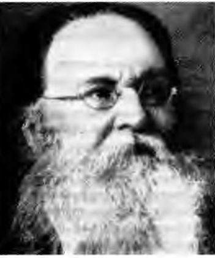
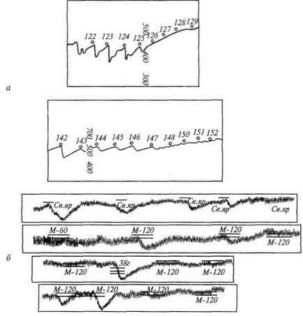
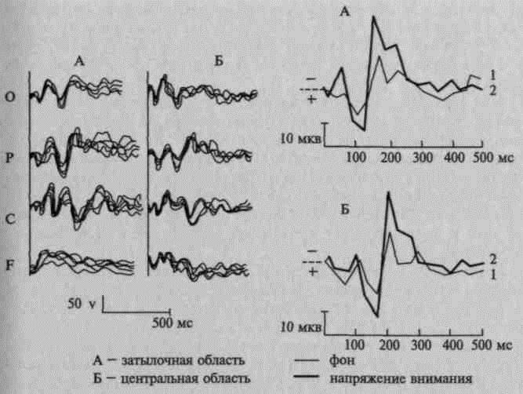
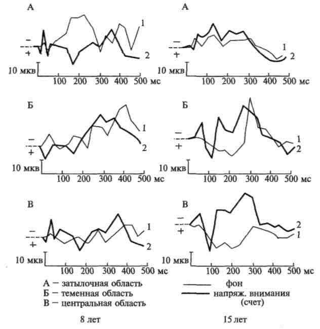
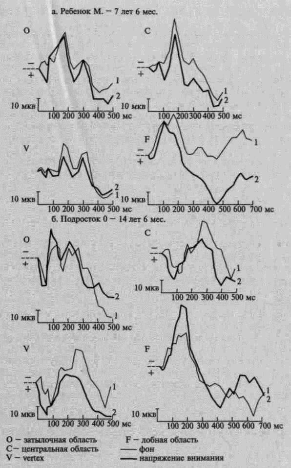
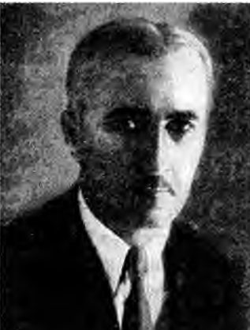

Жалпы психология · Танымдық процестер · 8-дәріс
Зейінсананың бағыты мен шоғыры
Айналамызда бір сәттің өзінде мыңдаған әсер бар: дыбыстар, түстер, иістер, ойлар. Соның бәрін бірдей қабылдасақ, санамыз хаосқа айналар еді. Зейін — осы ағыннан қажеттісін таңдап, соған шоғырлануға мүмкіндік беретін құбылыс. Бұл білім базасы зейін туралы бес оқулықтың материалын бір әңгімеге біріктіреді: ми қыртысындағы қозу ошағынан бастап сабақтағы шашыраңқылыққа дейін. Мәтін қазақ тілінде жазылған, ал тәжірибелерді өзіңіз орындап көресіз.
Құрметті студенттер!
Сабақта отырып, мұғалімнің сөзін тыңдап отырғандай боласыз, бірақ бір кезде ештеңе естімегеніңізді байқайсыз. Немесе қызықты кітапқа берілгені сонша, сізді шақырған дауысты естімей қаласыз. Екі жағдайда да зейін жұмыс істеп тұр. Бірінде ол сізге бағынбай, басқа жаққа кетті. Екіншісінде бір нәрсеге толық шоғырланды. Зейінсіз ешбір іс-әрекет, ешбір оқу нәтижелі болмайды. Сондықтан зейін — психологияның ең маңызды тақырыптарының бірі.
Білім базасы бес бөлімнен тұрады. Алдымен зейіннің не екенін, оның физиологиялық негіздерін және мидағы ұйымдасуын анықтаймыз. Екінші бөлімде ғалымдардың зейінді қалай түсіндіргенін ретімен қарастырамыз: Ланге мен Рибодан бастап Узнадзе мен Гальперинге, одан когнитивтік психологияға дейін. Үшінші бөлім зейіннің түрлеріне, төртіншісі оның қасиеттеріне арналған. Соңғы бөлімде зейіннің қалай дамитынын және оның оқу мен тұлғадағы орнын көреміз.
Тараулар бір-бірімен байланысқан. Әр тарау алдыңғы тарауда туған сұрақтан басталады да, келесі тарауға көпір салып аяқталады. Сондықтан ретімен оқыған дұрыс. Ал керек ұғымды жоғарыдағы іздеу жолағы немесе терминдер сөздігі арқылы таба аласыз.
Әр тараудың соңында негізгі түйіндер, өзін-өзі тексеру сұрақтары және жағдаяттық есептер берілген.
Бастамас бұрын
1-тарау бір қарапайым сұрақпен ашылады: дәл қазір сіздің санаңызда не бар және соның қайсысы анық? Жауапты интерактив арқылы өзіңіз табасыз. Бастау үшін 1-тарауға өтіңіз.
Мазмұны
I БӨЛІМЗейін деген не?Зейіннің анықтамасы, физиологиялық негіздері және мидағы ұйымдасуы
- 01Зейін: сананың бағыты мен шоғыры«Зейін қой!», «Назар аудар!» — бұл сөздерді күнде естиміз. Ал олардың астарында не жатыр? Сезім мүшелерімізге әр секунд …
- 02Зейіннің физиологиялық негіздеріАлдыңғы тараудан білгеніміздей, зейіннің өз өнімі жоқ, бірақ ол барлық психикалық процеске қатысады. Енді мидың өзіне үң…
- 03Мидағы зейін: Лурияның нейропсихологиясыКлассикалық физиология зейіннің жалпы заңдылықтарын ашты. Енді зейінді тірі адамның миынан өлшеп, ми зақымданғанда ол қа…
II БӨЛІМЗейін теорияларыЗейінді ғалымдар қалай түсіндірді: Вундт пен Лангеден когнитивтік психологияға дейін
- 04Зейін туралы ілімнің тарихыАлдыңғы тарауда зейінді мидан «көруге» болатынына көз жеткіздік: бағдарлау рефлексін құрал тіркейді, туындатылған потенц…
- 05Рибо мен Ланге: қимылдан апперцепцияғаАлдыңғы тарауда Н. Н. Ланге жасаған зейін теорияларының картасымен таныстық. Оның бірінші жолында «зейін — қимылдық икем…
- 06Узнадзе мен Гальперин: ұстаным және бақылауРибо мен Ланге ырықты зейіннің сырын қимылдан және апперцепциядан іздеген еді, бірақ бұл жауап көңілге толық қонбады. Ол…
- 07Когнитивтік психологиядағы зейінАлдыңғы тарауда зейіннің тамырын адамның өзінен — оның ұстанымы мен бақылау әрекетінен іздедік. XX ғасырдың 60-жылдары А…
III БӨЛІМЗейін түрлеріЫрықсыз, ырықты және үйреншікті зейін
- 08Ырықсыз зейін: бізді не «ұстап алады»?Когнитивтік психология бір маңызды нәрсені көрсетті: келген ақпараттың бәрі санаға жетпейді, сүзгі оның аз ғана бөлігін …
- 09Ырықты және үйреншікті зейінАлдыңғы тарауда зейінді сырттағы әсер мен ішкі күй өздігінен бұратынын көрдік. Бірақ ырықсыз зейін бізге бағынбайды, қыз…
IV БӨЛІМЗейін қасиеттеріТұрақтылық, шоғырлану, бөліну, ауысу, көлем; алаңдаушылық пен шашыраңқылық
- 10Зейін тұрақтылығы және тербелістеріЗейіннің түрлері оны кім басқаратынын көрсетеді. Ал зейіннің қалай жұмыс істейтінін — бір нысанда қанша тұрақтайтынын, қ…
- 11Шоғырлану мен бөлінуАлдыңғы тарауда зейінді уақыт ішінде бақыладық: ол бір қалыпта тұрмайды, бірде күшейіп, бірде әлсіреп, тербеліп отырады …
- 12Ауысу және көлемАлдыңғы тарауда зейіннің бөлінуі көбіне жылдам ауысу екенін көрдік: адам бірнеше істі «қатар» атқарып отырғанда, шын мән…
- 13Алаңдаушылық пен шашыраңқылықАлдыңғы тарауда зейінді өз еркімізбен ауыстырып, оның көлемін өлшедік. Енді зейіннің бізге бағынбайтын жағына көшеміз. К…
V БӨЛІМЗейін адам өміріндеЗейіннің дамуы, тұлға мен оқудағы орны
Дереккөздер
- БабаевҚазақ тіліндегі психология оқулығы, 9-дәрісбаян «Зейін», 104–116-беттер. Қазақша терминдер осы кітап бойынша берілді.
- Маклаков А. Г.Общая психология. 14-тарау «Внимание», 354–372-беттер.
- Немов Р. С., Романова Е. С.Общая психология. I бөлім, 10-тарау «Внимание», 366–403-беттер.
- Крысько В. Г.Общая психология в схемах и комментариях. 2.12–2.15-схемалар, 66–73-беттер. Интерактив схемалар мен тәжірибелердің бір бөлігі осы кітаптың деректері бойынша жасалды.
- Лурия А. Р.Основы нейропсихологии. III тарау «Внимание». Суреттердің бір бөлігі осы кітаптан алынды.
I бөлім · Зейін деген не?
Зейін: сананың бағыты мен шоғыры
«Зейін қой!», «Назар аудар!» — бұл сөздерді күнде естиміз. Ал олардың астарында не жатыр? Сезім мүшелерімізге әр секунд сайын сан алуан әсер келіп жатады, бірақ санамызға соның азғантайы ғана жетеді. Сол азғантайды не іріктейді және қалай іріктейді? Бүкіл тақырып осы сұрақтан басталады. Бұл тарауда зейіннің анықтамасымен, оның екі басты белгісімен танысамыз, сананың қай тұсында тұратынын және не қызмет атқаратынын көреміз. Соңында алдағы жолдың картасын жасаймыз.
- Маклаков, 14.1, 14.2-сурет
- Немов, 10.1, 10.2
- Бабаев, 9-дәріс, §1
- Крысько, 2.12
- Лурия, III тарау, §1
Кешке ҰБТ-ға дайындалып отырсыз делік. Тарих оқулығының бір бетін аяғына дейін оқып шықтыңыз: көзіңіз жол-жолмен жүріп отырды. Бірақ бетті аударарда байқайсыз — ештеңе есте қалмапты. Ойыңыз әу бастан ертеңгі тойда не телефонға келген хабарламада жүрген екен. Бетті қайта ашып, бұл жолы «зейін салып» оқисыз, сонда мәтін мүлде басқаша ашылады. Екі оқудың айырмасы неде? Мәтін сол мәтін, көз сол көз. Өзгерген бір-ақ нәрсе бар — зейін. Осы тарауда соның не екенін анықтап көрейік.
Мол ағын, тар өткел
Адамға сырттан да, өз есінен де толассыз ақпарат ағып келіп жатады. Американ психологы Э. Титченер осы ағынның бір қызық ерекшелігін байқаған: ағын соншалық мол болса да, адам оның титімдей ғана бөлігін санасында ұстап, тек соған зейін қояды. Р. С. Немов бұл ойды әрі қарай өрбітеді. Сезім мүшелеріне жеткен әсердің бәрі санаға өте бермейді, сана олардың аз ғана үлесін іріктеп алады. Тек сол үлес түйсік пен бейнеге айналады, есте қалады, ойымызға арқау болады. Ал іріктеуді зейін жасайды.
А. Р. Лурия да зейін туралы әңгімені осыдан бастайды. Оның айтуынша, адамның ретімен, ұйымдасқан түрде жүретін кез келген психикалық іс-әрекеті таңдамалыорыс. избирательность, селективность · ағыл. selectivity болады: көп нәрсенің ішінен біразын ғана іріктеп алады. Бұл іріктеу үш жерден байқалады.
- Тітіркендіргіштер. Бізге сансыз тітіркендіргіш әсер етеді, ал адам солардың аз ғанасын таңдайды: ең күштісін не ең маңыздысын. Маңыздысы дегеніміз — қызығуына, ниетіне, алдындағы міндетіне сай келетіні.
- Қимылдар. Жасауға болатын көп қимылдың ішінен адам керекті нәтижеге жеткізетінін ғана таңдайды.
- Ес іздері. Есте сақталған сан алуан іздің ішінен дәл қазіргі іске керегі ғана еске оралады.
Үш жағдайда да санаға түйсіктің, қимылдың, естегі іздің аз ғана бөлігі жетеді. Олардың мүмкіндігі бірдей емес: маңыздысы мен жаңасы алға шығады, ал маңызы аз не әбден таныс нәрсе тежеліп қалады. Лурия зейін деп осы таңдап алу қабілетін атайды.
Зейін (Лурия бойынша)
Психикалық процестердің таңдамалылығы. Лурия зейінді екі жағынан қарайды. Бір жағынан, ол іске керегін іріктеп алады. Екінші жағынан, істің анық әрі ретімен жүруін қадағалап отырады.
Таңдамалылықты өз көзіңізбен көріп алайық. Төмендегі өрістің бәрі бұлыңғыр. Саусағыңызды не тінтуірді қай жерге апарсаңыз, тек сол жерде шағын айқын дөңгелек пайда болады — прожектордың жарығы секілді. Тапсырма: өрістен үш нәрсені тауып көріңіз.
Байқадыңыз ба: әр сәтте өрістің кішкене ғана бөлігі анық көрінеді. Бірдеңе табу үшін «прожекторды» жылжытып, бір жерге тоқтатуға тура келді. Қалған бөлігі бұлыңғыр күйінде қалды, бірақ жоғалып кеткен жоқ. Сонда зейін өрісті кеңейтпейді екен: ол өрістің бір бөлігін таңдап алып, соны жарықтандырады. Когнитивтік психологияда зейінге дәл осындай анықтама бар, оны Немов былай келтіреді: зейін — көру өрісінің бір бөлігін жарықтандыратын прожектордың сәулесі (бұл модельдер туралы 7-тарауда). Әрине, прожектор — бейнелі салыстыру, ол зейіннің бір қырын ғана көрсетеді. Енді ғалымдардың нақты анықтамаларына көшейік.
Анықтама: бағытталу және шоғырлану
А. Г. Маклаков зейіннің не екенін қарапайым мысалмен түсіндіреді. Математикадан үй тапсырмасын орындап отырған оқушыны елестетіңізші. Ол есепке беріліп кеткен: шартын ой елегінен өткізіп, бір амалдан екіншісіне көшеді. Мұндай баланы «ісіне зейін қойып отыр», «керегін бөліп алып, соған ден қойып отыр» дейміз. Оның ойы бір нәрсеге бағытталған, бір нәрсеге жинақталған.
Зейін (Маклаков бойынша)
Психикалық іс-әрекеттің бір нысанға бағытталуы және соған шоғырлануы.
Бабаевтың мысалы да осыған ұқсас. Сурет салуға отырған бала заттың түр-түсін, оны қағазға қалай орналастыратынын ойлап, жұмысына әбден беріліп кетеді. Ата-анасы бірдеңе десе де, құлағына кірмейді. Мұндайда «баланың зейіні ісінде, басқа ештеңеге алаңдамай отыр» дейміз. Бабаев бұдан маңызды қорытынды шығарады: адам бір мезгілде әр түрлі нәрсені ойлап, әр түрлі іспен бірдей айналыса алмайды. Сондықтан оның санасы әр сәтте өзіне керек заттың маңызды жағына ғана бағытталады.
Екі мысалда да зейіннің екі белгісі қатар жүр: ой бір нәрсеге бағытталады және соған жинақталады. Әрқайсысына жеке тоқталайық.
Бағытталу
Маклаковтың түсіндіруінше, бағытталуорыс. направленность — ең алдымен таңдау. Адам айналасынан өзіне маңызды зат пен құбылысты бөліп алады немесе бір іске кіріседі. Бірақ таңдап алу — істің жартысы ғана, енді сол таңдауды біраз уақыт ұстап тұру керек. Оның өз мысалы: зейініңізді бір есепке оп-оңай бұрасыз, бірақ сол есепті зейін өрісінде ұстап тұра алмасаңыз, оны шығаруыңыз екіталай.
Бабаев мұны мектеп өмірімен көрсетеді. Сабақта «анау не, мынау не?» деп оқушылардың зейінін іске бұру онша қиын емес. Бар қиындық — сол бағытты керекті уақыт бойы сақтап тұруда. Мұғалім болған адам мұны жақсы біледі: сабақтың алғашқы минутында сынып ұйып тыңдайды, ал жиырмасыншы минутта сол зейінді ұстап тұру — нағыз шеберлік.
Шоғырлану
Зейіннің екінші белгісі — шоғырлануорыс. сосредоточенность, сосредоточение · ағыл. concentration, яғни іске азды-көпті терең берілу. Маклаков пен Бабаев бір заңдылықты атайды: міндет неғұрлым қиын болса, зейін соғұрлым күшті әрі өткір болуы керек. Ал жұмыс жеңіл болса, зейінге жұмсалатын күш те азаяды.
Шоғырланудың тағы бір қыры бар: бөгде нәрседен ойды аулақ ұстау. Ойыңыз басқа нәрсеге ауа берсе, есеп шықпайды. Бабаев мұны әдемі суреттейді: зейіннің бар күші бір іске жұмсалған сәтте айналадағының бәрі бұлдыр елес сияқты болып қалады.
Екеуінің байланысы мен айырмасы
Бағытталу мен шоғырлану бірінсіз бірі болмайды. Зейініңізді бір нәрсеге бұрсаңыз, сол сәтте соған шоғырланасыз да. Керісінше, бір нәрсеге шоғырлансаңыз, ойыңыз соған бағытталып тұрады. Дегенмен Маклаков бұл екеуін бір ұғым деп санамайды. Бағытталу бір істен екінші іске ауысумен байланысты, ал шоғырлану — іске терең берілумен. Тойдағы домбырашыға қараңыз. Ол алдымен қай күйді тартатынын таңдайды — бұл бағытталу. Күйге берілген сайын залдағы у-шуды естімей кетеді — бұл шоғырлану.
В. Г. Крысько мен Бабаев та зейінді осы белгілер арқылы анықтайды. Бірақ әрқайсысы оның бір қырын алға шығарады.
Зейін (Крысько бойынша)
Адам санасының нақты бір заттар мен құбылыстарға таңдамалы бағытталуы.
Зейін (Бабаев бойынша)
Сананың нақты (заттық) не идеалды бір нысанға бағытталуы және шоғырлануы. Сана мұндай нысанға адамның сезімдік, ақыл-ой және қимылдық белсенділігін арттыру үшін бағытталады.
Сана өрісі: анық орталық пен бұлыңғыр шет
Зейін қойғанда санамызда не өзгереді? Маклаков мұны көрумен салыстырып түсіндіреді. Бір топ затқа қарап тұрсыз делік. Көз алдыңыздың ортасындағы заттарды анық көресіз, ал шеттегілері бұлыңғырлау болып тұрады. Сана да осыған ұқсайды. Дәл қазір істеп жатқан ісіміздің өзегі сананың ортасында тұрады. Ал әзірге маңызы жоқ нәрсе шетке, сананың «бүйір өрісіне» ығысады.
Бірақ Маклаков бұл тек ұқсастық екенін ескертеді: бір затқа қарап отырып, мүлде басқа нәрсені ойлауға болады. Дәрісханада тақтаға қарап отырып, демалыс күнгі сапарды ойлаған кезіңіз болған шығар. Сол сәтте сананың ортасында көзіңіз қадалған тақта емес, ойыңыздағы сапар тұрады.
Маклаков сананы бір-бірінің ішіне сызылған екі шеңбермен бейнелейді. Үлкен шеңбер — сананың анық емес аймағыорыс. зона неясного сознания. Ішіндегі кіші шеңбер — сананың анық аймағы, оны зейін өрісіорыс. зона ясного сознания, зона внимания · ағыл. focus of attention деп те атайды. Сонда санаға анықтық пен айқындық беретін — зейін. Соның арқасында адам әр сәтте не істеп жатқанын, оның мәні неде екенін түсініп отырады. Анық емес аймақтың өзі де біркелкі емес: онда да бұлыңғырлықтың сатылары бар. Көру өрісіндегідей, ортаға жақындаған сайын бәрі анығырақ сезіледі.
Бабаев та осы бейнені қолданады, бірақ қазақтың өз сөзімен айтады: зейін қойған затымыз санамыздың төріне шығады, ал қалған дүние сананың шетіне ығысады. Төрге шыққан заттың бейнесі айқындала түседі. Ол туралы елестер мен ойлар іс мақсатына жеткенше санада сақталады. «Төр» сөзі мұнда өте орынды: қазақ үйінде төр — ең құрметті орын, оған бір мезгілде бәрі бірдей сыймайды.
Сананы айқын және күңгірт аймаққа бөлу — жаңа ой емес. Титченер зейінді интроспекция әдісімен зерттеген: өз санасын өзі бақылап отырған. Оның пікірінше, зейіннің басты белгісі — сана мазмұнының «айқын» және «күңгірт» бөлікке жіктелуі. Сана анық, айқын, жарық болса — зейін бар. Бұлыңғыр, күңгірт болса — зейін жоқ.
Енді бұл суретті өзіңіз «жинап» көріңіз. Төмендегі интерактивте сана өрісі екі шеңбермен берілген. «Ойлар мен әсерлерді» — есептің шартын, терезедегі шуды, ертеңгі тойды, қаламды, аш қарынды — зейін аймағына бір-бірлеп кіргізіп көріңіз. Ортаңғы шеңберге бір уақытта олардың нешеуі сыяды?
Ортаңғы шеңберге бір-екі нәрсе ғана сыяды: жаңасын кіргізсеңіз, бұрынғысының біреуі шетке ығысып шығады. Бұл ойынның жай ережесі емес, Маклаков суреттеген заңдылық: сананың анық аймағы тар. Бірақ шетке шыққан нәрсе жоғалып кетпейді. Ол бұлыңғыр күйінде сақталады да, керек кезде қайта ортаға орала алады. Ал шын өмірде аш қарын кейде сұраусыз-ақ ортаға «бұзып кіреді». Мұндай ырықсыз зейін туралы 8-тарауда әңгімелейміз.
Зейін — дербес процесс пе?
Анықтама да, сана өрісінің суреті де бар. Ендеше ғалымдар зейін жайында бір тоқтамға келген шығар? Жоқ. Маклаковтың айтуынша, психологтар зейін туралы әлі күнге дейін бір пікірге келмеген. Ол екі даулы сұрақты атайды.
- Зейін дербес құбылыс па? Кейбір авторлар зейінді жеке құбылыс деп қарауға болмайды дейді: ол кез келген психикалық процесте азды-көпті бар. Енді біреулер, керісінше, зейіннің дербес психикалық процесс екенін дәлелдейді.
- Зейін қай топқа жатады? Бір топ ғалым зейінді танымдық процестердің қатарына қосады. Екінші топ оны ерікпен және іс-әрекетпен байланыстырады. Олардың уәжі мынадай: кез келген іс-әрекет, оның ішінде танымдық іс-әрекет те, зейінсіз жүрмейді, ал зейіннің өзі адамнан азды-көпті ерік күшін талап етеді.
Бірінші дау туралы Немов кеңірек айтады. Зейіннің дербестігіне күмән келтіргендердің бірі — американ ғалымы Р. Вудвортс. Оның екі дәлелі болған. Біріншіден, «зейінге арналған» тәжірибелерде сыналушылар шын мәнінде басқа танымдық процестерге қатысты есеп шығарады. Екіншіден, алынған нәтижелер де зейінге емес, сол процестерге көбірек қатысты. Мысалы, «зейін көлемін» өлшейтін тәжірибені бір мезгілде бірнеше нысанды қабылдау тәжірибесі деп те атауға болады. Ал зейіннің тербелісі мен шашыраңқылығы туралы тәжірибелер, Вудвортстың ойынша, зейінді емес, шаршауды зерттейді.
Дегенмен қазіргі психологтардың көбі зейінді дербес процесс деп санайды. Олардың дәлелі мынадай:
- зейіннің басқа танымдық процестерде жоқ өз қасиеттері бар;
- зейін өзі қатысатын процестерге онша тәуелді болмай өзгереді: бір нәрсені көбірек не азырақ зейінмен қабылдай аламыз, ал зейінімізді уақытша бұрған нәрсе жоғалып кетпейді;
- зейіннің бұзылыстары басқа процестердің бұзылыстарына онша тәуелді емес;
- ағзада зейінді өзіне тән жүйке құрылымдары мен құбылыстары қолдап тұрады.
Немов бұған тілден де дәлел табады. Көп тілде «зейін» деген жеке сөз және оны нақтылайтын көптеген термин бар. Ал тіл «бос», артық сөзді көтермейді: жаңа сөз басқа сөздер атамайтын нәрсені атаса ғана пайда болып, тілде қалады. Қазақ тілінде де «зейін» мен «назар» қатар жүреді, бірақ мағыналары бірдей емес. Бұл сайтта «зейін» — ғылыми термин, ал «назар» сөзін тек жалпы мағынада («назар аудару») қолданамыз.
Дегенмен зейінді дербес процесс деп санайтындар да оның басқа процестерден ерекше екенін мойындайды. Іс жүзінде зейін ешқашан бөлек, жеке-дара жүрмейді: ол әрдайым басқа бір процестің ішіне «кірігіп» тұрады. Көбіне бұл — қабылдау, бірақ зейінді ес пен ойлау арқылы да, түрлі іс-әрекет арқылы да зерттейді. Сондықтан бір сұрақ әлі шешілген жоқ: зейін туралы ашылған заңдар барлық процеске ортақ па, әлде әр процестің өзіне ғана тән бе?
Бабаевтың бұл дауда өз пікірі бар. Ол зейінді неге бағытталғанына қарай үшке бөледі. Сыртқы заттарға бағытталған зейінді сезімдік зейінорыс. сенсорное внимание дейді. Адамның өз санасындағы ой мен бейнеге бағытталса — интеллектуалды (ақыл-ой) зейінорыс. интеллектуальное внимание. Ал сана дене қозғалысына ауса, қимылдық зейінорыс. моторное внимание туралы айтамыз. Бабаевтың ойынша, мұның бәрі зейіннің дербес танымдық процесс емес екенін көрсетеді: ол басқа танымдық процестерге көмекші қызмет атқарады.
Зейінді сырттан қалай танимыз?
Зейін өз өнімін жасамаса, оның бар-жоғын қалай білеміз? Бабаевтың жауабы: зейін істен, бақылаудан, адамның бет-әлпетінен, дене қалпы мен қимылынан көрінеді. Зейін қойып тыңдап отырған оқушыны зейінсіз отырғанынан сырттай-ақ ажыратуға болады. Дәрісханаға көз жүгіртіп көріңізші. Біреу сәл алға еңкейіп, оқытушыдан көзін алмай отыр, қаламы да қозғалмай қалған. Енді біреудің көзі терезеде, қолы телефонда. Мұндай белгілерді бәріміз күнде «оқимыз».
Бірақ сыртқы белгіге әрдайым сене беруге болмайды: тыңдаған болып отыру оңай екенін өзіңіз де білесіз. Сондықтан психологтар зейіннің ішкі, ғылыми белгілерін іздеген. Немов осындай екі тізімді салыстырады.
Біріншісі — Титченердің тізімі. Ол «зейін» сөзінің сол кездегі тоғыз мағынасын жинаған: сана өрісін тарылтатын не кеңейтетін ішкі күштен бастап ерекше түйсіктердің жиынтығына дейін (тізімнің толығы 4-тарауда). Немовтың бағалауынша, бұл тізімге зейінге тікелей қатысы жоқ нәрселер де кіріп кеткен: ерік, уәждеме, ақыл-ой қасиеттері, тіпті атқарылған жұмыстың көлемі мен сапасы.
Екінші тізімді Ю. Б. Гиппенрейтер мен В. Я. Романов ұсынған. Олардың ойынша, зейіннің танымдық процесс ретінде бес белгісі бар:
- «зейін өрісіндегі» сана мазмұны анық әрі айқын болады;
- зейін күшейгенде істің нәтижесі сапалырақ шығады;
- іс барысында «зейін өрісінде» болған материал жақсы есте қалады;
- зейін аймағына түскен материалды жақсырақ қайта жаңғыртуға көмектесетін қимылдық және вегетативтік реакциялар пайда болады;
- ақпарат таңдап қабылданады және таңдап өңделеді, «сана өрісі» анық (орталық) және анық емес (шеткі) бөлікке бөлінеді.
Екі тізімді салыстырып көріңіз. Титченердікі ішкі сезімге сүйенеді, ол кең әрі шашыраңқы. Гиппенрейтер мен Романовтікі — тексеруге болатын белгілер: істің сапасы, есте қалуы, реакциялар. Бесінші белгі бізге таныс — бұл Маклаковтың екі шеңбері. Ал төртінші белгі — қимылдық және вегетативтік реакциялар — алдағы тарауларға жол ашады. Солардың қатарында бағдарлау рефлексінің құрамдас бөліктері бар, физиологтар оларды арнайы құралмен тіркейді (2-тарау, 3-тарау).
Зейін не үшін керек?
Ал зейін нақты не істейді? Оның басты қызметі — адамға келетін ақпарат ағынын ретке келтіру. Бұл ағын сезім мүшелерінен де, естен де келеді және ол орасан зор: адам оның бәрін бір мезгілде қабылдап, өңдеп, талдап үлгере алмайды. Оның едәуір бөлігі дәл қазір керек те емес, қолдағы іске қатысы жоқ. Зейін осы ағыннан қазір өмірлік маңызы бар нәрсені іріктеп алады.
Іріктеу болмаса, не болар еді? Немов мұны былай елестетеді. Адам айналасындағы дүниеден бағыт-бағдар таба алмай, бәрін қатарынан қабылдап, бәрін есте сақтауға мәжбүр болар еді. Есін өз еркімен басқара алмас еді. Қиялы бір-бірімен байланыссыз бейнелердің ретсіз ағынына, У. Джемстің сөзімен айтсақ, ешкім реттемейтін «сана ағынына» айналар еді. Ойлау да мүмкін болмас еді: ойлау үшін бір ойды санада ұстап, бір қисынмен жүру керек. Сөйлеу байланыссыз дыбыстардың жиынтығына айналар еді.
Немов зейіннің нақты қызметтерін де атайды, біз оларды кестеге жинадық.
| Қызмет | Мәні | Мысал |
|---|---|---|
| Таңдап алу (таңдамалылық) | Танымдық процестер әр сәтте қолда бар ақпараттың тек бір бөлігін өңдейді | Базардағы у-шудың ішінен сатушының айтқан бағасын ғана естисіз |
| Анықтау, күшейту | Зейін түскен нысан анығырақ қабылданады, әлсіз түйсік күшейеді. Немов мұны техникадағы сигнал күшейткішке ұқсатады | Алыстан жеткен әлсіз әуенге құлақ түрсеңіз, ол анығырақ естіледі |
| Сенсибилизациялау | Зейін бағытталған сезім мүшесінің түйсік табалдырығы төмендейді, сондықтан ол сезімтал бола түседі | Телефонның дірілін күтіп отырсаңыз, әлсіз дірілді де бірден сезесіз |
| Белсендіру (ынталандыру) | Шоғырланған зейін басқа танымдық процестерді жылдамдатады; зейін қойған ісіңізді белсендірек атқарасыз | Шоғырланып отырсаңыз, есеп тезірек шығады |
| Ажырату (дифференциялау) | Зейінді бір нысаннан екіншісіне аударып, оларды салыстырамыз да, ұқсасы мен айырмасын табамыз | Екі ұқсас сөздің жазылуын кезек қарап, айырмасын табу |
| Бақылау | Зейін істі реттеуге және бағалауға қатысады. Ол уәждеме мен істің орындаушы бөлігін жалғап тұратын аралық буын іспетті | Мәтінді жазып болған соң, қатесін тексеріп шығу |
Кестеге қарап, бір қорытынды жасауға болады. Зейіннің өз өнімі жоқ, ол жаңа ақпарат тудырмайды. Соған қарамастан ол барлық танымдық процеске, адамның кез келген ісіне қатысады. Қабылдағанда керек ақпаратты іріктейді, есте қалдырғанда таңдап сақтайды, еске түсіргенде қажетін тауып шығарады. Ойлағанда міндет пен оған қатысты деректі санада ұстап тұрады. Қиялдағанда елестетіп отырған нысанды көз алдында ұстайды. Сөйлегенде айтылып жатқан ойды және сөздің дұрыстығын қадағалайды. Немов ұмытуды да зейінмен байланыстырады: бір материалға ұзақ уақыт зейін аудармасақ, ол ұмытылады.
Тақырып картасы
Сонымен, зейіннің не екенін, санада не істейтінін, не үшін керегін білдік. Енді бүкіл тақырыпқа биіктен көз салайық. Маклаков зейін туралы ілімді екі тармаққа бөледі: зейін түрлері және зейін қасиеттері. Түрлерінен бастайық. Бағытталу мен шоғырлану ырықсыз да, ырықты да болады. Іс бізді өзі баурап алып, ешқандай ерік күшінсіз айналыссақ, зейін ырықсыз болғаны. Ал бір жұмысты істеу керек екенін біліп, өз мақсатымыз бен шешіміміз бойынша кіріссек, зейін ырықты болады. Үшінші түрі де бар — үйреншікті зейін. Төмендегі схема — Маклаковтың 14.2-суреті. Әр блокты басып, қысқа анықтамасын оқыңыз, сол жерден керекті тарауға да өте аласыз.
Схемадағы әр блок — алдағы тараулардың бірінің тақырыбы. Жолымыз мынадай:
- I бөлім — зейін деген не? Анықтамадан кейін зейіннің физиологиялық негіздеріне (2-тарау), сосын Лурия сипаттаған мидағы ұйымдасуына (3-тарау) көшеміз.
- II бөлім — зейін теориялары. Ғылым зейінді қалай «тапты» (4-тарау), Т. Рибо мен Н. Н. Ланге (5-тарау), Д. Н. Узнадзе мен П. Я. Гальперин (6-тарау), когнитивтік психология (7-тарау).
- III бөлім — зейін түрлері. Ырықсыз зейін (8-тарау), ырықты және үйреншікті зейін (9-тарау).
- IV бөлім — зейін қасиеттері. Тұрақтылық (10-тарау), шоғырлану мен бөліну (11-тарау), ауысу мен көлем (12-тарау), алаңдаушылық пен шашыраңқылық (13-тарау).
- V бөлім — зейін адам өмірінде. Зейіннің дамуы (14-тарау), зейін, тұлға және оқу (15-тарау).
Негізгі түйіндер
- Адамға толассыз ақпарат ағып келеді, ал санаға оның аз ғана бөлігі жетеді. Сол бөлікті зейін іріктейді. Лурия зейінді психикалық процестердің таңдамалылығы деп анықтайды.
- Зейін — психикалық іс-әрекеттің (сананың) бір нысанға бағытталуы және соған шоғырлануы (Маклаков, Бабаев, Крысько).
- Бағытталу — нысанды таңдап алып, сол таңдауды біраз уақыт ұстап тұру. Шоғырлану — іске терең беріліп, бөгде нәрседен ойды аулақ ұстау. Екеуі бірінсіз бірі болмайды, бірақ бір ұғым емес.
- Сананың екі аймағы бар: анық аймақ (зейін өрісі) және анық емес аймақ. Анық аймақ тар: онда бір мезгілде бір-екі нәрсе ғана айқын тұрады.
- Зейін дербес процесс пе, жоқ па — бұл әлі даулы. Немов оны дербес процесс деп санайды, Бабаев басқа процестерге қызмет етеді дейді. Бір нәрсеге екеуі де келіседі: зейіннің өз өнімі жоқ, бірақ өз қасиеттері бар.
- Зейіннің қызметтері: таңдап алу, анықтау мен күшейту, сенсибилизациялау, белсендіру, ажырату, бақылау.
- Тақырып екі тармаққа бөлінеді: зейін түрлері (ырықсыз, ырықты, үйреншікті) және зейін қасиеттері.
Өзін-өзі тексеру
Лурия зейінді неге «таңдамалылық» арқылы анықтайды? Таңдамалылық қай жерлерден көрінеді?
Адамға әсер ететін тітіркендіргіш те, жасауға болатын қимыл да, естегі із де орасан көп. Ал ұйымдасқан іс үшін соның аз ғана бөлігі керек. Лурия бойынша, таңдамалылық үш жерден көрінеді: тітіркендіргішті таңдаудан (күштісі не маңыздысы), қимылды таңдаудан (нәтижеге жеткізетіні) және ес ізін таңдаудан (қолдағы міндетке сайы). Маңыздысы алға шығады, маңызы азы тежеледі. Психологияда осы таңдамалылықты зейін деп атайды.
Бағытталу мен шоғырланудың айырмасы неде? Неге олар бірінсіз бірі болмайды?
Бағытталу — нысанды таңдап, сол таңдауды біраз уақыт ұстап тұру; ол бір істен екінші іске ауысумен байланысты. Шоғырлану — іске терең беріліп, бөгде нәрседен ойды аулақ ұстау. Зейініңізді бір нәрсеге бұрсаңыз, сол сәтте соған шоғырланасыз. Бір нәрсеге шоғырлансаңыз, ойыңыз соған бағытталады. Сондықтан екеуі тығыз байланысты, бірақ бір ұғым емес (Маклаков).
Маклаковтың «сана аймақтары» схемасын сипаттаңыз. Неге көру өрісімен салыстыру тек ұқсастық қана?
Схемада бір-бірінің ішіндегі екі шеңбер бар: үлкені — сананың анық емес аймағы, кішісі — сананың анық аймағы, яғни зейін өрісі. Істің өзегі ортада, маңызы жоқ нәрсе шетте тұрады. Анық емес аймақтың өзінде де бұлыңғырлықтың сатылары бар. Көру өрісі тек ұқсастық, өйткені бір нәрсеге қарап отырып, басқа нәрсені ойлауға болады. Сонда сананың ортасында көз қарап тұрған зат емес, ой тұрады.
Вудвортс зейіннің дербестігіне неге күмән келтірді? Қазіргі ғалымдар оған қалай жауап береді?
Вудвортстың ойынша, «зейінге арналған» тәжірибелерде сыналушылар басқа процестерге қатысты есеп шығарады. Нәтижелер де сол процестерге көбірек қатысты: зейін көлемі — бір мезгілде қабылдау, тербелістер — шаршау. Немовтың айтуынша, қазіргі ғалымдардың көбі зейінді дербес процесс деп санайды. Зейіннің өз қасиеттері бар, ол басқа процестерге онша тәуелді болмай өзгереді. Оның бұзылыстары да басқа процестердің бұзылысына онша байланбайды. Оны арнайы жүйке құрылымдары қолдайды.
Бабаев зейіннің қандай үш түрін атайды? Бұдан қандай қорытынды шығарады?
Сыртқы заттарға бағытталған сезімдік зейін, санадағы ой мен бейнеге бағытталған интеллектуалды (ақыл-ой) зейін және дене қозғалыстарына бағытталған қимылдық зейін. Бабаевтың қорытындысы: зейін дербес танымдық процесс емес, ол өзге танымдық процестерге көмекші қызмет атқарады.
Немов бойынша зейіннің сенсибилизациялау және бақылау қызметтері неден көрінеді?
Сенсибилизациялау: зейін бағытталған сезім мүшесінің түйсік табалдырығы басқа сезім мүшелерінікінен төмендейді, яғни ол сезімтал бола түседі. Бақылау: зейін басқа психикалық процестермен бірге істі реттеуге және бағалауға қатысады. Немов оны уәждеме мен істің орындаушы бөлігін жалғайтын аралық буын дейді.
Зейіннің «өз өнімі жоқ» десек, оны неге бәрібір зерттейміз?
Зейін қабылдау сияқты бейне де, ойлау сияқты жаңа ой да жасамайды. Ол басқа процестердің ішіне кірігіп жұмыс істейді (Немов). Бірақ оның өлшеуге болатын өз қасиеттері бар: тұрақтылық, көлем, шоғырлану, бөліну, ауысу. Оларды арнайы әдіспен бағалауға, дамытуға, бұзылғанын байқауға болады. Сондықтан зейін — психологияның жеке тақырыбы.
Зейін өз өнімін жасамайды, бірақ бүкіл психикалық өмірге араласады. Ендеше ол мидың қай жерінде «тұрады»? Көру мен естудің мида өз орталығы бар, ал зейіннің ше? Ми мыңдаған әсердің ішінен біреуін қалай таңдап алады? Ұйқы мен сергектік, «немене?» рефлексі, қозу мен тежелудің арпалысы, А. А. Ухтомскийдің доминантасы — бұлар туралы 2-тарауда әңгімелейміз.
I бөлім · Зейін деген не?
Зейіннің физиологиялық негіздері
Алдыңғы тараудан білгеніміздей, зейіннің өз өнімі жоқ, бірақ ол барлық психикалық процеске қатысады. Енді мидың өзіне үңілейік. Зейіннің мида жеке орталығы бар ма? Жоқ болса, таңдауды не жасайды? Классикалық физиология бұл сұраққа бірнеше жауап берген: сергектік деңгейі, «немене?» рефлексі, шеткі және орталық тетіктер, индукция заңы және А. А. Ухтомскийдің доминантасы. Бұл тарауда соларды бір-бірлеп қарастырамыз.
- Крысько, 2.12
- Бабаев, 9-дәріс, §3
- Маклаков, 14.1
- Немов, 10.1, 10.2, 10.5
Сыныпта тып-тыныш. Оқушылар шығарма жазып отыр, әрқайсысы өз ойымен әлек. Кенет есік сәл ашылады. Ешкім ештеңе демесе де, бәрі бір мезетте есікке бұрылады. Бұл көріністі Маклаков та, Бабаев та келтіреді. Бабаевта тағы бір мысал бар: мысық әлсіз сыбдырды естісе, елең етіп, құлағын дыбыс шыққан жаққа тігеді. Екі жағдайда да ағза қолындағы ісін тастап, жаңа әсерге бұрылды, ал сана ойланып, шешім қабылдап үлгерген жоқ. Олай болса, зейіннің тамыры ағзаның өзінде, жүйке жүйесінің жұмысында жатыр. Сол тамырды біртіндеп қазып көрейік.
Зейіннің жеке орталығы бар ма?
Алдымен ең таңғаларлық деректен бастайық. Көру, есту, басқа да түйсіктер мен қабылдау, сондай-ақ қимыл ми сыңарлары қыртысының нақты бір аймақтарымен байланысты. Ал зейіннің мұндай арнайы жүйке орталығы жоқ, дейді Крысько. Зейін сол психикалық процестерді атқаратын жүйке орталықтарының өзіне сүйенеді. Дәріс тыңдағанда — есту мен сөйлеуге қатысты орталықтарға, сурет салғанда — көру мен қимылға қатысты орталықтарға.
Сонда зейін мидың жұмысына ештеңе қоспай ма? Қосады, бірақ жаңа орталық емес. Зейін қойған сәтте қыртыста қозғыштығы жоғары аймақтар мен қозғыштығы төмен аймақтар пайда болады, ал олар бір-бірімен теріс индукция заңы бойынша байланысқан. Мұны үйге ұқсатуға болады: зейін — мидағы жаңа «бөлме» емес, бар бөлмелердің жұмыс тәртібі. Бір бөлмеде шам жанып тұр, қалғанында сөніп тұр.
Крысько зейіннің мәнін бір схемаға сыйғызған. Оның сол тармағында — төрт физиологиялық негіз, оң тармағында — жеті қасиет. Төмендегі схеманың блоктарын басып, Крысько түсініктемелерін оқыңыз.
Схеманың сол тармағы осы тараудың жоспары болады. Төрт физиологиялық негіз мыналар:
- қыртыста осы сәтте қозғыштығы жоғары аймақтардың болуы;
- жаңа шартты рефлекторлық байланыстардыңорыс. условно-рефлекторные связи түзілуі және саралаудыңорыс. дифференцировка оңай қалыптасуы;
- қозғыштығы жоғары және төмен аймақтар арасында теріс индукцияныңорыс. отрицательная индукция · ағыл. negative induction болуы;
- доминантаорыс. доминанта · ағыл. dominant құбылысының болуы.
Оң тармақтағы жеті қасиетке IV бөлімде (10–13-тараулар) ораламыз, ал бұл тарау төрт негізге арналады. Бірақ олардан бұрын тағы бір шартты айта кетейік. Қыртыста «қозғыштығы жоғары аймақ» пайда болуы үшін мидың өзі ояу, жұмысқа дайын тұруы керек. Бабаев зейіннің физиологиясын осы шарттан бастайды.
Сергектік: зейіннің жалпы аясы
Керек әрі маңызды әсерді таңдап алу үшін ми белсенді жұмыс істеп, бүкіл дене сергек тұруы керек. Адамның сергектік деңгейінорыс. уровень бодрствования · ағыл. level of arousal (wakefulness) оның сырт кейпінен де байқауға болады. Бірақ оны дәлірек өлшейтін құрал бар — мидағы әлсіз электр тогын тіркейтін электроэнцефалограф (ЭЭГ).
Бабаев ЭЭГ-ге сүйеніп, сергектіктің бес күйін ажыратады:
- терең ұйқы;
- қалғып-мүлгу;
- сабырлы сергектік;
- белсенді сергектік;
- шектен тыс сергектік.
Тиімді зейін тек сабырлы және белсенді сергектікте ғана мүмкін. Басқа күйлерде сана тарылып, қызметтерінің бір бөлігін ғана атқарады. Мысалы, қалғып-мүлгіп отырған адам бір-екі әсерге ғана жауап береді, қалған тітіркендіргіштерді мүлде сезбейді. Бабаевтың бір әдемі мысалы бар: шаршаған ана ешбір дыбысқа елең етпей, қатты ұйқыға кетуі мүмкін, бірақ нәрестесі сәл ғана дыбыс шығарса, міндетті түрде оянады.
Немов осы екі деңгейдің ЭЭГ-дегі ырғағын атайды. Сабырлы сергектікке жиілігі 8–13 Гц альфа-ырғақорыс. альфа-ритм · ағыл. alpha rhythm тән, белсенді сергектікке — жиілігі 14–30 Гц бета-ырғақорыс. бета-ритм · ағыл. beta rhythm. Ол бұл ырғақтарды адамның жеке ерекшелігімен де байланыстырады. ЭЭГ-сінде альфа-ырғақ басым адамның зейіні тұрақты болады, бірақ бір істен екіншісіне қиын ауысады. Бета-ырғақ басым адамның зейіні оңай ауысады, бірақ ұзаққа тұрақтамайды. Дегенмен бұл маңдайға жазылған тағдыр емес: оқу мен тәрбие арқылы зейінді өзгертуге болады.
Сергектікті не көтереді? Маклаковтың жауабы — торлы құрылыморыс. ретикулярная формация · ағыл. reticular formation. Тітіркендіргіш әсер етсе, ми белсенді бола бастайды, ал миды белсендіретін ең алдымен осы торлы құрылым. Оның жоғары өрлейтін бөлігі тітіркенсе, ми қыртысында жылдам электр тербелістері пайда болады. Жүйке процестері қозғалғыш бола түседі, сезімталдық табалдырықтары төмендейді. Миды белсендіруге таламустың диффузды жүйесі мен гипоталамустың құрылымдары да қатысады. Торлы құрылым туралы Лурияның деректерін 3-тарауда толық қарастырамыз.
Енді бес деңгейді өзіңіз «аралап» көріңіз. Төмендегі жүгірткіні жылжытыңыз не деңгейдің атауын басыңыз: әр деңгейде ЭЭГ толқынының шартты сызбасы, зейіннің мүмкіндігі және қысқа түсіндірме шығады.
Байқағаныңыздай, сергектік артқан сайын зейін де арта бермейді. Ол сабырлы және белсенді сергектікте ең жоғары болады да, шектен тыс сергектікте қайта төмендейді. Емтихан алдында түні бойы кітап құшақтап отырған студент мұны жақсы біледі: қалғып отырып оқыған беттің ештеңесі есте қалмайды. Ал қатты толқыған сәтте де ой шашырап, сұрақтың шартын бірнеше рет оқуға тура келеді.
«Немене?» рефлексі
Сергектік — зейіннің жалпы аясы ғана. Ал нақты бір әсерге бұрылуды не іске қосады? Бабаев бұл жерде бағдарлау рефлексінорыс. ориентировочный рефлекс · ағыл. orienting reflex ерекше атайды. Адам да, жануар да сыртқы ортадағы өзгеріске дереу жауап береді — бағдарлау рефлексінің негізі осы. Тарау басындағы мысық та, есікке бұрылған оқушылар да осы рефлексті көрсетеді. И. П. Павлов оны «немене?» рефлексіорыс. рефлекс «что такое?» деп атаған.
Маклаков бұл рефлекстің екі маңызды белгісін атайды. Біріншіден, ол туа бітеді: адамда да, жануарда да айналадағы кез келген өзгеріске өздігінен туады. Оның мысалы: бөлмеде сыбдыр естілсе, мысықтың баласы селт етіп, сақтанып, көзін дыбыс шыққан жаққа қадайды. Екіншіден, торлы құрылымды «іске қосатын» тетіктердің бірі де — осы рефлекс. Сөйтіп жаңа әсер алдымен бүкіл миды сергітеді, сосын зейінді өзіне тартады.
Немов бұл рефлексті зейін түрлерімен байланыстырады. Оның жіктемесінде рефлекторлық зейінорыс. рефлекторное внимание деген ұғым бар: бағдарлау рефлексі оянғанда зейін өздігінен бір нәрсеге ауады. Бұл — ырықсыз зейіннің бір түрі, адам оны саналы түрде басқара алмайды. Немов сөздігінде бағдарлау рефлексін былай анықтайды: жаңаның бәріне туатын және адамның зейінін соған автоматты түрде тартатын туа біткен рефлекторлық реакция.
Бірақ бір рефлекспен бәрін түсіндіруге бола ма? Маклаков болмайды дейді: зейіннің физиологиялық тетіктері әлдеқайда күрделі. Сынып мысалына оралайық. Есік ашылғанда бәрі бұрылды. Ал оқушылар жазып отырғанда сыныпта басқа дыбыстар да болды: қаламның сықыры, сағаттың тықылы, көршінің тынысы. Оларға ешкім бұрылған жоқ. Олай болса, мида үнемі әсер етіп тұрған тітіркендіргіштердің ішінен жаңасын бөліп алатын тетіктер бар. Маклаков пен Бабаев мұндай тетіктердің екі тобын атайды.
Шеткі және орталық тетіктер
Бірінші топ — перифериялық (шеткі) тетіктерорыс. периферические механизмы, яғни сезім мүшелерінің бейімделуі. Әлсіз дыбысқа құлақ түрген адам басын дыбыс шыққан жаққа бұрады. Сол сәтте арнайы бұлшық ет құлақ жарғағын керіп, оны сезімтал етеді. Ал дыбыс тым қатты болса, керісінше, жарғақ босаңсиды да, ішкі құлаққа тербеліс нашар өтеді. Бабаевтың айтуынша, ағза жағымсыз әсерді осылай бәсеңдетеді. Маклаков тағы бір белгіні қосады: зейін шегіне жеткен сәтте тыныс тоқтап не кідіріп қалады, бұл да естуді өткірлейді. Түнде ауладан әлсіз дыбыс шықса, тынысыңызды ішке тартып, басыңызды сол жаққа бұрасыз. Шеткі тетіктер дегеніміз осы.
Маклаков осы топқа ағылшын психологы Д. Бродбенттің көзқарасын да жатқызады. Бродбенттің ойынша, зейін — ақпаратты кіре берісте, яғни шетте іріктейтін сүзгі. Ол адамның екі құлағына бір мезгілде әр түрлі ақпарат беріп, тек сол құлағымен тыңдауды тапсырған. Сонда оң құлаққа берілгенін адам толық елемей қалған. Кейінгі зерттеулер шеткі тетіктердің ақпаратты физикалық белгісіне қарай іріктейтінін көрсетті. У. Найссер оларды алдын ала зейінорыс. предвнимание · ағыл. preattention деп атады. Бұл тетіктер ақпаратты шамамен ғана өңдейді: фигураны фоннан бөледі, сыртқы өрістегі кенет өзгерісті аңдып отырады. Бродбенттің тәжірибесі мен сүзгі моделін 7-тарауда толық талдаймыз.
Екінші топ — орталық тетіктерорыс. центральные механизмы: бір жүйке орталықтары қозады, басқалары тежеледі. Маклаковтың түсіндіруінше, ми сыртқы әсерлерді осылай да іріктейді. Мұнда бәрін қозудың күші шешеді, ал қозудың күші тітіркендіргіштің күшіне байланысты. Күшті қозу өзімен қатар пайда болған әлсіз қозуды басып тастайды да, ойымыздың бағытын өзі белгілейді.
Бірақ кейде басқаша да болады: бір мезгілде әсер еткен екі не бірнеше тітіркендіргіш бірігіп, бірін-бірі күшейтеді. Маклаков пен Бабаев мұны да әсерлерді іріктеудің бір жолы деп санайды. Базарда сатушы самсасын мақтап айғайлап тұр, сол сәтте самсаның иісі де мұрныңызға жетті. Дыбыс пен иіс қосылып, назарыңызды бірден сол жаққа бұрады.
Бір сұрақ әлі ашық. Қозу мен тежелу қыртыста қалай таралады? Неге бір аймақ қозса, екіншісі тежеледі? Бұған индукция заңы жауап береді.
Индукция заңы: қозудың айналасы тежеледі
Маклаков пен Бабаев зейіннің физиологиясын түсіндіргенде жүйке процестерінің индукция заңынаорыс. закон индукции нервных процессов · ағыл. law of induction ерекше мән береді. Бұл заңды ағылшын физиологы Ч. Шеррингтон дәлелдеген, кейін Павлов оны кеңінен қолданған. Заң бойынша, қозу мен тежелуорыс. торможение · ағыл. inhibition бірін-бірі екі жолмен тудырады.
- Бір мезгілді индукцияорыс. одновременная индукция. Ми қыртысының бір аймағында қозу пайда болса, басқа аймақтарында тежелу туады.
- Бірізді индукцияорыс. последовательная индукция. Мидың бір бөлігінде қозу біраз уақыт жүрген соң, сол жерде оның орнын тежелу басады.
Крысько бірінші жағдайды теріс индукция деп атап, оны кеңірек сипаттайды. Қыртыстың бір аймағында күшті қозу басталса, сол сәтте осы іске қатысы жоқ басқа аймақтар тежеледі. Ол жерлерде жүйке процесі бәсеңдейді, тіпті мүлде тоқтап қалады. Сөйтіп бір орталықтар қозған, екіншілері тежелген күйде болады. Шамы жанған және сөнген бөлмелер туралы жоғарыдағы бейне осыдан шыққан.
Қозған аймақтың несі ерекше? Маклаковтың айтуынша, онда қозуға ең қолайлы жағдай туады. Сондықтан бұл жерде саралау оңай жүреді, жаңа шартты байланыстар тез түзіледі. Саралау дегеніміз — бір-біріне ұқсас тітіркендіргіштерді ажыратып, біріне жауап беріп, екіншісіне жауап бермеуге үйрену. Крысько атаған екінші негіз осы. Бабаев бұл аймақты сол сәттегі ми сыңарларының жасампаз, шығармашыл бөлігі дейді. Ал мидың қалған бөліктері бұл кезде әдетте адамның өзі аңғармайтын, автоматты әрекеттерін басқарып тұрады.
Мұны өз басыңыздан да өткерген шығарсыз. Автобуста қызық кітапқа беріліп, аялдамаңыздан өтіп кеткен кезіңіз болды ма? Сол сәтте кітапқа қатысты аймақтар қозған, сондықтан оқығаныңыз жақсы түсінікті болды. Ал аялдама туралы хабарландыруды «тыңдауға» тиіс аймақтар теріс индукциямен тежелген еді. Есесіне теңселген автобуста тепе-теңдігіңізді жоғалтпай отырдыңыз: мұндай автоматты әрекетті «шамы сөнген бөлмелер» де атқара береді.
Енді индукцияны көзбен көрейік. Төмендегі интерактивте ми қыртысының сызба картасы берілген. Бір аймақты басыңыз: ол қозып, жарқырайды, ал көршілері теріс индукциямен тежеліп, сұр түске енеді. Сосын «Бірізді индукция» режиміне ауысып, қозған аймақтың өзінде уақыт өте келе не болатынын бақылаңыз.
Бір мезгілді индукцияда қозу бір жерге жиналып, айналасын «сөндіреді». Шоғырланудың физиологиясы осындай: бір нәрсеге зейін қойсаңыз, қалғаны еленбей қалады. Бірізді индукцияда қозудың орнын біраз уақыттан кейін тежелу басады. Мұны да өз тәжірибеңізден білесіз: бір іске ұзақ шоғырлансаңыз, сол істің өзі «тартпай» қалатын сәт келеді. Бірақ индукция заңы бір нәрсені түсіндірмейді. Неге кейбір қозу ошақтары әлсіремей, керісінше, ұзақ уақыт бойы күшейе береді? Бұл сұраққа Ухтомскийдің ілімі жауап береді.
Ухтомскийдің доминантасы

Алексей Алексеевич Ухтомский 1875–1942
Белгілі орыс физиологы. Жүйке-психикалық актілер биологиялық әрі жүйелі құбылыс деген И. М. Сеченовтың идеясын әрі қарай дамытты. Доминанта туралы ілімін жүйке орталықтарының жұмысын және мінез-құлықты ұйымдастыратын басты принцип деп ұсынды. Бұл ілім миды жай ғана рефлекторлық доғалардың жиынтығы деп қарайтын көзқарасқа қарсы шықты. Ухтомскийдің пікірінше, әр қимыл қыртыс пен қыртыс асты орталықтарының бірлескен жұмысына, ағзаның дәл қазіргі қажеттілігіне және оның биологиялық жүйе ретінде басынан кешкен тарихына байланысты. Ми — ортаны «алдын ала қабылдайтын, алдын ала сезетін және жобалайтын» мүше. Ухтомскийдің еңбектері қазіргі көптеген физиологиялық және психофизиологиялық теорияларға негіз болды (Маклаков, «Есімдер» блогы).
Доминанта принципінің мәні мынада. Мида әрдайым уақытша үстем болып тұрған бір қозу ошағыорыс. очаг возбуждения болады. Сол ошақ осы сәтте жүйке орталықтарының қалай жұмыс істейтінін анықтап, адамның мінез-құлқына бағыт береді (Маклаков, Бабаев). Ухтомский мұндай ошақты доминанта деп, ал бұл заңдылықты доминанта принципіорыс. принцип доминанты · ағыл. principle of the dominant деп атады.
Доминантаның несі ерекше? Жүйке жүйесіне келген импульстер доминантаға құйылып, сонда жинақталады. Сол уақытта басқа орталықтар басылып қалады. Сондықтан доминантадағы қозу одан әрі күшейе түседі. Индукциядан айырмасы да осында. Әдеттегі қозу бөгде тітіркендіргіштен әлсіреуі мүмкін, ал доминанта, керісінше, бөгде тітіркендіргіштердің қуатын өзіне «сорып алады». Маклаковтың қорытындысы бойынша, осы қасиеттерінің арқасында доминанта тұрақты қозу ошағына айналады. Зейіннің қарқындылығы ұзақ сақталатыны да сондықтан.
Крысько бұл ойды зейінге тікелей қолданады. Доминантаның арқасында ми қыртысында әр сәтте қозғыштығы жоғары бір аймақ (ошақ) болады және ол қыртыстың қалған бөлігінен үстем тұрады. Сондықтан адамның санасы нақты бір заттар мен құбылыстарға шоғырланады. Бабаев та шоғырлануды осылай түсіндіреді: қыртыстағы бір ошақ қозады, басқа аймақтар тежеледі, ал шоғырлану — соның салдары (толығырақ 11-тарауда).
Доминанта қайдан шығады? Маклаков пен Бабаев маңызды бір жайтты ескертеді: үстем қозу ошағы тек тітіркендіргіштің күшінен тумайды. Оған жүйке жүйесінің ішкі күйі де себеп бола алады. Ал ол күй бұрынғы әсерлерден, өткен тәжірибеде бекіген жүйке байланыстарынан қалыптасады. Ана баласының әлсіз дауысынан оянып, көшедегі қатты дыбысқа оянбайтыны сондықтан. ҰБТ-ға дайындалып жүрген түлекке де күнде естіген әр әңгіме емтиханды еске салады.
Маклаков доминантаның тағы бір қасиетін атайды — инерттілікорыс. инертность. Сыртқы орта өзгерсе де, доминантаны тудырған тітіркендіргіштер әсер етуін тоқтатса да, ол сақталып, қайталанып тұруға бейім. Инерттілік мінез-құлықтың қалыпты реттелуін бұзуы мүмкін. Бірақ сол инерттілік ақыл-ой белсенділігін ұйымдастыратын бастау да бола алады. Бұрынғы істердің іздері мида көптеген «әлеуетті доминанта» болып қатар сақталады. Олар бір-бірімен үйлеспесе, реакциялар қақтығысады. Мұндайда доминанта ауру процесін ұйымдастырып, оны күшейтіп жіберуі мүмкін.
Ухтомский доминанта арқылы көптеген психикалық құбылысты түсіндірген. Солардың бірі — зейін: оның бір нысанға бағытталуы, соған шоғырлануы және таңдамалылығы. Тағы бірі — ойлаудың заттық сипаты: біз сан алуан тітіркендіргіштің ішінен жеке кешендерді бөліп алып, әрқайсысын нақты бір зат деп қабылдаймыз. Ухтомскийдің түсіндіруінше, адам «ортаны заттарға бөлгенде» үш сатыдан өтеді:
- бар доминанта нығаяды;
- ағза өзі үшін биологиялық маңызы бар тітіркендіргіштерді ғана бөліп алады;
- доминанта (ішкі күй) мен сыртқы тітіркендіргіштер кешені арасында сай байланыс орнайды.
Доминантаның ең таңғаларлық қасиетін өзіңіз тексеріп көріңіз. Төмендегі интерактивте мида бір доминанта ошағы бар. Бөгде тітіркендіргіштерді — дыбысты, жарықты, жанасуды, иісті — кезекпен басыңыз. Олар доминантаны әлсірете ме, әлде күшейте ме? Сосын тітіркендіргіштерді тоқтатып, ошақтың не болатынын бақылаңыз.
Бөгде тітіркендіргіштер доминантаны бұзбады, керісінше, оған «құйылып», оны күшейтті. Тітіркендіргіштерді тоқтатсаңыз да, ошақ бірден сөнбеді — инерттілік деген осы. Өмірде мұны жиі көреміз. Үлкен жарыстың алдында спортшыға кез келген дыбыс старт белгісіндей естіледі. Ғашық жігіт қай әнді естісе де, сүйген қызын еске алады. Бөгде әсерлер ойды басқа жаққа бұрмайды, қайта сол бір ойды одан сайын қоздыра түседі.
Жаңалық детекторлары мен күту нейрондары
Индукция мен доминанта туралы ілім XX ғасырдың бірінші жартысында қалыптасты. Кейінгі зерттеушілер зейіннің тетіктерін жеке нейрондардан іздей бастады. Маклаков солардың бір нәтижесін келтіреді: сау адам зейінін қатты жұмсағанда, мидың маңдай бөліктерінде биоэлектрлік белсенділік өзгереді. Зерттеушілер мұны маңдай бөліктерінде орналасқан ерекше нейрондармен байланыстырады.
- «Жаңалық детекторлары»орыс. нейроны-детекторы новизны · ағыл. novelty detectors. Жаңа тітіркендіргіш әсер етсе, бұл нейрондар белсенді болады, ал адам оған үйреніп кеткен сайын бәсеңдейді.
- «Күту нейрондары»орыс. нейроны ожидания. Бұл нейрондар ағза қазіргі қажеттілігін өтейтін нысанға кезіккенде ғана қозады.
Маклаковтың пікірінше, бұл жасушаларда заттардың сан алуан қасиеті туралы ақпарат жазылып (кодталып) тұрады. Қандай қажеттілік туса, зейін заттың соған сай жағына шоғырланады. Оның мысалы: тоқ мысық тышқанды тамақ деп қабылдамайды, бірақ онымен рахаттанып ойнайды. Тышқан өзгерген жоқ — мысықтың қажеттілігі өзгерді. Ал жаңалық детекторлары бағдарлау рефлексінің нейрондардағы көрінісіне ұқсайды: жаңаға жауап береді, үйреншіктіге жауап бермейді.
Маклаковтың «Бұл қызық» блогында тағы бір дерек бар. Зерттеулер көрсеткендей, мида келген сигналдарды іріктейтін екі бөлек жүйе бар. Артқы жүйе нысанның қай жерде екеніне жауап береді: көп орынның ішінен біреуін таңдап, бір орыннан екіншісіне ауысады. Оған төбе қыртысының бір бөлігі мен кейбір қыртыс асты құрылымдары кіреді. Алдыңғы жүйе нысанның басқа қасиеттеріне — пішіні мен түсіне жауап береді. Оған белдеу қыртысының алдыңғы бөлігі мен кейбір қыртыс асты құрылымдары кіреді. Тағы бір тәжірибеде адамдар бірдей қозғалатын, бірақ түсі мен пішіні өзгеріп тұратын нысандарды бақылады. Олар қозғалысқа зейін қойса, мидың қозғалысты өңдейтін аймақтары, ал түске не пішінге зейін қойса, түсті не пішінді өңдейтін аймақтары белсендірек жұмыс істеді. Маклаковтың қорытындысы: зейін маңыздыны психологиялық жағынан ғана емес, биологиялық жағынан да күшейтеді.
Маклаков бұл деректерден бір түйін жасайды: зейін бір-бірімен сатылап (иерархиялық) байланысқан ми құрылымдарының тұтас жүйесіне сүйенеді. Бабаев та осыны айтып, бір нәрсе қосады: бұл құрылымдардың әрқайсысы зейіннің әр түрін әр түрлі дәрежеде реттейді. Жүйенің «қабаттарын», ми бағанынан бастап маңдай бөліктеріне дейін, Лурия толық сипаттаған (3-тарау).
Физиология жеткілікті ме? Екі сигнал жүйесі
Сонымен, қолымызда сергектік, бағдарлау рефлексі, индукция және доминанта бар. Осылар зейінді толық түсіндіре ме? Маклаков пен Бабаев бір ауыздан «жоқ» дейді. Индукция заңы да, доминанта туралы ілім де зейіннің, әсіресе ырықты зейіннің тетіктерін толық аша алмайды. Себебі адам жануардан өзгеше: ол өз зейінін мақсатқа сай басқарады. Маклаковтың сөзімен айтсақ, адам ісінің мақсатын қойып, оны нақтылайды — зейінді тудыратын да, ұстап тұратын да, ауыстыратын да осы.
Бабаев мақсаттың физиологиясын Павловтың сигнал жүйелері арқылы түсіндіреді. Бірінші сигнал жүйесіорыс. первая сигнальная система тікелей әсерге — дыбысқа, жарыққа, иіске жауап береді. Екінші сигнал жүйесіорыс. вторая сигнальная система сөзге, тілдік сигналға жауап береді. Бабаевтың ойынша, үстем қозу ошағы осы екі жүйенің бір-біріне ықпалынан туады. Тілдік (екінші) сигналдан туған қозу таңдамалы иррадиация арқылы бірінші сигнал жүйесіне өтеді. Ал алғашқы тітіркендіргіштер, керісінше, сөзбен аталып, өзінің сөздік баламасын табады. Сөйтіп мақсат нақтылана түседі, керекті қозу ошағы одан әрі күшейеді.
Мысал келтірейік. Мұғалім: «Мына мәтіннен етістіктерді тап», — дейді. Мәтін өзгерген жоқ, көз де бұрынғы көз. Бірақ енді көзге етістіктер «шығып тұрады». Нұсқау сөзбен берілді, ал өзгеріс көру қабылдауында болды: сөз қыртыста қозу ошағын тудырып, оны мақсатқа «баптады». Ырықты зейін мен сөздің тығыз байланысы туралы 3-тарауда (Лурия) және 9-тарауда толығырақ айтамыз.
Сонымен, жануардың зейінін тітіркендіргіш пен ағзаның ішкі күйі басқарса, адамда оларға сөз бен мақсат қосылады. Ырықты зейіннің адамға ғана тән ерекшелігі де осында.
Негізгі түйіндер
- Зейіннің мида арнайы орталығы жоқ. Ол өзі қатысатын процестердің орталықтарына сүйенеді, бірақ олардың жұмыс тәртібін өзгертеді: қыртыста қозғыштығы жоғары және төмен аймақтар пайда болады (Крысько).
- Крысько зейіннің төрт физиологиялық негізін атайды: қозғыштығы жоғары аймақтар; жаңа шартты байланыстар мен саралау; теріс индукция; доминанта.
- Тиімді зейін тек сабырлы және белсенді сергектікте мүмкін (Бабаев). Сергектікті торлы құрылым көтереді (Маклаков).
- Бағдарлау («немене?») рефлексі — ортадағы кез келген өзгеріске туатын туа біткен реакция. Бірақ зейінді тек осы рефлекспен түсіндіре алмаймыз.
- Әсерлерді шеткі тетіктер (сезім мүшелерінің бейімделуі) және орталық тетіктер (қозу мен тежелу) іріктейді.
- Индукция заңы (Шеррингтон, Павлов): бір аймақтың қозуы басқа аймақтарды тежейді (бір мезгілді индукция) немесе сол аймақтың өзінде біраз уақыттан соң тежелуге ауысады (бірізді индукция).
- Доминанта (Ухтомский) — уақытша үстем қозу ошағы: ол бөгде импульстерді жинап күшейеді және инертті. Доминанта зейіннің шоғырлануы мен қарқындылығын түсіндіреді.
- Ырықты зейінді физиология ғана түсіндіре алмайды: мұнда мақсат қою мен сөз (екінші сигнал жүйесі) шешуші.
Өзін-өзі тексеру
Зейіннің мида арнайы орталығы жоқ болса, оның физиологиялық негізі неде (Крысько бойынша)?
Зейін өзі қатысатын психикалық процестердің жүйке орталықтарына сүйенеді. Бірақ зейін қойғанда қыртыста қозғыштығы жоғары және төмен аймақтар пайда болады, олар бір-бірімен теріс индукция заңы бойынша байланысқан. Крысько төрт негізді атайды: қозғыштығы жоғары аймақтар, жаңа шартты байланыстар мен саралау, теріс индукция және доминанта.
Бабаев сергектіктің қандай бес деңгейін атайды? Қайсысында тиімді зейін мүмкін?
Терең ұйқы, қалғып-мүлгу, сабырлы сергектік, белсенді сергектік, шектен тыс сергектік. Тиімді зейін тек сабырлы және белсенді сергектікте мүмкін. Басқа күйлерде сана тарылып, қызметтерінің бір бөлігін ғана атқарады: мысалы, қалғып-мүлгіген адам бір-екі әсерге ғана жауап береді.
Шеткі және орталық тетіктердің айырмасы неде? Әрқайсысына мысал келтіріңіз.
Шеткі тетіктер — сезім мүшелерінің бейімделуі: әлсіз дыбысқа басты бұру, құлақ жарғағының керілуі, тынысты ұстау. Орталық тетіктер — бір жүйке орталықтарының қозуы және басқаларының тежелуі. Мұнда күштірек қозу әлсізін басады немесе бір мезгілде әсер еткен бірнеше тітіркендіргіш бірігіп, бірін-бірі күшейтеді.
Бір мезгілді және бірізді индукцияны ажыратыңыз.
Бір мезгілді индукцияда қыртыстың бір аймағы қозса, басқа аймақтары тежеледі. Бірізді индукцияда сол аймақтың өзінде қозудың орнын біраз уақыттан кейін тежелу басады. Заңды Шеррингтон дәлелдеген, Павлов кеңінен қолданған. Крысько бір мезгілді индукцияның осы түрін теріс индукция деп атайды.
Доминанта әдеттегі қозу ошағынан несімен ерекшеленеді?
Доминанта — уақытша үстем қозу ошағы. Жүйке жүйесіне келген импульстер соған құйылып, жинақталады, ал басқа орталықтар басылады. Сондықтан бөгде тітіркендіргіштер оны әлсіретпейді, қайта күшейтеді. Доминанта инертті: оны тудырған тітіркендіргіштер тоқтаса да, сақталып, қайталанып тұруға бейім. Оған тітіркендіргіштің күші ғана емес, жүйке жүйесінің ішкі күйі мен өткен тәжірибенің іздері де себеп бола алады.
«Жаңалық детекторлары» мен «күту нейрондарының» айырмасы неде?
Жаңалық детекторлары жаңа тітіркендіргішке белсенді болады, ал адам оған үйренген сайын бәсеңдейді. Күту нейрондары ағза қазіргі қажеттілігін өтейтін нысанға кезіккенде ғана қозады. Маклаковтың мысалы: тоқ мысық тышқанды тамақ деп қабылдамай, онымен ойнайды.
Индукция мен доминанта ырықты зейінді неге толық түсіндіре алмайды? Бабаев бұған не қосады?
Адам жануардан өзгеше: ол өз зейінін мақсатқа сай басқарады. Маклаковтың айтуынша, зейінді мақсат қою мен оны нақтылау тудырады, ұстап тұрады және ауыстырады. Бабаев бұған екі сигнал жүйесінің бір-біріне ықпалын қосады: тілдік сигналдан туған қозу бірінші сигнал жүйесіне өтеді. Сөйтіп сөз мақсатты нақтылап, керекті қозу ошағын күшейтеді.
Классикалық физиология зейіннің негізгі заңдылықтарын осылай сипаттады: сергектік, бағдарлау рефлексі, қозу мен тежелудің арпалысы, доминанта. Бірақ бұл ілімдер көбіне жануарларға жасалған тәжірибелерге және жалпы принциптерге сүйенді. Тірі адамның миында зейінді құралмен өлшеуге бола ма? Бағдарлау рефлексі неге «үйреніп кетеді»? Мидың бір бөлігі зақымданса, зейін қалай бұзылады? Бұл сұрақтарға А. Р. Лурияның нейропсихологиясы жауап береді (3-тарау).
I бөлім · Зейін деген не?
Мидағы зейін: Лурияның нейропсихологиясы
Классикалық физиология зейіннің жалпы заңдылықтарын ашты. Енді зейінді тірі адамның миынан өлшеп, ми зақымданғанда ол қалай бұзылатынын көрейік. А. Р. Лурияның нейропсихологиясы үш сұраққа жауап береді. Зейіннің қарапайым және жоғары түрлері қайдан шығады? Зейінді қандай физиологиялық көрсеткіштер арқылы «көруге» болады? Мидың әр бөлігі зейінге қалай қатысады?
- Лурия, III тарау, §1–3
- Маклаков, 14.1
Дәрігерге екі науқас келді делік. Екеуі де бір нәрсеге шағымданады: «Бір іске шоғырлана алмаймын». Біріншісі кітап ашса болды, ұйқысы келеді. Екіншісі сергек, тіпті тым сергек, бірақ палатаға біреу кірсе, қолындағы ісін тастай салып, соған бұрылады. Сырттай қарасаң — бір ауру. Ал Лурияның зерттеулеріне сүйенсек, бұл — мидың екі түрлі деңгейінің бұзылысы. Мұны түсіну үшін зейінге Лурияның көзімен қайта қарап шығайық.
Таңдамалылық және екі шеткі көзқарас
Лурияның зейінге берген анықтамасы бізге 1-тараудан таныс: зейін — психикалық процестердің таңдамалылығы. Ол іске керегін іріктеп алады және істің анық, ретімен жүруін қадағалайды. Лурия бір қызық жайтты байқаған. Зейін фактілерін ғалымдар психология тарихы бойы бірдей сипаттап келеді: Г. Э. Мюллердің (1873) және Э. Титченердің (1908) классикалық еңбектерінен бастап бүгінге дейін бәрі бір құбылысты көреді. Ал зейіннің мәні туралы пікірлер, керісінше, бір-біріне мүлде қайшы болған.
Лурия екі шеткі көзқарасты атайды. Біріншісі — гештальтпсихология. Оның өкілі Э. Рубин зейіннің таңдамалылығы қабылданатын өрістің құрылымынан ғана туады деп, тіпті «Зейіннің жоқтығы туралы» деген мақала жариялаған. Екіншісін Лурия «шеткі идеализм» дейді: оны жақтағандар зейінді ерекше рухани күштің көрінісі деп санаған. В. Вундт оны белсенді еріктің, апперцепцияның көрінісі деп түсінді, ал француз психологы Рево д'Аллонн «схематизация» деп атады.
Лурияның айтуынша, екі көзқарас та зейіннің ми тетіктерін зерттеуге кедергі болды: біріншілер зейіннің арнайы аппаратын іздеудің қажеті жоқ деп санады, екіншілер рухани актінің материалдық негізін іздеуді мүлде артық деп білді. Бұл даудың тарихын 4-тарауда әңгімелейміз.
Мәселені дұрыс қою үшін зейінге жаңаша қарау керек еді. Лурияның пікірінше, бұған екі жаңалық жол ашты. Біріншісі — Л. С. Выготский мен шәкірттері психологияға енгізген тарихи талдау принципі. Екіншісі — жүйке процестерінің таңдамалы өтетінін көрсеткен жаңа физиологиялық деректер. Жаңа тәсіл психологиядағы бір ескі алшақтықты жоюы керек еді: қарапайым, ырықсыз зейін бір бөлек, жоғары, ырықты зейін бір бөлек қаралып келген. Келесі бөлім осы екі түрге арналады.
Қарапайым және жоғары зейін: не бағыттайды?
Ырықсыз зейінді не бағыттайды? Лурияның жауабы: күшті немесе биологиялық маңызы бар тітіркендіргіштер. Мұндай зейінді баланың алғашқы айларынан-ақ байқауға болады. Бала алдымен көзін, сосын басын тітіркендіргішке бұрып, қалған әрекетінің бәрін тоқтатады. Тынысы, жүрек-тамыр жұмысы өзгереді, тері-гальваникалық реакция пайда болады. В. М. Бехтерев бұл кешенді шоғырлану рефлексі деп, ал И. П. Павлов бағдарлау рефлексі деп атады.
Бұл рефлекс өте ерте қалыптасады. Оның айқын белгілері бала өмірінің алғашқы апталарында-ақ көрінеді: алдымен ояну реакциясы, сосын сыртқы тітіркендіргішке көз тоқтату, ақырында тітіркендіргішті белсенді іздеу (Р. И. Поликанина, 1966; А. М. Фонарев, 1969). Кейбір зерттеушілер ырықсыз зейіннің жекелеген белгілерін тіпті жаңа туған нәрестеден байқаған: көзіне жарық түссе, ол ырғақпен еміп жатқан қимылын тоқтатады (А. И. Бронштейн, 1958). Олай болса, зейіннің ең қарапайым түрі ерте пайда болады және оны объективті түрде зерттеуге болады.
Ал ырықты зейінді не бағыттайды? Классикалық кезеңнің психологтары оны биологиялық тамыры жоқ, ерекше рухани құбылыс деп санаған. Лурия Выготскийдің жолын ұстанады: ырықты зейін шығу тегі жағынан биологиялық емес, әлеуметтік акт. Ол ағзаның пісіп-жетілуінен емес, баланың ересекпен қарым-қатынасынан туады.
Бала жастайынан ересектердің ортасында өседі. Анасы бір затты атап, саусағымен көрсетсе, баланың зейіні сол затқа ауады. Сол зат күшті, жаңа немесе өмірлік маңызды болмаса да, басқалардың ішінен бөлініп шығады. Выготскийдің түсіндіруінше, даму басында зейіннің күрделі қызметі екі адамның арасында бөлінген. Ересек процесті бастайды: затты сөзбен атайды не қолымен нұсқайды. Бала сол белгіге жауап береді: затты көзімен бөліп алады не қолымен ұстайды. Кейін баланың өз сөйлеуі дамиды да, ол затты өзі атап, айналадан өзі бөліп ала бастайды. Бұрын екі адам бөлісіп атқарған қызмет баланың өз ішкі процесіне айналады. Ырықты зейін осылай туады.
Лурия бұл жолдың ұзақ әрі «драмалы» екенін көрсетеді.
| Жасы | Не байқалады |
|---|---|
| Бірінші жылдың соңы — екінші жылдың басы | Нұсқау әрекетті іске қосады: «Қуыршақ қайда?» деп сұраса, бала көзін сол затқа бұрады не оған қол созады. Бірақ маңайда басқа алаңдататын зат болмаса ғана |
| 1 жас 6 ай — 2 жас 4 ай | Қуыршақтың жанында жаңа не тартымды ойыншық (балық, қораз) жатса, баланың көзі заттардың арасында адасады. Ол көбіне қуыршақты емес, жарқын не жақын тұрған ойыншықты ұсынады. Сөйлеу нұсқауы «өрістің» тікелей әсерін әлі жеңе алмайды |
| 4,5–5 жас | Нұсқауға бағыну қалыптасады: нұсқаудан туған байланыс басым түсіп, бөгде тітіркендіргіштерді ығыстырады. Бірақ мұндай зейіннің тұрақсыз белгілері әлі ұзақ байқалады |
| Мектеп жасы | Ырықты зейін берік таңдамалы мінез-құлыққа айналады. Енді ол ересектің сөзіне ғана емес, баланың өз ішкі сөйлеуіне де бағынады |
Мектеп жасында сөз арқылы ұйымдасқан зейін тіпті сезімдік процестерді де өзгерте алады. Лурия бұған Е. Д. Хомскаяның тәжірибесін мысал етеді. Бастауыш сынып оқушысы ашық қызғылт түсті көрсе, қимылмен жауап беруі, ал қою қызғылт түсті көрсе, жауап бермеуі керек болды. Реңктер бір-біріне әбден жақындағанда, қателер 50%-ға, тіпті одан да көпке жетті. Сосын балаға әр реңкті дауыстап бағалап («ашық» не «қою»), сонымен бірге жауап беруді тапсырды. Сонда дәлдік айтарлықтай артып, қателер азайды: баланың өз сөзі ажырататын белгіні бөліп алуға көмектесті.
Сөйтіп зейінді екі күш бағыттайды. Бірі — сыртқы өрістің өзі: күшті, жаңа, биологиялық маңызы бар тітіркендіргіштер. Екіншісі — сөз: алдымен ересектің нұсқауы, кейін баланың ішкі сөйлеуі. Бұл екі түрді физиологиялық көрсеткіштер арқылы ажыратуға бола ма? Лурия алдымен бағдарлау рефлексіне тоқталады.
Бағдарлау рефлексі: құрамы және сөнуі
Бағдарлау рефлексі көз бен басты бұрумен шектелмейді. Лурия оның құрамындағы вегетативтік және ЭЭГ-реакцияларды да атайды:
- тері-гальваникалық рефлекс — терінің электр қасиеттерінің өзгеруі;
- тыныс ырғағының өзгеруі;
- тамыр реакциясы — шеткі тамырлар тарылады, ал бастың тамырлары кеңейеді;
- ЭЭГ-өзгерістері — қыртыстың электр белсенділігі жетілген сайын байқала бастайды: альфа-ырғақ басылады (депрессия), туындатылған потенциалдардыңорыс. вызванные потенциалы · ағыл. evoked potentials амплитудасы артады.
Бұл кешенді Е. Н. Соколов, О. С. Виноградова және олардың әріптестері жан-жақты зерттеді. Олар бағдарлау рефлексінің белгілері тітіркендіргіштің өзіне тән (арнайы) реакциядан, мысалы, суыққа тамырлардың тарылуынан бұрын пайда болатынын көрсетті. Тағы бір дерек: бағдарлау рефлексі сөніп қалса, шартты рефлекс әлдеқайда баяу түзіледі.
Бағдарлау рефлексінің тағы бір басты қасиеті бар. Тітіркендіргіш алғаш әсер еткенде рефлекстің вегетативтік және электрфизиологиялық белгілері пайда болады. Бірақ сол тітіркендіргіш қайталана берсе, олар біртіндеп сөне бастайды. Мұны бағдарлау рефлексінің сөнуі (үйреніп кету)орыс. угашение ориентировочного рефлекса, привыкание · ағыл. habituation дейді. Төмендегі суретте Соколов пен Виноградованың тәжірибесінен үзінді бар.

Сонда сөну — жай ғана шаршау ма? Жоқ. Лурия бағдарлау рефлексінің жалпы ояну реакциясынан басты айырмасын осы жерден көреді: бағдарлау рефлексі өте таңдамалы бола алады. Соколов мынаны байқаған. Бір дыбысқа бағдарлау реакциясының вегетативтік және электрфизиологиялық белгілері сөнді. Ал одан өзгеше дыбыстың кез келгені реакцияны бұрынғыдай тудыра берді. Олай болса, үйреніп кету өте нақты: ағза жалпы «дыбысқа» емес, тек сол дыбысқа үйренеді. Жүйке жүйесі берілген сигналдың «қалыбын» алып қойғандай болады. Соколов мұны тітіркендіргіштің жүйкелік моделіорыс. нервная модель стимула · ағыл. neuronal model of the stimulus деп атады (1960).
Жүйкелік модель былай жұмыс істейді. Жаңа тітіркендіргіш келсе, жүйке жүйесі оны бұрын жасалған модельдермен салыстырады. Сәйкес келсе, реакция болмайды — бұл «таныс». Сәйкес келмесе, бағдарлау рефлексі қайта оянады. Пәтердегі тоңазытқыштың біркелкі гуілін естімейтініміз сондықтан. Бірақ ол кенет тоқтаса, бірден елең етеміз: тыныштық та — модельге сай келмейтін өзгеріс. Лурияның қорытындысы: бағдарлау рефлексі басынан-ақ таңдамалы бола алады, сондықтан ол ұйымдасқан мінез-құлықтың іргетасы болады.
Соколовтың тәжірибесін өзіңіз қайталап көріңіз. Төмендегі интерактивте «А дыбысын беру» батырмасын бірнеше рет басыңыз. Әр жолы бағдарлау реакциясының екі құрамдас бөлігі — тері-гальваникалық және тамыр реакциясы — бағанмен көрінеді. Реакция қалай өзгереді? Сосын биіктігі басқа дыбысты беретін «Б дыбысын беру» батырмасын басыңыз.
Бір дыбыс қайталанған сайын бағандар аласарады — рефлекс сөніп барады. Ал дыбысты өзгертсеңіз, реакция қайта күшейеді. Егер ағза жай шаршаған болса, жаңа дыбысқа да әлсіз жауап берер еді. Демек, жүйке жүйесі «нені естігенін» дәл есінде сақтаған. 2-тараудағы «жаңалық детекторлары» да осылай жұмыс істейді.
Зейінді өлшеу: ЭЭГ және туындатылған потенциалдар
Бағдарлау рефлексі — зейіннің ең қарапайым көрінісі. Ал ырықты, бағытталған зейінді қалай өлшейміз? Лурия зейіннің физиологиялық көрсеткіштерін екі топқа бөледі.
Бірінші топ — жалпы көрсеткіштер. Ми белсенді бола бастаса, әрдайым бір топ белгі қатар жүреді: жүрек соғысы мен тыныс өзгереді, шеткі тамырлар тарылады, тері-гальваникалық реакция пайда болады, альфа-ырғақ басылады. Кейін бұларға тағы екі белгі қосылды: Грей Уолтер ашқан баяу «күту толқындары»орыс. волны ожидания · ағыл. expectancy waves және М. Н. Ливанов сипаттаған құбылыс — қыртыста бірге (синхронды) жұмыс істейтін нүктелердің көбеюі. Лурияның айтуынша, бұл белгілер адамның жалпы күйін, жалпы зейінділігін көрсетеді. Бірақ оның нақты неге зейін қойғанын айтпайды.
Екінші топ — бағытталған, таңдамалы зейіннің көрсеткіштері. Олардың ең маңыздысы — туындатылған потенциалдардың өзгеруі. Көзге жарық, құлаққа дыбыс не басқа тітіркендіргіш әсер етсе, қыртыстың сәйкес аймағында (желкеде, самайда т.б.) және қыртыс асты құрылымдарында электр жауабы пайда болады. Осы жауапты туындатылған потенциал дейді, оны алғаш Эдриан (1936) сипаттаған. Потенциал екі нәрсеге қарай өзгереді: тітіркендіргіштің қарқындылығына және адамның белсенділігіне. Өзгеріс жауаптың ерте фазаларында (15–100 мс) не кейінгі фазаларында (100 мс-тен 250–300 мс-ке дейін және одан да кеш) болуы мүмкін.
Туындатылған потенциалдар арқылы зейінді зерттеудің екі жолы бар, дейді Лурия. Бірінші жол — зейінді бөгде тітіркендіргішпен алаңдату. Эрнандес-Пеонның классикалық тәжірибесінде мысыққа тышқанды көрсетсе не оның иісін берсе, мысық қыртысының дыбысқа беретін потенциалдары күрт тежелген. Екінші жол — керісінше, зейінді сол тітіркендіргіштің өзіне тарту. Мұндай тәжірибелер көбіне адамдарға жасалды. Зерттеушілер тітіркендіргішке берілген потенциалдарды екі жағдайда салыстырды: адам жай отырғанда және сол сигналды белсенді күткенде не оны күрделі талдағанда. Бірнеше зерттеушінің деректері (Линдсли; А. И. Пеймер; Э. Г. Симерницкая, 1970; Тесце, 1970) бір қорытындыға әкелді: белсенді күту не тапсырманың күрделенуі потенциалдың кейінгі компоненттерінің амплитудасын «фонмен» салыстырғанда едәуір арттырады.

Бірақ зейін амплитуданы ғана арттырмайды. Адамға тапсырма берсе (мысалы, сигналдың өзгерісін мұқият бақылауды тапсырса), потенциалдар анализатордың қыртыстағы «ядросынан» шығып, басқа аймақтарға да тарайды. Лурия зертханасында Э. Г. Симерницкая (1970) мұны үш түрлі нұсқаумен зерттеді: электр тітіркендіргішін (тоқты) күту, көру стимулдарын ажырату және ырықты қозғалыс реакцияларын орындау. Ол потенциалдардағы сенімді өзгерістердің қыртыстың қай аймағында, қай уақытта пайда болатынын анықтады.
Төмендегі интерактивте Симерницкаяның деректері (Лурия, 101-сурет) кесте түрінде берілген. Жолдарда — төрт аймақ: оң және сол желке-төбе аймағы, оң және сол орталық-маңдай аймағы. Бағандарда — уақыт (20-дан 360 мс-ке дейін). Нұсқауды таңдаңыз да, қай ұяшықтар боялатынын қараңыз.
Үш нұсқауды салыстырыңыз. Тоқты күткенде өзгеріс аз: тек оң жақ орталық-маңдай аймағында, қысқа уақыт аралықтарында. Көру стимулдарын ажыратқанда сурет мүлде басқа. Алдымен көру анализаторына жақын желке-төбе аймақтары өзгереді, кейінірек (шамамен 260 мс-тен соң) өзгеріс орталық-маңдай аймақтарына да жетеді. Ырықты қозғалыс кезінде желке-төбе аймақтарындағы ерте өзгерістерге сол жақ орталық-маңдай аймағындағы ұзаққа созылған кейінгі өзгеріс қосылады. Сонда нұсқау зейінді жай ғана «күшейтпейді» екен: тапсырма қандай болса, қыртыстың соған сай аймақтарын жұмысқа тартады.
Ырықты зейін миға қашан «орнығады»?
Электрфизиологиялық әдістер арқылы зейін түрлерінің қай кезде қалыптасатынын да бақылауға болады. Мұны Д. А. Фарбер мен Е. М. Фридтің жұмыстары көрсетті. Кішкентай балада бағдарлау рефлексі туындатылған потенциалдардың амплитудасын айқын арттырады. Ал сөйлеу нұсқауы («сигналдарды сана», «олардың өзгерісін бақыла») тудыратын өзгерістер балада әлі әлсіз әрі тұрақсыз. Олар тек дамудың кейінгі кезеңдерінде анық әрі тұрақты бола бастайды.

Лурия былай қорытады: сөйлеу нұсқауынан туатын, ырықты зейінге негіз болатын физиологиялық өзгерістер тек 12–15 жасқа қарай қалыптасады. Ол бір фактіні ерекше атап өтеді. Осы жаста туындатылған потенциалдардағы айқын әрі тұрақты өзгерістер сезім аймақтарында ғана емес, қыртыстың маңдай бөліктерінде де пайда бола бастайды. Бұдан шығатыны: маңдай бөліктері осы кезден бастап зейіннің күрделі, тұрақты, жоғары ырықты түрлеріне белсене қатыса бастайды.

Мида қалай ұйымдасқан: үш деңгей
Лурияның пайымдауынша, алдыңғы мидың барлық жүйесі зейінге бірдей қатыспайды. Сондықтан сұрақты екі жақтан нақтылау керек: мидың қай құрылымы және зейіннің қай түрі туралы сөз болып отыр. Лурия үш деңгейді бөледі.
Ми бағаны және торлы құрылым
Бірінші деңгей — ми бағанының жоғарғы бөліктері және ортаңғы мидың торлы құрылымы. Олар адамды сергек ұстап, жалпы ояну реакциясын тудырады. Мэгун мен Моруцци (1949), Линдсли (1950), Джаспер (1956) жұмыстарынан кейін ғалымдар бұл құрылымдарды ұйқыдан сергектікке өткізетін негізгі тетік деп санай бастады. Жануарларға жасалған тәжірибеде торлы құрылымды кессе, жануар ұйықтап қалған, ал оны тітіркендірсе, сергектігі мен сезімталдығы артқан. Адамда ми бағанының жоғарғы бөліктері мен үшінші қарыншаның қабырғалары зақымданса, ұйқы не ұйқылы-ояу күй басталады. Қыртыстың тонусы күрт төмендеп, сана мен зейіннің таңдамалылығы терең бұзылады.
Бірақ бұл деңгей сергектік пен зейіннің ең жалпы күйіне ғана жауап береді. Бір сигналды бөліп алып, бөгде тітіркендіргіштерге берілетін реакцияны тежеу үшін мидың жоғарырақ бөліктері керек. Лурия оларға таламустың арнайы емес ядроларын, лимбиялық қыртысты және маңдай бөлігін жатқызады.
Лимбиялық бөлім: гиппокамп
Екінші деңгей — ежелгі қыртыс, яғни лимбиялық бөлім (гиппокамп, бадамша дене) және олармен байланысты құйрықты ядро. Жеке нейрондарды зерттеу (О. С. Виноградова, 1969, 1970) бір маңызды фактіні ашты. Гиппокамптағы нейрондардың едәуір бөлігі қандай да бір сезім түріне арнайы жауап бермейді. Олар ескі тітіркендіргішті жаңасымен салыстырып отыратын сияқты: жаңа сигналға не оның жаңа қасиетіне жауап береді, ал ескі, үйреншікті тітіркендіргішке жауапты сөндіреді. Соколовтың жүйкелік моделін еске түсіріңіз: жаңаны ескімен салыстыру — осы нейрондардың ісі сияқты.
Сондықтан гиппокамп пен құйрықты ядро бөгде тітіркендіргіштерді тежеуге және ұзақ қайталанатын тітіркендіргішке үйреніп кетуге тікелей қатысады. Ғалымдар оларды тежеуші, «сүзгі» аппараттың маңызды бөлігі деп санай бастады: таңдамалы реакция осы сүзгісіз болмайды. Бұл құрылымдар бұзылса, бүкіл мінез-құлықтың таңдамалылығы ыдырайды. Лурияның пікірінше, мұны ес ақауы деуден гөрі таңдамалы зейіннің бұзылысы деген дұрыс.
Клиникада мұндай науқастардың көбінде мидың орта сызығында терең орналасқан ісік болады. Олардың сөйлеуі мен логикалық ойлауы айқын бұзылмайды. Бұзылатыны — психикалық процестердің таңдамалылығы, оның үстіне процестер тез сарқылады. Жеңілірек жағдайда науқас тез алаңдайды, бастаған ісін тез тастайды, ойына жанама ассоциациялар оңай кіріп кетеді. Ауыр жағдайда сана шатасады: науқас ауруханада емес, үйде жатырмын деуі, дәрігерді жұмыстағы танысы деп ойлауы мүмкін. Кез келген бөгде тітіркендіргіш ой ағынына бірден араласып кетеді.
Электрфизиологиялық зерттеулер бұл науқастарда бағдарлау рефлексінің күрт әлсірегенін көрсетті. Күш заңы бұзылады: қалыпты жағдайда күшті тітіркендіргіш күшті, әлсізі әлсіз реакция тудырады, ал мұнда бәріне бірдей әлсіз жауап беріледі. Үйреніп кету де бұзылады: бағдарлау реакциясы не тез сөнеді, не, керісінше, мүлде сөнбейді. Есесіне сөйлеу нұсқауы бұл ақауды біршама, көбіне уақытша өтей алады. Олай болса, ырықты зейіннің мүмкіндігі сақталған.
Маңдай бөліктері
Үшінші деңгей — мидың маңдай бөліктері. Олар зейінге мүлде басқаша қатысады. Маңдай қыртысы алынған жануарлар кешіктірілген реакцияларды орындай алмайды. Бұрын мұны ес ақауы деп түсіндірген. Кейінгі зерттеулер (Малмо, Прибрам т.б.) басқа себеп тапты: жануар бөгде тітіркендіргіштерге үнемі алаңдай береді екен. Оны толық қараңғы жерге қойғанда, кешіктірілген реакциялар қалпына келген. Маңдай бөліктерінің міндеті осыдан көрінеді: олар бөгде тітіркендіргіштерге реакцияны тежеп, мақсатты, бағдарламаға сай мінез-құлықты сақтап тұрады.
Ең бай деректі адамның маңдай бөліктері зақымданған жағдайлар береді. Мұнда сурет ми бағаны мен лимбиялық бөлім зақымданғандағыға керісінше. Ырықсыз зейіннің қарапайым түрлері, кез келген тітіркендіргішке бірден туатын бағдарлау реакциялары сақталған, тіпті патологиялық түрде күшейген. Ал сөзбен нұсқау беріп, тұрақты ырықты зейін тудыру мүмкін емес. Тарау басындағы екінші науқас — нақ осындай жағдай. Ол тапсырманы бастайды, бірақ палатаға біреу кірсе не көршісі біреумен сыбырласса, бірден ісін тастап, сол жаққа бұрылады. Лурия осыған байланысты қызық бір әдісті сипаттайды: мұндай науқасты зерттеу үшін тәжірибені оның көршісімен жүргізу керек. Сонда науқас әңгімеге өзі еріксіз араласып кетеді де, өзіне тікелей тапсырма бергенде байқалмайтын белсенділік көрсетеді.
Маңдай бөліктерінің ырықты зейінге қатысын физиологиялық деректер де растайды. Грей Уолтер сигналды күткенде «күту толқындары» алдымен адамның маңдай бөліктерінде пайда болып, кейін ғана мидың басқа бөліктеріне тарайтынын анықтады. Ливановтың деректері бойынша, кез келген ақыл-ой шиеленісі маңдай қыртысында бірге (синхронды) жұмыс істейтін нүктелерді көбейтеді. Маңдай бөліктерінен лимбиялық жүйеге және ми бағанының торлы құрылымына қарай көптеген төмен бағытталған байланыс тартылған. Сол байланыстар арқылы маңдай бөліктері сергектікті тапсырмаға сай «көтере» алады.
Ең шешуші айырмашылық сөйлеу нұсқауының әсерінен көрінеді. Оны Е. Д. Хомская мен әріптестері көп жыл зерттеген. Әдетте сигнал көп қайталанса, бағдарлау реакциясы сөнеді. Бірақ адамға «сигналдарды сана» не «олардың өзгерісін бақыла» деп тапсырсаңыз, сөнген реакциялар бірден қайта оянады. Тамыр реакциясы қалпына келеді, ЭЭГ-де альфа-ырғақ қайтадан басылады, туындатылған потенциалдардың кейінгі компоненттері күшейеді. Мидың артқы бөліктері зақымданған науқастарда да солай болады. Ал маңдай бөліктері ауыр зақымданған науқастарда нұсқау осы үш көрсеткіштің ешқайсысын өзгертпейді. Тапсырманы орындай алса да, ЭЭГ-де олардың зейіні жұмылғаны байқалмайды.
Хомская зақымданудың орнын да нақтылады. Бұл бұзылыс маңдай бөліктерінің медиальды не медиобазальды аймақтары екі жақтан бірдей ауқымды зақымданғанда ерекше айқын көрінді. Ал маңдай бөліктерінің сыртқы (конвекситалды) бөліктері зақымданса, сөнген реакцияларды нұсқау арқылы күшейтуге болатын еді. Бірақ ол үшін нұсқауды талай рет қайталау керек болды, ал реакциялар тұрақсыз болып, тез жоғалып кетті.
| Зақымданған бөлік | Қарапайым (ырықсыз) зейін, бағдарлау рефлексі | Сөйлеу нұсқауының әсері (ырықты зейін) |
|---|---|---|
| Ми бағанының жоғарғы бөліктері, торлы құрылым, үшінші қарыншаның қабырғалары | Сергектік төмендейді: ұйқы не ұйқылы-ояу күй; қыртыс тонусы күрт төмен; сана мен зейіннің таңдамалылығы терең бұзылады | Нұсқау сигналға зейінді тартып, ақауды біршама өтей алады |
| Лимбиялық бөлім (гиппокамп т.б.), мидың орта сызығындағы терең ісіктер | Бағдарлау рефлексі әлсіз: тез сөнеді не мүлде сөнбейді; күш заңы бұзылады; науқас тез алаңдайды, ойына жанама ассоциациялар кіріп кетеді; ауыр жағдайда сана шатасады | Нұсқау ақауды біршама, көбіне уақытша өтейді |
| Мидың артқы бөліктері | Зейіннің физиологиялық негізі тұрақсыз болуы мүмкін | Нұсқау қыртыс тонусын бірден көтеріп, ақауды ішінара өтейді |
| Маңдай бөліктері (әсіресе медиальды, медиобазальды, екі жақты) | Сақталған, тіпті патологиялық түрде күшейген; қайталанғанда тез сөнеді | Нұсқау тамыр, ЭЭГ және туындатылған потенциал көрсеткіштерін өзгертпейді; ырықты зейін терең бұзылады |
Енді тарау басындағы екі науқасқа оралайық. Кітап ашса ұйқысы келетін бірінші науқастың жағдайы ми бағаны мен лимбиялық деңгейдің бұзылысына ұқсайды: оның сергектігі әлсіреген. Мұндай науқасқа сөйлеу нұсқауы кейде көмектеседі. Ал әр дыбысқа бұрыла беретін екінші науқастың жағдайы маңдай бөліктерінің зақымдануына ұқсайды. Оның қарапайым зейіні тым күшті, ал ырықты зейіні жоқтың қасы, сондықтан «зейін қой» деген нұсқау оған көмектеспейді. Сырттай бірдей көрінетін «зейінсіздіктің» артында мидың әр түрлі деңгейінің бұзылысы жатуы мүмкін.
Негізгі түйіндер
- Лурия бойынша, зейін — психикалық процестердің таңдамалылығы. Оның ми тетіктерін зерттеуге Выготскийдің тарихи тәсілі мен жаңа физиологиялық деректер жол ашты.
- Ырықсыз зейінді күшті не биологиялық маңызы бар тітіркендіргіштер бағыттайды. Оның негізі — бағдарлау рефлексі.
- Ырықты зейіннің шығу тегі әлеуметтік: алдымен ересек пен бала бөлісіп атқаратын қызмет сөз арқылы баланың ішкі процесіне айналады (Выготский).
- Бағдарлау рефлексінің вегетативтік және ЭЭГ белгілері тітіркендіргіш қайталанғанда сөнеді. Сөну таңдамалы: Соколов мұны тітіркендіргіштің жүйкелік моделімен түсіндірді.
- Таңдамалы зейіннің объективті көрсеткіші — туындатылған потенциалдардың кейінгі компоненттерінің күшеюі және қыртысқа кеңірек таралуы.
- Ырықты зейіннің физиологиялық негізі 12–15 жасқа қарай қалыптасады, бұл кезде маңдай бөліктері қосылады (Фарбер мен Фрид).
- Ми бағаны мен торлы құрылым жалпы сергектікке жауап береді; лимбиялық бөлім жаңаны ескіден ажыратып, сүзгі қызметін атқарады; маңдай бөліктері сөйлеу нұсқауы бойынша ырықты зейінді ұйымдастырады.
Өзін-өзі тексеру
Лурия зейін туралы қандай екі шеткі көзқарасты атайды? Неге екеуі де ми тетіктерін зерттеуге кедергі болды?
Бірі — гештальтпсихология (Рубин): зейін қабылдау өрісінің құрылымынан туады. Екіншісі — идеалистік көзқарас (Вундт, Рево д'Аллонн): зейін — белсенді еріктің, апперцепцияның көрінісі, рухани күш. Біріншілер зейіннің арнайы аппаратын іздеудің қажеті жоқ деп санады, екіншілер рухани актінің материалдық негізін іздеуді артық деп білді.
Выготский бойынша ырықты зейін қалай пайда болады?
Ырықты зейін шығу тегі жағынан әлеуметтік акт. Басында зейіннің қызметі екі адамның арасында бөлінген: ересек затты атайды не көрсетеді, бала сол затты көзімен бөліп алады. Кейін баланың өз сөйлеуі дамиды да, ол затты өзі атап, зейінін өзі бағыттайтын болады. Сөйтіп сырттан, басқа адам арқылы ұйымдасқан зейін өзін-өзі реттейтін ішкі процеске айналады.
Бағдарлау рефлексінің құрамында не бар? Оның «сөнуі» дегеніміз не?
Көз бен басты тітіркендіргішке бұру, басқа әрекетті тоқтату, тері-гальваникалық реакция, тыныс ырғағының өзгеруі, шеткі тамырлардың тарылуы мен бас тамырларының кеңеюі, альфа-ырғақтың басылуы, туындатылған потенциалдардың артуы. Сөну (үйреніп кету) — бір тітіркендіргіш көп рет қайталанғанда осы белгілердің біртіндеп әлсіреп, жоғалуы.
Соколовтың «тітіркендіргіштің жүйкелік моделі» ұғымы қандай фактіні түсіндіреді?
Бір дыбысқа бағдарлау реакциясы сөнгеннен кейін, одан өзгеше дыбыстар реакцияны бұрынғыдай тудыра береді. Сонда үйреніп кету жалпы шаршау емес, өте нақты құбылыс. Жүйке жүйесі берілген сигналдың «қалыбын» алады да, жаңа тітіркендіргішті сол модельмен салыстырады. Сәйкес келмесе, бағдарлау рефлексі қайта оянады.
Неге туындатылған потенциалдар ЭЭГ-дегі альфа-ырғақтың басылуынан гөрі зейіннің «дәлірек» көрсеткіші?
Альфа-ырғақтың басылуы, тері-гальваникалық реакция, «күту толқындары» адамның жалпы күйін ғана көрсетеді. Ал туындатылған потенциалдар нақты тітіркендіргішке жауап ретінде қыртыстың сол тітіркендіргішке сай аймағында пайда болады. Зейін сол сигналға бағытталса, олардың кейінгі компоненттері күшейіп, қыртысқа кеңірек таралады.
Фарбер мен Фридтің деректері бойынша ырықты зейіннің физиологиялық негізі қай жаста қалыптасады? Бұл кезде мида не өзгереді?
Сөйлеу нұсқауы тудыратын тұрақты өзгерістер 12–15 жасқа қарай қалыптасады. Кішкентай балада бағдарлау рефлексі потенциалды арттырады, бірақ нұсқаудан туатын өзгерістер әлсіз әрі тұрақсыз. 12–15 жаста тұрақты өзгерістер сезім аймақтарында ғана емес, маңдай бөліктерінде де пайда болады.
Лимбиялық бөлім мен маңдай бөліктері зақымданғанда зейін қалай әр түрлі бұзылады?
Лимбиялық бөлім зақымданса, бағдарлау рефлексі әлсірейді, тез сөнеді не мүлде сөнбейді, сана шатасуы мүмкін. Бірақ сөйлеу нұсқауы ақауды уақытша өтейді. Маңдай бөліктері зақымданса, қарапайым бағдарлау реакциялары сақталады, тіпті күшейеді, сондықтан науқас әр бөгде тітіркендіргішке алаңдай береді. Ал нұсқау физиологиялық көрсеткіштерді өзгертпейді: ырықты зейін терең бұзылады.
Лурия зейінді мидың ішінен көрсетті: бағдарлау рефлексінен бастап маңдай бөліктеріне дейін. Бірақ осы тарауда тарихқа бірнеше рет сілтеме жасадық. Рубин зейінді неге «жоқ» деді? Вундт оны неге рухани күш деп түсінді? Ланге, Рибо, Джемс, Узнадзе, Гальперин бір-біріне қалай жауап берді? Зейін туралы ілім ұзақ дау мен ізденістен туды, II бөлім осы тарихқа арналған. Алдымен бүкіл жолды бір картаға жинаймыз (4-тарау. Зейін туралы ілімнің тарихы).
II бөлім · Зейін теориялары
Зейін туралы ілімнің тарихы
Алдыңғы тарауда зейінді мидан «көруге» болатынына көз жеткіздік: бағдарлау рефлексін құрал тіркейді, туындатылған потенциалдар өседі, маңдай бөліктері зақымданса, ырықты зейін бұзылады. Бірақ ғылым бұған кеш жетті. Лурияның өзі айтқандай, мидағы тетікті іздеу үшін алдымен зейін туралы классикалық көзқарастарды түбегейлі қайта қарауға тура келді. Ал оған дейін ғалымдар зейінді қалай түсіндірді? Осы тарауда сол ізденістің жолымен басынан бастап жүріп өтеміз: әр теория қай сұраққа жауап іздеді, қай жерде тұйыққа тірелді — соны көреміз.
- Немов, 10.1, 10.2
- Маклаков, 14.1
- Бабаев, 9-дәріс
- Лурия, III тарау, §1
- Крысько, 2.15
Дәрісте отырсыз делік. Оқытушы зейін теорияларын түсіндіріп жатыр. Кенет қалтаңыздағы телефон дірілдеп қоя береді. Сол сәтте оқытушының даусы алыстап, ойыңыз хабарламаға ауып кетеді. Бір минуттан соң есіңізді жиып, қайта тыңдай бастайсыз. Осы аралықта не болды? Зейін «қайда» кетті, оны кім, не қайтарып әкелді?
Осы қарапайым көріністі ғалымдар жүз жылдан астам уақыт бойы әрқалай түсіндіріп келді. Біреулер: «Телефонның дірілі санадағы әлсіз ойларды ығыстырып шығарды», — деді. Енді біреулер: «Сізді эмоция тартты: хабарлама күтіп отырғандықтан қызықтыңыз», — деді. Үшіншілер жауапты ми қыртысындағы қозу мен тежелуден іздеді. «Зейін деген мүлде жоқ, бар болғаны қабылдау өрісінің құрылымы» дегендер де табылды. 3-тарауда айтқанымыздай, Лурия бұл жағдайды дәл аңғарған: зейін туралы фактілер Г. Э. Мюллер (1873) мен Э. Титченердің (1908) классикалық еңбектерінен бері онша өзгерген жоқ, ал зейіннің табиғаты жайлы пікірлер бір-біріне мүлде қайшы келіп отырды.
Олай болса, зейін ілімінің тарихы — фактілердің емес, түсіндірулердің тарихы. Сондықтан теорияларды жай ғана тізбелеп шықпаймыз. Әрқайсысынан үш нәрсені сұраймыз: қандай сұраққа жауап іздеді, не деп жауап берді, келесі буын ғалымдарын неге қанағаттандырмады?
Ұстатпайтын құбылыс: зейінді зерттеу неге қиын?
Алдымен басты қиындықты еске түсірейік. Қабылдау бейне жасайды, ес із қалдырады, ойлау шешім табады. Ал зейін не жасайды? 1-тараудан білетініміздей, оның өз өнімі жоқ: ол ешқандай жаңа ақпарат тудырмайды, бірақ кез келген танымдық процеске, кез келген іске араласады.
Бабаев осыдан қорытынды шығарады: зейін дербес танымдық процесс емес, ол басқа процестерге қосалқы қызмет атқарады. Зейіннің осы қайшылықты табиғаты ғалымдарды көптен ойландырып келді, оның қайдан шығатынын, мәні неде екенін түсіндірмек болған теориялар да осыдан туды.
Маклаков атаған екі дау да осы қайшылықтан шыққан: зейін өз алдына дербес құбылыс па, әлде кез келген процестің бір қыры ма? Ол танымдық процестерге жата ма, әлде ерік пен іс-әрекетке ме? Бұл даулармен 1-тарауда таныстық, енді олардың тарихта қалай өрбігенін көреміз.
Оның үстіне, Немов ескерткендей, зейінді басқа танымдық процестерден ажыратып алып, «таза күйінде» зерттеу іс жүзінде мүмкін емес. Сондықтан зерттеуші зейін туралы кез келген нәтижені талдағанда үш сұраққа тап болады:
- Алынған деректер зейіннің өзіне қатысты ма, әлде басқа процестің, айталық, қабылдаудың заңдылығы ма? Бұл сұрақ әсіресе жиі туады, өйткені зейін туралы зерттеулердің көбі қабылдаумен бірге жүргізілген.
- Зейіннің түрлі процестерде қалай көрінетінін зерттей отырып, оның өзіне ғана тән заңдылықтарды табуға бола ма?
- Ондай заңдылықтар мүлде бар ма? Зейін әр процесте әрқалай көрінуі мүмкін, сондықтан тек өзіне тән жалпы заңы болмауы да ықтимал.
Осы қиындықтардан болар, зейін туралы іргелі теориялық еңбектер қабылдау, ес, ойлау, сөйлеу туралы еңбектерден әлдеқайда аз. Оның үстіне теориялардың көбі эксперименттен емес, күнделікті өмірдегі бақылаудан туған. Ал мұндай деректердің ғылыми құны күмәнді.
Алғашқы жауап: зейін — сананың анықтығы
Психология ұзақ уақыт бойы интроспекцияорыс. интроспекция · ағыл. introspection әдісіне сүйенді: адам өз санасында не болып жатқанын іштей бақылап, сипаттап береді. Немовтың айтуынша, зейінді нақты анықтап, бөліп алып, сипаттауға алғаш талпынған да — интроспективті сана психологиясыорыс. интроспективная психология сознания. Зейін туралы алғашқы фактілердің көбі осы жолмен жиналып, кейін теориялардың іргетасына айналды.
Бұл бағыттың көрнекті өкілі — американ психологы Э. Титченер. 1-тарауды бастаған ойды алғаш айтқан да сол: адамға ақпарат толассыз ағып келеді, ал ол соның ең болмашы бөлігін ғана санасында ұстайды. Сұрақ осы жерден туады: сол кішкене бөлікті кім, не іріктейді?
Титченер зейінді интроспекция әдісімен зерттеп, оның басты белгісін сана мазмұнының «анық» және «күңгірт» аймақтарға бөлінуінен көрді. Зейін түскен нәрсе анық, айқын, жарқын сезіледі, ал зейін түспеген нәрсе күңгірт, бұлыңғыр күйінде қалады. Бұл бейне сізге 1-тараудан таныс: Маклаков сананы бірінің ішінде бірі тұрған екі шеңбер етіп салады. Үлкен шеңбер — сананың анық емес аймағы, ал ортадағы кіші шеңбер — сананың анық аймағыорыс. зона ясного сознания, поле внимания, басқаша айтқанда, зейін аймағы.
Ырықсыз зейінді Титченер бейнелі тілмен суреттейді. Кейбір ойлар, бейнелер, толғаныстар адамның еркінен тыс бір нәрсеге ауады да, адам оларға қарсы тұра алмайды. Ал күшті әрі күтпеген тітіркендіргіштер туралы ол былай дейді:
Жолында қандай кедергі тұрса да, олар сананың фокусына қарай жарып өтеді. — Э. Титченер (Немов бойынша)
Суреттеуі сәтті-ақ. Бірақ «анықтық» деген не, оны не тудырады? Интроспективті психологияның осал жері осы сұрақта ашылады. Немов Титченердің өзі жинаған тізімді келтіреді. Сол кезде «зейін» сөзі мына мағыналардың бәрінде қолданылған екен:
- «сана өрісін» тарылтып не кеңейтіп отыратын ерекше ішкі күш немесе қабілет;
- сананы бір ғана нәрсеге шоғырландыра алу;
- мақсатқа жету жолындағы кедергіні жеңуге жұмсалатын күш;
- адамның бір іске бастама жасауы;
- енжарлыққа қарама-қарсы күй;
- сана анықтығының ерекше дәрежесі;
- «жұмыс істеп тұрған ойды анық түсіну» күйі;
- бір нәрсені сезіну немесе өзгеше «жан қозғалысы»;
- ерекше түйсіктердің жиынтығы.
Тоғыз мағына — тоғыз түрлі құбылыс. Көріп отырсыз, XX ғасырдың басында-ақ ғалымдар «зейін» ұғымына тым көп әрі әрқилы мазмұн сыйғызып жіберген. Олардың арасында зейінге тікелей қатысы жоқ нәрселер де бар еді: ерік пен уәждеменің қызметі, ақыл-ойдың қасиеттері, тіпті атқарылған жұмыстың көлемі мен сапасы.
Интроспективті бағыттың тағы бір өкілі — В. Вундт. Лурияның айтуынша, Вундт зейінді белсенді еріктің көрінісі деп, басқаша айтқанда, апперцепцияорыс. апперцепция · ағыл. apperception деп түсінді. Бұл ұғымды 5-тарауда толық ашамыз. Әзірге мынаны аңғарайық: «апперцепция» сананың ішкі белсенділігін білдіреді. Демек, Вундт бойынша зейін сырттан келмейді, оны сананың өзі туғызады. Маклаков Вундттың бүгінге дейін мәнін жоймаған бір тәжірибелік қорытындысын келтіреді: адам бір мезгілде берілген екі тітіркендіргішке қатар шоғырлана алмайды. Бұл фактіге 11-тарауда, зейіннің бөлінуін талқылағанда ораламыз.
Сонымен, алғашқы жауап зейінді сипаттап берді, бірақ түсіндіре алмады. Анықтық — зейіннің нәтижесі, ал нәтиже себептің орнын баса алмайды. Кейінгі зерттеушілер осы олқылықты толтыруға тырысты. Мәселен, 1-тарауда танысқан Ю. Б. Гиппенрейтер мен В. Я. Романов сананың анықтығын белгілердің бірі ретінде қалдырды да, оған сырттан байқалатын белгілерді қосты: зейін қойып істеген істің сапасы артады, материал жақсы есте қалады, қимылдық және вегетативтік реакциялар пайда болады, ақпарат таңдап өңделеді. Мұндай белгілерді енді тек өз ішіңнен емес, сырттан да өлшеуге болады.
Ланге жасаған карта: жеті тұжырым
XIX ғасырдың соңына қарай зейін туралы пікір көбейіп кетті. Соларды алғаш жүйеге келтіруге тырысқан — Н. Н. Ланге. Ол ең белгілі көзқарастарды талдап, бірнеше топқа біріктірді. Бабаевтың қазақша дәрісінде бұл топтар жеті тұжырым болып берілген. Әрқайсысына қысқаша тоқталайық.
- Зейін — қимылдық икемделудің нәтижесі. Зейін бір заттан екінші затқа бұлшықет қозғалысынсыз ауыспайды. Қимыл сезім мүшелерін қабылдауға ең қолайлы күйге келтіреді: дыбысқа басымызды бұрамыз, затқа көзімізді тігеміз.
- Зейін сана аумағының шектеулі болуынан туады. И. Гербарт пен У. Гамильтонның ойынша, күшті елестер әлсіз елестерді ығыстырады немесе тежейді. Санаға бәрі бірдей сыймайды, сондықтан күштісі қалады.
- Зейін — көңіл-күйдің нәтижесі. Бұл көзқарас ағылшын ассоциациялық психологиясында кең тараған: зейін елестің эмоциялық бояуына тәуелді. Оның мәнін Дж. Милльдің сөзі жақсы ашады: жағымды не жағымсыз түйсікті немесе идеяны сезіну мен оған зейін аудару — бір нәрсе.
- Зейін — өткен тәжірибенің нәтижесі. Адам өзі білетін, бұрыннан таныс затқа ғана ден қояды. Маклаков бұл топты «апперцепцияның нәтижесі», яғни адамның өмірлік тәжірибесінің жемісі деп атайды.
- Зейін — рухтың ерекше белсенділік қабілеті. Бұл көзқарасты ұстанғандар зейінге таңғалып, оны алғашқы әрі белсенді қабілет деп таныды, ал шығу тегін түсіндіруге болмайды деп есептеді.
- Зейін — жүйке тітіркенгіштігі күшеюінің нәтижесі. Бұл болжам бойынша орталық жүйке жүйесінің бір жерінде тітіркенгіштік артқанда зейін пайда болады.
- Жүйкелік тежелу теориясы. Зейіннің басты фактісі — бір елестің өзгелерден басым түсуі. Бұл теория оны былай түсіндіреді: бір физиологиялық жүйке процесі басқаларын тежейді не басып тастайды, сөйтіп сана ерекше шоғырланады.
Тізімге мұқият қарасақ, тұжырымдардың бір-біріне ұқсамайтыны байқалады. Олар бір сұраққа берілген бәсекелес жауаптар емес: әрқайсысы зейіннің басқа бір қырына қарайды. Бірі зейіннің себебін денеден, бірі санадан, бірі жүйке жүйесінен іздейді. Төмендегі кестеде біз оларды осы белгі бойынша топтадық. Бұл топтау Лангенің өзінікі емес — тізімді оқуға жеңіл болсын деп жасадық.
| Неге сүйенеді? | Тұжырым | Зейіннің себебі неде? | Өкілдері (дереккөз бойынша) |
|---|---|---|---|
| Дене | 1. Қимылдық икемделу | Сезім мүшелерін бейімдейтін бұлшықет қозғалыстарында | Т. Рибо, У. Джемс, Н. Н. Ланге (Немов) |
| Сана мазмұны | 2. Сана аумағының шектеулілігі | Күшті елестің әлсізін ығыстыруында | И. Гербарт, У. Гамильтон |
| 3. Көңіл-күй | Елестің эмоциялық бояуында | Дж. Милль, ағылшын ассоциациялық психологиясы | |
| 4. Өткен тәжірибе (апперцепция) | Адамның бұрыннан білетіні мен танитынында | В. Вундт (Немов) | |
| 5. Рухтың белсенділігі | Түсіндіруге келмейтін алғашқы қабілетте | рух философиясын ұстанушылар | |
| Жүйке жүйесі | 6. Жүйке тітіркенгіштігінің күшеюі | Орталық жүйке жүйесінің бір жерінде тітіркенгіштіктің артуында | — |
| 7. Жүйкелік тежелу | Бір жүйке процесінің басқаларын басып тастауында | — |
Енді әр тұжырымның осал тұсын іздейік. Кейбірін дереккөздердің өзі көрсетіп қойған. Мысалы, екінші тұжырымға Маклаков пен Бабаев бірдей ескерту жасайды: Гербарт пен Гамильтон «сана аумағы» деген не екенін түсіндірмейді. Бесінші тұжырым зейіннің шығу тегін түсіндіруге болмайды деп өзі мойындайды. Ендеше, ол құбылысты түсіндірмейді, тек оған жаңа ат қояды. Үшінші тұжырым жиі кездесетін жағдайды жақсы түсіндіреді: қызықты нәрсе зейінді өзі тартады. Бірақ мүлде қызықсыз нәрсеге, мысалы, ҰБТ-ға дайындалғанда кездесетін іш пыстыратын тақырыпқа, зейінімізді қалай ұстап тұрамыз? Бұл сұрақтың жауабын 9-тараудағы ырықты зейіннен іздейміз.
Енді өзіңізді тексеріп көріңіз. Төмендегі ойында сол жақта Ланге тізіміндегі жеті тұжырым, оң жақта олардың негізгі ойы тұр. Алдымен тұжырымды басыңыз да, оған сай ойды таңдаңыз. Асықпаңыз: кейбір ойлар бір-біріне ұқсас көрінеді.
Қай жұптар қиынға соқты? Көбіне екінші мен жетінші тұжырымды шатастырады, өйткені екеуі де «күштісі әлсізін басады» дейді. Бірақ екіншісі мұны елестер туралы, яғни сана мазмұны туралы айтады, ал жетіншісі — жүйке процестері туралы. Бір құбылысқа екі түрлі «қабаттан» қарауға болады деген сөз.
Ойдан зертханаға: денеге және жүйкеге сүйенген теориялар
Ланге тізіміндегі тұжырымдардың көбі тәжірибеден гөрі ой толғауға сүйенген еді. XIX ғасырдың соңы мен XX ғасырдың басында ғылымда бетбұрыс болды: психологияда эксперименттік, физиологияға бет бұрған бағыт алға шықты. Психологтар зейін туралы философиялық пайымдауды қойып, эксперимент жасауға көшті, зейіннің анатомиялық және физиологиялық негізін іздеуге кірісті. Сондықтан XX ғасырдың бірінші жартысында туған зейін теориялары көбіне физиологияға, тәжірибеде алынған деректерге сүйенді.
Осындай алғашқы теориялардың бірі — аффективті-моторлық теорияорыс. аффективно-моторная теория внимания. Немовтың жазуынша, оны Ланге ұсынған, ал француз ғалымы Т. Рибо әрі қарай дамытқан. Кейбір қағидаларын олардың замандасы, американ психологы У. Джемс те қолдаған. Теорияның негізгі ойы мынау: зейін, әсіресе ырықты зейін, эмоциямен және қимылмен тығыз байланысты, ағзадағы органикалық өзгерістерсіз, бұлшықет жиырылуынсыз зейін болмайды. Бұл теорияның тетігін 5-тарауда жан-жақты талдаймыз.
Екінші жол тікелей жүйке жүйесіне алып келді. Ч. Шеррингтон ашып, И. П. Павлов кеңінен қолданған индукция заңы бойынша, ми қыртысының бір аймағы қозса, басқа аймақтарында тежелу пайда болады. Павлов жаңа тітіркендіргішке жауап ретінде туатын бағдарлау рефлексін «немене?» рефлексі деп атады. А. А. Ухтомский доминанта принципін ұсынды: мида әрдайым уақытша үстем қозу ошағы болады, ол басқа орталықтардың жұмысын басып, мінез-құлыққа бағыт береді. Бұл ұғымдармен 2-тарауда танысқанбыз. Сөйтіп, Ланге тізіміндегі «жүйкелік тежелу» идеясы жай болжам күйінде қалмай, тәжірибелік деректерге сүйенді.
Алайда физиологиялық теориялардың да шегі бар еді. 2-тарауда көргеніміздей, Маклаков пен Бабаев бір қорытындыға келеді: индукция заңы да, доминанта туралы ілім де ырықты зейінді толық түсіндіре алмайды. Өйткені адам өз зейінін мақсатты түрде басқарады: мақсат қойып, оны нақтылағанда зейін пайда болады, тұрақтайды, қажет болса ауысады. Бабаев мұны екі сигнал жүйесінің байланысымен түсіндіреді: сөз мақсатты нақтылап, керек қозу ошағын күшейтеді. Сонымен, физиология «зейін мида қалай жұмыс істейді?» деген сұраққа жауап берді, ал «адам оны қалай басқарады?» деген сұрақ ашық қалды.
Зейін бар ма өзі? Екі шеткі көзқарас
Теориялар көбейген сайын бір күдік те күшейе түсті: «зейін» деген жеке құбылыс мүлде жоқ болса ше? Лурияның айтуынша, бұл мәселеде гештальтпсихологтар ең шеткі пікірге барды. Солардың бірі Рубин тіпті «Зейіннің жоқтығы туралы» деген мақала жариялады.
Рубиннің дәлелі қарапайым. Зейіннің таңдамалылығы мен бағыты қабылданатын өрістің бастапқы құрылымынан ғана туады. Ақ қардың ортасында тұрған қызыл киімді адамды бірден байқаймыз ғой. Мұнда «зейін» деген бөлек күштің керегі жоқ: суреттің өзі солай құрылған. Олай болса, зейіннің заңдары түгелдей көру қабылдауының құрылымдық заңдарына сыйып кетеді.
Немов осыған ұқсас тағы бір күдікті еске салады. 1-тарауда танысқан американ психологы Р. Вудвортс та зейіннің дербестігіне сенбеген: оның ойынша, «зейін эксперименттерінде» шын мәнінде басқа процестер зерттеледі. «Зейін көлемі» — бірнеше нысанды қатар қабылдау, ал зейін тербелістері мен шашыраңқылық — шаршау.
Лурия бұған мүлде қарама-қарсы көзқарасты да сипаттайды. Оны «шектен тыс идеализм» өкілдері ұстанды. Олар зейінді тікелей қабылдаудан бөліп алып, ерекше рухани күштің көрінісі деп санады. Вундт бұл күшті белсенді еріктің көрінісі, яғни апперцепция деп түсінді, ал француз психологы Рево д'Аллонн (1923) оны «схематизация» деп атады. Бұл көзқарас бойынша зейін сезім арқылы қабылдау барысында тікелей тумайды, оны толығымен идеалды күштер билейді. Бір авторлар ол күшті «субъектінің ішкі дайындығы» (орыс. «установка субъекта») десе, енді біреулері «шығармашылық белсенділік» деді.
Екі көзқарас бір-біріне мүлде қайшы, бірақ Лурия олардың ортақ салдарын көрсетеді: екеуі де зейіннің ми тетіктерін ғылыми жолмен зерттеуге жол бермеді. Біріншілер зейіннің арнайы аппаратын іздеудің қажеті жоқ деп санады: оларға мидың рецепторлық аймақтарындағы қозудың құрылымын көрсету жеткілікті болды. Екіншілер бастапқыда рухани актінің материалдық негізін іздеудің өзін артық деп есептеді. Бірі «іздейтін ештеңе жоқ» десе, екіншісі «іздеудің қажеті жоқ» деді.
Ендеше, зейіннің дербес құбылыс екеніне қандай дәлел бар? Немов келтірген төрт дәлелді 1-тарауда көрдік. Зейіннің өз қасиеттері бар (10–13-тараулар). Ол өзі қатысатын процестерге онша тәуелді болмай өзгереді. Оның бұзылыстары басқа процестердің бұзылысына онша байланбайды. Ақырында, мида зейінге қызмет ететін арнайы жүйке құрылымдары бар. Соңғы дәлелдің мысалдарын 3-тарауда көрдік.
Бетбұрыс және теориялар картасы
XX ғасырдың басында ғылым тығырыққа тірелді. Бір жағында — зейінді қабылдауға сіңіріп жіберген гештальтпсихология. Екінші жағында — зейінді денеден бөліп, рухани күшке айналдырған идеализм. Ортасында — физиология: қарапайым зейінді жақсы түсіндірді, бірақ ырықты зейіннің алдында дәрменсіз қалды. Мәселені дұрыс қою үшін классикалық көзқарастарды түбегейлі қайта қарау қажет болды.
Лурия бұл бетбұрыстың екі бастауын атайды (оларды 3-тарауда қысқаша айттық). Біріншісі — психологияға тарихи талдау принципінің енуі; бұл ең алдымен Л. С. Выготский мен оның әріптестерінің еңбектерімен байланысты. Екіншісі — жүйке процестерінің таңдап өткізілу тетігін ашқан жаңа физиологиялық фактілер. Тарихи тәсілдің басты міндеті — қарапайым ырықсыз зейін мен жоғары ырықты зейіннің арасындағы алшақтықты жою еді. Өйткені классикалық кезеңнің психологтары ырықты зейінді рухани өмірдің ерекше көрінісі деп санап, оның биологиялық тамыры жоқ деп есептейтін.
Выготскийдің жауабы жаңа жол ашты: ырықты зейін шығу тегі жағынан биологиялық емес, әлеуметтік акт. Алғашында зейін екі адамның арасында бөлінген: ана бір затты атап, саусағымен нұсқайды, бала соған ілеседі. Кейін бала өзі сөйлеуді үйреніп, өз зейінін өзі бағыттай бастайды. Бұл даму жолын 14-тарауда толық көреміз. Ал мұнда бір нәрсе маңызды: Выготский ырықты зейіннің көзін «рухтан» да, «бұлшықеттен» де емес, адамдар арасындағы қарым-қатынастан іздеді.
Енді бүкіл тарихты бір картаға жинайық. Немов зейінді зерттеудің төрт негізгі тәсілін бөліп көрсетеді:
- Интроспективтік тәсіл. Зейін күйлері мен олардың өзгеруіне ілесетін ішкі сезімдерді өзін-өзі бақылау арқылы талдайды.
- Объективтік тәсіл. Адам ісінің зейінге тәуелді көрсеткіштерін объективті әдістермен өлшейді.
- Психофизиологиялық тәсіл. Адамның зейінді қалай сезінетінін оны реттеуі мүмкін жүйке тетіктерімен байланыстырып зерттейді.
- Когнитивтік тәсіл. Зейінді жеке процесс деп емес, адамның ақпаратты қабылдап, өңдейтін жүйесінің бір кезеңі деп қарайды.
Бұл тәсілдер бірін-бірі ығыстырып шығарған жоқ: қатар өмір сүріп, бір-біріне жауап ретінде дамыды. XX ғасырдың 40-жылдарында Д. Н. Узнадзе зейінді ұстаным арқылы түсіндірді. П. Я. Гальперин оны ақыл-ой бақылауы деп қарады (6-тарау). 60-жылдары АҚШ-та туған когнитивтік психология зейінді ақпарат ағынын сүзіп, іріктеп, бөліп отыратын тетік деп түсінді (7-тарау). Төмендегі кесте осы жолды түйіндейді.
| Бағыт | Негізгі сұрағы | Зейін дегеніміз… | Қай жерде тоқырады? | Тарау |
|---|---|---|---|---|
| Сана психологиясы (Вундт, Титченер) | Зейін санада қалай сезіледі? | сананың анықтығы, апперцепция | сипаттады, бірақ түсіндірмеді; деректер субъективті | 4 |
| Аффективті-моторлық теория (Ланге, Рибо, Джемс) | Зейінді не күшейтіп, не ұстап тұрады? | эмоция мен қимылдың нәтижесі | ойға батқан адамның бұлшықеті босаңсып жатады | 5 |
| Физиологиялық теориялар (Шеррингтон, Павлов, Ухтомский) | Зейін мида қалай жұмыс істейді? | қозу ошағы, теріс индукция, доминанта | ырықты зейінді толық түсіндірмейді | 2 |
| Гештальтпсихология (Рубин) | Зейін жеке құбылыс па? | жоқ, ол — қабылдау өрісінің құрылымы | мақсатқа сай зейінді түсіндірмейді | 4 |
| Ұстаным теориясы (Узнадзе) | Нені таңдайтынымызды алдын ала не анықтайды? | ұстанымның көрінісі | келесі тарауларда қарастырамыз | 6 |
| Іс-әрекет тәсілі (Гальперин) | Ырықты зейін қалай қалыптасады? | ішкі, қысқарған бақылау әрекеті | келесі тарауларда қарастырамыз | 6 |
| Когнитивтік психология (Бродбент т.б.) | Ақпарат ағыны қалай сүзіледі? | сүзгі, шектеулі арна, ресурс | келесі тарауларда қарастырамыз | 7 |
Төмендегі уақыт сызығында осы бағыттардың өкілдері тарихи ретімен тізілген. Әр ғалымды басыңыз: оның зейінді қалай түсінгені туралы қысқаша мәлімет және толығырақ оқитын тарауға сілтеме ашылады. Оқып болған соң өзіңізден сұраңыз: әр жаңа теория алдыңғысының қай сұрағына жауап берді?
Уақыт сызығынан бір заңдылық байқалады: әр жаңа көзқарас алдыңғысы шеше алмай кеткен сұрақтан туады. Интроспекция «зейін санада қалай сезіледі?» деп сұрады. Аффективті-моторлық теория «оны денеде не ұстап тұр?» деп сұрады. Физиология «ол мида қалай жұмыс істейді?» деп сұрады. Ал Выготский мен Гальперин ең қиын сұраққа — «адам өз зейінін қалай басқарады?» дегенге көшті.
Негізгі түйіндер
- Зейіннің өз өнімі жоқ, бірақ ол барлық танымдық процеске араласады. Сондықтан оны «таза күйінде» зерттеу қиын, ал табиғаты туралы пікірлер ұзақ уақыт бір-біріне қайшы келді.
- Интроспективті сана психологиясы (Вундт, Титченер) зейінді сананың анықтығы деп сипаттады. Бірақ ол зейінге тым көп мағына жүктеді және оны түсіндірмей, тек суреттеп берді.
- Ланге зейін туралы көзқарастарды жеті тұжырымға жинады: қимылдық икемделу, сана аумағының шектеулілігі, көңіл-күй, өткен тәжірибе, рухтың белсенділігі, жүйке тітіркенгіштігінің күшеюі және жүйкелік тежелу.
- XIX ғасырдың соңы мен XX ғасырдың басында психология экспериментке және физиологияға бет бұрды. Аффективті-моторлық теория, индукция заңы мен доминанта туралы ілім осы кезде туды.
- Физиологиялық теориялар ырықты зейінді толық түсіндіре алмады, өйткені адам өз зейінін мақсатты түрде басқарады.
- Гештальтпсихолог Рубин «зейін жоқ» деп мәлімдеді, ал идеалистер зейінді рухани күш деп санады. Лурияның айтуынша, екі көзқарас та зейіннің ми тетіктерін іздеуге жол бермеді.
- Бетбұрыс Выготскийдің тарихи тәсілінен және жаңа физиологиялық фактілерден басталды. Ырықты зейіннің шығу тегі жағынан әлеуметтік акт екені танылды.
Өзін-өзі тексеру
Зейінді зерттеу басқа танымдық процестерді зерттеуден неге қиын?
Зейіннің өз өнімі жоқ: ол бейне, із не шешім сияқты жаңа ақпарат тудырмайды, тек басқа процестердің таңдап әрі мақсатты жүруіне жағдай жасайды. Сондықтан оны таза күйінде бөліп алу мүмкін емес. Кез келген зерттеуде ғалым алынған деректің зейінге қатысы бар ма, әлде ол қабылдаудың, естің не шаршаудың заңдылығы ма деп ойлануға мәжбүр.
Титченер зейіннің басты белгісі деп нені санады? Бұл тәсілдің кемшілігі неде?
Титченер интроспекция әдісімен зерттеп, зейіннің басты белгісін сана мазмұнының «анық» және «күңгірт» аймақтарға бөлінуінен көрді. Анықтық, айқындық, жарқындық — зейіннің субъективті белгілері. Кемшілігі: анықтық — зейіннің себебі емес, нәтижесі. Сондықтан бұл тәсіл зейінді сипаттайды, бірақ түсіндірмейді. Оның үстіне интроспекция деректерін бақылаушының өзінен басқа ешкім «көрмейді», оларды сырттан тексеру қиын.
Ланге тізіміндегі екінші және жетінші тұжырымның ұқсастығы мен айырмасы неде?
Екеуі де зейінді «күштісі әлсізін басады» деген оймен түсіндіреді. Бірақ екінші тұжырым (Гербарт, Гамильтон) мұны елестер туралы айтады: сана аумағы шектеулі болғандықтан, күшті елес әлсізін ығыстырады. Ал жетінші тұжырым жүйке процестері туралы айтады: бір физиологиялық процесс басқаларын тежейді. Сондықтан алғашқысы — психологиялық, соңғысы физиологиялық түсіндірме.
Индукция заңы мен доминанта туралы ілім неге ырықты зейінді толық түсіндіре алмады?
Маклаков пен Бабаев мұны былай түсіндіреді: адамда жануарда жоқ қабілет бар — ол зейінін мақсатты түрде басқарады. Мақсат қою мен оны нақтылау зейінді тудырады, ұстап тұрады және ауыстырады. Қозу мен тежелудің заңдары зейіннің мидағы өзгерісін көрсетеді, бірақ мақсаттың өзі қайдан келетінін, сөздің не үшін маңызды екенін түсіндірмейді. Сондықтан Бабаев бірінші және екінші сигнал жүйелерінің өзара байланысына көңіл бөлуді ұсынады.
Рубиннің «зейіннің жоқтығы туралы» тұжырымы неге сүйенді? Неге ол толық дұрыс емес?
Рубиннің ойынша, зейіннің таңдамалылығы мен бағыты қабылданатын өрістің құрылымынан туады, ал зейіннің заңдары көру қабылдауының құрылымдық заңдарына түгел сыйып кетеді. Бұл ойдың бір бөлігі дұрыс: өрістің құрылымы ырықсыз зейінді шынымен тартады. Бірақ адам ешқандай жарқын ерекшелігі жоқ нысанға да мақсатты түрде зейін аудара алады, ал мұны өрістің құрылымымен түсіндіре алмаймыз. Оның үстіне Лурия бұл көзқарастың зейіннің арнайы ми аппараттарын іздеуге кедергі болғанын көрсетеді.
Лурия бойынша зейін туралы ілімдегі бетбұрыс неден басталды?
Екі бастаудан. Біріншісі — Выготский мен оның әріптестерінің еңбектерімен келген тарихи талдау принципі. Екіншісі — жүйке процестерінің таңдап өткізілу тетігін ашқан жаңа физиологиялық фактілер. Тарихи тәсіл қарапайым ырықсыз зейін мен жоғары ырықты зейіннің арасындағы алшақтықты жоюды көздеді. Ол ырықты зейінді шығу тегі жағынан әлеуметтік акт деп түсіндірді: бастапқыда зейін бала мен ересектің арасында бөлінеді.
Ланге тізіміндегі бірінші тұжырым — «зейін — қимылдық икемделудің нәтижесі» — тарихта ерекше жол кешті. Т. Рибо осы тұжырымнан зейіннің бүтін тетігін құрастырды, ал Лангенің өзі одан әрі барды. Бұлшықеттің жиырылуы ойды қалай күшейтеді? Ланге неге қимылмен ғана шектелмеді? Мұны 5-тарауда көреміз.
II бөлім · Зейін теориялары
Рибо мен Ланге: қимылдан апперцепцияға
Алдыңғы тарауда Н. Н. Ланге жасаған зейін теорияларының картасымен таныстық. Оның бірінші жолында «зейін — қимылдық икемделудің нәтижесі» деген тұжырым тұр. Бұл тұжырымның тағдыры ерекше болды: Т. Рибо одан зейіннің алғашқы толық тетігін құрастырды. Бұлшықет жиырылады — ми қыртысындағы әлсіз естелік күшейеді. Осы тарауда сол тетікті қадам-қадаммен талдап, оған айтылған сынға құлақ түреміз. Сосын Ланге неге қимылмен шектелмей, зейіннің тағы бір қызметін — талдауды іздегенін түсінеміз.
- Крысько, 2.15
- Немов, 10.2
- Маклаков, 14.1, 14.3
- Бабаев, 9-дәріс
Жатақхана дәлізінен біреу сізді атыңызбен шақырғандай болды делік. Дауыс өте әлсіз. Не істейсіз? Қолыңыздағы қаламды тоқтатып, басыңызды есікке қарай сәл бұрасыз. Тынысыңыз баяулап, тіпті бір сәтке тоқтап қалады. Көзіңіз бір нүктеге қадалады. Ешкім сізге «қозғалма» деген жоқ, бірақ бүкіл денеңіз тыңдауға бейімделіп қалды.
Мұны бәріміз басымыздан өткергенбіз. Бабаев сипаттағандай, зейін адамның бет әлпетінен, дене қалпынан, қимылынан байқалады: сабақта мұғалім зейін қойып отырған оқушыны зейінсіз оқушыдан сырттай-ақ ажыратады (1-тарау). Бірақ мұнда қызық сұрақ туады: дене зейіннің тек көрінісі ме, әлде себебі ме? Бәлкім, біз тыңдағандықтан қатып қалмаймыз, керісінше қатып қалғандықтан жақсы тыңдайтын шығармыз? XIX ғасырдың соңында бірнеше ғалым осы батыл болжамды ұстанды.
Зейіннің тәндік серіктері
Немов бұл көзқарасты аффективті-моторлық теорияорыс. аффективно-моторная теория внимания деп атайды. Атауы екі бөліктен тұрады: «аффективті» — эмоцияға, «моторлық» — қимылға қатысты. Теорияның басты қағидасы: ағзадағы органикалық өзгерістерсіз және бұлшықет жиырылуынсыз зейін болмайды.
Бұл теория бойынша зейін әрдайым физиологиялық реакцияның үш түрімен қатар жүреді: тамыр-қозғалыс, тыныс және бұлшықет реакциялары. Дәл осындай реакциялар эмоция кезінде де байқалады. Физиологиялық жағынан зейін күйі түрлі мүшелерде қан айналымының күшеюімен байланысты. Оған дененің әр бөлігінің қимылы да қосылады: бас, бет, тұлға, аяқ-қол қозғалады. Маклаковтың баяндауынша, Т. Рибо бұл қимылдарды органикалық реакциялармен бірге зейінді бір қалыпта ұстап тұрудың қажетті шарты деп санаған.
Енді ең қызық жеріне келдік. Көру мен есту үшін зейін нені білдіреді? Маклаков пен Немовтың жазуынша, Рибо оны қимылдардың шоғырлануы және тоқтатылуы деп түсінді. Кіріспедегі мысалды еске алыңыз: әлсіз дыбысты тыңдағанда, біз қимылсыз қатып қаламыз. Олай болса, «моторлық» сөзі әрдайым белсенді қозғалысты білдірмейді. Кейде зейін бұлшықеттің артық қимылды тежеп, денені бір қалыпта ұстауынан көрінеді.
Рибоның тағы бір түйінді ойы зейінге жұмсалатын күшке қатысты. Зейінді бір нәрсеге шоғырландырып, сол жерде ұстап тұру үшін күш саламыз. Оның пікірінше, бұл күштің әрдайым физиологиялық негізі бар — оған бұлшықеттің тұрақты кернеуі сәйкес келеді. Ал зейіннің алаңдауын Рибо бұлшықеттің шаршауымен, сезім мүшелерінің қимыл бөліктерінің босаңсуымен байланыстырды. Ұзақ дәрістің соңында «зейінім тарқап кетті» дейміз ғой. Рибо мұны «бұлшықетім шаршады» деп түсіндірер еді.
Осыдан шешуші қорытынды шығады: егер зейінді бұлшықет ұстап тұрса, ырықты зейіннің құпиясы қимылды басқара білуде болғаны. Немовтың айтуынша, Ланге де, Рибо да, бұл теорияны қолдаған замандастары да осылай ойлаған. Бір нәрсеге қатысты қимылды өз еркімізбен жасасақ, сол нәрсеге зейін аударып, зейінімізді соған ұстап тұрамыз. Маклаков бұл теорияны моторлық теорияорыс. моторная теория внимания деп атайтыны да сондықтан.
Эмоция зейінді бағыттайды
Теория атауының бірінші бөлігі — «аффективті» — бізді эмоцияға алып келеді. Немов эмоцияның зейінді реттеудегі маңызын былай түсіндіреді. Адам ең алдымен өзінде эмоция тудыратын нәрсеге зейін аударады. Эмоция неғұрлым күшті болса, нысан зейінді соғұрлым қаттырақ тартады. Зейіннің қарқындылығы, ұзақтығы және тұрақтылығы нысанмен байланысты эмоцияның күші мен ұзақтығына тәуелді. Эмоция зейінді нысанға бағыттайды да, нысан эмоция тудырып тұрғанша зейінді сонда ұстайды.
Тойда әнші ән бастағанда, жиналғандардың бәрі бірден тына қалады. Ал ауладағы көліктің шуын ешкім елемейді. Ән жүректі толқытады, ал шу ешқандай сезім оятпайды. Немов Рибоның ырықсыз зейін туралы мына сөзін келтіреді:
Терең әрі тұрақты ырықсыз зейіннің қай-қайсысында да тынымсыз құмарлықтың белгісі бар: ол үнемі қайта жанданып, үнемі қанағат іздейді. — Т. Рибо (Немов бойынша)
Байқаған боларсыз, бұл ой Ланге тізіміндегі үшінші тұжырымға жақын: зейін — көңіл-күйдің нәтижесі. Дж. Милль «жағымды не жағымсыз сезімге бөлену мен оған зейін аудару — бір нәрсе» деген (4-тарау). Рибо бұл ойды қабылдап, оған денені қосты: эмоция зейінді бастап береді, ал қимыл оны ұстап тұрып, күшейтеді.
Рибо тетігі: импульс қай жолмен жүреді?
Осы уақытқа дейін «қимыл зейінді күшейтеді» деп келдік. Бірақ қалай күшейтеді? Бұлшықеттің жиырылуы ми қыртысындағы ойға қалай әсер етеді? Крысько Рибоның ырықты зейін тетігін схема түрінде береді және Рибоны мұндай тетікті алғаш көрсетуге талпынған ғалымдардың бірі дейді. Бір маңызды жайды ескеріңіз: Рибо зейінді сырттағы затты қабылдау кезінде емес, еске түсіру кезінде қарастырады. Ол еске түсіру барысында туатын, ерік күшімен байланысты ырықты зейінді сипаттайды.
Схемада ми қыртысы доға тәрізді штрихталған белдеу болып салынған. Оның ішінде және астында бірнеше орталық бар. Олардың белгілері кестеде берілген.
| Белгі | Не білдіреді? | Қай жерде? |
|---|---|---|
| M | Бұрын жасалған әрекеттер туралы естеліктер сақталатын орталық — қимылдардың ұзақ мерзімді есінің болжамды орталығы. | ми қыртысы |
| S1, S2 | Сенсорлық бейнелерді сақтайтын орталықтар, басқаша айтқанда, сенсорлық ес орталықтары. | ми қыртысы |
| ассоциациялық талшықтар | M, S1 және S2 орталықтарын бір-бірімен жалғайды. | ми қыртысы |
| R | Қимылдарды реттейтін орталық. | қыртыстан төмен |
| P | Бұлшықеттер. | дененің шеткі бөлігі |
| C1, C2, C3 | Әр деңгейдегі сенсорлық орталықтар: бұлшықет жүйесінің күйі туралы хабарды ми қыртысына жеткізеді. Рибо мұны «бұлшықет сезімі» деп атаған. | қыртыс астынан қыртысқа дейін |
| T | Таламус аймағы. | қыртыстан төмен |
Енді импульс қай жолмен жүретінін бақылайық. А заты туралы ойлай бастадық делік. Крысько бұл сәтті былай сипаттайды: қыртыстағы M, S1 және S2 орталықтарында біршама қозу бар. Адамның өзі мұны А заты туралы бірнеше сенсорлық және қозғалыс естелігі ретінде сезінеді. Әрі қарай процесс мына қадамдармен жүреді:
- Әлсіз естелік. M орталығында А заты туралы қозғалыс естелігі әлсіз түрде оянады.
- M → R. Қозғалыс қозуы M орталығынан төмен түсіп, қыртыстың астындағы R орталығына жетеді.
- R → P. R орталығы қозуды P бұлшықеттеріне өткізеді, бұлшықеттер жиырылады.
- P → C1 → C2 → C3 → M. Жиырылу туралы хабар орталыққа қарай жүретін (афферентті) жүйке талшықтарымен аралық сенсорлық орталықтардан өтіп, қыртыстағы M орталығына қайта оралады.
- R → T → M. R орталығынан рефлекторлық қозу таламусқа көтеріледі де, ол жақтан M орталығына қосымша импульс келеді. Сөйтіп M орталығының белсенділігі екі жолмен, яғни екі есе күшейеді.
- M → S1, S2. Күшейген қозу ассоциациялық талшықтар бойымен сенсорлық орталықтарға тарап, оларды да қосымша қоздырады.
- Нәтиже. А затына байланысты қозғалыс және сенсорлық естеліктердің бүкіл кешені санада күшейеді. Басқаша айтқанда, А затына деген зейін қарқыны артады.
Енді осы жолды өз көзіңізбен көріңіз. Төмендегі интерактивте «Келесі қадам» батырмасын басқан сайын, импульс схема бойымен бір қадам ілгерілейді, ал астында қысқа түсіндірме шығады («Артқа» батырмасы алдыңғы қадамға қайтарады). Интерактивтегі алғашқы жеті қадам жоғарыдағы тізіммен бірдей, бірақ одан кейін тағы бір қадам бар. Екі нәрсеге көңіл бөліңіз. Біріншіден, импульс M орталығына неше жолмен қайтады? Екіншіден, соңғы, сегізінші қадамда А затынан кейін не болады?
Анимацияның соңында циклдің жалғасын көрдіңіз. Крысько Рибоның түсіндіруін былай түйіндейді. А затына деген зейін оны әлсіз еске түсіруден басталады. M қимылы арқылы біз бұл естелікті күшейтеміз. Күшейген естелік ассоциация бойынша В заты туралы әзірге әлсіз естелікті оятады. Оны да M қимылымен күшейтеміз — сөйтіп тізбек жалғаса береді. Рибо бойынша ойдың бір заттан екінші затқа ауысуы да осы тетікпен жүреді.
Крысько осы жерде бір ұқсастықты атап өтеді: зейін тетігі туралы осыған жақын ойды А. А. Ухтомский де айтқан. Оның пікірінше, зейіннің физиологиялық негізі — доминанта, яғни үстем қозу ошағы. Бұл ошақ бөгде тітіркендіргіштердің әсерінен күшейіп, көрші аймақтарды тежейді (2-тарау). Рибода қозуды бұлшықеттен қайтқан импульс күшейтеді, Ухтомскийде — сырттан келген бөгде тітіркендіргіштер. Бірақ екі модельде де зейін өзін-өзі қуаттайтын қозу ошағына ұқсайды.
Сын: бұлшықет — зейіннің себебі ме, серігі ме?
Схема әдемі әрі қисынды. Бірақ оны дәлелдеу керек. Немовтың жазуынша, Рибо мен Лангенің теориясын психологтардың бәрі бірдей қабылдаған жоқ, көбі оған қарсы дәлел келтірді. Солардың екеуі ерекше салмақты.
- Спортшылар туралы дәлел. Егер ырықты зейіннің құпиясы қимылды басқаруда болса, бұлшықетін жақсы меңгерген адамның зейіні де мықты болар еді. Бірақ өз бұлшықетін нәзік әрі дәл басқаратын адамдар, мысалы, спортшылар, ерекше зейінділігімен көзге түспейді: олардың зейіні бұлшықетін нашар меңгерген адамдардікінен артық емес. Демек, белсенді, ырықты зейін бұлшықет жүйесінің жұмысынан тумайды. Ол — адамның күрделі психологиялық іс-әрекетінің, бүкіл санасының жемісі.
- Босаңсыған дене туралы дәлел. Зейін бір нәрсеге шоғырланғанда, адамның бұлшықеті көбіне керілмейді, керісінше босаңсиды. Мысалы, адам жатып не отырып, терең ойға батады. Олай болса, бұлшықеттің зейінді реттеуге қатысуы міндетті емес. Ол тек кейбір жағдайда қажет болуы мүмкін: зейінді алғаш тартып, нысанға алғаш шоғырландырғанда, яғни зейінді «қосқанда» немесе бір нысаннан екіншісіне ауыстырғанда. Зейін бапталып, шоғырланып алған соң, оны қимылмен демеудің керегі жоқ.
Бұл екі дәлел теорияны түбімен жоққа шығармайды, бірақ оның шегін көрсетеді. Кіріспедегі сұраққа қайта оралайық: дене зейіннің себебі ме, әлде серігі ме? Сын көрсеткендей, қимыл мен бұлшықет кернеуі шынымен зейінмен қатар жүреді. Олар зейінді іске қосуға, бір нысаннан екіншісіне ауыстыруға көмектесуі де мүмкін. Бірақ зейіннің түпкі себебі — олар емес. Маклаков пен Бабаев айтқандай, адам өз зейінін мақсатты түрде басқарады: мақсат қою мен оны нақтылау зейінді тудырады, ұстап тұрады және ауыстырады (4-тарау). Ал мақсатты бұлшықет қоймайды ғой.
Ланге: қимылдан апперцепцияға
Енді Лангеге оралайық. Ол теориялардың тізімін жасаумен тынған жоқ, зейіннің өз теориясын да ұсынды. Немовтың айтуынша, Ланге де Рибо сияқты зейінді ағзадағы физиологиялық процестермен байланыстырды және оның пайда болуы мен өзгеруінің көп себебін атады. Қимылдың зейінді реттеудегі маңызы туралы Рибоның пікірімен ол келісті. Бірақ Лангенің көзқарасы кеңірек еді: ол зейінді, әсіресе ырықты зейінді, басқаша түсіндіруге де болатынын жоққа шығармады.
Ланге өз теориясын Рибоның теориясынан ажыратып, аналитикалық теорияорыс. аналитическая теория внимания деп атады. Оның негізгі қағидасы мынау: зейін тұтас елестерді қарапайым бөліктерге бөле алады, яғни елестерді талдап, санада саралайды. Немов бұл қызметті зейіннің бірінші қызметінен кейін қояды. Бірінші қызмет — Рибо сипаттаған елестерді күшейту, ал талдау — екінші қызмет. Бірақ адамға қабылдаған, ойлаған не еске түсірген нәрсесінің бөлшектерін ажыратуға мүмкіндік беретін — осы екінші қызмет. Сөйтіп Ланге Рибоның ойын жоққа шығармай, толықтырды.
Айырманы мысалмен түсінейік. Бір күйді алғаш тыңдап отырсыз. Алғашында құлағыңызға тек жалпы әуен жетеді. Ол сізге ұнайды, жүрегіңізді толқытады. Зейініңіз соған ауып, күшейе түседі. Бұл — Рибо сипаттаған кезең, күшейту. Күйді екінші, үшінші рет тыңдағанда, оның бөліктерін ажырата бастайсыз: басы баяу басталады, ортасында қағыс жиілейді, соңында әуен басқа пернеге көшеді. Енді зейін тұтас бейнені талдап, бөлшектерге жіктейді. Ланге Рибоның суретіне осы екінші кезеңді қосты.
Апперцепция: зейінді тәжірибе бағыттайды
Тарау атауындағы «апперцепция» сөзінің мағынасы осы жерде ашылады. Немовтың терминдер тізімінде апперцепцияорыс. апперцепция · ағыл. apperception былай анықталған: шындықты анық, саналы әрі айқын қабылдау, оған терең түсіну ілесіп жүреді. Адамның зейіні дәл қазір шоғырланған мазмұн осы апперцепция аймағында тұрады. Ланге тізіміндегі төртінші тұжырым да осы туралы: зейін — адамның өмірлік тәжірибесінің нәтижесі. Бабаевша айтсақ, адам өзі білетін, бұрыннан таныс затқа ғана ден қояды.
Мысалы, ұста мен тігінші бір базарды аралап жүр. Ұстаның көзі ағаштың сапасына, тігіншінің көзі матаға түседі. Алдарында бір ғана базар, бірақ әрқайсысы өз тәжірибесіне сай нәрсені «оқиды»: біреуі тақтайдың қисығын, екіншісі жіптің тығыздығын көреді. Апперцепция деген осы. Зейінді сырттағы тітіркендіргіштің күші емес, адамның өз тәжірибесі бағыттайды. Тәжірибе неғұрлым бай болса, адам соғұрлым көп бөлшекті ажыратады. Біздің ойымызша, Лангенің аналитикалық теориясы мен апперцепция идеясы осы тұста бір-біріне жақындайды.
Енді тарау атауының мәні түсінікті болған шығар. «Қимылдан апперцепцияға» дегеніміз — зейіннің себебін денеден емес, санадан, тәжірибеден, талдаудан іздеуге көшу. Рибо зейінді бұлшықеттің айналымымен түсіндірді. Ланге бұл айналымды мойындады, бірақ оған зейіннің тағы бір қызметін — тұтасты бөліктерге жіктеуді қосты. Ал бұл қызметтің көзі қимылда емес, адамның санасы мен тәжірибесінде.
Бір нәрсені ескерте кетейік. Лурия жазғандай, В. Вундт апперцепцияны белсенді еріктің көрінісі деп түсінген, ал мұндай көзқарас «шектен тыс идеализмге» жатады. Ол зейінді рухани күшке айналдырып, оның материалдық негізін іздеуді артық етіп қойды (4-тарау). Сондықтан апперцепция ұғымының қауіпті жағы да бар. «Зейінді тәжірибе бағыттайды» десек те, тәжірибе мен зейіннің мида қалай байланысатынын түсіндіруге міндеттіміз.
Ланге тәжірибеде: зейін тербелістері
Лангенің есімі зейіннің тағы бір маңызды құбылысымен тығыз байланысты. Маклаков пен Бабаев сипаттағандай, тәжірибелер зейіннің мезгіл-мезгіл, өздігінен тербелетінінорыс. колебания внимания көрсетті. Ланге бойынша бір тербелістің кезеңі әдетте екі-үш секунд, ең ұзағы 12 секундқа дейін жетеді.
Мұны өзіңіз де байқай аласыз. Сағаттың тықылына құлақ түріп, соған шоғырланып көріңіз: дыбыс бірде естіліп, бірде естілмей қалады. Күрделі суретке қарағанда тербеліс басқаша көрінеді: суреттің бірде бір бөлігі, бірде екінші бөлігі алға шығады. Маклаков қиық пирамиданың суретін мысалға алады: оған ұзақ қарасаңыз, ол бірде дөңес, бірде ойыс болып көрінеді. Бұл тербелістерді 10-тараудағы интерактивте өзіңіз санап көресіз.
Мұра: не қалды, не өзгерді?
Рибо мен Ланге бұдан бір ғасырдан астам уақыт бұрын жазған. Олардың идеяларынан бүгінге не жетті? Ол үшін теорияны кейінгі деректермен салыстырып көрейік. Алдымен екі көзқарасты кестеде қатар қояйық.
| Сұрақ | Т. Рибо | Н. Н. Ланге |
|---|---|---|
| Теорияның атауы | моторлық (аффективті-моторлық) теория | аналитикалық теория |
| Зейіннің қызметі | елестерді күшейту | күшейтуге қоса тұтас елестерді талдау, саралау (екінші қызмет) |
| Қимылдың маңызы | ырықты зейіннің құпиясы — қимылды басқаруда | қимылдың маңызын мойындайды, бірақ басқаша түсіндіруге де жол қалдырады |
| Эмоцияның маңызы | зейінді тудырады, қарқынын анықтайды | зейіннің көп себебінің бірі |
| Негізгі үлесі | ырықты зейін тетігінің алғашқы схемасы | теориялар жіктемесі; зейін тербелістерін зерттеу |
| Әлсіз жері | бұлшықет зейіннің себебі емес, көбіне серігі ғана | талдау қалай жүретіні ашылмай қалды |
Бірінші мұра — зейіннің тәндік белгілері. Рибо атаған тамыр-қозғалыс, тыныс және бұлшықет реакциялары есіңізде ме? Енді 3-тарауды еске алайық. Лурия бағдарлау рефлексінің құрамына тыныс ырғағының өзгеруін, жүрек-тамыр реакцияларын, шеткі тамырлардың тарылып, бас тамырларының кеңеюін және тері-гальваникалық реакцияны жатқызады. Рибо зейінді тудырады деп санаған реакциялар кейін зейінді өлшейтін көрсеткіштерге айналды. Гиппенрейтер мен Романов та қимылдық және вегетативтік реакцияларды зейіннің бір белгісі деп атайды. Сонымен, Рибо дұрыс байқаған, тек оның түсіндіруі өзгерді.
Екінші мұра — өзін-өзі күшейтетін айналым идеясы: Рибо схемасындағы кері байланыс Ухтомскийдің доминантасында жаңаша жалғасын тапты. Үшінші мұра — эмоция зейінді тартады деген ой. Бабаев ырықсыз зейіннің себептерінің бір тобына заттың адамның қажеттілігі мен көңіл-күйіне сәйкес келуін жатқызады (8-тарау). Олай болса, Рибо теориясының «аффективті» бөлігі ырықсыз зейінді түсіндіруде өз орнын сақтап қалды.
Лангенің мұрасы басқа арнада көрінеді. Ол зейіннің себебін тек денеден іздеумен шектелмеді. Оның тізімі ғылымның картасына айналды, ал тербелістер туралы деректері әлі күнге оқулықтарда келтіріледі. Бірақ Ланге де бір маңызды сұраққа жауап бере алмады: ырықты зейіннің шын бастауы неде? Егер оны бұлшықет те, «рух» та тудырмаса, онда не тудырады?
Негізгі түйіндер
- Аффективті-моторлық теория бойынша зейін эмоциямен және қимылмен тығыз байланысты: ол әрдайым тамыр-қозғалыс, тыныс және бұлшықет реакцияларымен қатар жүреді.
- Рибо бойынша көру мен есту үшін зейін — қимылдардың шоғырлануы және тоқтатылуы. Зейін аударуға жұмсалатын күшке бұлшықет кернеуі, ал алаңдауға бұлшықеттің шаршауы сәйкес келеді. Ырықты зейіннің құпиясы — қимылды басқара білуде.
- Эмоция зейінді нысанға бағыттайды. Зейін қаншалықты қарқынды, ұзақ әрі тұрақты болатыны эмоцияның күші мен ұзақтығына байланысты.
- Рибо тетігінде M орталығындағы әлсіз естелік R арқылы P бұлшықетін жиырады. Импульс M-ге екі жолмен — C1–C3 арқылы және T таламусы арқылы — қайтып, оны екі есе күшейтеді. Күшейген қозу S1, S2-ге тарайды да, ассоциация бойынша келесі заттың естелігін оятады.
- Сыншылар бұлшықетін жақсы басқаратын адамдардың зейіні артық емес екенін, ал терең ойға батқанда бұлшықеттің босаңситынын көрсетті. Қимыл зейінді қосқанда және ауыстырғанда ғана маңызды болуы мүмкін.
- Ланге аналитикалық теорияны ұсынды: зейін тұтас елестерді бөліктерге бөліп, талдайды. Бұл — Рибо сипаттаған күшейтуден кейін келетін, зейіннің екінші қызметі.
- Апперцепция — зейін бағытталған мазмұнды анық, саналы түрде, терең түсініп қабылдау. Ланге тізімінде апперцепция туралы тұжырым зейінді өткен тәжірибенің нәтижесі деп түсіндіреді.
- Ланге бойынша зейін тербелісінің кезеңі 2–3 секунд, ең ұзағы — 12 секундқа дейін.
Өзін-өзі тексеру
Аффективті-моторлық теорияның атауы нені білдіреді?
Атаудың «аффективті» бөлігі эмоцияға қатысты: адам ең алдымен өзінде эмоция тудыратын нәрсеге зейін аударады, ал зейіннің қарқыны мен ұзақтығы эмоцияның күші мен ұзақтығына тәуелді. «Моторлық» бөлігі қимылға қатысты: қимыл мен бұлшықет жиырылуы зейінді ұстап тұрып, күшейтеді, ал ырықты зейіннің құпиясы қимылды басқара білуде.
Рибо бойынша әлсіз дыбысты тыңдағанда адам неге қимылсыз қатып қалады?
Рибо көру мен есту үшін зейінді қимылдардың шоғырлануы және тоқтатылуы деп түсінді. Артық қимылды тежеу де — бұлшықеттің жұмысы. Сондықтан «моторлық» деген сөз әрдайым белсенді қозғалысты білдірмейді: кейде зейін денені бір қалыпта ұстаудан, тынысты баяулатудан көрінеді.
Рибо схемасында M орталығы неге «екі есе» күшейеді?
Өйткені импульс оған екі жолмен қайтады. Бірінші жол: R орталығы P бұлшықетін жиырады, ал жиырылу туралы хабар C1, C2, C3 сенсорлық орталықтары арқылы M-ге оралады. Екінші жол: R-ден рефлекторлық қозу T таламусына көтеріліп, ол жақтан M-ге қосымша импульс келеді. Күшейген қозу ассоциациялық талшықтар арқылы S1, S2 орталықтарына тарайды, сөйтіп А заты туралы естеліктердің бүкіл кешені күшейеді.
Рибо тетігі зейіннің бір заттан екінші затқа ауысуын қалай түсіндіреді?
А затына деген зейін оны әлсіз еске түсіруден басталады. Қимыл бұл естелікті күшейтеді. Күшейген естелік ассоциация бойынша В заты туралы әлсіз естелікті оятады. Оны да қимыл күшейтеді, сосын цикл қайталанады. Сөйтіп ой бір естеліктен екіншісіне көшіп отырады.
Аффективті-моторлық теорияға қандай екі негізгі қарсы дәлел айтылды?
Біріншісі: бұлшықетін нәзік әрі дәл басқаратын адамдар, мысалы, спортшылар, ерекше зейінділігімен көзге түспейді. Олай болса, ырықты зейін бұлшықеттің емес, бүкіл сананың күрделі іс-әрекетінің жемісі. Екіншісі: адам жатып не отырып терең ойға батқанда, бұлшықеті босаңсып тұрады. Демек, бұлшықеттің қатысуы міндетті емес: ол зейінді алғаш тартып, шоғырландырғанда немесе ауыстырғанда ғана қажет болуы мүмкін.
Лангенің аналитикалық теориясы Рибоның теориясынан немен ерекшеленеді?
Ланге қимылдың маңызы туралы Рибомен келісті, бірақ зейінді басқаша түсіндіруге де болатынын мойындады. Оның теориясы бойынша, зейін тұтас елестерді қарапайым бөліктерге бөледі, яғни оларды талдап, санада саралайды. Бұл қызмет Рибо сипаттаған бірінші қызметтен — елестерді күшейтуден — кейін келеді, сондықтан ол екінші қызмет. Ланге Рибоның ойын жоққа шығармай, толықтырды: талдаудың арқасында адам қабылдаған, ойлаған не еске түсірген нәрсесінің бөлшектерін ажырата алады.
Рибоның қандай бақылаулары бүгінге дейін маңызын жоймады?
Ең алдымен зейіннің тәндік белгілері туралы бақылаулары. Рибо атаған тыныс, тамыр және бұлшықет реакциялары кейін бағдарлау рефлексінің объективті көрсеткіштеріне айналды: Лурия оның құрамына тыныс ырғағының өзгеруін, жүрек-тамыр және тері-гальваникалық реакцияларды жатқызады. Эмоция ырықсыз зейінді тартады деген ой да сақталды. Кері байланыс арқылы өзін-өзі күшейтетін қозу ошағы идеясы Ухтомскийдің доминантасына ұқсас. Өзгергені — түсіндіру: бұлшықет зейіннің себебі емес, көбіне серігі ғана.
Сонымен, Рибо мен Ланге бізге екі нәрсе қалдырды: зейіннің денеде көрінетін белгілерін және ырықты зейіннің бастауы туралы шешілмеген сұрақты. Келесі буын бұл сұраққа екі жақтан келді. Д. Н. Узнадзе адамның іске кіріспес бұрынғы ішкі дайындығына, яғни ұстанымына көңіл бөлді: біз әлі ештеңе байқамай тұрып, нені байқайтынымызды ұстаным алдын ала белгілеп қояды. П. Я. Гальперин зейінді ішкі бақылау әрекеті деп түсінді: оның пікірінше, ырықты зейінді де қимыл сияқты арнайы үйретіп, қалыптастыруға болады. Бұл екі жауапты 6-тарауда қарастырамыз.
II бөлім · Зейін теориялары
Узнадзе мен Гальперин: ұстаным және бақылау
Рибо мен Ланге ырықты зейіннің сырын қимылдан және апперцепциядан іздеген еді, бірақ бұл жауап көңілге толық қонбады. Олай болса, ырықты зейіннің түп-тамыры қайда? Бұл тарауда осы сұраққа екі жақтан жауап іздеген екі ғалыммен танысамыз. Д. Н. Узнадзе жауапты сананың астынан — ұстанымнан іздеді, ал П. Я. Гальперин оны іс-әрекеттің өз ішінен — бақылаудан тапты.
- Маклаков, 14.1
- Немов, 10.2, 10.3, 10.4
- Крысько, 2.13
- Бабаев, 9-дәріс
- Лурия, III тарау, §1
Көлік жүргізуді үйреніп жүрген курстасыңызды елестетіңізші. Алғашқы сабақтарда ол әр қимылын ойланып жасайды: айнаға қарайды, белгі береді, жылдамдығын тексереді. Қасындағы нұсқаушы да тыным таппайды: «Айнаға қарадың ба? Белгіні көрдің бе?» Бірнеше айдан соң бұл сұрақтардың керегі болмай қалады. Курстасыңыз бәрін бұрынғыдай тексереді, бірақ сырттай қарап мұны аңғару қиын. Сонда зейін қайда «көшті»? Бұлшықетке ме? Сананың астындағы дайындыққа ма? Әлде нұсқаушының сұрақтары оның ішкі бақылауына айналды ма?
Әр сұрақтың артында бір теория тұр. Біріншісін 5-тарауда талдадық: Рибо зейінді бұлшықет қимылымен түсіндірген. Енді қалған екеуіне кезек келді. Алайда алдымен Рибо теориясының неге жеткіліксіз болғанын еске түсірейік, өйткені жаңа теориялар дәл сол олқылықтың орнын толтыруға ұмтылды.
Бұлшықеттен кейін: жауапсыз қалған сұрақ
Аффективті-моторлық теория неге көңілге қонбады? Немов оған қарсы екі дәлел келтіреді. Біріншісі: бұлшықетін жақсы меңгерген адамдар, мысалы спортшылар, зейінділігімен ерекшеленбейді. Олай болса, ырықты зейін бұлшықеттің жұмысынан емес, адамның күрделі психологиялық іс-әрекетінен, тұтас санасынан туады. Екіншісі: зейін шоғырланғанда бұлшықет көбіне босаңсиды — адам жатып та, отырып та терең ойға бата береді. Сондықтан бұлшықет тек басында, зейінді бір нәрсеге алғаш аударған сәтте ғана көмектесуі мүмкін.
Физиология да түпкілікті жауап бере алмады. Маклаков мұны жасырмайды: индукция заңы да, доминанта туралы ілім де зейіннің тетігін, әсіресе ырықты зейінді, толық ашпайды (бұл тетіктерді 2-тарауда қарадық). Өйткені адам жануар емес, ол зейінін өз мақсатына қарай басқарады. Маклаковтың сөзімен айтсақ, зейінді оятатын да, ұстап тұратын да, басқа нәрсеге ауыстыратын да — адамның іс-әрекетке қойған мақсаты және сол мақсатты нақтылауы.
Мәселенің тарихына Лурия да тоқталады. Классикалық кезеңнің психологтары ырықты зейінді рухани өмірдің ерекше көрінісі деп білді, оның биологиялық тамыры жоқ деп санады. Мысалы, В. Вундт оны белсенді еріктің көрінісі — апперцепция деп түсінді. Лурия болса Л. С. Выготскийге сүйеніп, басқаша жауап береді: ырықты зейін шығу тегі жағынан биологиялық емес, әлеуметтік акт. Ол бала мен ересектің қарым-қатынасында қалыптасады (толығырақ 14-тарауда).
XX ғасырдың ортасында ғалымдардың алдында мынадай сұрақ тұрды: бұлшықетке де, «рухқа» да жүгінбей, ырықты зейінді қалай түсіндіреміз? Кеңес психологиясы бұған екі жауап берді. Олар бір-біріне ұқсамайды, бірақ бірін-бірі толықтырады.
Узнадзе: зейіннің астындағы ұстаным

Дмитрий Николаевич Узнадзе 1886–1950
Грузин психологы әрі философы, жалпы психологиялық ұстаным теориясының авторы. Тбилиси университетін ашқандардың бірі, сол университетте психология бөлімін құрған. Грузия Ғылым академиясының Психология институтын басқарған. Ұстанымдардың алмасу заңдылықтарын тәжірибе жүзінде зерттеді. Психотехника, педология, жас ерекшелік және педагогикалық психология, зоопсихология мәселелерімен айналысты. Тілді, ұғымның қалыптасуы мен меңгерілуін зерттеуге ерекше мән берді. Негізгі еңбектері: «Ұстаным теориясының негізгі қағидалары» (1961), «Ұстаным психологиясының эксперименттік негіздері» (1966). (Маклаков бойынша)
Узнадзенің теориясы XX ғасырдың 40-жылдары пайда болды (Немов). Оның өзегінде ұстаныморыс. установка · ағыл. set ұғымы тұр. Ұстаным деген не? Узнадзенің өз анықтамасын Маклаков келтіреді.
Ұстаным (Узнадзе бойынша, Маклаковтан)
Субъектінің тұтас, жіктелмеген, бейсаналы күйі. Ол іс-әрекеттің алдында тұрады және психикалық пен физикалықтың арасында дәнекер болады. Ұстаным субъектінің қажеттілігі сол қажеттілікті өтеуге болатын нақты жағдаймен тоғысқанда туады.
Анықтаманы бөлшектеп талдайық. Ұстаным — «тұтас» күй: ол жеке ой да, жеке сезім де емес, бүкіл адамның бір нәрсеге әзір тұруы. Ол «бейсаналы»: адам өз ұстанымын көбіне аңғармайды. Ол іс-әрекеттің «алдында» тұрады: біз қимылдамай тұрып-ақ бір нәрсеге іштей дайын боламыз. Ал туу шарты қарапайым: бір жақта — қажеттілік, екінші жақта — оны өтейтін жағдай.
Ұстаным ұғымының тағы бір үлкен пайдасы бар: Маклаковтың айтуынша, ол «тікелейлік постулатынан» құтылуға жол ашты. Бұл қалай? Ескі көзқарас бойынша сырттағы тітіркендіргіш психикалық жауапты тікелей тудырады: дыбыс шықты — адам оны естіді. Узнадзе осы тізбектің ортасына тағы бір буын қосты. Тітіркендіргіш пен жауаптың арасында субъектінің күйі, яғни оның ұстанымы тұрады. Сондықтан бір дыбысты екі адам екі түрлі естиді: олардың ұстанымы әртүрлі.
Мысал келтірейік. Сіз маңызды хабар күтіп отырсыз: грант нәтижесі бүгін шығуы керек. Аудиторияда біреудің телефоны дірілдесе болды, қолыңыз қалтаңызға кетеді. Кеше дәл осы дыбыстарды мүлде елемейтін едіңіз. Айналада ештеңе өзгерген жоқ: дыбыс та сол, аудитория да сол. Өзгерген — сіздің ішкі дайындығыңыз. Узнадзенің тілімен айтқанда, қажеттілік (нәтижені білу) мен жағдай (хабар келуі мүмкін) тоғысып, ұстаным туды.
Зейін — ұстанымның көрінісі
Енді зейінге оралайық. Немов Узнадзенің көзқарасын былай түйіндейді: зейін — ақпаратты таңдап қабылдауға, өңдеуге және пайдалануға бағытталған психологиялық ұстанымның көрінісі. Бірақ ол бір нәрсені анықтап айтады: зейін мен ұстаным бір нәрсе емес. Зейін ұстанымға тәуелді, соған қарай айқындалады. Маклаков та осы пікірде: ұстаным — зейін күйінің ішкі көрінісі.
Әр жолы сол сәтте әрекет етіп тұрған ұстанымға сүйеніп, субъектінің санасында бірнеше психикалық мазмұн бой көтереді. Адам оларды жағдайды бағдарлай алатындай анық әрі айқын сезінеді. — Д. Н. Узнадзе (Немов бойынша)
Бұл сөзден зейіннің екі белгісін көреміз. Біріншісі — таңдамалылық: санаға бәрі емес, «бірнеше» мазмұн ғана шығады. Екіншісі — анықтық: адам бұл мазмұнды айқын сезінеді. Екеуі де 1-тараудағы сананың анық аймағын еске түсіреді. Узнадзенің жаңалығы басқада: анық аймаққа не түсетінін ұстаным алдын ала шешіп қояды.
Объективация: зейін өз нысанын қалай табады
Ұстаным бейсаналы болса, біз бір нәрсеге саналы түрде қалай көңіл бөлеміз? Узнадзе бұл сәтті объективацияорыс. объективация · ағыл. objectivation деп атады. Маклаковтың сипаттауынша, ұстаным айналадағы дүниеден қабылданған бейнелер мен әсерлердің біреуін бөліп шығарады да, сол бейне зейіннің нысанына айналады. Қысқасы, объективация — адамның зейінін тиісті нысанға аудару.
Немовтың терминдер сөздігі бұл ұғымға тағы бір қыр қосады. Онда объективация — іс барысында қиындық туған сәтте адам зейінінің сол сәтке ауып кетуі. Мысалы, үйіңіздің баспалдағымен күнде қараңғыда да көтерілесіз, аяғыңыз басатын жерін өзі табады. Бір күні бір баспалдақ сынып қалыпты. Аяғыңыз тайған сәтте бүкіл зейініңіз сол баспалдаққа ауады. Ұстаным бойынша өздігінен жүріп жатқан әрекет кедергіге тап болды, ал сол кедергі сана үшін «нысанға» айналды.
Гальперин: зейін — іс-әрекеттің ішіндегі бақылау
Узнадзе зейіннің тамырын іс-әрекеттің алдынан іздесе, П. Я. Гальперин оны іс-әрекеттің өз ішінен тапты. Немовтың жазуынша, Гальперин зейінді ішкі, психикалық бағдарлау іс-әрекетіменорыс. ориентировочная деятельность · ағыл. orienting activity теңестірді. Қарапайым тілмен айтсақ, адам бір істі атқарып жүріп, сол істі қоса қадағалап отырады.
Гальперин бойынша кез келген іс-әрекеттің екі қыры бар. Бір жағында — сол істі орындайтын әрекеттер мен операциялар. Екінші жағында — істің дұрыс жүріп жатқанын іштей бақылау. Осы екінші жағы, яғни бағдарлау жағы, — сол іске деген зейіннің өзі.
Маклаков, Крысько және Бабаев кез келген әрекетті үш бөлікке бөледі: бағдарлау, орындау және бақылау бөлігіорыс. ориентировочная, исполнительная и контрольная часть (Бабаевта — бағыттау, орындау, бақылау). Осы тізбектің үшінші буыны, яғни бақылау, — зейіннің өзі. Төмендегі кестеде үшеуін бір мысалмен көрсетейік.
| Бөлік | Не істейді | Мысал |
|---|---|---|
| Бағдарлау (Бабаевта — бағыттау) | Жағдайды ұғып, не істеу керегін анықтайды | Есептің шартын оқып, не берілгенін, нені табу керегін ажыратасыз |
| Орындау | Әрекетті тікелей жасап, нәтиже шығарады | Теңдеу құрып, есептеп, жауап шығарасыз |
| Бақылау | Жұмыстың дұрыс жүргенін тексеріп, түзетеді | Жауапты шартқа қойып көресіз, өлшем бірлігі мен таңбасын қарайсыз — міне, осы зейін |
Гальпериннің термині 2-тараудағы бағдарлау рефлексімен төркіндес. Крысько бағдарлау-зерттеушілік іс-әрекеттіорыс. ориентировочно-исследовательская деятельность · ағыл. orienting-investigatory activity ағзаның жаңа тітіркендіргішке жауабы деп анықтайды: бұл кезде ағза жалпы серпіліп, бар күші мен қорын жұмылдырады (Бабаевта — бағыттау-зерттеушілік іс-әрекет). Гальперин бойынша зейін — осы іс-әрекеттің бір кезеңі, бірақ ерекше кезеңі: бұл жолы адамның бағдарлайтыны — өз әрекеттері.
Енді тараудың басындағы курстасыңызға оралайық. Нұсқаушы «Айнаға қарадың ба?» деп сұрағанда, бақылауды сырттан өзі жүргізіп отыр. Бірнеше айдан соң курстасыңыз сол бақылауды іштей, өзі атқарады. Гальперинше айтсақ, бақылау әрекеті ішке көшті. Курстасыңыздың жолдағы зейіні — осы ішкі бақылау.
Гальпериннің тұжырымдары: сегіз блок
Гальперин өз ойларын және өз жетекшілігімен жүргізілген тәжірибелерді қорыта келе, зейін туралы бірнеше тұжырым жасады. Крысько оларды сегіз блокты сызбаға түсірген: ортасында — зейін, айналасында — оның шығу тегі, қызметі, айырмашылығы, дербестігі, бақылау, ырықтылығы, қалыптасуы және нәтижесі. Әр блокты басып, ішіндегі тұжырымды оқыңыз да, төмендегі түсіндірмеге өтіңіз.
Шығу тегі мен қызметі
Шығу тегі. Зейін — бағдарлау-зерттеушілік іс-әрекеттің бір сәті. Ол психологиялық әрекет, ал оның нысаны — дәл сол сәтте адамның санасында тұрған бейненің, ойдың не басқа құбылыстың мазмұны. Қызметі. Зейін осы мазмұнды бақылайды. Әр әрекетте бағдарлау, орындау және бақылау бөлігі бар, соңғысы — зейіннің өзі.
Осы екі тұжырымнан маңызды бір қорытынды шығады. Гальперин үшін зейін ерекше «қабілет» те, жасырын «күш» те емес — ол әрекет. Ал әрекетті үйренуге болады. Бұл ойға тараудың соңында қайта ораламыз.
Айырмашылығы мен дербестігі
Айырмашылығы. Басқа әрекеттердің нақты өнімі болады: есеп шығарсаңыз — жауап, мәтін жазсаңыз — мәтін шығады. Ал бақылау әрекетінің, яғни зейіннің, өз алдына өнімі жоқ. Зейіннің ұзақ уақыт «көзге көрінбей» келгені сондықтан: оның нәтижесін басқа істің сапасынан ғана байқаймыз.
Дербестігі. Зейін қашан жеке әрекет болып бөлініп шығады? Гальпериннің жауабы: әрекет ақыл-ой әрекетіне айналып қана қоймай, қысқарғанорыс. сокращённое (действие) кезде. Басында бақылау толық, жайылып жүреді: әр қадамы сыртқа шығып тұрады. Біртіндеп ол ішке көшіп, қысқарады — бірнеше қадам бір сәтке сыйып кетеді. Көлік жүргізуді үйренген курстасыңыз енді айнаға көз қиығын салып қана өтеді: бұрынғы ұзақ тексеру тізбегі бір қарауға жиырылды.
Бақылау мен ырықтылық
Бақылау. Гальперин нәзік бір айырмаға назар аударады: кез келген бақылауды зейін деуге болмайды. Жай бақылау әрекетке тек баға береді: «дұрыс» не «қате». Ал зейін, ішкі бақылау ретінде, әрекетті жетілдіруге көмектеседі. Ол үшін бақылаудың сүйенетін тірегі болуы керек. Крысько бойынша, зейін жұмыс істегенде бақылау өлшемге, мөлшерге не үлгіге сүйенеді. Сонда әрекеттің нәтижесін алдын ала берілген нәрсемен салыстырып, оны нақтылауға болады.
Ырықтылығы. Гальпериннің ең белгілі тұжырымы осыдан туады.
Ырықты зейін (Гальперин бойынша)
Жоспарлы жүретін зейін, басқаша айтқанда, алдын ала құрылған жоспарға не үлгіге сүйенген бақылау.
Ырықты зейінді біз әдетте ерік күшімен байланыстырамыз. Крысько келтірген С. Л. Рубинштейннің сөзі осы сезімді дәл суреттейді.
Адам бір нәрсеге шоғырланғысы келгенде санасын едәуір күшке салады, ерік-жігерін жинап, әрекеттерін басқара бастайды. Мінез-құлқы өзгеріп, сақтығы артады, көзі өткірлене түседі. — С. Л. Рубинштейн (Крысько бойынша)
Рубинштейн ырықты зейіннің сырттан көрінетін белгілерін суреттейді: күш салу, сақтық, өткір көз. Ал Гальперин сол күштің ішінде не жатқанын ашады. Адам «ерік-жігерін жинағанда», шын мәнінде, өз әрекетін бір жоспармен тексере бастайды. Жоспар болмаса, «зейін қой!» деген талап құр сөз болып қала береді.
Қалыптасуы мен нәтижесі
Қалыптасуы. Ырықты зейіннің жаңа тәсілін қалыптастыру үшін адамға негізгі ісімен қатар тағы бір тапсырма беру керек: сол істің барысы мен нәтижесін тексеру. Ол үшін тексерудің жоспарын жасап, соны орындап шығу қажет.
Нәтижесі. Зейіннің бізге белгілі барлық актілері — ырықты да, ырықсыз да — бақылау қызметін атқарады және бәрі де адамның жаңа ақыл-ой әрекеттерін меңгеруінен туады. Бабаев та осы ойды қайталайды: зейін — психикалық бақылау әрекеті болса, оның әр нақты көрінісі жаңа ақыл-ой әрекеттерінің қалыптасуынан шығады.
Зейінді қалыптастыруға бола ма?
Гальпериннің теориясынан батыл бір қорытынды шығады. Зейін ақыл-ой әрекеті болса, оны да басқа әрекеттер сияқты үйретуге болады. «Зейінсіз» атанған оқушының зейіні әлсіз емес, жай ғана оның бақылау әрекеті әлі қалыптаспаған.
Бұл қорытынды тәжірибеде тексерілді. Немовтың жазуынша, зейіннің дамуы туралы зерттеулер екі топқа бөлінеді. Бірінші топ табиғи дамуды бақылайды: мысалы, А. Н. Леонтьев Выготскийдің жетекшілігімен балалар зейінінің табиғи жолмен қалай дамитынын зерттеді (14-тарау). Екінші топ зейінді арнайы құрылған эксперименттік жағдайда қалыптастырады. Мұндай зерттеуді С. Л. Кабыльницкая Гальпериннің жетекшілігімен жүргізді. Олардың бірлескен еңбегі — «Зейінді эксперимент арқылы қалыптастыру» (1974) — Маклаков пен Немовтың әдебиет тізімінде бар.
Зерттеу Гальпериннің ақыл-ой әрекеттерін кезең-кезеңімен жоспарлы қалыптастыру теориясынаорыс. теория поэтапного (планомерного) формирования умственных действий сүйенді. Немовтың сөздігіне қарағанда, бұл теория сыртқы, практикалық әрекеттің ішкі, ақыл-ой әрекетіне біртіндеп қалай айналатынын кезең-кезеңімен сипаттайды. Басында адам нақты заттармен әрекет етсе, соңында іштей, ұғымдармен әрекет етеді. Теория зейінге ерекше мән береді: осы өтпелі жолды ішкі бағдарлау іс-әрекеті ретінде басқарып отыратын — зейін.
Енді сегіз блоктың басы бір жерге қосылады. Алдымен адамға тексеру тапсырмасы мен жоспарын береміз («қалыптасуы» блогы). Ол басында жоспарға сырттай сүйенеді: қағаздағы тізімге қарап, әр қадамды белгілеп отырады. Бірте-бірте жоспар ішке көшіп, қысқарады, ал зейін дербес әрекет болып дәл осы кезде бөлінеді («дербестігі» блогы). Ақырында жоспар бойынша жүретін бақылау, яғни ырықты зейін қалыптасады («ырықтылығы» блогы).
Интерактив үшін неге мәтін тексеруді таңдадық? Немов зейін мен сөйлеудің байланысын түсіндіргенде дәл осы жұмысты мысалға келтіреді. Үлкен әрі күрделі мәтін жазғанда автор аңғармай қате жібермей қоймайды. Ол қателерді мәтінге мұқият үңілген түзетуші немесе мәтінін қайта оқыған автордың өзі табады. Мәтін тексеру — бақылаудың нағыз таза түрі.
Тапсырма екі кезеңнен тұрады, әр мәтінде сегіз қате бар. «1-кезең: жай оқу» бөлімінде қысқа мәтінді әдеттегідей оқып, қате сөздерді басып белгілейсіз. Уақыт алғашқы белгіден басталады. «2-кезең: жоспар бойынша» бөлімінде жаңа мәтін шығады. Бұл жолы мәтіннің үстінде тексеру жоспары тұрады: әр сөздің әріптерін, сосын жалғауын, сосын мағынасын тексеру. Мәтінді сөйлем-сөйлеммен тексеріп, «Келесі сөйлем» батырмасымен алға жылжисыз. Әр кезеңнің соңында «Тексеріп болдым» батырмасын басасыз, сонда сайт екі нәтижені — табылған қате мен кеткен уақытты — салыстырады.
Нәтижеңіз қандай? Мүмкін, екінші кезеңде қатені көбірек тапқан шығарсыз, бірақ уақыт та көбірек кетті. Бірінші кезеңде мәтінді «мұқият оқуға» тырыстыңыз, бірақ нені тексеріп отырғаныңызды өзіңіз білмедіңіз. Екінші кезеңде бақылаудың өлшемі мен жоспары болды. Гальперинше айтсақ, бірінші кезеңде жай баға беру болды, екіншісінде — жоспарлы бақылау, яғни ырықты зейін. Мұндай жоспармен ұзақ жаттықсаңыз, оған барған сайын сирек қарайтын едіңіз: жоспар біртіндеп «ішке» көшеді.
Екі теория қатар: ұстаным мен бақылау
Енді Узнадзе мен Гальпериннің жауабын Рибо мен Лангенің жауабымен қатар қойып көрейік. Кестеде әр теорияның зейінді неден іздейтіні және оның басты ұғымы көрсетілген.
| Рибо, Ланге (5-тарау) | Узнадзе | Гальперин | |
|---|---|---|---|
| Зейіннің тамырын неден іздейді | Қимыл мен эмоциядан, бұлшықеттің жиырылуынан (Ланге бұған тәжірибе мен талдауды қосады) | Іс-әрекеттің алдындағы субъект күйінен | Іс-әрекеттің ішіндегі бақылаудан |
| Басты ұғым | Қимылдық икемделу; апперцепция | Ұстаным; объективация | Бағдарлау іс-әрекеті; ішкі бақылау |
| Сана қай жерде | Ерік қимылды басқару арқылы зейінді ұстап тұрады | Ұстаным бейсаналы, объективация саналы | Бақылау алдымен саналы, кейін қысқарады |
| Ырықты зейінді қалай түсіндіреді | Қимылды басқара білумен | Ұстаным нысанды бөліп шығарады | Жоспарға не үлгіге сүйенген бақылау |
| Оқу-тәрбиеге берер кеңесі | Дене қалпы мен қимылды реттеу | Қажеттілік пен жағдайды ескеру | Тексеру әрекетін кезең-кезеңімен үйрету |
Узнадзе мен Гальперин бірін-бірі жоққа шығармайды. Узнадзе зейін нысанының қалай таңдалатынын түсіндіреді: біз әлі ештеңе аңғармай тұрып-ақ, ұстаным санаға не түсетінін алдын ала әзірлеп қояды. Гальперин сол нысанды саналы түрде ұстап тұрудың, түзетудің жолын көрсетеді. Біріншісі зейінді адамның тұтас күйімен, екіншісі оның әрекетімен байланыстырады. Екеуі де зейінді «рухтан» да, жеке бұлшықеттен де шығармайды.
Дегенмен бұл соңғы сөз емес. Теория көп болғанмен, зейін мәселесі маңызын жойған жоқ, оның табиғаты туралы дау әлі толастамай келеді (Маклаков). Оның үстіне психологиядағы «теориялар» жаратылыстану ғылымындағыдай қатаң теория емес. Немов айтқандай, олар — зейінге әр қырынан келетін көзқарастар.
Негізгі түйіндер
- Рибо мен Ланге теориясы да, физиологиялық тетіктер де ырықты зейінді толық түсіндіре алмады. Адам зейінін мақсатына қарай басқарады, ал мақсат бұлшықеттен тумайды.
- Узнадзе бойынша ұстаным — субъектінің тұтас, жіктелмеген, бейсаналы күйі. Ол іс-әрекеттің алдында тұрады, қажеттілік пен жағдай тоғысқанда туады.
- Зейін — ақпаратты таңдап қабылдауға бағытталған ұстанымның көрінісі. Зейін мен ұстаным бір нәрсе емес, бірақ зейін ұстанымға тәуелді.
- Объективация — ұстанымның ықпалымен бір бейненің бөлініп шығып, зейіннің нысанына айналуы. Немовтың сөздігі бойынша, бұл көбіне іс барысында қиындық туғанда болады.
- Гальперин бойынша зейін — бағдарлау-зерттеушілік іс-әрекеттің бір сәті, ішкі бақылау әрекеті. Әр әрекетте бағдарлау, орындау және бақылау бөлігі бар, ал бақылау — зейіннің өзі.
- Зейіннің өз алдына өнімі жоқ. Әрекет ақыл-ой әрекетіне айналып, қысқарғанда ғана зейін дербес акт болып бөлінеді. Жай бақылау баға береді, ал зейін әрекетті жетілдіреді.
- Ырықты зейін — алдын ала құрылған жоспарға не үлгіге сүйенген бақылау. Зейіннің барлық актілері адамның жаңа ақыл-ой әрекеттерін меңгеруінен туады.
- Кабыльницкая Гальпериннің жетекшілігімен зейінді эксперимент арқылы қалыптастырды. Тәсілі — адамға негізгі ісімен қатар тексеру тапсырмасы мен жоспарын беру.
Өзін-өзі тексеру
Аффективті-моторлық теория ырықты зейінді неге толық түсіндіре алмады?
Немов екі қарсы дәлел келтіреді. Біріншіден, бұлшықетін жақсы меңгерген адамдар, мысалы спортшылар, зейінділігімен ерекшеленбейді. Олай болса, ырықты зейін бұлшықеттен емес, күрделі психологиялық іс-әрекеттен, тұтас санадан туады. Екіншіден, зейін шоғырланғанда бұлшықет көбіне босаңсиды, мысалы адам терең ойға шомғанда. Сондықтан қимыл зейінді алғаш аударған сәтте ғана керек болуы мүмкін. Маклаков бұған физиологияның да ырықты зейінді толық ашпайтынын қосады: адам зейінін мақсатына қарай басқарады.
Узнадзе бойынша ұстаным деген не, ол қашан туады?
Ұстаным — субъектінің тұтас, жіктелмеген, бейсаналы күйі. Ол іс-әрекеттің алдында тұрады, психикалық пен физикалықты бір-біріне жалғайды. Субъектінің қажеттілігі оны өтеуге болатын нақты жағдаймен тоғысқанда ұстаным туады. Бұл ұғым «тітіркендіргіш психикалық жауапты тікелей тудырады» деген ескі көзқарастан, яғни тікелейлік постулатынан құтылуға жол ашты.
Зейін мен ұстаным бір нәрсе ме? Объективация деген не?
Жоқ. Немов бойынша, зейін ұстаныммен бірдей емес, бірақ соған тәуелді, соған қарай айқындалады. Зейін — ақпаратты таңдап қабылдауға, өңдеуге, пайдалануға бағытталған ұстанымның көрінісі. Ал объективация — ұстанымның ықпалымен қабылданған бір бейненің бөлініп шығып, зейіннің нысанына айналуы, басқаша айтқанда, зейінді нысанға аудару. Немовтың сөздігі бойынша, бұл көбіне іс барысында қиындық туған сәтте болады.
Гальперин бойынша әрекеттің қай бөлігі — зейін? Зейіннің неге «өнімі» жоқ?
Әр әрекетте бағдарлау, орындау және бақылау бөлігі бар (Бабаевта — бағыттау, орындау, бақылау). Зейін — соның бақылау бөлігі. Басқа әрекеттер нақты өнім береді, мысалы есептің жауабын. Ал бақылаудың өз алдына өнімі жоқ: ол басқа әрекеттің сапасын арттырады, сондықтан зейіннің нәтижесі сол әрекеттің нәтижесінен ғана көрінеді.
Гальпериннің айтуынша, жай бақылау мен зейіннің айырмасы неде?
Жай бақылау әрекетке тек баға береді: дұрыс па, қате ме. Ал зейін, ішкі бақылау ретінде, әрекетті жетілдіруге көмектеседі. Ол үшін бақылау өлшемге, мөлшерге не үлгіге сүйенеді: әрекеттің нәтижесін алдын ала берілген нәрсемен салыстырып, түзетеді. Ырықты зейін дегеніміз — осындай, алдын ала құрылған жоспарға не үлгіге сүйенген бақылау.
Гальперин теориясы бойынша ырықты зейінді қалай қалыптастыруға болады?
Адамға негізгі ісімен қатар сол істің барысы мен нәтижесін тексеру тапсырмасын беріп, тексерудің жоспарын жасап, соны орындату керек. Басында адам жоспарға сырттай сүйенеді, кейін жоспар ішке көшіп, қысқарады. Осы кезде зейін дербес ақыл-ой әрекеті болып бөлінеді. Мұны Кабыльницкая Гальпериннің жетекшілігімен эксперимент арқылы зерттеді; зерттеу ақыл-ой әрекеттерін кезең-кезеңімен жоспарлы қалыптастыру теориясына сүйенді.
Сонымен, Узнадзе мен Гальперин зейінді адамның ішінен түсіндірді: бірі субъектінің күйінен, екіншісі оның іс-әрекетінен. Ал XX ғасырдың 60-жылдары АҚШ-та пайда болған когнитивтік психология сұрақты басқаша қойды. Адамның миына сырттан толассыз ақпарат ағып келеді. Соның қайсысы өтеді, қайсысы кідіреді? Бұл іріктеуді қандай «құрылғы» жасайды? Зейінді компьютерге ұқсатқан бұл көзқараспен 7-тарауда танысамыз.
II бөлім · Зейін теориялары
Когнитивтік психологиядағы зейін
Алдыңғы тарауда зейіннің тамырын адамның өзінен — оның ұстанымы мен бақылау әрекетінен іздедік. XX ғасырдың 60-жылдары АҚШ-та пайда болған когнитивтік психология басқа жақтан келді: ол адамды ақпарат өңдейтін жүйе деп қарады. Сезім мүшелеріне әр сәтте орасан көп ақпарат келеді, ал ми соның бәрін өңдей алмайды. Сонда қай ақпарат өтеді, қайсысы тоқтап қалады? Бұл тарауда зейінді ақпарат ағынын реттейтін «сүзгі» ретінде қарап, сосын бұл көзқарастың мүмкіндігі мен шегін бағамдаймыз.
- Немов, 10.2
- Маклаков, 14.1, 14.3
- Лурия, III тарау, §1, §3
Үлкен тойды көз алдыңызға келтіріңізші. Залда үш жүз адам отыр. Асаба микрофонмен сөйлеп тұр, музыка ойнап тұр, әр үстелде өз әңгімесі. Сіз қасыңыздағы досыңызбен сөйлесіп отырсыз, оның әр сөзін естисіз. Ал көрші үстелде не айтылып жатқанын сұраса, жауап бере алмайсыз. Бір кезде сол үстелден өз атыңыз естіледі де, сіз жалт бұрыласыз. Қызығы сол — бір секунд бұрын ол әңгімені мүлде «естімей» отырған сияқты едіңіз ғой.
Осы бір көріністен бірнеше сұрақ туады. Көп дауыстың ішінен біреуін қалай іріктеп аламыз? Қалған дауыстар қайда кетеді: мүлде өше ме, әлде бір жерде «тыңдалып» жата ма? Тыңдалмаса, өз атымызды қалай естідік? Когнитивтік психология осындай сұрақтардан басталды.
Жаңа көзқарас: адам — ақпарат өңдейтін жүйе
Немов зейінді зерттеудің төрт тәсілін атайды. Біріншісі адамның зейін қойған кезде не сезінетінін өзін-өзі бақылау арқылы талдайды. Екіншісі зейінге тәуелді іс-әрекетті объективті әдістермен зерттейді. Үшіншісі саналы тәжірибе мен жүйке тетіктерінің байланысын іздейді. Төртіншісі — когнитивтік тәсілорыс. когнитивный подход · ағыл. cognitive approach. Бұл тәсіл бойынша зейін жеке танымдық процесс емес, адамның ақпаратты қабылдап, өңдейтін күрделі жүйесінің жұмысындағы бір сәт қана.
Немовтың айтуынша, когнитивтік психологияның зейінге әкелген жаңалығы үш нәрседен көрінді.
- Тұтас жүйе. Психологтар зейінді де басқа танымдық процестер сияқты адамның ақпаратты қабылдап, өңдейтін жүйесінің ішінде зерттей бастады.
- Жаңа қызметтер. Зейіннің басты қызметтерін олар былай белгіледі: ақпаратты іріктеу; оны өткізу не тоқтату; сыртқы не ішкі ортадан миға келетін сигналдарды күшейту не әлсірету; ақпаратты өңдеу арналарына бөлу.
- Компьютер метафорасы. Ғалымдар зейіннің модельдерін мидың жұмысын компьютерге ұқсатып құрды. Зейіннің құрылымын да («блоктарын»), қызметін де (зейінге жауапты жүйке жүйелерінің жұмысын) компьютердің тілімен сипаттады.
Зейін (когнитивтік психологияда, Немов бойынша)
Миға келіп, сонда өңделетін ақпарат ағынын іріктейтін, бөлетін және реттейтін процестер.
Компьютер метафорасын қарапайым тілмен түсіндірейік. Компьютерге деректер кіріс құрылғысы арқылы келеді, процессорда өңделеді, жадта сақталады. Процессордың да шамасы шектеулі: бір сәтте ол белгілі көлемнен артық жұмысты көтере алмайды. Когнитивтік психологтар адамды да осылай елестетті: сезім мүшелері — кіріс, ми — өңдеуші, ес — қойма. Ал зейін — осы ағынды реттеп отыратын тетік. Қай ақпарат кіреді, қайсысы кезек күтеді, қайсысы мүлде өтпейді — соны зейін шешеді.
Неге іріктеу керек: шама шектеулі
Сүзгі не үшін керек? Егер ақпаратты өңдейтін жүйенің шамасы шексіз болса, бәрін қатар өңдей берер едік. Өкінішке қарай, біздің шамамыз шектеулі.
Маклаков бұл шектеуді зейін көлемі туралы айтқанда атап өтеді. Адам бір мезгілде әртүрлі нәрсені ойлап, әртүрлі жұмыс істей алмайды. Сондықтан сырттан келетін ақпаратты бөліп-бөліп қабылдауға тура келеді, ал әр бөлік жүйенің шамасынан аспауы керек. Оның тағы бір маңызды ескертпесі бар: оқып-үйреніп, жаттыққанмен зейін көлемі іс жүзінде өзгермейді (көлем туралы толығырақ 12-тарауда).
Ғалымдар бұл шектеуді ертеден білген: В. Вундт адамның бір мезгілде берілген екі тітіркендіргішке қатар шоғырлана алмайтынын дәлелдеген еді. Бірнеше істі бір уақытта атқарып жатқандай сезінсек, бұл көбіне бір істен екіншісіне жылдам ауысып отырғанымыздың нәтижесі (зейіннің бөлінуі туралы 11-тарауда).
Лурия да зейінді осы шектеуден бастап түсіндіреді. Бізге жететін сансыз тітіркендіргіштің ішінен адам аз ғанасын іріктеп алады: ең күштісін не ең маңыздысын, өз қызығушылығына, ниетіне, алдындағы міндетіне сай келетінін. Қалғандары тежеліп қалады. Лурия психикалық процестердің осы таңдамалылығынорыс. избирательность (селективность) · ағыл. selectivity зейін деп атайды (1-тарау).
Енді когнитивтік психологтардың сұрағын нақтырақ қоюға болады. Шамасы шектеулі жүйеге ақпарат тасқыны келіп жатыр, оның бір бөлігі ғана өтуі керек. Іріктеу қай жерде және қандай белгі бойынша жүреді? Бұған алғашқы нақты жауаптардың бірін Д. Бродбент берді.
Бродбенттің сүзгісі
Маклаков зейіннің тетіктерін екі топқа бөледі: перифериялық (шеткі) және орталық. Шеткі тетік — сезім мүшелерінің бапталуы. Мысалы, әлсіз дыбысқа құлақ түргенде адам басын сол жаққа бұрады, ал арнайы бұлшықет дабыл жарғағын керіп, оның сезімталдығын арттырады (бұл тетіктер туралы 2-тарауда). Бродбенттің теориясы да осы шеткі тетіктерге қатысты.
Зейін (Д. Бродбент бойынша, Маклаковтан)
Ақпаратты дәл кірер жерде, яғни шетте (периферияда) іріктейтін сүзгіорыс. фильтр · ағыл. filter.
Бродбент мұны тәжірибемен көрсетті. Ол адамның екі құлағына бір мезгілде әртүрлі ақпарат беріп, тек сол құлағына келгенін қабылдауды тапсырды. Сонда оң құлаққа келген ақпаратты адам мүлде елемеді. Кейінгі зерттеулер шеткі тетіктердің ақпаратты физикалық сипатына қарап іріктейтінін анықтады. У. Нейсер бұл тетіктерді алдын ала зейінорыс. предвнимание · ағыл. preattention деп атап, оларды ақпаратты салыстырмалы түрде дөрекі өңдеумен байланыстырды. Фигураны фоннан бөліп алу, сыртқы өрістегі кенет өзгерісті қадағалау — осындай өңдеудің мысалы.
Екі құлаққа екі хабар: дихотикалық тыңдау
Мұндай зерттеулерде дихотикалық тыңдауорыс. дихотическое прослушивание · ағыл. dichotic listening тәсілі қолданылады. Адамға құлаққап кигізіп, бір құлағына бір хабарды, екінші құлағына басқа хабарды береді. Одан хабардың біреуін естіген бойда дауыстап қайталап отыруды сұрайды — мұны ізбе-із қайталауорыс. оттенение · ағыл. shadowing дейді. Бірнеше минуттан соң хабарлар тоқтайды да, зерттеуші қайталанбаған хабар туралы сұрай бастайды.
Нәтижесі таң қалдырады. Адам қайталанбаған хабар туралы өте аз нәрсе айта алады, онда да тек дыбыстың физикалық белгілерін: дауыс жіңішке ме, жуан ба, ер адамдікі ме, әйелдікі ме. Ал хабардың мазмұны туралы іс жүзінде ештеңе айта алмайды.
Мұны өзіңіз байқап көріңіз. Төмендегі тапсырма — дихотикалық тыңдаудың көзбен көретін нұсқасы. Экранда «Сол құлақ» және «Оң құлақ» деген екі терезе қатар тұр, әрқайсысында сөздер 1,2 секунд сайын ауысып отырады. Алдымен қай ағынды қадағалайтыныңызды таңдап, «Бастау» батырмасын басыңыз. Сол ағында жануар аты шыққан сайын «Жануар!» батырмасын басасыз. Екінші ағынға мән бермеуге тырысыңыз. Соңында сайт сол екінші ағын туралы екі сұрақ қояды.
Екінші ағын туралы не айта алдыңыз? Мүмкін, жануар аттарын түгел дерлік тапқан шығарсыз, ал екінші ағында қай сөз қайталанғанын, онда жануар аты болған-болмағанын әрең есіңізге түсірдіңіз. Бродбенттің тілімен айтсақ, сүзгі бір «арнаны» өткізіп, екіншісін тоқтатты, ал тоқтатылған арнадан санаға тек дөрекі, физикалық белгілер жетті. Әрине, экрандағы тапсырма құлаққаппен өтетін нағыз тәжірибенің жеңілдетілген үлгісі ғана.
Сүзгі моделі: ақпарат қайда тоқтайды?
Бродбенттің идеясын бір сызбаға жинайық. Ол үшін когнитивтік психологияның екі ойын еске түсірейік: Немов атаған «ақпаратты өңдеу арналары» және Маклаков сипаттаған шектеулі шама. Модель осы екеуінен құралады. Сезім мүшелеріне бірнеше арнадан хабар келеді. Сызбада хабарлар алдымен «сенсорлық регистрге» түседі — бұл олар сүзгіге жеткенше аз ғана уақыт кідіретін «кіреберіс». Сүзгі физикалық белгісіне қарап тек бір арнаны өткізеді. Өткен ақпарат шектеулі арнада өңделіп, содан кейін ғана ұзақ мерзімді еске жетеді. Қалған арналар сүзгіде тоқтап қалады.
Төмендегі интерактивте хабарлар үш арнадан келеді: сол құлақтан, оң құлақтан және көзден. Сүзгіні қай арнаға баптайтыныңызды өзіңіз таңдап, «Ағынды қосу» батырмасын басыңыз. Хабарлардың қалай қозғалатынын бақылаңыз: қайсысы еске жетеді, қайсысы жолда «жоғалады»?
Байқағаныңыздай, бұл модельде іріктеу өте ерте, ақпарат сезім мүшесінен енді өткен сәтте жүреді. Сүзгі хабардың мағынасын «оқымайды», тек физикалық белгісіне қарайды: қай құлақтан келді, қандай дауыспен айтылды. Дихотикалық тыңдаудың нәтижесін бұл модель жақсы түсіндіреді. Ал тараудың басындағы той ше? Көрші үстелдің әңгімесі сүзгіде толық тоқтаса, өз атымызды қалай естідік?
Сүзгі бәрін тоқтата ма?
Маклаков бұл құбылысты кештегі әңгіме құбылысыорыс. феномен «вечеринки с коктейлем» · ағыл. cocktail party effect деп атап, былай түсіндіреді. Көп адам жиналған кешті алайық. Айналада толып жатқан дауыс естіледі. Дыбыс шығатын жерлер бір-бірінен алыс емес, сондықтан құлақты бір жаққа бұрып, бір әңгімені бөліп алу мүмкін емес. Соған қарамастан біз бір хабарды таңдап тыңдай аламыз. Бұл үшін бірнеше белгіге сүйенеміз: дыбыстың қайдан шығып жатқанына, сөйлеушінің ерін қимылына, дауысының ерекшелігіне — биіктігіне, қарқынына, интонациясына. Тіпті бұл белгілердің бірі де болмаса, қиналса да, хабарды мағынасына қарап таңдауға болады.
Соңғы сөйлемге назар аударыңыз. Мағынасына қарап таңдау «сүзгі тек физикалық белгіге қарайды» деген ойға сыймайды. Дихотикалық тыңдаудан кейін ғалымдар алғашында зейін аударылмаған тітіркендіргіштер толық сүзіліп қалады деп түйген. Бірақ кейінгі зерттеулер басқаны көрсетті: қабылдау жүйесі зейін аударылмаған тітіркендіргіштерді де біршама өңдейді, тек олар санаға сирек жетеді.
Мұның бір дәлелі — тараудың басындағы мысал. Адам өзі тыңдамай отырған әңгімеде айтылған атын, тіпті ақырын айтылса да, көбіне естіп қалады. Тыңдалмаған хабар қабылдаудың төменгі сатыларында толық жоғалса, бұлай болмас еді. Маклаков мұны бейнелі түйіндейді: зейін болмаса, хабар толық бөгелмейді, тек дыбыс реттегішін бұрап, үнін бәсеңдеткендей әлсірейді.
Мидағы іріктеу: екі жүйе және «сүзгі» аппараты
Когнитивтік психологияның сұрақтары ми зерттеушілерін де қызықтырды. Маклаковтың жазуынша, соңғы жылдары зейіннің жүйке тетіктерін түсінуде, әсіресе көру зейіні жағынан, елеулі жетістіктер болды. Ғалымдар екі сұраққа жауап іздеді. Біріншісі: зейін нысанын мидың қай құрылымдары таңдайды? Екіншісі: зейін аударылған тітіркендіргіш пен елеусіз қалған тітіркендіргішті ми әрі қарай қалай әртүрлі өңдейді?
Іріктеудің екі жүйесі
Зерттеулерге қарағанда, мида кіріс сигналдарын іріктейтін екі бөлек жүйе бар сияқты. Екеуін кестеге түсірейік.
| Жүйе | Не істейді | Мидың қай құрылымдары |
|---|---|---|
| Артқы жүйе | Нысанның қай жерде екенін анықтайды: көп орынның ішінен біреуін таңдайды, бір орыннан екіншісіне ауысады | Төбе қыртысының бір бөлігі және кейбір қыртысасты құрылымдар (мидың артқы бөлігінде) |
| Алдыңғы жүйе | Нысанның басқа қасиеттерін, мысалы пішіні мен түсін таңдайды | Алдыңғы белдеу және кейбір қыртысасты құрылымдар (мидың алдыңғы бөлігінде) |
Олай болса, зейін нысанын екі жолмен таңдауға болады: оның орнына не басқа бір қасиетіне шоғырлану арқылы. Ал бұл екі жолды мидың екі түрлі бөлігі атқарады.
Зейін не күшейтеді?
Енді екінші сұраққа көшейік: нысан таңдалған соң не өзгереді? Мұны бір тәжірибе жақсы көрсетеді. Зерттеуші адамға түрлі түсті геометриялық фигураларды көрсетіп, тек қызыл фигураларға қарап, үшбұрыш шыққанда хабарлауды тапсырды. Мұндайда алдыңғы жүйе зейінді түске бұрады. Сонымен бірге көру қыртысының түсті өңдейтін аймақтары, зейін түске аударылмаған жағдаймен салыстырғанда, белсендірек жұмыс істейді.
Тағы бір тәжірибеде адамдар пішіні мен түсі өзгеріп тұратын қозғалмалы нысандарды бақылады, ал ғалымдар осы кезде олардың миын сканерлеп отырды. Бір жағдайда нысандардың қозғалысындағы өзгерісті, екінші жағдайда пішіні мен түсіндегі өзгерісті табу керек болды. Тітіркендіргіштер екі жағдайда да физикалық жағынан бірдей еді. Соған қарамастан бірінші жағдайда қозғалысты өңдейтін аймақтар, екіншісінде түс пен пішінді өңдейтін аймақтар белсендірек болды. Маклаковтың қорытындысы: зейін маңыздыны тек психологиялық емес, биологиялық мағынада да күшейтеді.
Бұл нәтиже когнитивтік модельдердегі бір қызметтің — сигналды күшейту мен әлсіретудің — мида қалай жүретінін көрсетеді. Байқаңыз: тәжірибеде басқа аймақтар өшіп қалған жоқ, зейін аударылған қасиетті өңдейтін аймақ өзге жағдайдағыдан белсендірек жұмыс істеді, болғаны сол. Біздің ойымызша, бұл Бродбенттің «есігінен» гөрі жоғарыдағы «реттегішке» жақын.
Лурия: тежеуші немесе «сүзуші» аппарат
«Сүзгі» сөзі нейропсихологияда да кездеседі. Лурияның айтуынша, мидың жалпы сергектігін ми бағаны мен торлы құрылым ұстап тұрады. Ал таңдамалы зейінге, яғни бір сигналды бөліп алып, бөгде тітіркендіргіштерге жауапты тежеуге, бұдан жоғары орналасқан құрылымдар керек: таламустың арнайы емес ядролары, лимбиялық қыртыс және маңдай бөлігі.
Лимбиялық жүйеде, әсіресе гиппокампта, ерекше нейрондар көп. Олар ескі тітіркендіргішті жаңасымен салыстырады: жаңа сигналға жауап береді де, үйреншікті тітіркендіргішке жауапты сөндіреді. Сондықтан ғалымдар гиппокамп пен құйрықты ядроны таңдамалы жауапқа қажет тежеуші, «сүзуші» аппараттың маңызды бөлігі деп санай бастады. Бұл құрылымдар зақымданса, мінез-құлықтың таңдамалылығы бұзылады (толығырақ 3-тарауда).
Зейіннің көп бейнесі: когнитивтік модельдер
Когнитивтік психологияда Бродбенттің сүзгісінен басқа модельдер де болды. Немовтың жазуынша, XX ғасырдың екінші жартысында зейіннің бірнеше жаңа моделі жасалып, әрқайсысы зейінге өзінше анықтама берді. Ол М. В. Фаликманның кітабына сүйеніп, соның он бірін келтіреді. Оларды мағынасына қарай бес топқа жинауға болады.
| Топ | Зейін — бұл… |
|---|---|
| Іріктеу | кіретін ақпараттың бір бөлігін іріктеп алу |
| Кеңістіктегі «жарық» | көру өрісінің бір бөлігін жарықтандыратын прожектор сәулесі; көру өрісінің адам ең айқын көретін бөлігі; көзбен іздеу |
| Ішкі көру | адамның «ішкі көруі» не «ішкі көзі»; адамның заттарды қаншалықты ұсақ бөлшегіне дейін ажырататыны |
| Ресурс | ақпарат өңдейтін жүйенің қуат қоры; осы қорды әртүрлі міндеттер арасында бөлетін тетік |
| Әрекетті басқару | қабылдау бейнесін құрғанда белсенді іздейтін тетік; практикалық әрекетті тиімді ұйымдастыру үшін даму барысында қалыптасқан күрделі жүйенің жұмысы; сыртқы не ішкі әрекетті сол әрекеттің сызбасына сүйеніп басқару |
Кестеден таныс бейнелерді көресіз. «Прожектор сәулесі» мен «көру өрісінің ең айқын бөлігі» — 1-тараудағы сананың анық аймағының когнитивтік баламасы. «Ресурсты бөлу» — 11-тараудағы зейіннің бөлінуі туралы сұраққа жаңаша қарау. Ал соңғы топ Гальпериннің идеясына жақын: зейін — әрекетті оның жоспарына не сызбасына қарай басқару (6-тарау). Мектептер әртүрлі тілде сөйлегенмен, кейде бір тұжырымға келіп тоқайласады.
Сын: компьютер метафорасының шегі
Анықтаманың мұнша көп болуы нені білдіреді? Немовтың бағасы қатаң: бұл көптік когнитивтік психологияда зейін ұғымының мазмұны кең әрі бұлдыр екенін көрсетеді. Когнитивтік модельдердің авторлары зейінге ақпаратты қабылдау мен өңдеуге қатысты көптеген қызметті телиді. Ал бұл қызметтердің біразын зейінді бұрыннан зерттеп келген психологтар оған ешқашан телімеген еді.
Немов бұл үрдістің тамырын да көрсетеді. Жануарға не машинаға тән нәрсені адамға көшіру әрекетін психологтар бұрын да талай сынаған. XVII ғасырда Р. Декарт адам мен машинаны теңестіруге тырысты, XVIII ғасырда оның француз ізбасарлары сол жолды жалғады, XX ғасырдың басында бихевиоризм мен басқа физиологиялық теориялар мінез-құлықты инстинкт пен рефлекске сүйеніп түсіндірді. Бұл талпыныстардың бәріне ортақ басты әдіснамалық кемшілік бар: ғалымдар адамның күрделі психикасы мен мінез-құлқына техникадан не жануарларды зерттеуден алынған әлдеқайда қарапайым сызбаларды таңады.
Тағы бір дәлелді Немов М. В. Фаликманның кітабынан алады. Зейін психологиясына арналған сол кітаптың соңында автор былай деп мойындайды:
Қабылдаудан тыс тұрған жеке процесс ретінде зейін жоқ. Зейін — қабылдаудың белсенді процесінің өзі, тек оған таңдамалылық жағынан қарағанда. — М. В. Фаликман (Немов бойынша)
Немовтың ойынша, бұл мойындаудың өзі когнитивтік теориялардың әлсіздігін жанама түрде дәлелдейді. Заманауи модельдерді талдай келе, автор көп ғалым әлдеқашан жоққа шығарған ескі идеяға қайта оралды: зейін дербес танымдық процесс емес. Бұл идеяның тарихы ұзақ. Лурияның айтуынша, гештальтпсихолог Рубин «Зейіннің жоқтығы туралы» мақала жариялап, зейіннің таңдамалылығы мен бағыты қабылданатын өрістің құрылымынан ғана туады деп дәлелдеген (4-тарау). Сондықтан Немов когнитивтік психология зейін мәселесін онша айқындай алған жоқ деп түйеді.
II бөлімнің қорытындысы
Зейін теорияларына арналған бөлім осымен аяқталады. Төмендегі кестеге осы бөлімде кездескен негізгі жауаптарды жинадық. Физиологиялық теориялар мен Рубиннің көзқарасын 4.2-кестеден қараңыз.
| Теория | Зейін — бұл… | Басты ұғым | Тарау |
|---|---|---|---|
| Вундт (сана психологиясы) | белсенді еріктің көрінісі | апперцепция, сананың анықтығы | 4 |
| Рибо (аффективті-моторлық теория), Ланге (аналитикалық теория) | эмоция мен қимылға сүйенген күй (Рибо); тұтас елестерді бөлшектеп талдау (Ланге) | қимылдық икемделу; апперцепция | 5 |
| Узнадзе | ұстанымның көрінісі | ұстаным, объективация | 6 |
| Гальперин | ішкі, қысқарған бақылау әрекеті | бағдарлау іс-әрекеті, бақылау | 6 |
| Бродбент және когнитивтік модельдер | ақпарат ағынын іріктеу және реттеу | сүзгі, шектеулі арна, ресурс | 7 |
Негізгі түйіндер
- Когнитивтік психология XX ғасырдың 60-жылдары АҚШ-та пайда болды. Ол зейінді жеке процесс деп емес, адамның ақпаратты қабылдап, өңдейтін жүйесіндегі бір сәт деп қарады.
- Когнитивтік тәсілде зейіннің қызметтері: ақпаратты іріктеу, өткізу не тоқтату, сигналды күшейту не әлсірету, өңдеу арналарына бөлу. Модельдер компьютер метафорасына сүйенді.
- Іріктеудің себебі — өңдеу жүйесінің шамасы шектеулі. Адам бір мезгілде әртүрлі нәрсені ойлай алмайды, сондықтан ақпаратты бөліп-бөліп қабылдайды.
- Бродбент бойынша зейін — ақпаратты кірер жерде, физикалық белгісіне қарап іріктейтін сүзгі. Дихотикалық тыңдауда адам қайталанбаған хабардың тек физикалық белгілерін айта алады.
- Кейінгі зерттеулер зейін аударылмаған хабардың да біршама өңделетінін көрсетті: адам тыңдамай отырған әңгімеден өз атын естіп қалады. Зейін болмаса, хабар бөгелмейді, тек әлсірейді.
- Мида іріктеудің екі жүйесі бар: артқы (нысанның орны) және алдыңғы (пішіні, түсі). Зейін аударылған қасиетті өңдейтін аймақтар белсендірек жұмыс істейді.
- Лурия гиппокамп пен құйрықты ядроны тежеуші, «сүзуші» аппараттың бөлігі деп сипаттайды.
- Немов когнитивтік модельдерді сынайды: анықтамасы көп әрі бұлдыр, ал компьютер метафорасы адамның күрделі психикасын тым қарапайым сызбаға теліп жібереді.
Өзін-өзі тексеру
Когнитивтік тәсіл зейінге бұрынғы тәсілдерден немен өзгеше қарайды?
Немов бойынша, когнитивтік психология зейінді жеке танымдық процесс деп санамайды: ол — адамның ақпаратты қабылдап, өңдейтін жүйесіндегі бір сәт. Зейіннің қызметтері — ақпаратты іріктеу, өткізу не тоқтату, сигналды күшейту не әлсірету, өңдеу арналарына бөлу. Модельдер компьютер метафорасына сүйенді: ғалымдар мидың жұмысын құрылымы жағынан да, қызметі жағынан да компьютерге ұқсатты.
Ақпаратты өңдейтін жүйеге «сүзгі» не үшін керек?
Өйткені жүйенің шамасы шектеулі. Маклаков бойынша, адам бір мезгілде әртүрлі нәрсені ойлап, әртүрлі жұмыс істей алмайды. Сондықтан сырттан келетін ақпаратты жүйенің шамасынан аспайтын бөліктерге бөлуге тура келеді. Вундт адамның бір мезгілде берілген екі тітіркендіргішке қатар шоғырлана алмайтынын дәлелдеген. Лурия да адамның сансыз тітіркендіргіштің аз ғанасын іріктеп алатынын айтады.
Бродбенттің тәжірибесі нені көрсетті? Дихотикалық тыңдау қалай өтеді?
Бродбент адамның екі құлағына бір мезгілде әртүрлі ақпарат беріп, тек сол құлағына келгенін қабылдауды тапсырды. Оң құлаққа келген ақпаратты адам мүлде елемеді. Осыдан Бродбент зейін — ақпаратты кірер жерде, шетте іріктейтін сүзгі деп түйді. Дихотикалық тыңдауда адам құлаққап киеді, әр құлағына бөлек хабар келеді, ол соның біреуін ізбе-із қайталайды. Кейін ол қайталанбаған хабардың тек физикалық белгілерін (дауыстың биіктігін, ер не әйел дауысы екенін) айта алады, ал мазмұнын айта алмайды.
Кештегі әңгіме құбылысы Бродбенттің моделіне қандай сұрақ қояды?
Адам көп дауыстың ішінен бір хабарды дыбыстың бағытына, ерін қимылына, дауыс ерекшелігіне қарап, ал қиналса да мағынасына қарап таңдай алады. Оның үстіне ол тыңдамай отырған әңгімеден өз атын, тіпті ақырын айтылса да, естіп қалады. Егер сүзгі зейін аударылмаған хабарды толық тоқтатса, бұлай болмас еді. Олай болса, мұндай хабар да біршама өңделеді. Маклаковтың бейнесімен айтсақ, зейін болмаса, хабар бөгелмейді, дыбыс реттегішін бұрағандай тек әлсірейді.
Мидағы іріктеудің артқы және алдыңғы жүйесі не істейді?
Артқы жүйе нысанның орнын таңдайды және бір орыннан екіншісіне ауысуды басқарады. Оған төбе қыртысының бір бөлігі мен кейбір қыртысасты құрылымдар кіреді. Алдыңғы жүйе нысанның басқа қасиеттерін, мысалы пішіні мен түсін таңдайды. Оған алдыңғы белдеу мен кейбір қыртысасты құрылымдар кіреді. Тәжірибелер көрсеткендей, тітіркендіргіштер физикалық жағынан бірдей болса да, зейін аударылған қасиетті өңдейтін ми аймақтары белсендірек жұмыс істейді.
Немов когнитивтік модельдерді не үшін сынайды?
Біріншіден, анықтамалар тым көп әрі әртүрлі, сондықтан зейін ұғымының мазмұны кең әрі бұлдыр болып шықты: зейінге бұрын оған телінбеген көп қызмет таңылды. Екіншіден, компьютер метафорасы техникадан алынған қарапайым сызбаларды адамның күрделі психикасына көшіреді. Бұл — Декарттан бихевиоризмге дейін созылған ескі кемшіліктің жалғасы. Үшіншіден, Фаликманның «зейін дербес процесс емес, таңдамалылық жағынан қаралған қабылдау» деген қорытындысы көп ғалым бұрыннан жоққа шығарған ескі идеяға қайта әкеледі.
Сонымен, зейін теорияларымен танысып шықтық. Әр теория «Зейін деген не?» деген сұраққа өзінше жауап берді. Бірақ той мысалы тағы бір сұрақ қалдырды. Біз көрші үстелдің әңгімесін тыңдамақ емес едік, соған қарамастан өз атымыз зейінімізді лезде өзіне аударып әкетті. Бізді еркімізден тыс не «ұстап алады»? Қандай тітіркендіргіш зейінді өзінен-өзі тартады? Енді теориялардан зейіннің нақты түрлеріне көшеміз: 8-тарау ырықсыз зейінге арналған.
III бөлім · Зейін түрлері
Ырықсыз зейін: бізді не «ұстап алады»?
Когнитивтік психология бір маңызды нәрсені көрсетті: келген ақпараттың бәрі санаға жетпейді, сүзгі оның аз ғана бөлігін шектеулі арнаға жібереді. Ал сүзгіні кім баптайды? Кейде оны сыртқы дүние бұрып жібереді: тарс еткен есік, жарқ еткен шам, атыңызды атаған дауыс. Кейде біз оны өз мақсатымызға қарай өзіміз бұрамыз. Зейін түрлері осы айырмадан туады. Бұл тарауда алғашқы жағдайға — зейінді сырттағы әсер не ішкі күй өздігінен бұратын кезге тоқталамыз.
- Бабаев, 9-дәріс, §2
- Маклаков, 14.2
- Крысько, 2.14
- Немов, 10.1
- Лурия, III тарау, §1
Дәрісханада отырсыз. Оқытушы зейін теориялары туралы айтып жатыр, сіз конспект жазып отырсыз. Кенет дәлізде біреу ауыр бір затты құлатып алды. Бүкіл топ жапа-тармағай есікке жалт қарады. Ешкім «есікке қарайын» деп шешкен жоқ — мойын өзі бұрылды. Біраз уақыттан соң қалтаңыздағы телефон дірілдейді. Сіз оны алмайсыз, бірақ ойыңыз бір сәтке дәрістен ұшып кетеді: «Кім жазды екен?»
Екі жағдайда да зейін сізден рұқсат сұраған жоқ. Алғашқысында оны қатты дыбыс тартты, екіншісінде — маңызды хабар болуы мүмкін деген күту. Сырттай қарасаңыз, екі оқиға ұқсас, ал себептері әртүрлі. Біз осы себептерді біртіндеп ашамыз. Бірақ алдымен зейіннің жалпы қандай түрлері барын шолып шығайық: сонда ырықсыз зейіннің орны айқындала түседі.
Зейінді кім басқарады? Түрлерге шолу
1-тарауда зейінді сананың бағытталуы мен шоғырлануы деп анықтадық. А. Г. Маклаков зейін түрлерін де осы екі белгіден шығарады: бағыт та, шоғыр да ырықсыз немесе ырықты болуы мүмкін. Кейде іс бізді өзі баурап алады да, ешбір ерік күшінсіз соған беріліп кетеміз. Кейде «осы жұмысты бітіруім керек» деп, мақсат қойып, шешім қабылдап барып кірісеміз. Сондықтан ол зейінді шығу тегі мен іске асу тәсіліне қарай екі негізгі түрге бөледі: ырықсыз және ырықты зейін.
Маклаков пен Бабаев бұл екеуіне үшінші түрді қосады. Ол басында ерік күшін талап етеді, ал біраз уақыттан соң адам жұмысқа «кіріп» кетеді. Мұны үйреншікті зейін дейміз. Ырықты және үйреншікті зейін туралы келесі тарауда сөз етеміз.
Басқа авторлар зейінді өзгеше топтайды. В. Г. Крыськоның жіктемесінде де үш түр бар, бірақ құрамы басқа: ниеттелген, шоғырланған және ниеттелмеген зейін. Ниеттелген зейін ырықты зейінге, ниеттелмеген зейін ырықсыз зейінге сәйкес келеді. Ал шоғырланған зейін мүлде басқа белгіге сүйенеді: ол зейіннің қайдан туғанын емес, бір нысанға қаншалықты және қалай жиналғанын көрсетеді. Крысько әр түрдің қандай жағдайда жұмыс істейтінін де жазады. Төмендегі схемада оның жіктемесі түгел бар: әр блокты басып, түсініктемесін оқыңыз.
Схемаға мұқият қарасаңыз, бір қызық жайтты байқайсыз. Ниеттелген зейіннің шарттары адамның өзінде: мақсаттылық, ұйымдасқандық, тұрақтылық. Ал ниеттелмеген зейіннің шарттары нысанда: тітіркендіргіштің қарқындылығы, жаңалығы, қозғалмалылығы. Сонда Крыськоның схемасы да бір сұрақтың төңірегінде құрылған: зейіннің тізгіні кімнің қолында — адамның ба, әлде нысанның ба? Біздің тарау үшін ең басты сұрақ та — осы.
Р. С. Немов пен Е. С. Романованың жіктемесі одан да кең. Олар зейін түрлерін үш белгіге қарап бөледі: адам зейін қойып отырғанда қаншалықты белсенді әрекет етеді, зейінді реттеуге ерік қатыса ма, зейінді басқару үшін арнайы құрал керек пе. Осыдан үш жұп шығады. Бұған қоса олар табиғи және әлеуметтік, эмоционалды және интеллектуалды зейінді атайды. Төмендегі кестеде осы жіктемелердің бәрі қатар тұр.
| Дереккөз | Неге қарап бөледі | Түрлері |
|---|---|---|
| Маклаков, Бабаев | шығу тегі мен іске асу тәсілі, ерік қатыса ма | ырықсыз, ырықты, үйреншікті |
| Крысько | ниет бар ма, зейін бір нысанға жиналды ма | ниеттелмеген, ниеттелген, шоғырланған (динамикалық, статикалық) |
| Немов | іс-әрекет қаншалықты белсенді | белсенді, енжар |
| Немов | ерік қатыса ма | ырықсыз, ырықты |
| Немов | арнайы құрал керек пе | тікелей, жанама |
| Немов | шығу тегі | табиғи, әлеуметтік |
| Немов | зейінді не ұстап тұрады | эмоционалды, интеллектуалды (рационалды) |
| Бабаев | қандай белсенділікке қызмет етеді | интеллектуалды (ақыл-ой), сезімдік, қимылдық |
Ырықсыз зейін дегеніміз не?
Енді осы өзектің бірінші жартысына — ырықсыз зейінге тоқталайық. Бабаев ырықсыз зейіндіорыс. непроизвольное внимание · ағыл. involuntary attention енжар, еріксіз зейін деп те атайды. Мұның себебі түсінікті: ол адамның алдына қойған мақсатына қарамай туындайды. Қолға алған іс адамды қызықтылығымен не тосындығымен еріксіз баурап әкетеді.
Ырықсыз зейін (Бабаев бойынша)
Адамның мақсатына қарамай туындап, іс-әрекетке өздігінен қосылатын зейін.
Маклаковтың сипаттамасы да осыған саяды. Оның пікірінше, бұл — зейіннің ең қарапайым түрі, оны мәжбүрлі зейін деп те атайды. Ол адамның санасына бағынбай пайда болады әрі солай сақталады. Іс адамды қызықтылығымен, тартымдылығымен не күтпегендігімен өзі «ұстап алады».
Немов пен Романова басты белгіні тура атайды: ырықсыз зейінді реттеуге ерік қатыспайды. Бұл жерде олар американдық психолог Э. Титченерге сүйенеді. Титченердің сипаттауынша, адамның ойы, елесі, толғанысы бір нәрсеге өздігінен ауып кетеді, ал адам оған қарсы тұра алмайды. Оның бейнелі сөзімен айтсақ, мұндай әсерлер санаға «шабуылмен» кіреді. Немов ырықсыз зейіннің бір түрін бөлек атайды — рефлекторлық зейін. Мұнда зейінді бір нәрсеге бағдарлау рефлексі бұрады.
Ең қысқа анықтаманы Крысько береді. Ол ырықсыз зейінді ниеттелмеген зейін деп атап, оны тек сыртқы себептерге байлайды.
Ниеттелмеген (ырықсыз) зейін (Крысько бойынша)
Сыртқы себептерден — дәл сол сәтте адамға әсер етіп тұрған нысандардың ерекшеліктерінен — туатын зейін.
Төрт анықтаманы қатар қойсақ, олардың түйіні бір екенін көреміз: ырықсыз зейінде бастама адамнан емес, әсерден шығады. Адам «назар аударайын» деп шешпейді, зейіні бұрылып кеткен соң барып байқайды. Ал зейінді не бұрады? Маклаков мұнда бір маңызды нәрсені ескертеді: «қызықты болған соң» не «күтпеген соң» деп түсіндіре салу тым жеңіл. Әдетте бір емес, бірнеше себеп қатар әсер етеді: физикалық та, психофизиологиялық та, психикалық та. Олар бір-бірімен астасып жатады, бірақ шартты түрде оларды төрт топқа бөлуге болады. Енді осы топтарды бір-бірлеп қарап шығайық.
Бірінші топ: тітіркендіргіштің өзі
Ең көзге түсетін себептер тітіркендіргіштің өзіне — оның сипаты мен сапасына байланысты. Бабаев бұл топта ең алдымен әсердің күші мен қарқындылығынорыс. интенсивность раздражения атайды. Оның мысалы тараудың басындағы оқиғаға қатты ұқсайды. Оқушы жазба жұмысын орындап отыр. Жұмысқа берілгені сонша, көшедегі не үйдегі сыбдыр-шуды мүлде аңғармайды. Ал үстелден бір зат «тарс» етіп құлай қалса, еріксіз мойнын бұрады. Қатты айқай-шу, көз қарықтырар жарық, екпінді соққы, ащы иіс те зейінімізді осылай еріксіз тартады.
Абсолютті емес, салыстырмалы күш
Бірақ мұнда бір нәзік жайт бар. Маклаков пен Бабаев ескертетіндей, зейінді тітіркендіргіштің абсолютті күші емес, салыстырмалы күші тартады. Бабаевтың мысалы бәрімізге таныс. Күндіз су құбырларының тынымсыз гуілін байқамаймыз да. Ал түнде сол гуіл күшейіп кеткендей естіліп, кейде көз ілдірмейді. Дыбыс өзгерген жоқ — айналадағы фон өзгерді. Маклаков мұны былай түсіндіреді: бір іске беріліп отырғанда әлсіз тітіркендіргіштерді байқамаймыз, өйткені істің өз тітіркендіргіштерінің жанында олар тым әлсіз. Ал түнде демалып жатқанда әр сыбдырға, әр сықырға сезімтал бола қаламыз.
Маклаков бұл топқа контрасты, яғни тітіркендіргіштердің бір-бірінен қаншалықты өзгеше екенін, сондай-ақ тітіркендіргіштің ұзақтығын, көлемі мен пішінін де жатқызады. Кең дала тым-тырыс тұрғанда жалғыз құстың дауысы алыстан естіледі. Ал базардың у-шуында қасыңыздағы адамның сөзін әрең ажыратасыз: мұнда контраст жоқ.
Жаңалық пен әдеттен тыс болу
Бірінші топқа тітіркендіргіштің жаңалығы мен әдеттен тыс болуыорыс. новизна и необычность да кіреді, Бабаев оны жаңалық пен тосындық дейді. «Жаңалық» сөзінің мағынасы мұнда кең. Маклаков бойынша, бұрын болмаған тітіркендіргіштің пайда болуы ғана емес, мына өзгерістер де жаңалыққа жатады:
- әсер етіп тұрған тітіркендіргіштің физикалық қасиеттері өзгеруі;
- оның әлсіреуі не мүлде тоқтауы;
- таныс тітіркендіргіштің болмай қалуы;
- тітіркендіргіштің кеңістікте орын ауыстыруы.
Тізімнің екінші және үшінші жолына қараңызшы. Жұмыс істеп тұрған тоңазытқыштың гүрілін ешкім байқамайды. Ал ол кенет тоқтап қалса, бөлмедегілердің бәрі «бірдеңе өзгерді» деп сезеді. Сонда зейінді бар нәрсе ғана емес, жоқ болып кеткен нәрсе де тартады екен. Мұның физиологиялық түсіндірмесі бар. 3-тарауда Е. Н. Соколовтың тәжірибелерімен танысқанбыз: жүйке жүйесі қайталана берген тітіркендіргіштің «жүйкелік моделін» жасап алады. Әсер осы модельге сай келсе, бағдарлау реакциясы сөнеді. Ал әсер модельден ауытқыса — күшейсе, әлсіресе не тоқтаса, — реакция қайта оянады. Сондықтан тоқтап қалған дыбыс та «жаңалық» болып шығады.
Қозғалмалылық
Крысько бұл шарттарға үшіншісін қосады — нысанның қозғалмалылығынорыс. динамичность объекта. Оның айтуынша, күрделі әрі ұзақ әрекет үстінде кенет болған өзгеріс пен қозғалыс әрдайым ерекше зейін тудырады. Мысалға ол спорт жарысын тамашалау мен кино көруді келтіреді. Көкпар көріп тұрған адам шабандоздардан көз алмайды: көрініс сәт сайын өзгеріп отырады.
Енді осы үш шартты өз көзіңізбен тексеріп көріңіз. Төмендегі торда бірдей дөңгелектер тұр. Интерактив «Шартсыз» режимінен басталады: мұнда бірде-бір нысан ерекшеленбейді. Сосын қалған үш режимді кезек-кезек қосыңыз: «Қарқындылық», «Жаңалық пен әдеттен тыс болу», «Қозғалмалылық». Әр режимде бір нысан осы шарттың бірімен ерекшеленеді. Тор пайда болған сәтте көзіңіз алдымен қай нысанға түссе, соны тез басыңыз.
Байқаған боларсыз, үш режимде де көз ерекше нысанға өздігінен ауды. Сіз оны іздеген жоқсыз, ол өзі «табылды». Ал «Шартсыз» режимде көз тордың үстімен еркін жүгірді, бірде-бір нысан алға шықпады. Тағы бір нәрсе: қозғалып тұрған нысаннан көз алу бәрінен қиын болған шығар. Өйткені ол сәт сайын өзгеріп, «жаңарып» отырады: қозғалыс жаңалықты үздіксіз қайталап тұрады.
Екінші топ: қажеттілік пен көңіл-күй
Ырықсыз зейінді тек тітіркендіргіштің күші мен жаңалығы басқарса, бәріміз бір нәрсеге бірдей қарар едік. Өмірде олай емес қой. Бір дыбыс біреуді елең еткізеді, ал екіншісі оны байқамайды да. Олай болса, себептің бір бөлігі адамның өз ішінде жатыр.
Маклаков пен Бабаев сырттағы әсердің адамның ішкі күйіне, ең алдымен қажеттілігіне сай келуін жеке себеп тобы етіп шығарады. Екеуі де бір мысал келтіреді: аш адам мен тоқ адам тамақ туралы әңгімені бірдей қабылдамайды. Аш адам ондай әңгімеге еріксіз құлақ түреді, ал тоқ адам елең де етпейді. Бабаев бұған тағамның иісі мен дәмін де қосады: аштың да, тоқтың да мұрнына бір иіс келеді, бірақ оны екеуі екі түрлі сезеді.
Мұны өз өміріңізден де байқаған шығарсыз. Түскі ас алдындағы соңғы жұптың аяғында асханадан шыққан иіс бүкіл дәрісханаға «естіледі». Ал түскі астан кейін сол иіс ешкімді алаңдатпайды. Иіс өзгерген жоқ — тыңдаушының күйі өзгерді.
Маклаков мұның физиологиялық түсіндірмесін А. А. Ухтомскийдің доминанта принципінен табады. 2-тарауда көргеніміздей, ми қыртысында басым қозу ошағы пайда болса, ол бөгде тітіркендіргіштердің күшін өзіне «тартып алып», күшейе түседі. Аштық та осындай доминанта құрайды. Енді тамаққа қатысы бар кез келген әсер сол ошақты қуаттап, зейінді өзіне бұрады, ал тамаққа қатысы жоқ әсерлер тежеліп қалады.
Үшінші және төртінші топ: тұлға мен сезім
Қажеттілік — өткінші күй. Аш адам тамақ ішсе, тамаққа деген ерекше сезімталдығы басылады. Ал кейбір ішкі себептер уақытша емес, тұрақты: олар адамның бүкіл өмір жолында қалыптасады.
Тұлғаның жалпы бағыт-бағдары
Маклаков үшінші топты тұлғаның жалпы бағыттылығымен байланыстырады. Бізді қатты қызықтыратын, әсіресе кәсібімізге қатысты нәрсе кездейсоқ ұшыраса қалса да, зейінімізді бірден өзіне аударады. Бабаев бұл топты тұлғаның жалпы бағыт-бағдары деп атап, кәсіптен мысал келтіреді. Бір көшемен келе жатқанда аула сыпырушының көзі қоқысқа түседі, тәртіп сақшысы дұрыс тұрмаған көлікті аңғарады, ал сәулетші не суретші ескі ғимараттың сәніне сүйсінеді.
Маклаковтың тағы бір мысалы бар: редактор көңіл көтеру үшін алған кітабынан да қатені оп-оңай тауып алады. Қате іздеу — оның кәсібінің өзегі, оның үстіне бұл дағды ұзақ жылдар бойы бекіген. Біздің өмірде де осылай. Тігінші тойда қонақтардың киімі қалай тігілгенін бірден байқайды. Домбырашы концертте қате басылған бір перне дыбысын естіп қалады, ал басқа тыңдаушылар оны аңғармайды. Маклаковтың қорытындысы мынадай: ырықсыз зейіннің пайда болуына тұлғаның жалпы бағыттылығы мен бұрынғы тәжірибесі тікелей әсер етеді.
Тітіркендіргіш тудыратын сезім
Маклаков төртінші топты бөлек шығарады: тітіркендіргіштің бізде оятатын сезімі. Оның ойынша, бізге қызықты, бізді толқытатын нәрсе — ырықсыз зейіннің ең маңызды себебі. Қызықты кітапқа кірісіп кетсеңіз, оның мазмұнына түгел беріліп, айналада не болып жатқанын байқамай қаласыз. Маклаковтың айтуынша, мұндай зейінді басым түрде эмоционалды зейін деп атауға болады. Бабаев та өз тізімін осы оймен түйіндейді: ырықсыз зейінді ең алдымен бізді қызықтырып, көңіл күйімізді өзгертетін заттар, жағдайлар, құбылыстар тартады.
Немов пен Романова осыған жақын бір түрді жеке атайды — эмоционалды зейінорыс. эмоциональное внимание. Мұнда зейін адамның өз толғаныстары мен эмоцияларына бағытталады және оны сол толғаныстар реттейді. Сонда сезім ырықсыз зейінді екі жолмен басқарады екен: не сыртқы нысанды тартымды етеді, не зейінді адамның өз ішкі күйіне бұрады.
Енді себептерді іс жүзінде ажыратып көрейік. Төмендегі ойында сегіз жағдаят бар. Ойындағы төрт топ Бабаевтың санауымен берілген: тітіркендіргіштің сипаты мен күші; оның жаңалығы мен тосындығы; адамның қажеттілігі мен көңіл-күйіне сәйкестігі; тұлғаның жалпы бағыт-бағдары. Әр жағдаятты оқып, зейінді қай себеп тартқанын анықтаңыз. Бір кеңес: алдымен «әсердің өзінде не ерекше?» деп сұраңыз. Ерекше ештеңе таппасаңыз, «мұның адамның өзіне қандай қатысы бар?» деп ойланыңыз.
Кейбір жағдаят екі топқа бірдей сыйып тұрғандай көрінген шығар. Бұл қате емес. Маклаков ескерткендей, себептер бір-бірімен астасып жатады, ал топқа бөлу шартты нәрсе. Мысалы, туған ауылыңыздың атын теледидардан кенет естісеңіз, зейін екі себеппен бұрылады: біріншіден, бұл күтпеген әсер, екіншіден, ол сіздің жүрегіңізге жақын. Сұрыптаудың мәні — қай себептің басым екенін табу.
Сыртқы өрістің күші
Енді бір қадам шегініп, жалпы көрініске қарайық. А. Р. Лурия психикалық іс-әрекеттің таңдамалылығынорыс. избирательность (селективность) · ағыл. selectivity зейін деп атайтынын 7-тарауда көрдік: сансыз тітіркендіргіштің ішінен адам ең күштісін не ең маңыздысын — өз қызығуына, ниетіне, міндетіне сай келетінін — іріктеп алады. Осы тарауда қарастырған себептер — сол іріктеудің «автоматты» бөлігі.
Ырықсыз зейіннің белгілері, Лурияның айтуынша, баланың алғашқы айларында-ақ байқалады. Күшті не биологиялық маңызы бар тітіркендіргіш нәрестенің алдымен көзін, кейін басын өзіне бұрады. Бала қолындағы әрекетін тоқтатады, тынысы, жүрек-қантамыр жүйесінің жұмысы, терісінің электр өткізгіштігі айқын өзгереді. В. М. Бехтерев осы реакциялардың жиынтығын шоғырлану рефлексі деп атаған, ал Павлов — бағдарлау рефлексі. Немов пен Романова мұндай зейінді табиғи зейінорыс. природное внимание дейді. Ол адамда туғаннан бар және дүниеге келген соң көп ұзамай өздігінен іске қосылады: олардың айтуынша, нәрестеде оны өмірінің үшінші аптасында байқауға болады. Табиғи зейін, ең алдымен, биологиялық маңызы бар әсерлерге бағытталады: жарыққа, жылуға, тамаққа, жалпы тіршілікке көмектесетін не кедергі келтіретін нәрсенің бәріне. Мұндай зейін жануарларда да бар.
Сыртқы өрістің қаншалықты күшті екенін Лурия келтірген бір бақылаудан көруге болады. Бір мен екі жас аралығындағы балаға «қуыршақты әкелші» дейді. Қуыршақтың жанында не балаға жақынырақ жерде басқа бір тартымды не жаңа ойыншық — балық не әтеш — жатыр. Баланың көзі алдымен заттардың арасында кезеді. Көбіне ол аталған қуыршаққа емес, жаңа әрі жарқын әтешке не жақын жатқан балыққа тоқтайды да, соны алып береді. Лурия бойынша, бұл жаста (1 жас 6 ай — 2 жас 4 ай) сөзбен берілген нұсқау сыртқы өрістегі бәсекелес әсерлерді әлі жеңе алмайды. Жаңа, күшті не тартымды тітіркендіргішке бағдарлау реакциясы енді ғана қалыптасып келе жатқан жоғары зейінді оңай ығыстырып жібереді. Сөзбен берілген нұсқау тек 4,5–5 жаста ғана басым түсе бастайды.
Немов пен Романова Л. С. Выготскийдің мәдени-тарихи теориясына сүйеніп, ырықсыз зейінге жалпы сипаттама береді. Выготский зейінді дамудың әр сатысында төменгі және жоғары психикалық функция деп қараған. Төменгі функция ретінде зейін туа біткен, енжар, ырықсыз және тікелей болады. Осы тарауда сипаттаған зейіннің бәрі дерлік осы суретке келеді. Мұнда «тікелей» деген сөзге мән беріңіз. Немов бойынша, тікелей зейіндіорыс. непосредственное внимание нысанның өзі тудырады, өзі ұстап тұрады, өзі реттейді. Адам мен нысанның арасында ешқандай делдал жоқ. Кездейсоқ бір нәрсеге көзіміз түсіп, ол бізді өзіне тартса, бұл — тікелей зейін.
Ырықсыз зейіннің пайдасы мен шегі
Осы уақытқа дейін ырықсыз зейін бізді алаңдататын күш сияқты көрінді. Бірақ оны тек кедергі деп ойласақ, қателесеміз. Бағдарлау рефлексінің арқасында ағза айналадағы кез келген маңызды өзгерісті байқай алады. Көлік жүргізіп келе жатқан адам жолға кенет шыққан баланы ойланбастан байқайды, өйткені қозғалыс пен жаңалық оның зейінін еріксіз тартады. Әр әсерге «назар аударайын ба, жоқ па?» деп ойланып барып бұрылсақ, көп қауіпті кеш байқар едік.
Ырықсыз зейіннің тағы бір артықшылығы — ол күш салуды талап етпейді. Қызықты кино көргенде не әсерлі әңгіме тыңдағанда шаршамаймыз. Сондықтан тәжірибелі ұстаз ырықсыз зейіннің заңдылықтарын әдейі пайдаланады: сабаққа жаңа, күтпеген, көрнекі материал қосады, дауыс ырғағын өзгертеді, тақырыпты оқушылардың қызығуына байланыстырады. Әр тәсілдің артында осы тарауда айтылған бір себеп тұр.
Алайда ырықсыз зейіннің шегі де бар. Біріншіден, ол бізге бағынбайды. Зейінді тартқан нәрсе әрдайым маңызды бола бермейді: жарқыраған жарнама да, кенет келген хабарлама да оны бірдей оңай тартып әкетеді. Бабаев сыртқы алаңдаушылықты да осылай сипаттайды: сырттағы жағдайдың әсерінен ырықты зейін ырықсыз зейінге ауысып кетеді. Бұл туралы 13-тарауда толық айтамыз. Екіншіден, ырықсыз зейін нысан өзгергенде ғана оянады. Ал оқу, еңбек, жаттығу сияқты істердің көбі бір қалыпты әрі ұзақ. Оқулықтың беті көкпар сияқты сәт сайын өзгермейді. Математика есебі де «қатты» не «жарқын» тітіркендіргіш емес.
Сонымен, шешуші сұраққа жеттік. Адамның өмірі оны «ұстап алатын» нәрселерден ғана тұрмайды. Қызықсыз, бірақ қажет іске де зейін қою керек. ҰБТ-ға дайындалып жүрген оқушыға тақырыптың бәрі бірдей қызық емес, бірақ ол бәрін оқиды. Мұнда оның зейінін тітіркендіргіштің күші де, жаңалығы да ұстап тұрған жоқ. Оны басқа бір күш ұстап тұр.
Негізгі түйіндер
- Зейінді не сырттағы әсер мен ішкі күй өздігінен бұрады, не адам өз мақсатына қарай өзі бұрады. Зейін түрлерінің өзегі — ырықсыз және ырықты зейін. Маклаков пен Бабаев оларға үйреншікті зейінді қосады.
- Крысько ниеттелген, шоғырланған және ниеттелмеген зейінді бөледі. Немовта белсенді және енжар, ырықты және ырықсыз, тікелей және жанама, табиғи және әлеуметтік зейін бар.
- Ырықсыз зейін адамның мақсатына қарамай туындайды, оған ерік қатыспайды. Бабаев оны енжар, еріксіз зейін деп те атайды.
- Себептердің бірінші тобы — тітіркендіргіштің өзі: күші мен қарқындылығы, контрасы, ұзақтығы, көлемі мен пішіні, жаңалығы мен әдеттен тыс болуы, қозғалмалылығы. Мұнда абсолютті күш емес, салыстырмалы күш маңызды.
- Ішкі себептер: тітіркендіргіштің адамның қажеттілігі мен көңіл-күйіне сай келуі, тұлғаның жалпы бағыт-бағдары мен тәжірибесі, тітіркендіргіш оятатын сезім.
- Ырықсыз зейіннің физиологиялық негізі — бағдарлау рефлексі және Ухтомскийдің доминантасы.
- Ырықсыз зейін нәрестеде алғашқы апталарда-ақ байқалады. Ерте жаста сыртқы өрістің күші сөзбен берілген нұсқаудан басым түседі.
- Ырықсыз зейін күш салуды талап етпейді, айналадағы өзгерісті тез байқатады. Бірақ ол бізге бағынбайды, бір қалыпты, ұзақ істе зейінді ұстап тұра алмайды.
Өзін-өзі тексеру
Ырықсыз зейіннің басқа түрлерден басты айырмасы неде?
Ырықсыз зейін адамның алдына қойған мақсатына қарамай туындайды, оған ерік қатыспайды. Бастама адамнан емес, әсерден шығады: алдымен зейін бұрылады, адам мұны кейін ғана байқайды. Бабаевтың оны енжар, еріксіз зейін деп те атайтыны сондықтан.
Түнде су құбырының гуілі неге ұйқы бермейді, ал күндіз оны неге байқамаймыз?
Өйткені зейінді тітіркендіргіштің абсолютті емес, салыстырмалы күші тартады. Күндіз гуіл басқа дыбыстардың және қолымыздағы істің арасында әлсіз болып қалады. Түнде айнала тынып, сол дыбыстың салыстырмалы күші артады. Маклаков пен Бабаев екеуі де осыны айтады.
Маклаков бойынша «жаңалыққа» не жатады? Тоқтап қалған дыбыс та неге зейінді тартады?
Бұрын болмаған тітіркендіргіштің пайда болуы ғана емес, әсер етіп тұрған тітіркендіргіштің физикалық қасиеттері өзгеруі, оның әлсіреуі не тоқтауы да жаңалыққа жатады. Таныс тітіркендіргіштің болмай қалуы мен кеңістікте орын ауыстыруы да — жаңалық. Соколов бойынша, жүйке жүйесі қайталана берген әсердің моделін жасап алады. Әсер одан ауытқыса, тіпті тоқтап қалса да, бағдарлау реакциясы қайта оянады.
Аш адамның тамақ туралы әңгімеге елең ететінін физиологиямен қалай түсіндіруге болады?
Бұл — ырықсыз зейіннің екінші тобы: тітіркендіргіштің адамның қажеттілігіне сай келуі. Маклаков мұны Ухтомскийдің доминанта принципімен түсіндіреді. Аштық ми қыртысында басым қозу ошағын құрайды. Тамаққа қатысы бар әсерлер сол ошақты күшейтіп, зейінді өзіне тартады, ал басқа әсерлер тежеледі.
Редактор көңіл көтеру үшін оқыған кітабынан да қате тауып алады. Мұның себебі ырықсыз зейіннің қай тобына жатады?
Тұлғаның жалпы бағыт-бағдары мен бұрынғы тәжірибесіне. Қате іздеу — оның кәсібінің өзегі, ұзақ жылдар бойы бекіген дағды. Сондықтан ол мақсат қоймаса да, қате оның зейінін өзі тартады.
Крысько ниеттелмеген зейіннің қандай шарттарын атайды? Оның көзқарасы Маклаковтан немен ерекшеленеді?
Крысько тітіркендіргіштің қарқындылығын, нысанның жаңалығы мен әдеттен тыс болуын және қозғалмалылығын атайды. Бұл шарттардың бәрі нысанның өзінде. Маклаков бұларға ішкі себептерді қосады: қажеттілікке сай келу, тұлғаның бағыттылығы және сезім.
Ырықсыз зейіннің адамға пайдасы бар ма? Оның шегі неде?
Пайдасы бар: ол айналадағы маңызды өзгерісті — қауіпті, жаңаны — ойланбай-ақ тез байқатады және күш салуды талап етпейді. Ұстаз оны сабақты тартымды ету үшін пайдаланады. Шегі мынада: ол адамға бағынбайды, маңызсыз нәрсеге де оңай ауады. Оның үстіне бір қалыпты, ұзақ әрі қызықсыз істе зейінді ұстап тұра алмайды.
Сонымен, ырықсыз зейін — күшті, бірақ бізге бағынбайтын күш. Ол бізді жаңаға, қаттыға, қозғалғанға және өзімізге маңызды нәрсеге бұрады. Ал қызықсыз, бірақ қажет іске зейінді кім бұрады? Адам ерік күшімен бір нәрсеге қалай зейін қояды, бұл қабілет қайдан шыққан? Неге кейде зорға басталған жұмыс кейін бізді өзі баурап әкетеді? Бұл сұрақтардың жауабын 9-тараудан — ырықты және үйреншікті зейін туралы тараудан іздейміз.
III бөлім · Зейін түрлері
Ырықты және үйреншікті зейін
Алдыңғы тарауда зейінді сырттағы әсер мен ішкі күй өздігінен бұратынын көрдік. Бірақ ырықсыз зейін бізге бағынбайды, қызықсыз, бір сарынды іске ұзақ тоқтай алмайды. Олай болса, адам оқулықтың құрғақ бетіне, күрделі есепке, ұзаққа созылған жұмысқа зейінін қалай ұстап тұрады? Бұл тарауда зейіннің тізгіні адамның өз қолына көшетін түріне — ырықты зейінге тоқталамыз. Сосын ырықты зейіннің қалайша қайтадан «жеңіл» болып кететінін көреміз.
- Маклаков, 14.2
- Бабаев, 9-дәріс, §2
- Крысько, 2.14
- Немов, 10.1
- Лурия, III тарау, §1
Кешкі сағат тоғыз. ҰБТ-ға дайындалып жүрген Әсел химиядан тест шешіп отыр. Химия оның сүйікті пәні емес. Бірақ ол медицина университетіне түскісі келеді, ал оған химиядан жоғары балл керек. Телефоны әлсін-әлсін жанады, терезенің арғы жағында достары доп теуіп жүр. Әсел әр жолы көзін тестке қайта әкеледі. Оны тестке ешбір тітіркендіргіш «тартып» тұрған жоқ, керісінше, бәрі тесттен алып қашуға тырысады.
Сонда Әселдің зейінін не ұстап тұр? 8-тарауда айтылған төрт себептің бірі де мұнда жарамайды. Тест тарс етпейді, жарқырамайды, қозғалмайды. Әселдің дәл қазіргі қажеттілігіне де сай емес, оған қызық та емес. Бұл жерде зейінді адамның өз мақсаты ұстап тұр. Осы тарауда мұндай зейіннің не екенін, қайдан шыққанын және оның «бағасы» қандай екенін анықтаймыз.
Ырықты зейін: мақсат басқарады
Ырықты зейінніңорыс. произвольное внимание · ағыл. voluntary attention ырықсыз зейіннен басты айырмасын Бабаев бір белгіге жинайды: ол саналы мақсатқа тәуелді. Бұл зейін адамның еркімен тығыз байланысты, ол адам еңбекте күш сала жүріп пайда болған. Сондықтан оны ерікті, белсенді, ниеттелген зейін деп те атайды. Бір шешімге келіп, іске кірісеміз. Сол іс дәл қазір ұнамаса да, оған саналы түрде зейін қойып, өзімізді орындауға мәжбүрлейміз.
Ырықты зейін (Бабаев бойынша)
Саналы мақсатқа тәуелді, адамның еркімен тығыз байланысты зейін. Оның басты қызметі — психикалық процестердің ағымын белсенді түрде реттеп отыру.
Маклаков та ырықты зейінді саналы мақсат басқаратынын айтады. Бірақ оның анықтамасында бір маңызды тұс бар: біз зейінімізді өзімізге қызықсыз, бірақ істеу керек деп білетін нәрсеге де саналы түрде бұрамыз. Әселдің жағдайы — нақ осы. Маклаковтың пікірінше, ырықты зейін ырықсыз зейіннен сапасы жағынан өзгеше, дегенмен екеуі тығыз байланысты: ырықты зейін ырықсыз зейіннен өсіп шыққан, бұл адамның саналы іс-әрекеті барысында болса керек.
Немов пен Романова ырықты зейінді реттеуге ерік белсенді қатысатынын баса айтады. Адам зейінін бір нысанға біле тұра, мақсатты түрде, әдейі бұрады да, қанша уақыт керек болса, сонша уақыт өз бақылауымен ұстап тұрады. Бұл кезде бәрі сананың қатысуымен жүреді: адам ақылға салып реттейді, ерікпен бақылайды.
Үш анықтаманы салыстырсақ, ырықты зейіннің үш белгісі шығады. Біріншіден, оның бастауы — мақсат. Екіншіден, оған ерік күші қатысады. Үшіншіден, ол психикалық процестерді реттеп отырады. Соңғы белгінің маңызы ерекше. Ырықты зейін бір нәрсеге «қарап тұру» ғана емес: ол қабылдауды да, есті де, ойлауды да керекті арнаға бұрып, сол арнада ұстап тұрады.
Ниеттелген зейіннің үш белгісі
Крысько бұл белгілерді нақтылай түседі. Ол ырықты зейінді ниеттелген зейінорыс. преднамеренное внимание деп атайды. Оның айтуынша, мұндай зейін адам бір істі жақсырақ орындаймын деп саналы түрде күш салғанда туады.
Ниеттелген (ырықты) зейін (Крысько бойынша)
Адам бір істі жақсырақ орындау үшін саналы түрде күш салғанда туатын зейін. Оған мақсаттылық, ұйымдасқандық және жоғары тұрақтылық тән.
Крысько осы үш белгінің әрқайсысын түсіндіреді. Оларды бір мысалмен қарастырайық: сіз жүргізуші куәлігін алу үшін жол ережесінен теория емтиханына дайындалып жүрсіз.
- Мақсаттылық. Оны адамның іс үстінде алдына қойған міндеті айқындайды. Ниеттелген зейінді айналадағы нысандардың бәрі емес, тек қолдағы міндетке қатысы барлары ғана тудырады: көп нысанның ішінен іске керегі ғана іріктеледі. Жол ережесі кітабын оқығанда суреттің түсіне емес, белгілердің мағынасына қарайсыз.
- Ұйымдасқандық. Біз бір нәрсеге зейін қоюға алдын ала дайындаламыз, зейінімізді оған саналы түрде бұрамыз, іске керекті психикалық процестерді ұйымдастыра білеміз. Дайындықты бастамас бұрын телефонды басқа бөлмеге шығарып, «бүгін — қиылыстар» деп шешіп аласыз.
- Жоғары тұрақтылық. Ол жұмысты азды-көпті ұзақ уақыт бойы ұйымдастыруға мүмкіндік береді. Крысько бұл белгіні жұмысты жоспарлаумен байланыстырады. Бір сағатты үш бөлікке бөліп, әр бөліктің соңында өзіңізді тексеріп отырасыз.
Соңғы белгі бізді П. Я. Гальпериннің идеясына қайта әкеледі. 6-тарауда көргеніміздей, Гальперин зейінді психикалық бақылау әрекеті деп санаған. Маклаков оның бір тезисін келтіреді: ырықты зейін — жоспарлы зейін, яғни алдын ала құрылған жоспар не үлгі бойынша жүретін бақылау. Крысько жоспарды жоғары тұрақтылықтың шарты деп біледі, ал Гальперин ырықтылықтың өзін жоспармен түсіндіреді. Екеуі екі жақтан келсе де, ырықты зейінді жоспармен байланыстырады.
Ырықты зейін қайдан шыққан?
Ырықты зейін соншалықты маңызды болса, ол адамға туа бітті ме? 8-тарауда ырықсыз зейіннің нәрестеде алғашқы апталарда-ақ байқалатынын көрдік. Ал ырықты зейіннің тарихы мүлде басқа. Маклаков пен Бабаев оның себептері биологиялық емес, әлеуметтік дейді: ол ағзада өздігінен жетілмейді, бала ересектермен араласа жүріп қалыптасады.
Бұл ойды алғаш айтқан — Л. С. Выготский. Екі автор да оның зерттеулерін бірдей баяндайды. Дамудың алғашқы кезеңінде зейін қызметі екі адамға — ересек пен балаға бөлінген. Ересек айналадағы бір нысанды бөліп көрсетеді: оны саусағымен нұсқап, атын атайды. Бала осы белгіге жауап қайырады: ым-ишараны көзімен қадағалайды, затты қолына алады не сөзді қайталайды. Осылайша бала үшін бұл зат сыртқы өрістен бөлініп шығады. Уақыт өте келе бала өз бетінше мақсат қоюды үйренеді.
Ырықты зейіннің сөзбен тікелей байланысты болатыны да сондықтан. Оның дамуы екі кезеңнен өтеді. Алғашында бала өз әрекетін ересектердің ауызша нұсқауына бағындырады. Сөйлеуді меңгерген сайын ол өз әрекетін өзінің ауызша нұсқауына бағындыра бастайды. Әжесі немересіне «Анау құсты көрдің бе?» деп нұсқағанда, баланың зейінін «сырттан» ұйымдастырып тұр. Бірнеше жылдан кейін бала өзіне-өзі «алдымен есептің шартын оқиын» дейді. Енді әженің атқарған жұмысын өзі атқарады.
А. Р. Лурия бұл идеяның ғылым үшін маңызын ерекше бағалайды. Оның ойынша, Выготский ырықсыз және ырықты зейіннің арасына көпір салды. Бұрынғы психологтар ырықты зейінді ешқандай биологиялық тамыры жоқ, ерекше «рухани» құбылыс деп санаған (4-тарау). Ал Выготский оны баланың зейінін ересектер ұйымдастыратын әлеуметтік қарым-қатынастан шығарды. Лурияның сөзімен айтсақ, бұрын екі адамның арасында бөлінген қызмет кейін психикалық процесті іштей ұйымдастыру тәсіліне айналады.
Баланың өз сөзі оның зейінін қалай ұйымдастыратынын Лурия бір тәжірибемен көрсетеді. Тәжірибені Е. Д. Хомская жүргізген. Бастауыш сынып оқушысы ашық қызғылт түс көрсетілгенде қимылмен жауап беріп, қою қызғылт түске жауап бермеуі керек болды. Түстер анық ажыратылып тұрғанда, бала тапсырманы оңай орындады. Ал түстерді бір-бірінен әрең ажырататындай етіп жақындатқанда, қате 50%-ға, кейде одан да көпке жетті. Сосын тапсырманы өзгертті: бала жауап берумен бірге түсті дауыстап бағалайтын болды — «ашық» не «қою». Сонда ол түстерді әлдеқайда дәл ажыратып, қатесі азайды. Баланың өз сөзі ажырататын белгіні бөліп алуға көмектесті.
Немов пен Романова бұл ойды жіктемеге енгізеді. Олар жанама зейіндіорыс. опосредствованное внимание бөлек атайды. Мұндай зейінді нысанның өзі емес, басқа бір нәрсе тартады, ұстайды не реттейді. Ол құрал заттай да, психологиялық та болуы мүмкін: нұсқаған ым, белгі, сөз, бір жаққа бағытталған көрсеткі. Немовтың пайымдауынша, ырықты және жанама зейін әлеуметтік жолмен қалыптасады, өйткені ерікпен бақылау да, жанамалық та адамның қоғамда өмір сүруінен пайда болады. Выготский тілімен айтсақ, бұл — жоғары психикалық функция ретіндегі зейін: жүре пайда болған, белсенді, ырықты және жанама.
Ерік күші және «мақсаттың қызығуы»
Сонымен, ырықты зейін мақсатқа бағынады екен. Ендеше, оған сезім мен қызығудың мүлде қатысы жоқ па? Маклаков пен Бабаев бұған «жоқ, қатысы бар» деп жауап береді. Ырықты зейін де адамның сезімімен, қызығуымен, бұрынғы тәжірибесімен байланысты. Бірақ олар зейінге тікелей емес, жанама әсер етеді: арада саналы түрде қойылған мақсат тұрады.
Бабаевтың түсіндіруінше, ырықты зейін кезінде адам істің өзіне емес, оның мақсатына, түпкі нәтижесіне қарайды. Іс оны өзімен-өзі қызықтырмайды, мақсатқа жету үшін керек болғандықтан ғана қызықтырады. Маклаков мұны мақсаттың қызығуы, іс нәтижесінің қызығуы деп атайды. Әселді химия тестінің өзі қызықтырмайды, оны медицина университетіне түсу мақсаты қызықтырады. Тест — сол мақсатқа апаратын жол ғана.
Бірақ бұл жолдың бағасы бар: ерік күші шексіз емес. Ерік күшін салу адамды шаршатады — мұны Маклаков ашық айтады, ал Бабаев ұстаз тек оқушылардың ерік күшіне сүйенсе, балалардың шаршап қалатынын ескертеді. Екі сағаттан кейін Әсел тестке зейін қою қиындап бара жатқанын байқайды: көзін тестке қайтарған сайын күш жұмсайды, ал күші азайып барады.
Сонда қиын таңдау алдында тұрған сияқтымыз. Ырықсыз зейін жеңіл, бірақ бағынбайды. Ырықты зейін бағынады, бірақ шаршатады. Үшінші жол бар ма? Мақсатқа бағынатын, бірақ үнемі күш салуды талап етпейтін зейін болуы мүмкін бе?
Үйреншікті зейін: мақсат қызығуға айналғанда
Маклаков осы үшінші жолды сипаттайды. Мұндай зейін ырықты зейін сияқты мақсатқа бағытталған, басында ерік күшін де талап етеді. Бірақ біраз уақыттан соң адам жұмысқа «кіріп» кетеді: енді оған істің нәтижесі ғана емес, мазмұны мен барысы да қызықты әрі маңызды болып шығады. Н. Ф. Добрынин мұндай зейінді «послепроизвольное» деп атаған. Бабаевтың айтуынша, қазақ тіліндегі оқулықтарда ол үйреншікті зейінорыс. послепроизвольное внимание деп аталады, бұл атауды Қ. Жарықбаев пен А. Алдамұратов енгізген.
Үйреншікті зейін (Маклаков пен Бабаев бойынша)
Ырықты зейін сияқты мақсатқа бағытталып, басында ерік күшін талап ететін зейін. Кейін істің мазмұны мен барысы қызықты болған соң, ол ерік күшінсіз-ақ сақталады.
Ырықты зейіннің үйреншікті зейінге қалай ауысатынын Маклаков бір оқушының мысалымен көрсетеді. Оны қадам-қадаммен оқып шығайық. Әр қадамда зейіннің қалай өзгеретінін қадағалап отырыңыз.
- Оқушы қиын арифметикалық есепті шығаруға отырады. Ол есепке істеу керек болған соң ғана кіріседі. Бұл — ырықты зейін: бастауы мақсатта.
- Есеп қиын, бірден шықпайды. Оқушы жиі алаңдап кетеді, өзін есепке ерік күшімен қайта-қайта әкелуге мәжбүр. Бұл — ерік күшінің «бағасы».
- Бірақ шешім жүре бастады. Дұрыс жол біртіндеп айқындалып, есеп барған сайын түсінікті бола түседі. Қиын болса да, оны шешуге болады екен.
- Оқушы есепке барған сайын беріліп кетеді, есеп оны өзі баурап алады. Енді ол алаңдамайды: есеп оған қызық болып кетті.
- Маклаковтың қорытындысы: зейін ырықтыдан ырықсызға айналған сияқты. Ал шын мәнінде ол үйреншікті зейінге айналды.
Мұны неге ырықсыз зейінге қайта оралу деп айтпаймыз? Маклаков екі айырманы атайды. Шын ырықсыз зейіннен өзгешелігі — үйреншікті зейін саналы мақсатпен байланысын үзбейді, оны саналы қызығу демеп тұрады. Ал ырықты зейіннен өзгешелігі — мұнда ерік күші жоқ немесе жоқтың қасы. Бабаев осы екі айырманы бір сөйлемге сыйғызады: үйреншікті зейін саналы мақсат пен қызығуға тәуелді болуымен ырықсыз зейіннен, ерік күшінсіз жүруімен ырықты зейіннен ерекшеленеді.
Бабаев үйреншікті зейінді кез келген дағдының тарихымен байланыстырады. Қандай істі алсаңыз да, алғашында оны игеру маңдай терді талап етеді, адамды қинайды. Ал кейін үйреніп, дағдыланған соң адамды істің нәтижесі ғана емес, өзі де баурап әкетеді. Енді өзіңді әдейі еске салып, ерік күшін жұмсаудың керегі жоқ: іс өзінен-өзі жүріп жатқандай болады. Домбыра үйреніп жүрген адамды елестетіңізші. Алғашқы айларда әр перне күш талап етеді, саусақ ауырады, жаттығуға отыру үшін өзіңді көндіруің керек. Бір күні күй шыға бастайды. Енді адам домбыраны мақсат үшін емес, күйдің өзі үшін қолға алады. Бірақ мақсат жоғалған жоқ: ол әлі де күйді жақсы тартқысы келеді.
Бабаев үйреншікті зейіннің үш сипатын атайды: ол ұзақ уақыт тұрақты болады, қарқынды ақыл-ой жұмысымен қатар жүреді және еңбектің жоғары нәтижесін береді. Оның оқуға соншалықты маңызды болатыны да осы үш сипаттан.
Педагогикалық маңызы
Маклаков пен Бабаев үйреншікті зейіннің оқу-тәрбие ісінде маңызы зор екенін бір ауыздан айтады. Ұстаз оқушыларға ерік күшін салуға көмектесе алады, көмектесуге тиіс те. Бірақ бұл жол шаршатады. Сондықтан Маклаковтың пікірінше, жақсы ұстаз баланы баурап, қызықтыра білуі керек: сонда бала күшін бекер жұмсамай жұмыс істейді. Оның сөзімен айтсақ, мақсаттың қызығуы, жұмыс нәтижесінің қызығуы тікелей қызығуға ұласуы керек. Бабаев мұны мектептің тілімен жеткізеді: шебер ұстаз сабақты қызықты, тартымды етуге, ойын әдістерін пайдалануға тырысады. Оқушы сабақта өзін біреудің тапсырмасын орындап отырғандай сезінбеуі керек. Керісінше, өмірінің бір қызықты сәтін өткізіп отырғандай, еңбектің ләззатын сезінуі керек.
Енді үш түрді бір кестеге жинайық. Мұнда 8-тарау мен осы тараудағы сипаттамалар қорытылған.
| Белгі | Ырықсыз | Ырықты | Үйреншікті |
|---|---|---|---|
| Неден туады | тітіркендіргіштің өзінен, ішкі күйден, тұлғаның бағыт-бағдарынан, сезімнен | саналы мақсат пен шешімнен | алдымен мақсаттан, кейін істің мазмұны мен барысынан |
| Ерік күші | қатыспайды | міндетті түрде қатысады | басында қатысады, кейін жоқ не жоқтың қасы |
| Саналы мақсат | жоқ | бар | бар |
| Қызығу | тікелей қызығу | мақсаттың, нәтиженің қызығуы | істің өзіне деген тікелей қызығу |
| Шығу тегі | табиғи, туғаннан бар | әлеуметтік, араласу барысында қалыптасады | ырықты зейіннен туады |
| Шаршата ма | шаршатпайды | шаршатады | аз шаршатады |
| Мысал | дәрісханада тарс еткен есікке жалт қарау | қызықсыз пәннен тест шешу | күйге беріліп домбыра тарту |
Шоғырланған зейін: динамикалық және статикалық
Осы уақытқа дейін зейінді бір сұраққа қарап бөлдік: оны кім басқарады? Крысько тағы бір сұрақ қояды: зейін бір нысанға жиналғанда, оның қарқындылығы уақыт өте келе қалай өзгереді? Оның үшінші түрі — шоғырланған зейінорыс. сосредоточенное внимание — осы сұрақтан шығады. Крысько бойынша, бұл бір нысанға не бір іс-әрекетке бағытталған зейін. Ол екі түрлі болады.
Динамикалық зейін (Крысько бойынша)
Жұмыстың басында қарқындылығы төмен зейін. Адам оның қарқындылығын едәуір күш салып қана арттырады.
Статикалық зейін (Крысько бойынша)
Жұмыстың ең басында-ақ оңай жоғары қарқынға жетіп, жұмыс біткенше сол қалпын сақтайтын зейін.
Айырманы графиктен көру оңай. Төмендегі интерактивте көлденең ось — жұмыс уақыты, тік ось — зейіннің қарқындылығы. Алдымен «Динамикалық» түрін таңдап, «Ерік күшін салу» батырмасымен қисықты өзіңіз көтеріп көріңіз, ал «Күш салмай жалғастыру» батырмасын басқанда не болатынын байқаңыз. Сосын «Статикалық» түріне ауысып, екі қисықтың басы мен соңын салыстырыңыз. Ақырында өзіңізден сұраңыз: менің сабаққа дайындалуым көбіне қай қисыққа ұқсайды?
Графиктер жұмысқа кірісудің екі түрлі жолын көрсетеді. Динамикалық зейінде адам жұмысқа баяу кіреді: басында зейін әлсіз, ол біртіндеп, күш салғанда ғана көтеріледі. Статикалық зейінде жоғары деңгей бірден орнап, соңына дейін сақталады. Немов пен Романова зейін тұрақтылығының жиі кездесетін кемшіліктерін сипаттағанда осыған ұқсас екі көріністі атайды. Біреуінде зейін басында әлсіз болып, жұмыстың ортасына не соңына қарай жақсарады. Екіншісінде керісінше: адам жұмысты жоғары зейінмен бастайды, бірақ кейін зейіні нашарлай береді. Бұл көріністер келесі тарауда тағы керек болады.
Үш түр бір іс-әрекетте
Кестеде үш түр бір-бірінен бөлек тұр, ал өмірде олар бір-біріне үнемі ауысып отырады. Маклаков ырықты зейіннің ырықсыз зейіннен шыққанын айтады. Бұл тек адамзаттың не баланың дамуына ғана емес, күнделікті тіршілікке де қатысты. Бір ғылыми мақаланың тақырыбы көзіңізге кездейсоқ түсті — бұл ырықсыз зейін. Сіз оны мұқият оқып шығуды ұйғардыңыз — енді бұл ырықты зейін. Оқи келе мақала сізді баурап алды — бұл үйреншікті зейін. Ал бір кезде дәліздегі айқай сізді мақаладан жұлып әкетсе, тізгін қайтадан ырықсыз зейінге өтеді. Бабаев мұны сыртқы алаңдаушылық дейді (13-тарау).
Енді түрлерді өзіңіз ажыратып көріңіз. Төмендегі тапсырмада тоғыз жағдаят бар. Әрқайсысында зейіннің қай түрі жұмыс істеп тұрғанын таңдаңыз. Шешім қабылдау үшін өзіңізге үш сұрақ қойыңыз: мақсат бар ма? Ерік күші керек пе? Істің өзі қызықтыра ма?
Ең оңай шатастыратын жұп — ырықсыз және үйреншікті зейін. Екеуінде де адам күш салмайды, екеуінде де іс қызық. Бұл жерде шешуші белгі — саналы мақсат. Адам іске кездейсоқ тартылса, бұл ырықсыз зейін. Ал іске мақсатпен кірісіп, кейін беріліп кетсе, бұл үйреншікті зейін. Сондықтан үйреншікті зейінді тану үшін тек қазіргі сәтке емес, оның қалай басталғанына да қарау керек.
Негізгі түйіндер
- Ырықты зейінді саналы мақсат басқарады, оған ерік күші қатысады. Оның басты қызметі — психикалық процестердің ағымын белсенді түрде реттеп отыру. Оны ерікті, белсенді, ниеттелген зейін деп те атайды.
- Крысько бойынша, ниеттелген зейінге мақсаттылық, ұйымдасқандық және жоғары тұрақтылық тән. Жоғары тұрақтылық жұмысты жоспарлаумен байланысты.
- Ырықты зейіннің шығу тегі әлеуметтік. Выготский бойынша, зейін қызметі алғашында ересек пен балаға бөлінген, кейін сөздің арқасында баланың өз ішкі тәсіліне айналады.
- Немов бойынша, ырықты зейінмен қатар жанама зейін де әлеуметтік жолмен қалыптасады. Ым-ишара, белгі, сөз, көрсеткі — зейінді басқаратын құралдар.
- Қызығу ырықты зейінге жанама әсер етеді: бұл — мақсаттың, нәтиженің қызығуы. Ерік күшін салу адамды шаршатады.
- Үйреншікті зейін (Добрынин) мақсатпен байланысын үзбейді, бірақ ерік күшін талап етпейді. Ол ұзақ тұрақты болады, қарқынды ақыл-ой жұмысымен қатар жүреді, жоғары нәтиже береді. Ұстаздың міндеті — мақсаттың қызығуын тікелей қызығуға айналдыру.
- Крысько бойынша, шоғырланған зейін динамикалық (басында әлсіз, күш салғанда артады) және статикалық (басынан жоғары, тұрақты) болады.
- Өмірде үш түр бір-біріне үнемі ауысып отырады. Оларды ажырататын шешуші белгілер — мақсат бар ма және ерік күші керек пе.
Өзін-өзі тексеру
Ырықты зейін ырықсыз зейіннен қандай белгілерімен ерекшеленеді?
Ырықты зейін саналы мақсатқа тәуелді, оған ерік күші қатысады, ол психикалық процестердің ағымын белсенді түрде реттейді. Адамға қызықсыз нәрсеге де бағытталуы мүмкін. Ырықсыз зейін мақсатқа қарамай туады, оған ерік қатыспайды. Маклаков бойынша, бұл түрлердің сапасы әртүрлі, бірақ ырықты зейін ырықсыз зейіннен өсіп шыққан.
Маклаков пен Бабаев ырықты зейіннің себептерін неге әлеуметтік деп санайды?
Өйткені ырықты зейін ағзада өздігінен жетілмейді, ол бала ересектермен араласа жүріп қалыптасады. Выготский көрсеткендей, алғашында зейін қызметі екі адамға бөлінген: ересек затты нұсқап, атын атайды, ал бала соған жауап береді. Кейін бала өз сөзімен өз әрекетін басқаруды үйренеді.
Крысько атаған ниеттелген зейіннің үш белгісін түсіндіріңіз.
Мақсаттылық — зейінді тек қолдағы міндетке қатысы бар нысандар тудырады. Ұйымдасқандық — адам зейін қоюға алдын ала дайындалады, зейінін саналы түрде бұрады, керекті психикалық процестерді ұйымдастырады. Жоғары тұрақтылық — жұмысты ұзақ уақыт бойы ұйымдастыруға мүмкіндік береді, ол жоспарлаумен байланысты.
«Мақсаттың қызығуы» дегеніміз не? Үйреншікті зейінде ол қалай өзгереді?
Ырықты зейінде адамды істің өзі емес, оның мақсаты мен нәтижесі қызықтырады: іс мақсатқа жету үшін керек болғандықтан ғана маңызды. Үйреншікті зейінде істің мазмұны мен барысы да қызықты бола бастайды. Маклаковша айтсақ, мақсаттың қызығуы тікелей қызығуға ұласады.
Үйреншікті зейінді неге ырықсыз зейінге қайта оралу деп айтпаймыз?
Үйреншікті зейін саналы мақсатпен байланысын үзбейді, оны саналы қызығу демеп тұрады. Ырықсыз зейінде мұндай мақсат жоқ. Ал ырықты зейіннен айырмасы — ерік күші жоқ немесе жоқтың қасы.
Үйреншікті зейіннің педагогикалық маңызы неде?
Тек ерік күшіне сүйенген оқу оқушыны шаршатады. Үйреншікті зейін ұзақ уақыт тұрақты болады, қарқынды ақыл-ой жұмысымен қатар жүреді, жоғары нәтиже береді, ал ерік күшін аз талап етеді. Сондықтан шебер ұстаз сабақты қызықты етіп, мақсаттың қызығуын істің өзіне деген қызығуға айналдыруға тырысады.
Динамикалық және статикалық зейіннің айырмасы қандай?
Динамикалық зейін жұмыстың басында әлсіз болады, адам оның қарқындылығын едәуір күш салып қана арттырады. Статикалық зейін жұмыстың басында-ақ оңай жоғары қарқынға жетіп, жұмыс біткенше сол күйінде сақталады.
Сонымен, зейінді кім басқаратынын анықтадық: сырттағы әсер, адамның мақсаты немесе мақсаттан туған қызығу. Бірақ әңгіме мұнымен бітпейді. Бір топтағы екі студент бірдей мақсатпен, бірдей ырықты зейінмен оқуға отырды делік. Біреуі қырық минут бойы алаңдамайды, екіншісі бес минуттан соң телефонға қол созады. Олардың айырмасы зейіннің түрінде емес, сапасында. Зейінді қалай өлшеуге болады? Ол бір нысанда қанша уақыт тұрақтайды? Бұл сұрақтар бізді IV бөлімге — зейін қасиеттеріне алып келеді.
IV бөлім · Зейін қасиеттері
Зейін тұрақтылығы және тербелістері
Зейіннің түрлері оны кім басқаратынын көрсетеді. Ал зейіннің қалай жұмыс істейтінін — бір нысанда қанша тұрақтайтынын, қаншалықты терең жиналатынын, бір мезгілде қанша нәрсені қамтитынын — психологтар оның қасиеттері арқылы сипаттайды. IV бөлім осы тараудан басталады. Алдымен зейін қасиеттерінің жалпы картасын жасаймыз, сосын уақытқа ең тығыз байланысты қасиетке — тұрақтылыққа тоқталамыз. Зейін неге бір орнында тұрмай, тербеліп отырады, оны қалай өлшейді — осыны анықтаймыз.
- Крысько, 2.12
- Маклаков, 14.3
- Бабаев, 9-дәріс, §4
- Немов, 10.1, 10.5, 10.7, 10.8
Түн. Бөлме тып-тыныш, тек қабырғадағы сағат тықылдап тұр. Сіз оның дыбысына әдейі құлақ түресіз. Біраз уақыттан соң таңғаларлық бір нәрсені байқайсыз: тықыл бірде анық естіледі, бірде жоғалып кеткендей болады да, сосын қайта естіледі. Сағаттың бір қалыпты жүріп тұрғанын білесіз. Ендеше, не өзгеріп тұр? Сіздің зейініңіз.
Осы қарапайым бақылау зейін туралы маңызды бір шындықты ашады. Зейін біз ойлағандай бір қалыпта қатып тұрмайды, ол үнемі қозғалыста. Ал оның қаншалықты қозғалып, қаншалықты бір орнында тұратыны — енді зейіннің түріне емес, қасиетіне қатысты сұрақ. Сондықтан алдымен зейін қасиеттері деген не екенін түсініп алайық.
Зейінді қалай сипаттаймыз? Қасиеттерге шолу
Маклаков оқулығының 14.3-бөлімін маңызды бір тұжырыммен бастайды: зейіннің бірнеше қасиеті бар және осы қасиеттер оны дербес психикалық процесс ретінде сипаттайды. Бұл сөздің мәнін түсіну үшін 1-тарауда қойылған сұраққа оралайық: зейін дербес процесс пе, әлде басқа процестердің бір қыры ғана ма?
Немов пен Романова осы дауды баяндайды. Американдық эксперименттік психолог Р. Вудвортс зейіннің дербес екеніне күмән келтірген. Оның дәлелі мынадай: «зейінге арналған тәжірибелерде» адамдар шын мәнінде зейінге емес, басқа танымдық процестерге қатысты міндеттерді шешеді. Мысалы, «зейін көлемін» өлшейтін тәжірибені бірнеше нысанды бір мезгілде қабылдау тәжірибесі деуге болады. Ал зейін тербелістерін зерттейтін тәжірибені зейінді емес, шаршауды зерттейді деп түсіндіруге болады. Бүгінгі психологтардың көбі бұлай ойламайды. Олардың бірінші дәлелі — зейіннің басқа танымдық процестерде жоқ өз қасиеттері бар. Сонда зейін қасиеттері жай сипаттама емес, зейіннің дербес процесс екенін дәлелдейтін басты уәждің бірі болып шығады.
Ал бұл қасиеттер нешеу? Бұл жерде дереккөздер әртүрлі тізім береді. Оларды қатар қойып көрейік.
| Дереккөз | Қасиеттер | Саны |
|---|---|---|
| Крысько | шоғырлану, таңдамалылық, бөліну, көлем, қарқындылық, тұрақтылық, алаңдаушылық | 7 |
| Маклаков | тұрақтылық, шоғырлану, бөліну, ауысу, алаңдаушылық, көлем | 6 |
| Бабаев | тұрақтылық, шоғырлану, бөліну, ауысу, көлем; бөлек — алаңдаушылық пен шашыраңқылық | 5 (+2) |
| Немов | тұрақтылық, бөліну, шоғырлану, ауысу, көлем | 5 |
Кестеден ортақ өзек айқын көрінеді: тұрақтылық, шоғырлану, бөліну және көлем барлық тізімде бар. Ауысуды Крыськодан басқа үш автор атайды. Алаңдаушылық Крысько, Маклаков және Бабаевта кездеседі. Ал таңдамалылық пен қарқындылық тек Крыськода бар. Крысько жеті қасиеттің әрқайсысына қысқа әрі нақты анықтама береді. IV бөлімнің әр тарауында оларды бір-бірлеп толықтыра береміз.
| Қасиет | Крысько бойынша анықтамасы | Тарау |
|---|---|---|
| Шоғырлану | адамның істегі ең бастысына жинақталып, дәл қазір шешіп жатқан міндетінен тыс нәрсенің бәрінен алшақтай алуы | 11 |
| Таңдамалылық | зейіннің ең маңызды нысандарға жинақталуы | 11 |
| Бөліну | санада бір мезгілде бірнеше әртекті нысанды ұстай алу немесе қатар жүретін көп амалдан тұратын күрделі істі орындай алу | 11 |
| Көлем | бір мезгілде бірдей анық әрі айқын қабылдай алатын нысандардың не олардың бөліктерінің саны | 12 |
| Қарқындылық | бір іске жүйке қуатының басқа істерге қарағанда көбірек жұмсалуы; сондықтан сол іске қатысатын психикалық процестер анығырақ, айқынырақ әрі шапшаңырақ жүреді | 11 |
| Тұрақтылық | зейіннің бір нысанды қабылдауда ұзақ тоқтай алуы | 10 |
| Алаңдаушылық | көбіне нысанға не іске деген ерік күші мен қызығу болмағандықтан туады | 13 |
Енді осы анықтамаларды өзіңіз тексеріп көріңіз. Төмендегі тапсырманың сол жағында — жеті қасиет, оң жағында — Крысько анықтамалары аралас тұр. Алдымен қасиетті, сосын оның анықтамасын басыңыз. Кестеге қарамай орындап көріңіз. Анықтамадан «кілт сөзді» іздеңіз: уақыт па, сан ба, бірнеше нысан ба, әлде ең маңыздысы ма?
Сәйкестендіргенде екі жұп оңай шатасады: шоғырлану мен таңдамалылық, шоғырлану мен қарқындылық. Бұл кездейсоқ емес, өйткені үшеуі де зейіннің бір нысанға «жиналуын» сипаттайды, тек әр қырынан. Таңдамалылық нені таңдайтынымызды айтады: ең маңыздысын. Шоғырлану сол таңдалған нәрсеге қаншалықты жиналып, қалғанынан қаншалықты алшақтайтынымызды көрсетеді. Ал қарқындылық осы жұмысқа қанша жүйке қуаты жұмсалатынын білдіреді. Маклаков шоғырлануды «зейін жинақталуының дәрежесі немесе қарқындылығы» деп анықтайды, яғни екі ұғымды бір қасиетке біріктіреді.
Қасиеттердің ішінде тұрақтылықтан бастаймыз. Себебі қарапайым: тұрақтылық — зейіннің уақыт ішіндегі тіршілігі. Қалған қасиеттерді өлшеудің өзі зейіннің біраз уақыт тұрақты болуын талап етеді. Оның үстіне тараудың басындағы сағат мысалы тұрақтылықтың таңғаларлық бір қырын көрсетті. Әңгімені осы қырдан бастайық.
Тұрақтылық: зейін уақыт ішінде
Тұрақтылыққаорыс. устойчивость внимания · ағыл. sustained attention төрт дереккөз де бір-біріне жақын анықтама береді, бірақ әрқайсысы оның бір қырына екпін түсіреді.
Тұрақтылық (Маклаков бойынша)
Біраз уақыт бойы бір нысанға шоғырлана алу қабілеті.
Бабаев тұрақтылықты зейіннің уақытқа қатысты сипаты дейді: ол зейіннің бір нысанға қанша уақыт бағытталып тұратынын көрсетеді. Крысько бойынша, тұрақтылық — зейіннің бір нысанды қабылдауда ұзақ тоқтай алуы. Немов пен Романова оны зейіннің ұзақ уақыт бойы азды-көпті бір деңгейде сақталуы деп сипаттайды. Соңғы анықтамадағы «азды-көпті» деген сөзге мән беріңіз, оның мәні сәлден соң ашылады.
Маклаков пен Бабаев тұрақтылықтың екі топ себепке тәуелді екенін айтады: перифериялық (шеткі) және орталық тетіктерорыс. периферические и центральные факторы. Шеткі тетіктер сезім мүшелерінде, ал орталық тетіктер мида әрекет етеді. Олар туралы 2-тарауда айтқанбыз. Бұлардың тұрақтылыққа қалай әсер ететінін дереккөздер егжей-тегжейлі ашпайды, бірақ олардың бір маңызды салдарын сипаттайды. Ол — зейін тербелістері.
Зейін тербелістері: Ланге бақылаулары
Тәжірибелер көрсеткендей, зейін мезгіл-мезгіл қайталанып отыратын ырықсыз тербелістергеорыс. колебания внимания · ағыл. fluctuations of attention ұшырайды. Н. Н. Ланге бойынша, бір тербеліс әдетте екі-үш секундқа созылады, ең ұзағы 12 секундқа дейін жетеді. Ланге туралы 5-тарауда айттық: ол зейін теориясын жасаумен қатар, тербелістерді де тәжірибе жүзінде зерттеген.
Зейін тербелістері (Ланге бойынша, Маклаков пен Бабаевтың баяндауында)
Зейіннің мезгіл-мезгіл қайталанып отыратын ырықсыз ауытқулары. Бір тербеліс әдетте 2–3 секундқа созылады, ең ұзағы 12 секундқа дейін жетеді.
Тараудың басындағы сағат мысалын да Маклаков пен Бабаев келтіреді. Сағаттың тықылына құлақ түріп, соған шоғырлануға тырыссаңыз, ол бірде естіледі, бірде естілмейді. Ал күрделі суретке қарағанда тербеліс басқаша көрінеді: суреттің бірде бір бөлігі, бірде екінші бөлігі алға шығып, «фигураға» айналады. Маклаков мысалға қиық пирамиданың суретін келтіреді. Оған біраз қарап тұрсаңыз, ол кезек-кезек бірде шығыңқы, бірде ішке кіріңкі болып көрінеді. Бұл — Маклаковтың 14.3-суреті.
Енді бұл тербелісті өзіңіз өлшеп көріңіз. Төменде сол қиық пирамида тұр: үлкен шаршының ішінде кіші шаршы, ал олардың бұрыштары сызықпен қосылған. Бір қарағанда бұл үстінен көрінген пирамида сияқты. Біраз қарап тұрсаңыз, ол ішке кірген «шұңқырға» не дәлізге айналып кетеді. «Бастау (60 с)» батырмасын басып, бір минут бойы суретке тыныш қарап отырыңыз. Пирамида бір қалыптан екіншісіне «аударылған» сайын «Ауысты!» батырмасын басыңыз. Соңында интерактив неше рет ауысқанын, ауысулардың арасы орта есеппен қанша секунд болғанын, ең қысқа және ең ұзақ аралықты көрсетеді.
Нәтижеңізді Ланге келтірген сандармен салыстырыңыз. Ауысулардың арасы орта есеппен бірнеше секунд болса, ол Ланге сипаттаған ауқымға жақын. Бірақ сіздің нәтижеңіз одан алшақ болуы да мүмкін: біреу ауысуды сирек байқайды, енді біреу жиі байқайды. Мұндай айырма қалыпты нәрсе. Интерактивтің мақсаты — «норманы» табу емес, тербелісті өзіңіз сезіну.
Тағы бір нәрсені байқаған шығарсыз. Бір қалыпты, мысалы, «шығыңқы» пирамиданы әдейі ұстап тұруға тырыстыңыз ба? Күш салғанда ауысулар сәл сиреген шығар, бірақ оларды мүлде тоқтата алмадыңыз. Бұл — дереккөздің тұжырымы емес, біздің жаттығудағы байқау. Дегенмен ол Маклаков пен Бабаевтың сөзіне сай келеді: тербелістер ырықсыз болады.
Немов пен Романова тербеліске кеңірек қарайды, тек Лангенің «секундтық» тербелістерімен шектелмейді. Олардың айтуынша, табиғатта мүлде тербелмейтін зейін болмайды. Көптеген ішкі және сыртқы әсердің ықпалымен зейін бірде мезгіл-мезгіл, бірде кездейсоқ тербеліп отырады. Оның себебі мыналар болуы мүмкін:
- ағзада жүріп жатқан, зейінді физиологиялық жағынан демеп тұратын процестер;
- зейінге тікелей қатысы жоқ, бірақ адамды қолындағы ісінен алаңдататын ағзадағы процестер;
- бағдарлау реакциясын тудыратын көптеген сыртқы тітіркендіргіштер;
- адамның қолындағы ісіне қызығуы пайда болуы не жоғалуы;
- адамның жалпы дене күйі: ол тұрақтылық пен шоғырлануға әсер етуі мүмкін;
- адамның санасы мен ойында жүріп жатқан процестер және т. б.
Бұл тізімнен 8-тарауда қарастырған ырықсыз зейіннің себептерін тануға болады: бағдарлау реакциясын тудыратын сыртқы тітіркендіргіштер де, қызығудың пайда болуы мен жоғалуы да сол жерден таныс. Былай айтуға болатын шығар: тербеліс — зейін түрлерінің өзара «тартысының» да нәтижесі. Ырықты зейін бір нысанды ұстап тұрады, ал ырықсыз зейін оны үнемі басқа жаққа тартады.
Қысқа тербелістер — жалпы заң ба?
Зейін әр 2–3 секунд сайын «сөніп-жанып» тұрса, біз қалай кітап оқып, есеп шығарып, көлік жүргізіп жүрміз? Маклаков пен Бабаев бұған былай жауап береді: зерттеушілердің ойынша, тұрақтылықтың дәстүрлі түсіндірмесін нақтылау керек, өйткені мұндай қысқа тербелістер барлық жағдайда бола бермейді. Кейде зейін жиі әрі қысқа тербеледі, ал басқа жағдайда ұзақ уақыт тұрақты болып тұрады.
Немов пен Романова бұл қайшылықты басқаша шешеді. Олардың айтуынша, зейін түрлі себептермен мезгіл-мезгіл тербеліп, уақытша алаңдап отырса да, тұрақтылық деген қасиет бар. Оны адамның ісі қаншалықты сәтті жүріп жатқанына қарап анықтайды. Зейін аздап, мезгіл-мезгіл не кездейсоқ тербелгенде жұмыстың өнімділігі мен сапасы түспесе, адамның зейінін тұрақты деуге болады.
Тұрақтылық (Немов бойынша)
Зейіннің ұзақ уақыт бойы азды-көпті бір деңгейде сақталуы. Оның өлшемі — істің өнімділігі мен сапасы: шағын тербелістерге қарамай олар сақталса, зейін тұрақты.
Енді «азды-көпті» сөзінің мәні түсінікті болды. Тұрақтылық — тербелістің жоқтығы емес, тербеліске қарамай жұмыстың сақталуы. Мұны көлік жүргізумен салыстыруға болады. Тас жолда жылдамдық өлшегіштің тілі үнемі аздап ауытқып тұрады: 88, 92, 90, 89. Сонда да біз көлікті бір қалыпты жүріп келеді дейміз, өйткені ауытқулар болмашы, ал жалпы жылдамдық өзгермейді. Зейін де сондай. Секундтық тербелістер — тілдің дірілі, ал тұрақтылық — минуттар мен сағаттар бойы сақталатын жалпы деңгей.
Тұрақтылық неге байланысты?
Бір жағдайда зейін қысқа тербеліп отырады, басқа жағдайда ұзақ тұрақты болады. Сонда бұл айырма неден туады? Маклаков пен Бабаев бұған нақты жауап береді және оны дәлелденген жайт деп санайды.
Тұрақтылықтың басты шарты (Маклаков пен Бабаев бойынша)
Зейін жинақталған нысаннан жаңа қырлар мен байланыстар таба алу.
Маклаков бұл шартты былай түсіндіреді. Міндет бізден бір нысанға шоғырлануды талап етеді делік. Сол нысаннан жаңа қырлар тауып, олардың бір-бірімен қалай байланысып, бір-біріне қалай ауысатынын ашып отырсақ, зейін өте ұзақ уақыт тұрақты болады. Ал нысанның мазмұны оны әрі қарай зерттеуге мүмкіндік бермесе, тез алаңдап, зейініміз тербеле бастайды. Басқаша айтқанда, зейінді бір нысанда ұстау үшін сол нысанды қабылдау дамып, алдымыздан жаңа мазмұн ашылып отыруы керек. Бабаев бұл ойды «сананың қозғалыстағы қалпы» деп түйіндейді: зейін тұрақты болу үшін нысан «дамып», жаңа мазмұнымен ашыла беруі қажет.
Бұл тұжырым алғашында қайшы көрінуі мүмкін. Тұрақтылық — бір нысанда тұру, ал оның шарты — сол нысаннан үнемі жаңа нәрсе табу. Шын мәнінде мұнда қайшылық жоқ: нысан сырттай өзгермейді, бірақ оның ішкі мазмұны біз үшін ашыла береді. Пирамидаға бос қарап отырғанда зейін тербеледі, өйткені онда екі қалыптан басқа «жаңалық» жоқ. Ал тәжірибелі сәулетші бір ғимаратқа сағаттап қарай алады, өйткені әр жолы жаңа бір бөлшекті, жаңа байланысты табады. 8-тараудан жаңалықтың зейінді тартатынын білеміз. Енді жаңалықты сырттан күтпей, нысанның ішінен өзіміз іздейміз.
Бұдан маңызды қорытынды шығады. Зейін барлық жағдайда тұрақсыз болса, азды-көпті нәтижелі ақыл-ой жұмысы мүмкін болмас еді. Ал нысаннан жаңа қырлар мен байланыстар ашатын ақыл-ой әрекетінің өзі тербелістің заңдылығын өзгертіп, зейінді тұрақты етеді. Ойлау зейінді «орнықтырады» десек те болады. Бұл 9-тарауда айтылған үйреншікті зейінді еске салады: Бабаев оның ұзақ уақыт тұрақты болатынын атап өткен. Маклаковтың оқушысы есептің шешу жолын тапқан кезде алаңдауды қойды — өйткені есеп оған жаңа қырын ашып жатты.
Тұрақтылықтың басқа шарттары
Басты шартпен қатар екі автор бірнеше қосымша шартты атайды. Тұрақтылық мыналарға байланысты:
- материал қаншалықты қиын;
- ол бұрыннан таныс па, әлде бейтаныс па;
- ол қаншалықты түсінікті;
- адам оған қалай қарайды;
- адамның жеке ерекшеліктері қандай.
Немов пен Романова тұрақсыздықтың себептеріне басқа жақтан келеді. Зейінге қатысты қиындықтар мен оларды шешу жолдарына арналған бөлімде олар мына себептерді атайды. Біріншіден, адам қолындағы ісіне қызықпайды, әсіресе онымен бәсекелес басқа бір іске қатты қызығатын болса. Екіншіден, психологтар «эмоциялық күйіп-жану» деп атайтын құбылыс. Немовтың өзі оны «мотивациялық күйіп-жану» деп атауды дұрыс санайды, өйткені бұл жерде ең алдымен іске деген қызығу сөнеді. Үшіншіден, шаршау мен дене күйінің нашарлығы. Төртіншіден, аффект не стресс. Бесіншіден, ми жұмысына байланысты ауру: ол адамға ұзақ әрі қарқынды жұмысқа тұрақты зейін қоюға мүмкіндік бермейді.
Олар тұрақтылықтың табиғи негізін де атайды. Мидың электрлік белсенділігінің ырғағы зейін ерекшеліктерімен байланысты. Бұл ырғақ туа бітеді, тұрақты болады, өмір бойы аз өзгереді. Электроэнцефалограммада альфа-ырғақ басым болса, зейін тұрақтырақ болады, бірақ мұндай адам бір істен екінші іске зейінін қиын аударады. Бета-ырғақ басым болса, керісінше: зейін оңай ауысады, бірақ ұзақ тұрақтамайды. Немов бірден ескертеді: бұл байланыстар зейіннің ерекшеліктерін алдын ала шешіп қоймайды, оқу мен тәрбие оларды өзгерте алады. Адам бір іске шын қызықса, табиғатынан зейіні тұрақты болмаса да, сол істі тұрақты зейінмен атқарады.
Тұрақтылықты қалай өлшейді? Бурдон сынамасы
Тұрақтылықтың шарттарын білген жақсы. Бірақ психологқа нақты бір адамның зейіні қаншалықты тұрақты екенін өлшеу керек. Маклаков тұрақтылықты зерттейтін әдістерді классикалық әдістер деп атайды. Олардың мақсаты — зейіннің ұзақ уақыт бойы қаншалықты берік сақталатынын анықтау. Сонымен бірге тербелістер байқала ма, шаршау қашан басталады, адам бөгде тітіркендіргіштерге қашан алаңдай бастайды — осыны да білу керек.
Немов пен Романова мұндай әдістердің жалпы қағидатын сипаттайды. Адамға ұзақ уақыт орындайтын тапсырма береді. Бұл уақытты бірдей аралықтарға, мысалы, минуттарға бөледі де, әр аралықта адамның жұмыс қабілетін бөлек бағалайды. Соңында әр аралықтағы жұмыстың өнімділігі мен сапасын салыстырады. Олар бірдей не бір-бірінен сәл ғана өзгеше болса, адамның зейіні жеткілікті тұрақты деп қорытады. Бұл қағидат Немовтың тұрақтылыққа берген анықтамасынан туындайтынын байқаған боларсыз: тұрақтылық — өнімділіктің сақталуы.
Бурдон кестелері
Маклаковтың айтуынша, тұрақтылықты өлшеу үшін әдетте Б. Бурдонның кестелерін пайдаланады. Бұл әдісті түзету сынамасыорыс. корректурная проба · ағыл. Bourdon test, cancellation test деп те атайды, оны Немов та келтіреді. Бурдон кестесінде жеке әріптер ретсіз араласып тұрады, ал әр жолда әр әріп бірдей рет қайталанады. Зерттеу былай жүреді:
- Сыналушы ұзақ уақыт бойы — 3, 5 не 10 минут — берілген әріптерді сызып отырады.
- Жеңіл нұсқада бір не екі әріпті сызады. Күрделі нұсқада берілген әріпті басқа бір әріптің, мысалы, дауысты әріптің алдында тұрғанда ғана сызады.
- Зерттеуші әр минутта неше әріп сызылғанын белгілеп отырады.
- Неше әріп өткізіп алынғанын да белгілейді.
- Минут сайынғы нәтижелерді салыстырып, зейіннің тербелістерін және шаршаудың қашан басталғанын анықтайды.
Маклаков осыған ұқсас тағы бір әдісті атайды — Э. Крепелиннің кестелері. Олар сандардың бағандарынан тұрады, сыналушы оларды ұзақ уақыт қосып отырады. Мұнда да жұмыстың өнімділігі мен қате саны зейін тербелістерінің көрсеткіші бола алады. Немов Крепелин тестін зейін бұзылыстарын анықтайтын арнайы әдіс ретінде атайды. Ол зейіннің бірнеше қасиетін бағалайтын «Ландольт сақиналары» әдісін де келтіреді.
Енді Бурдон сынамасының қысқа нұсқасын өзіңіз орындап көріңіз. Алдымен ұзақтығын таңдаңыз — «2 минут» не «3 минут», сосын «Бастау» батырмасын басыңыз. Экранға кездейсоқ әріптердің жолдары шығады. Сіздің міндетіңіз — «к» мен «р» әріптерін тауып, басып белгілеу. Жолдарды солдан оңға, жоғарыдан төменге қарай ретімен қараңыз. Тез, бірақ мұқият жұмыс істеңіз. Уақыт біткенде (не «Аяқтадым» батырмасын басқанда) интерактив неше әріп қарағаныңызды, нешеуін дұрыс белгілеп, нешеуін өткізіп алғаныңызды, нешеуін артық белгілегеніңізді және әр минутта неше әріп қарағаныңызды көрсетеді.
Енді нәтижеңізді талдайық. Ең маңызды көрсеткіш — жалпы сан емес, минут сайынғы өнімділіктің графигі. Интерактив тек әр минутта қаралған әріп санын көрсетеді, ал нағыз зерттеуде әр минуттағы өткізіп алу да бөлек саналады. Графиктің пішінін Немовтың қағидатымен оқимыз.
- Түзу, тегіс график. Әр минутта өнімділік пен сапа шамамен бірдей. Бұл — тұрақты зейіннің белгісі.
- Төмен түсетін график. Басында жұмыс жақсы жүрді, кейін өнімділік азайып, өткізіп алу көбейді. Немов зейін тұрақтылығының жиі кездесетін кемшіліктерін сипаттағанда осы көріністі атайды: іс ұзаққа созылған сайын зейін нашарлай береді. Бұл шаршаудың белгісі болуы мүмкін.
- Жоғары көтерілетін график. Басында зейін әлсіз болды, ортасына не соңына қарай жақсарды. Немов мұны да жиі кездесетін көрініс ретінде атайды. Ол Крыськоның динамикалық зейінін еске салады (9-тарау).
- Ирек график. Өнімділік бірде көтеріліп, бірде түседі. Немов бойынша, тербелістер елеулі болса, бұл да тұрақтылықтың кемшілігі.
Негізгі түйіндер
- Зейін қасиеттері оның қалай жұмыс істейтінін сипаттайды. Маклаков пен Немов бойынша, зейіннің өз қасиеттерінің болуы — оның дербес процесс екенінің дәлелі.
- Тізімдер әртүрлі: Крыськода 7 қасиет, Маклаковта 6, Бабаевта 5 (оған алаңдаушылық пен шашыраңқылық қосылады), Немовта 5. Барлық тізімнің өзегі — тұрақтылық, шоғырлану, бөліну және көлем.
- Тұрақтылық — біраз уақыт бойы бір нысанға шоғырлана алу қабілеті. Ол перифериялық және орталық тетіктерге байланысты.
- Зейін мезгіл-мезгіл ырықсыз тербеліп отырады. Ланге бойынша, бір тербеліс әдетте 2–3 секундқа, ең ұзағы 12 секундқа созылады. Мысалдары — сағаттың тықылы мен қиық пирамида.
- Мұндай қысқа тербелістер жалпыға ортақ заң емес. Немов бойынша, тұрақтылықтың өлшемі — тербеліске қарамай істің өнімділігі мен сапасы сақталуы.
- Тұрақтылықтың басты шарты — нысаннан жаңа қырлар мен байланыстар таба алу. Қосымша шарттары: материалдың қиындығы, таныстығы, түсініктілігі, адамның оған көзқарасы, жеке ерекшеліктер.
- Немов тұрақсыздықтың себептерін атайды: қызығудың болмауы, мотивациялық күйіп-жану, шаршау, аффект пен стресс, ауру. Мидың табиғи ырғағының да маңызы бар, бірақ ол зейінді алдын ала шешіп қоймайды.
- Тұрақтылықты Бурдон кестелерімен (түзету сынамасы) және Крепелин кестелерімен өлшейді. Жұмыс уақытын минуттарға бөліп, әр минуттағы өнімділік пен қатені салыстырады.
Өзін-өзі тексеру
Зейін қасиеттері неге зейіннің дербес процесс екенін дәлелдейді?
Вудвортс зейінге арналған тәжірибелер шын мәнінде басқа процестерді — қабылдауды, шаршауды — зерттейді деп күмән келтірген. Психологтардың көбі оған қарсы дәлел айтады: зейіннің басқа танымдық процестерде жоқ өз қасиеттері бар. Маклаков та зейіннің дербес психикалық процесс екенін оның қасиеттері көрсетеді дейді.
Ланге бойынша зейін тербелістері қандай болады? Оларды қандай мысалдан байқауға болады?
Зейін мезгіл-мезгіл ырықсыз тербеліп отырады. Бір тербеліс әдетте 2–3 секундқа созылады, ең ұзағы 12 секундқа жетеді. Сағаттың тықылына құлақ түрсек, ол бірде естіліп, бірде естілмейді. Күрделі суретте тербеліс фигураның ауысуы болып көрінеді: қиық пирамида бірде шығыңқы, бірде ішке кіріңкі болып көрінеді.
Зейін әр бірнеше секунд сайын тербелсе, біз қалай ұзақ жұмыс істей аламыз?
Маклаков пен Бабаев бойынша, мұндай қысқа тербелістер жалпыға ортақ заңдылық емес: кей жағдайда зейін ұзақ тұрақты болады. Немов бойынша, тұрақтылық — тербелістің жоқтығы емес, тербеліске қарамай жұмыстың өнімділігі мен сапасының сақталуы. Шағын тербелістер жалпы деңгейді бұзбаса, зейін тұрақты деп есептеледі.
Тұрақтылықтың басты шарты қандай? Оны мысалмен түсіндіріңіз.
Басты шарт — зейін жинақталған нысаннан жаңа қырлар мен байланыстар таба алу. Нысанды қабылдау дамып, жаңа мазмұн ашылып отырса, зейін ұзақ тұрақты болады. Мазмұннан жаңа ештеңе табылмаса, адам тез алаңдайды. Мысалы, мәтінді жай оқығанда ой жиі қашады, ал әр абзацтан жаңа ой іздеп, оның алдыңғы оймен байланысын тапқанда зейін ұзақ сақталады.
Немов зейіннің тұрақсыз болуының қандай себептерін атайды?
Іске қызықпау, әсіресе онымен бәсекелес басқа іске қызығу болса; эмоциялық, дәлірек айтқанда мотивациялық күйіп-жану; шаршау мен дене күйінің нашарлығы; аффект пен стресс; ми жұмысына байланысты ауру.
Бурдон сынамасы қалай жүргізіледі және нені көрсетеді?
Сыналушы ретсіз әріптер кестесінен берілген бір не екі әріпті ұзақ уақыт (3, 5, 10 минут) бойы сызып отырады. Күрделі нұсқада әріпті басқа бір әріптің алдында тұрғанда ғана сызады. Зерттеуші әр минутта неше әріп сызылғанын және нешеуі өткізіп алынғанын санайды. Минут сайынғы өнімділік пен қатені салыстырса, зейіннің тербелістері мен шаршаудың басталған кезі көрінеді.
Бурдон сынамасының минут сайынғы графигі төмен түссе, бұл нені білдіруі мүмкін?
Адам басында жақсы жұмыс істеген, кейін өнімділігі азайып, өткізіп алуы көбейген. Немов мұны тұрақтылықтың жиі кездесетін кемшілігі деп сипаттайды: іс ұзаққа созылған сайын зейін нашарлай береді. Бұл шаршаудың белгісі болуы мүмкін.
Сонымен, тұрақтылық зейіннің уақыт бойы қаншалықты сақталатынын көрсетеді. Бірақ ол екі маңызды сұраққа жауап бермейді. Біріншісі: зейін бір нысанға қаншалықты терең жиналып, қалған дүниеден қаншалықты оқшаулана алады? Екіншісі: ол бір мезгілде бірнеше нысанды қамти ала ма? Аңыз бойынша, Юлий Цезарь бір мезгілде бірнеше іспен айналыса алған. Бұл шындық па, әлде әдемі аңыз ба? Бұл сұрақтардың жауабын 11-тараудан — шоғырлану мен бөліну туралы тараудан табасыз.
IV бөлім · Зейін қасиеттері
Шоғырлану мен бөліну
Алдыңғы тарауда зейінді уақыт ішінде бақыладық: ол бір қалыпта тұрмайды, бірде күшейіп, бірде әлсіреп, тербеліп отырады екен. Енді уақытты тоқтатып, бір ғана сәтке үңілейік. Сол сәтте зейін қаншалықты тереңге бойлай алады? Қаншалықты кең жайыла алады — бірнеше нәрсені қатар қамти ала ма? Алғашқы сұраққа шоғырлану жауап береді, екіншісіне — бөліну. Бұл тарауда екеуін қатар қарап, олардың неге бір-біріне «қарсы тартатынын» түсінеміз.
- Маклаков, 14.3
- Бабаев, 9-дәріс
- Крысько, 2.12
- Немов, 10.1, 10.7, 10.8
Екі көріністі көз алдыңызға елестетіңізші. Кітапханада курстасыңыз математикадан есеп шығарып отыр. Атын екі рет атайсыз — естімейді. Үшінші рет иығынан түрткенде ғана басын көтеріп, аң-таң болып қарайды. Сол күні кешке үйге таксимен қайтасыз. Жүргізуші көлігін айдап келе жатып, радиодағы жаңалықты да тыңдайды, сізбен ауа райы туралы да әңгімелеседі. Біріншісінің зейіні бір нүктеге «сүңгіп» кеткен, екіншісінікі бірнеше іске «жайылып» кеткендей.
Бұлар — зейіннің екі қасиеті: шоғырлану мен бөліну. Бір қарағанда, екеуі бір-біріне қарама-қарсы: бірі зейінді бір жерге жинайды, екіншісі бірнеше жерге таратады. Алайда олар бір-бірімен тығыз байланысты. Таксидегі көріністе бір сыр бар, оны тараудың ортасында ашамыз.
Шоғырлану: зейіннің тереңдігі
1-тарауда шоғырлануды зейіннің екі басты белгісінің бірі деп атаған едік: зейін бір нәрсеге бағытталып, сонда тұрақтайды. Енді оған қасиет ретінде қараймыз. Яғни «шоғырлану бар ма?» деп емес, «қаншалықты күшті?» деп сұраймыз. Шоғырлану әр адамда, әр жағдайда әртүрлі болады, сондықтан оны өлшеуге де болады.
Зейіннің шоғырлануыорыс. концентрация (сосредоточенность) внимания · ағыл. concentration of attention туралы төрт дереккөз де жазады, бірақ әрқайсысы оның бір қырына ден қояды.
Шоғырлану (Бабаев бойынша)
Зейіннің бір нысанға бағытталып, сонда жинақталуының күші мен дәрежесі. Басқаша айтқанда, психикалық, саналы іс-әрекеттің керекті бір нүктеге түгел шөгуі.
Шоғырлану (Маклаков бойынша)
Зейіннің бір нәрсеге жиналу дәрежесі, яғни қарқындылығы.
Шоғырлану (Крысько бойынша)
Адамның ісіндегі ең басты нәрсеге назар қойып, дәл сол сәтте шешіп жатқан міндетіне қатысы жоқтың бәрінен алаңдамай отыра алуы.
Немов шоғырлануды зейіннің бір нысанға тоқтауы деп түсіндіреді. Ол нысан ой да, бейне де, процесс те, күй не әрекет те бола береді. Тек бір шарты бар: зейін қалғанның бәрінен іргесін аулақ салуы керек. Орысша мәтінде бұл қасиет «сосредоточенность» деп те аталады, қазақшада екеуі де — «шоғырлану». Ал оның қарама-қарсысы — шашыраңқылық, оған 13-тарауда толық тоқталамыз.
Анықтамаларды қатар қойсаңыз, әрқайсысында екі нәрсе бар екенін байқайсыз: бір нәрсеге ену және қалғанынан бас тарту. Екіншісінің маңызы біріншісінен кем емес. Бабаев мұны сана аумағы арқылы түсіндіреді. Бір затқа зейін қойсақ, ол санамыздың «төріне» шығады, ал қалған дүние шетке ығысып, бұлыңғыр елес болып қалады. 1-тарауда айтқан сананың анық және анық емес аймақтары осы. Шоғырлану күшейген сайын анық аймақ тарыла түседі, есесіне соғұрлым жарқырай түседі.
Шоғырланудың дәрежелері
Шоғырланудың дәрежесін Немов қарапайым мысалмен көрсетеді. Бөлмеде отырсыз делік. Алдымен бөлмені жалпылай шолып шығасыз: үстел де, терезе де, кітап сөресі де көзге түседі, бірақ ешқайсысына арнайы тоқталмайсыз. Сосын сөредегі бір кітапқа көзіңіз түсіп, оны мұқият қарайсыз. Ақырында сол кітаптың мұқабасындағы шағын жазуға үңілесіз. Үш жағдайда да зейін бар, тек шоғырлану дәрежесі әртүрлі.
Осы мысалдан маңызды заңдылық шығады: зейін тереңдеген сайын, ол қамтитын аумақ тарыла береді. Бүкіл бөлмені шолғанда көп нәрсені көреміз, бірақ үстірт көреміз. Бір жазуға үңілгенде көп нәрсе көрмейміз, есесіне сол жазуды анық көреміз. Сонда шоғырлану мен зейіннің кеңдігі бір-біріне кері байланысты сияқты. Зейіннің кеңдігін, яғни көлемін, 12-тарауда өлшейміз, сонда бұл байланысқа тағы ораламыз.
Шоғырлану дәрежесі неге байланысты? Бабаевтың байқауынша, міндет неғұрлым қиын болса, зейін соғұрлым күшті әрі өткір болады, ал жұмыс жеңіл болса, зейін де босаңсиды. ҰБТ-ның сынақ тестін еске алыңызшы: оңай сұрақты жүгіртіп оқи саласыз, ал қиын есепке келгенде айналадағы дыбысты естімей, бар ойыңызды соған жинайсыз. Демек, шоғырлану адамның өзіне ғана емес, алдындағы міндеттің ауыр-жеңілдігіне де байланысты.
Шоғырланудың физиологиясы: доминанта
Кітапханадағы курстасыңыз дауысыңызды неге естімеді? Ол сізді елемей отырған жоқ — оның ми қыртысында бір заңдылық жұмыс істеп тұр. Маклаков пен Бабаев оны А. А. Ухтомскийдің ілімімен түсіндіреді: зейіннің шоғырлануы ми қыртысындағы доминанталық қозу ошағының жұмысына байланысты.
Нақтырақ айтсақ, шоғырлану екі процестің қатар жүруінен туады: доминанталық ошақта қозу күшейеді, ал ми қыртысының қалған аймақтары сол мезетте тежеледі. Крысько да зейіннің физиологиялық негіздерін атағанда осы екеуін қатар қояды — доминанта құбылысы мен теріс индукцияны. Доминанта мен индукция заңын 2-тарауда толық талдадық, мұнда олардың шоғырлануға қатысын ғана көрейік.
Доминанталық ошақ неғұрлым күшті болса, айналасын соғұрлым қатты тежейді. Сондықтан терең шоғырланған адам маңайындағы дыбысты, қозғалысты, тіпті өз атын да байқамай қалады. Мұның себебі мінезінде емес, теріс индукция заңында. Курстасыңыз есепке қатты беріліп кеткені сонша, сіздің дауысыңыз оның санасына жетпей, жарты жолда «сөніп» қалды.
Бұл тетікті есте ұстаңыз, IV бөлімде ол тағы екі рет алдымыздан шығады. Біріншіден, шоғырлану шегіне жеткенде адам айналасын мүлде байқамай қалады — мұны жалған шашыраңқылық дейді. Екіншіден, күшті ошақты кейде міндет емес, мазасыз ой не күшті сезім тудырады. Сонда сол сезім өз «доминантасын» құрып, адамды жұмыстан алаңдатады — бұл ішкі алаңдаушылық. Екеуін де 13-тарауда талдаймыз. Әзірге мынаны түйіп алайық: шоғырлануды тудыратын тетік біреу ғана, ал оның нәтижесі ошақтың неге қызмет ететініне байланысты.
Бөліну: бір мезгілде бірнеше іс
Енді екінші сұраққа көшейік. Шоғырлану зейінді бір нысанға жинайды. Ал адам бір мезгілде бірнеше нәрсемен айналыса ала ма? Өмірде мұндай жағдай толып жатыр. Мұғалім тақтаға жазып тұрып, сыныпты да бақылайды, оқушының жауабына да құлақ түреді. Термеші домбыра тартып отырып, ән де салады. Жүргізуші жолды да, айналаны да қадағалап, жолаушының сөзін де тыңдайды. Психологияда мұны зейіннің бөлінуіорыс. распределение внимания · ағыл. divided attention дейді.
Бөліну (Маклаков бойынша)
Адамның бір мезгілде бірнеше түрлі іс-әрекетті орындай алуы.
Бөліну (Бабаев бойынша)
Адамның бір уақытта бірнеше түрлі нысанды зейін аясында ұстай алуы. Осының арқасында ол бірнеше әрекетті қатар орындай алады.
Крысько анықтамаға тағы бір қыр қосады. Ол бойынша бөліну дегеніміз — санада бір мезгілде бірнеше әртекті нысанды ұстай алу немесе қатар жүретін көп операциядан құралған күрделі іс-әрекетті орындай алу. Соңғы бөлігі маңызды. Жүргізушінің жұмысын алайық: бұл бір ғана іс-әрекет, бірақ оның ішінде ондаған операция қатар жүреді — рульді бұру, айнаға қарау, жылдамдықты бақылау, белгілерді оқу.
Юлий Цезарь аңызы
Бөліну туралы сөз болғанда, оқулықтар бір аңызды жиі келтіреді. Маклаков пен Бабаевтың жазуынша, Юлий Цезарь бір мезгілде өзара байланыссыз жеті іспен айналыса алған. Наполеон да хатшыларына жеті маңызды дипломатиялық құжатты бір мезгілде айтып жаздыра білген деседі. Бұл рас болса, зейін бір сәтте жеті нысанға бөліне алады деген сөз.
Бірақ үш оқулық та бұған күмәнмен қарайды. Маклаковтың айтуынша, өмір тәжірибесі басқаны көрсетеді: адам бір мезгілде тек бір ғана саналы психикалық іс-әрекетті орындай алады. Бірнеше істі қатар атқарып жатырмын деп ойлаймыз, ал шын мәнінде зейін бір істен екіншісіне жылдам, кезек-кезек ауысып отырады. Маклаков бұған В. Вундттың тәжірибесін дәлел етеді: Вундт адамның бір мезгілде берілген екі тітіркендіргішке шоғырлана алмайтынын көрсеткен.
Немов бұл ойды әрі қарай дамытады. Оның ескертуінше, бөліну дегенде нысандардың бәрі бірден, сөздің тура мағынасында қабылданады деп түсінбеу керек. Кез келген сәтте зейін тек бір нәрсеге бағытталады. Толық шоғырланған зейінмен адам бір ғана іс-әрекетті, тіпті бір ғана әрекетті не операцияны орындай алады. «Бәрін бірге істеп жатырмын» деген әсер бір істен екіншісіне жылдам ауысудан туады. Бұл кезде адам әр істің ізін қысқа мерзімді есінде сақтап тұрады. Сондықтан бір істі сәл тоқтатып, екіншісіне ауысып, қайта оралғанда, оны ешбір үзіліс болмағандай жалғастыра береді.
Цезарь аңызын Немов осы тетікпен түсіндіреді: аңыз шын болса, Цезарь тыңдаудан оқуға, оқудан жазуға өте жылдам ауыса білген шығар. Мұндай қабілет бүгін де кездеседі дейді ол, мысалы, алдына бір мезгілде көп адам түрлі сұрақпен келетін басшыларда.
Бөлінудің шарты: автоматтанған әрекет
Сонда таксидегі көріністі қалай түсінеміз? Жүргізуші шынымен-ақ көлікті де айдап, әңгімені де айтып келді емес пе? Маклаков пен Бабаев мұның жауабын береді. Адам кейде расында екі іс-әрекетті қатар орындай алады, бірақ сонда олардың біреуі толық автоматтанғанорыс. автоматизированная деятельность · ағыл. automatized activity болуы, яғни саналы зейінсіз-ақ жүруі керек. Бұл шарт орындалмаса, екі істі қатар атқару мүмкін емес.
Тараудың басындағы сыр осында. Таксист көлік жүргізуге жылдар бойы жаттыққан. Рульді бұру, жылдамдықты ауыстыру, тежегішті басу оның зейінін керек етпейді. Сондықтан бос қалған зейіні әңгімеге жетеді.
Ал жүргізу курсында жаңадан үйреніп жүрген жасты еске түсіріңізші. Ол көлік айдап келе жатып сөйлеспейді. Нұсқаушы бірдеңе сұраса, не жауап бере алмайды, не көлігі бұралаңдап кетеді. Оның қимылдары әлі автоматтанбаған: әр қимылына саналы зейін керек, сондықтан әңгімеге орын қалмайды.
Термешінің мысалы да осыны көрсетеді. Домбыраны жаңа үйреніп жүрген бала саусағына қарап отырып тартады, ән салуға шамасы келмейді. Ал шебер термешінің саусағы күйді «өзі» тартып тұрғандай, сондықтан оның зейіні сөзге, әуенге, тыңдаушыға босайды. Бөліну шеберлікпен бірге келеді.
Бірақ автоматтанған әрекеттің де шегі бар. Жол тайғақ болса не алдағы көлік кілт тоқтаса, тәжірибелі жүргізуші де әңгімесін үзеді. Өйткені жағдай өзгеріп, автоматты әрекет қайтадан саналы бақылауды керек етеді. Сол сәтте зейін бөлінуден шығып, бір нысанға шоғырланады. Сонда бөліну мен шоғырлану бір жүйенің екі күйі сияқты: жағдай талап етсе, зейін біреуінен екіншісіне өтеді.
Мұны өзіңіз тексеріп көріңіз. Төмендегі тапсырмада екі жұмыс бар: экранда бір-бірлеп шығатын сандардың ішінде «7» неше рет кездескенін іштей санау және торда шаршы пайда болғанда «Белгі!» батырмасын басу. Алдымен әрқайсысын жеке орындайсыз, сосын екеуін қатар. Соңында сайт үш нәтижені салыстырып береді.
Нәтижеңіз қандай болды? Көп адамда екі тапсырма қатар келгенде ең болмаса біреуі нашарлайды: не санау жаңылады, не белгіге кешігіп басасыз, не оны мүлде өткізіп аласыз. Себебі екі тапсырма да сізге жаңа, екеуі де әлі автоматтанбаған. Екеуіне де саналы зейін керек, ал оны бір мезгілде екі жаққа толық бөліп бере алмаймыз. Белгіге басуды жүздеген рет жаттықтырсаңыз, ол бірте-бірте автоматтанып, екі тапсырманы қатар орындау әлдеқайда жеңілдер еді. Маклаков пен Бабаевтың шарты да осыны айтады.
Неше іске бөлінуге болады?
Немов бөлінудің мүмкіндігін тағы бір қасиетпен — зейін көлемімен байланыстырады. Көлем — зейін аясында бір мезгілде ұсталатын нысандардың ең көп саны. Немовтың есебінше, адам зейінін бөле алатын істердің саны шамамен оның зейін көлемінің жартысына тең. Орташа көлем 3–7 нысан болса, адам бір мезгілде екі-үш іспен сәтті айналыса алады. Ал жеке көлемі осы аралықтың төменгі шегінде, шамамен 3 нысан болса, оған екі іске бөліну де қиынға соғады.
Осыдан Немов тәжірибелік кеңес шығарады: жұмыс кезінде зейін аясында ұстауға тура келетін нысандардың саны көлемнің жартысынан аспауы керек. Бір мезгілде бірнеше іс атқаруға не олардың арасында ауысып отыруға тура келсе, істердің саны да көлем жартысынан аспағаны жөн. Көлемді қалай өлшейтінін 12-тарауда көреміз.
Шоғырлану мен бөлінуді қалай өлшейді?
Енді екі қасиетті қалай өлшейтінін көрейік. Шоғырлануды бағалаудың жолын Немов былай сипаттайды. Зерттеуші адамға шоғырлануды талап ететін тапсырма береді, ол біраз уақыт соны орындайды. Зерттеуші бір нәрсені бақылайды: адам жұмыс үстінде айналасында болып жатқанды байқады ма, жоқ па? Тапсырманы өнімді орындап, айналасындағы оқиғаларды байқамаса, оның шоғырлануы жоғары. Ал баяу, сапасыз жұмыс істеп, айналасындағының бәрін байқап отырса, шоғырлануы төмен.
Мұның мәнін түсіну оңай. Шоғырлану анықтамасындағы екі бөлікті еске алыңыз: бір нәрсеге ену және қалғанынан бас тарту. Немов сипаттаған әдіс екеуін де өлшейді: өнімділік «енуді» көрсетеді, ал айналаны байқамау — «бас тартуды».
Бөлінуді бағалау да қарапайым: адамға бірнеше істі бір мезгілде тапсырып, қаншасын бірге атқара алатынын қарайды. Неғұрлым көбін атқарса, зейінінің бөлінуі соғұрлым дамыған.
Қызыл-қара кесте
Бөлінуді зерттейтін ең белгілі әдіс — қызыл-қара сандары бар кесте. Маклаков оны Шульте кестелеріорыс. таблицы Шульте (красно-черные таблицы) · ағыл. Schulte tables деп атайды. Кестеде қызыл және қара сандардың екі қатары ретсіз шашылып тұрады. Сыналушы сандарды ретімен атайды, бірақ әр жолы қызыл мен қараны кезектестіріп отырады. Тәжірибені кейде қиындатады: қызыл сандарды өсу ретімен, ал қара сандарды кему ретімен атау керек болады.
Немов осындай әдісті Ф. Д. Горбовтың кестесіорыс. 49-значная таблица Ф. Д. Горбова деп атайды. Кестеде 49 сан бар: 1-ден 24-ке дейінгі және 1-ден 25-ке дейінгі сандар екі түрлі түспен жазылып, кездейсоқ орналасқан. Сыналушы бір түстегі сандарды өсу ретімен, екінші түстегісін кему ретімен табады. Сөйтіп ол екі қатарды қатар санап, бірінен екіншісіне ауысып отырады. Немовтың айтуынша, бұл кесте зейіннің бөлінуі мен ауысуын бағалайды, оны зейінді бірнеше қасиеті бойынша бірден, тез бағалау керек болғанда қолданады.
Енді кестені өзіңіз орындап көріңіз. Тапсырма былай жүреді.
- Кестеде 1-ден 25-ке дейінгі қара сандар мен 1-ден 24-ке дейінгі қызыл сандар араласып тұр.
- Қара сандарды өсу ретімен, қызыл сандарды кему ретімен басасыз. Түсті әр жолы ауыстырып отырасыз: қара 1, қызыл 24, қара 2, қызыл 23, қара 3, қызыл 22 және т.с.с.
- Қате бассаңыз, сайт оны белгілеп қояды. Соңында жалпы уақыт пен қате санын көрсетеді.
- Асықпаңыз: мақсат — жылдамдық емес, екі қатарды бірге ұстап тұру.
Тапсырма кезінде нені байқадыңыз? Қиындық көбіне түсті ауыстырған сәтте туады. Қара санды тауып, қызылға көшкенде, қызыл қатарда қай санға жеткеніңіз бір сәтке есіңізден шығып кетеді де, «22 ме еді, 21 ме?» деп ойланып қаласыз. Жұмыс үшін екі «орынды» қатар есте ұстау керек: қара қатардағы орынды да, қызыл қатардағы орынды да. Немов сипаттаған тетік осы: бөліну бір істен екіншісіне жылдам ауысуға және әр істің ізін қысқа мерзімді есте сақтауға сүйенеді. Сондықтан Горбов кестесі бір мезгілде екі қасиетті өлшейді — бөлінуді де, ауысуды да. Маклаков келтірген пікір де осыған саяды: көп автор бөлінуді ауыспалылықтың екінші жағы деп санайды.
| Шоғырлану | Бөліну | |
|---|---|---|
| Негізгі сұрақ | Зейін бір нысанға қаншалықты терең енеді? | Зейін бір мезгілде неше нысанды қамтиды? |
| Физиологиялық негізі | Доминанталық қозу ошағы; қалған аймақтарды теріс индукция тежейді (Ухтомский) | Бір істен екіншісіне жылдам ауысу; әрекеттердің бірі автоматтанған |
| Шарттары | Міндеттің қиындығы (Бабаев); адамның күйі мен темпераменті (Немов) | Бір әрекеттің автоматтануы (Маклаков, Бабаев); зейін көлемі мен ауыспалылық (Немов) |
| Қалай бағалайды? | Адам өнімді жұмыс істеп, айналасындағы оқиғаны байқамайды (Немов) | Бір мезгілде атқара алатын істер саны (Немов); қызыл-қара кесте (Маклаков, Немов) |
| Шегіне жеткенде | Айналаны мүлде байқамау — жалған шашыраңқылық (13-тарау) | Әр іске зейін жетпей қалады (Немов) |
Шоғырлану мен бөліну неге бұзылады?
Екі қасиет те үнемі бірдей жұмыс істей бермейді. Немов олардың жиі кездесетін ақауларын және ықтимал себептерін атайды. Шоғырлануда ақау екеу: адам іске қажетті дәрежеде шоғырлана алмайды немесе шоғырлануы жұмыс барысында құбылып отырады.
Шоғырлануды бұзатын себеп үшеу. Біріншісі — адамның басқа нәрсеге алаңдап жүруі: ойы шоғырлануы керек нысаннан мүлде басқа жерде жүреді. Екіншісі — шаршау, қажу, денсаулықтың нашарлауы. Үшіншісі — темперамент ерекшеліктері. Немовтың айтуынша, флегматик пен меланхолик бәрін сангвиник пен холерикке қарағанда баяу істейді, ал бұл олардың бір нәрсеге шоғырлану жылдамдығынан да көрінуі мүмкін.
Бөлінуде де Немов үш түрлі ақауды сипаттайды. Адам зейінін бірнеше іске мүлде бөле алмайды. Не бөледі, бірақ бір іске екіншісінен көбірек зейін береді. Не істің бәрін, саны қанша болса да, зейіні жетпей орындайды. Мұның себебі бізге енді таныс, Немов екеуін атайды: зейін көлемінің аздығы және ауыспалылықтың төмендігі. Ауыса алмайтын адамның зейіні бөліне де алмайды, өйткені бөліну, жоғарыда көргеніміздей, көбіне жылдам ауысуға сүйенеді.
Енді тарау басындағы сұраққа оралайық: шоғырлану мен бөліну шынымен қарама-қарсы ма? Бір жағынан, иә. Терең шоғырлану қалған аймақтарды тежейді, сондықтан ол кезде бөліну мүмкін емес. Ал бөліну тек бір әрекет шоғырлануды керек етпегенде ғана мүмкін. Бірақ екеуі де бір қорға сүйенеді — ол шектеулі саналы зейін. Шоғырлану оны бір жерге түгел жұмсайды, бөліну оны үнемдеп, бір бөлігін автоматтанған әрекеттен босатып алады. Зейін жағдайға қарай осы екі күйдің арасында ауысып отырады.
Негізгі түйіндер
- Шоғырлану — зейіннің бір нысанға жиналу күші мен дәрежесі. Оның екі жағы бар: нысанға ену және қалғанынан бас тарту.
- Шоғырлану тереңдеген сайын зейін қамтитын аумақ тарылады (Немовтың бөлме мысалы). Міндет неғұрлым қиын болса, зейін соғұрлым күшті болады (Бабаев).
- Ухтомский бойынша, шоғырлану доминанталық ошақта қозу күшейіп, ми қыртысының қалған аймақтары тежелгенде пайда болады.
- Бөліну — бір мезгілде бірнеше нысанды зейін аясында ұстау не бірнеше іс-әрекетті орындау қабілеті.
- Цезарь мен Наполеон туралы әңгіме — аңыз. Адам бір мезгілде саналы түрде тек бір істі атқарады, ал «бәрін бірге істеп жатырмын» деген сезім жылдам ауысудан туады.
- Екі істі шынымен қатар орындау үшін біреуі автоматтанған болуы керек (Маклаков, Бабаев).
- Зейін бөліне алатын істер саны шамамен зейін көлемінің жартысына тең (Немов). Бөліну мен ауысуды Горбовтың қызыл-қара кестесі бірге өлшейді.
Өзін-өзі тексеру
Шоғырлану анықтамаларының бәрінде қандай екі бөлік бар? Немов шоғырлануды бағалағанда екеуін қалай өлшейді?
Бірінші бөлік — зейіннің бір нысанға енуі, екіншісі — қалған нәрселерден бас тартып, алаңдамауы. Немов сипаттаған әдісте адам шоғырлануды талап ететін тапсырма орындайды. Жұмысының өнімділігі мен сапасы «енуді» көрсетеді, ал айналасындағы оқиғаларды байқамауы — «бас тартуды». Екеуі де жоғары болса, зерттеуші шоғырлануды жоғары деп бағалайды.
Неліктен терең шоғырланған адам өз атын естімей қалуы мүмкін?
Ухтомский бойынша, шоғырлану ми қыртысындағы доминанталық қозу ошағына байланысты. Ошақтағы қозу күшейген сайын теріс индукция заңы бойынша қалған аймақтар тежеледі. Сондықтан бөгде дыбыс, тіпті өз аты да санаға жетпей қалуы мүмкін. Бұл адамның ниетіне емес, ми қыртысының заңдылығына байланысты.
Крысько шоғырлануды, таңдамалылықты және қарқындылықты қалай ажыратады?
Шоғырлану — ең басты нәрсеге назар қойып, міндетке қатысы жоқ нәрседен алаңдамау қабілеті. Таңдамалылық — зейіннің ең маңызды заттарға бағытталуы. Қарқындылық — іске жүйке қуатының салыстырмалы түрде көп жұмсалуы; соның арқасында процестер анығырақ, айқынырақ, жылдамырақ жүреді. Ал Маклаков шоғырлану мен қарқындылықты бір ұғым деп қарайды.
Маклаков пен Немов Юлий Цезарь туралы аңызды қалай түсіндіреді?
Екеуі де мұны аңыз деп санайды. Маклаковтың айтуынша, адам бір мезгілде тек бір саналы психикалық іс-әрекетті орындай алады, ал қатар орындап жатқандай сезім жылдам, кезекпен ауысудан туады. Вундт адамның бір мезгілде берілген екі тітіркендіргішке шоғырлана алмайтынын дәлелдеген. Немовтың болжамынша, аңыз шын болса, Цезарь тыңдаудан оқуға, оқудан жазуға өте жылдам ауыса білген. Айырмасы: Маклаков пен Бабаев жеті іс туралы айтса, Немов үш істі атайды.
Тәжірибелі жүргізуші көлік айдап келе жатып әңгімелесе алады, ал жаңадан үйреніп жүрген адам — жоқ. Неге?
Маклаков пен Бабаев бойынша, екі іс-әрекетті қатар орындау үшін біреуі толық автоматтанып, зейінді керек етпейтін болуы тиіс. Тәжірибелі жүргізушінің жүргізу дағдылары автоматтанған, сондықтан зейіні әңгімеге босайды. Жаңадан үйреніп жүрген адамның әр қимылына саналы зейін керек, әңгімеге зейіні жетпейді. Жолда жағдай кенет қиындаса, тәжірибелі жүргізуші де әңгімесін үзеді.
Немов бойынша бөліну неге зейін көлеміне және ауыспалылыққа тәуелді?
Немовтың есебінше, адам зейінін бөле алатын істер саны шамамен оның зейін көлемінің жартысына тең. Көлемі 3 нысан шамасында болса, екі іске бөліну де қиын. Оның үстіне бөліну көбіне бір істен екіншісіне жылдам ауысуға сүйенеді, сондықтан ауыспалылығы төмен адамның зейіні де нашар бөлінеді.
Сонымен, бөліну көп жағдайда жылдам ауысу болып шықты, ал Немов оны зейін көлемімен байланыстырды. Осыдан екі жаңа сұрақ туады. Зейін бір нысаннан екіншісіне қалай ауысады, бұған қанша уақыт пен күш кетеді? Бір сәтте біз неше нәрсені анық көре аламыз? Бұл сұрақтарға ауысу мен көлемге арналған 12-тарау жауап береді.
IV бөлім · Зейін қасиеттері
Ауысу және көлем
Алдыңғы тарауда зейіннің бөлінуі көбіне жылдам ауысу екенін көрдік: адам бірнеше істі «қатар» атқарып отырғанда, шын мәнінде зейінін солардың арасында кезекпен ауыстырып отырады. Ал бір мезгілде неше іске зейін жететінін оның көлемі шектейді. Бұл тарауда осы екі қасиетті жеке-жеке қараймыз. Зейін бір нысаннан екіншісіне қалай ауысады, бұл неге бірде оңай, бірде қиын? Бір сәтте неше нәрсені анық көре аламыз, бұл шекараны кеңейтуге бола ма?
- Маклаков, 14.3
- Бабаев, 9-дәріс
- Немов, 10.1, 10.7, 10.8
- Крысько, 2.12
ҰБТ-ның бір сағатын елестетіңізші. Математикалық сауаттылықтың соңғы есебін шығарып болдыңыз, енді Қазақстан тарихына көшу керек. Бірақ тарихтың алғашқы сұрағын оқып отырсаңыз да, ойыңыз әлі есептің ішінде жүр. Сұрақты екі рет оқығанда ғана мағынасы жетеді. Зейін бір пәннен екіншісіне лезде ауыса салмайды, оған біраз уақыт пен күш керек.
Енді басқа көрініс. Аялдамада тұрсыз, жаныңыздан автобус зу етіп өте шықты. Нөмірі мен маңдайшасындағы бағытын бір қарағанда оқып үлгердіңіз бе? Нөмірі «37» болса, оңай. Ал жазуы ұзын болса, бірнеше әрпін ғана іліп қаласыз. Бір көз тастағанда аз ғана нәрсені қамтимыз — бұл зейіннің көлемі. Сонымен, бірінші көрініс ауысу туралы, екіншісі көлем туралы. Ауысудан бастайық.
Ауысу: зейіннің саналы қозғалысы
Зейіннің ауысуыорыс. переключение (переключаемость) внимания · ағыл. attention switching туралы Маклаков пен Бабаевтың анықтамалары бір-біріне өте жақын.
Ауысу (Маклаков бойынша)
Зейіннің бір нысаннан екіншісіне саналы, мағыналы түрде көшуі. Жалпы алғанда, ауыспалылық — күрделі, құбылмалы жағдайда тез бағдар таба білу.
Ауысу (Бабаев бойынша)
Зейіннің бір нысаннан екіншісіне саналы әрі байыппен өтуі. Осы қасиеттің арқасында айналадағы жағдай күрделеніп, құбылып тұрғанда да тез бағдар таба аламыз.
Немов та ауысуды бір нысаннан екіншісіне өту дейді, бірақ бұл өтудің ішкі құрылымын ашып береді. Оның сөзімен, ауысу — бұрынғы нысаннан ажырап, жаңасына шоғырлану. Сонда ауысу екі қадамнан тұрады: әуелі зейін ескі нысаннан «босайды», сосын жаңасына «жиналады». Мұндай ауысу бір іс-әрекеттен екіншісіне көшкенде де, бір заттың бір бөлігінен екінші бөлігіне өткенде де болады. Ал қасиет ретінде ол адамның зейінін қаншалықты тез ауыстыра алатынынан көрінеді.
Бұл сипаттама 11-тараумен тікелей ұштасады. Ауысудың екінші қадамы — жаңа нысанға шоғырлану, бірінші қадамы — бұрынғы шоғырланудан шығу. Шоғырлану неғұрлым терең болса, одан шығу соғұрлым қиын. ҰБТ-дағы мысал соны көрсетеді: есепке терең батқан зейін тарих сұрағына бірден көше алмады. Сонда ауысу дегеніміз — бір шоғырланудан екіншісіне өту.
«Саналы» деген сөздің салмағы
Анықтамалардағы бір сөзге назар аударыңыз: ауысу саналы түрде жүреді. Зейінді жаңа нысанға өзіміз, бір мақсатпен бұрамыз. Осы сөз ауысуды зейіннің басқа бір қозғалысынан ажыратады. Зейін кейде еркімізден тыс та ауысып кетеді: сабақ үстінде терезенің сыртынан шыққан дыбысқа еріксіз бұрылып қараймыз. Маклаков пен Бабаев мұны мүлде бөлек қасиет — алаңдаушылық дейді. Сырт көзге екеуі ұқсас: зейін бір нысаннан екіншісіне өтеді. Бірақ ауысуды адам өзі басқарады, ал алаңдағанда зейінді бөгде тітіркендіргіш «тартып» әкетеді. Бұл айырманы 13-тарауда толық талдаймыз.
Ауысу неге бірде жеңіл, бірде қиын?
Біреу зейінін бір істен екіншісіне оп-оңай аударады, енді біреуге бұл қиынға соғады. Маклаков пен Бабаев мұның екі себебін атайды. Біріншісі — алдыңғы іс пен кейінгі істің бір-біріне қаншалықты жақын екені. Екіншісі — адамның әр іске көзқарасы.
Бірінші шарттан бастайық. Жаңа іс бұрынғының жалғасы болса, ауысу жеңіл. Мысалы, есепті шығарып болып, оны тексеруге көшу оңай: екі іс те бір мазмұнға байланысты, ойыңыз сол арнадан шықпайды. Ал істер бір-бірінен алшақ болса, ауысу қиындайды. Футбол жаттығуынан келе салып эссе жазуға отыру оңай емес: бұрынғы іс бойыңызда әлі «жүр», ал жаңасына кірісуге уақыт керек.
Екінші шарт — іске көзқарас. Маклаков оны қысқа түйіндейді: іс неғұрлым қызықты болса, оған ауысу соғұрлым жеңіл. Бабаев одан да айқын айтады: іске көңіл соқпаса, оған ден қою да оңайға түспейді. Мұны бәріміз білеміз. Конспектіден телефонға бір секундта ауысамыз, ал телефоннан конспектіге оралу үшін бірнеше минут, кейде ерік күші керек.
Немов бұл ойды ауысудың ақауларымен байланыстырады. Ол ауысудағы үш негізгі қиындықты атайды. Біріншісі — адам керек кезде бұрынғы істен ажырап, жаңасына ауыса алмайды. Екіншісі — ауысады, бірақ жаңа іске тез шоғырланып, сапалы кірісіп кете алмайды. Үшіншісі — ауысуы талап етілгендей тез емес. Үш қиындық ауысудың екі қадамына сай келеді: біріншісі «босаудағы» кедергі, екіншісі «жиналудағы» кедергі, үшіншісі бүкіл процестің баяулығы.
Ауысудың қиындау себептері, Немовтың айтуынша, шоғырланудағыдай: басқа нәрсеге алаңдап жүру, шаршау, денсаулықтың нашарлығы, темперамент ерекшеліктері (11-тарау). Бірақ бұларға тағы бір себеп қосылады — адамның екі іске қызығуының айырмасы. Қазіргі ісі қатты қызықтырып отырса, онша қызықсыз іске ауысу қиын. Ал қызықсыз істен қызықты іске зейін өзі-ақ ауысып кетеді. Маклаков пен Бабаевтың екінші шарты да осы.
Ауысуды жаттықтыруға бола ма?
Бұл сұраққа дереккөздер бір ауыздан «иә» дейді. Маклаков ауыспалылықты жақсы жаттығатын қасиет деп санайды. Бабаев та оны саналы түрде, көп қайталап жаттықтыру керек дейді. Олай болса, ауысу туа біткен қалпында қалып қоймайды, оны мақсатты жаттығумен жақсартуға болады. Бұл тұжырымды есте ұстаңыз: тараудың екінші жартысында көлем туралы мүлде басқа жауап естиміз.
Ауысуды қалай өлшейді?
Ауысуды қалай бағалайтынын Немов былай сипаттайды. Зерттеуші адамға тапсырма береді: оны орындау үшін зейінді тапсырманың бір жағынан екінші жағына үнемі ауыстырып отыру керек. Сосын ауыспалылықты бірнеше көрсеткіш бойынша бағалайды: жылдамдығы, өнімділігі және түрлі міндеттерді қаншалықты сапалы шешкені. Әрине, адам бұл міндеттерді бір мезгілде емес, жылдам әрі жүйелі ауысып отырып шешеді.
Бұл тәсілді бірден өзіңізге қолданып көруге болады. Төмендегі тапсырмада экранға бір сан шығады, ал оның түсі ережені айтады.
- Сан көк болса, оның жұп па, тақ па екенін анықтайсыз.
- Сан қызыл болса, оның 5-тен үлкен бе, кіші ме екенін анықтайсыз.
- Бірінші блокта алдымен он көк сан, сосын он қызыл сан шығады, яғни ереже бір-ақ рет ауысады.
- Екінші блокта түстер кезектесіп келеді, сондықтан әр жолы ережені ауыстыруға тура келеді.
- Сайт екі блоктағы орташа жауап уақытын салыстырады. Олардың айырмасы — ауысудың «бағасы».
Нәтижеңізге қараңыз. Әдетте екінші блокта жауап баяулап, қате көбейеді, әсіресе түс ауысқаннан кейінгі алғашқы санда кідіріп қаласыз. Неге? Сандар сол, ережелер де оңай. Бірақ әр ауысуда зейін Немов айтқан екі қадамды жасайды: әуелі ескі ережені «қоя салады», сосын жаңасын «қолына алады». Осы екі қадамға кететін уақыт — ауысудың бағасы. Тапсырманы бірнеше рет қайталасаңыз, бұл баға бірте-бірте азаюы мүмкін: Маклаков пен Бабаев айтқан жаттығудың әсері осылай көрінеді.
Бұл тәжірибенің күнделікті өмірге тікелей қатысы бар. 11-тарауда бірнеше істі «қатар» атқару шын мәнінде кезекпен ауысу екенін көрдік. Енді әр ауысудың өз бағасы бар екенін білдік. Олай болса, дәріс үстінде хабарламаға жауап беріп, қайта конспектіге оралған сайын, сол бағаны қайта-қайта төлеп отырасыз.
Шульте кестесі
Маклаков Шульте кестелерін бөлінуді зерттейтін әдіс ретінде атап, олардың қызыл-қара нұсқасын сипаттайды. Біз оны 11-тарауда Горбов кестесі деп орындадық. Ал төменде оның қарапайым, бір түсті нұсқасы берілген: 5×5 торда 1-ден 25-ке дейінгі сандар кездейсоқ орналасқан, оларды ретімен табу керек. Дереккөздерде бұл нұсқа толық сипатталмаған, сондықтан оны ғылыми өлшем емес, өзіңізді бақылауға арналған жаттығу деп қабылдаңыз.
Бұл жаттығуда зейіннің бірнеше қасиеті қатар көрінеді. Әр санды іздегенде бүкіл торды көзбен шолып шығасыз. Бір қарағанда неғұрлым көп торды қамтысаңыз, іздеу соғұрлым тез жүреді — бұл көлемге қатысты. Санды тапқан соң зейін келесі нысанға көшеді — бұл ауысуға қатысты. Ал жаттығуды үш рет қайталағанда нәтиженің қалай өзгергені 10-тараудағы тұрақтылыққа қатысты.
Үш нәтижені салыстырыңыз. Бірінші рет көбіне баяу болады: жұмысқа кірісу үшін уақыт керек. Екінші рет жылдамдауы мүмкін. Ал үшінші рет кейде қайта баяулайды: шаршау басталады. Немов тұрақтылық ақауларын сипаттағанда осындай екі үлгіні атайды. Бірінде адамның зейіні басында әлсіз болып, ортасына не соңына қарай жақсарады. Екіншісінде, керісінше, адам басында зейін қойып жұмыс істеп, кейін зейіні нашарлайды. Сіздің графигіңіз қайсысына ұқсайды?
Көлем: бір сәтте неше нәрсе?
Енді тараудың екінші сұрағына көшейік. Шульте кестесінде бір қарағанда бірнеше торды қамтитынымызды байқадық. Бұл қабілеттің шегі бар ма? Бар, оны зейін көлеміорыс. объём внимания · ағыл. span of attention дейді.
Көлем (Маклаков бойынша)
Бір мезгілде жеткілікті анық қамти алатын нысандарымыздың саны.
Көлем (Немов бойынша)
Адам бір мезгілде зейін аясында ұстай алатын әртүрлі нысандардың ең көп саны.
Крысько анықтамаға маңызды бір шарт қосады: көлем бір мезгілде бірдей анық әрі айқын қабылданатын нысандардың не олардың бөліктерінің санымен өлшенеді. Яғни мұнда әйтеуір «көзге шалынған» нәрсе емес, анық көрінген нәрсе ғана есепке алынады. Немов тағы бір ерекшелігін атайды: басқа қасиеттердің сапалық жағы да, сандық жағы да бар, ал көлем — тек сандық сипаттама.
Көлем неге шектеулі? Бабаев мұны адамның табиғатымен түсіндіреді. Адам бір уақытта әртүрлі нәрсе туралы бірдей ойлай алмайды, әркелкі жұмысты қатар атқара алмайды. Сондықтан сырттан келіп жатқан ақпаратты өзі өңдей алатындай етіп топтап, жіктеп алады. Өзара байланысы жоқ бірнеше нысанды бір уақытта қабылдау мүмкіндігі де шектеулі, осы шек — адамның зейін көлемі. Маклаков та осыны айтады: көлем шектеулі болғандықтан, сырттан келген ақпаратты өңдеу жүйеміз көтере алатындай бөліктерге бөлуге мәжбүрміз.
Бұл ой сізге таныс болуы керек. 7-тарауда когнитивтік психологияның моделін қарадық: онда да ақпарат «шектеулі арна» арқылы өтеді, ал сүзгі арнаға сыймайтынды өткізбейді. Көлемді сол арнаның «еніне» теңеуге болады: ол бір сәтте неше нысан анық өңделетінін көрсетеді.
Сандар не дейді?
Маклаковтың айтуынша, зейін көлемі әр адамда әртүрлі, бірақ әдетте 5±2 нысанға тең. Немов та осы шаманы береді: ересек адамның орташа зейін көлемі 5±2, яғни 3-тен 7-ге дейінгі нысан. 11-тараудағы Немовтың бөлінуге қатысты есебі де осы санға сүйенеді. Бабаев нақты сан келтірмейді, тек көлемнің шектеулі әрі өзгермелі екенін айтады.
Тахистоскоп: көлемді қалай өлшейді?
Көлемді өлшеу үшін бір қиындықтан өту керек. Адамға бірнеше әріп көрсетсек, ол оларды бір-бірлеп қарап шығады. Сонда біз көлемді емес, ауысуды өлшеп қоямыз: көз бір әріптен екіншісіне көшкен сайын зейін де ауысады. Сондықтан нысандарды көз қозғалып үлгермейтіндей қысқа уақытқа ғана көрсету керек.
Маклаковтың сипаттауынша, көлемді зерттегенде адамға бір мезгілде бірнеше нәрсе — сан, әріп т.б. — көрсетіп, қаншасын анық қабылдағанын талдайды. Бұл үшін тахистоскопорыс. тахистоскоп · ағыл. tachistoscope қолданады. Ол тітіркендіргішті өте жылдам көрсетеді, сыналушы көзін бір нысаннан екіншісіне ауыстырып үлгермейді. Сол себепті бір мезгілде танылатын нысандардың санын өлшеуге болады.
Құралдың құрылысы қарапайым. Тахистоскопта әдетте шағын терезе болады, оны қаралатын нысаннан құлап түсетін экран бөліп тұрады. Экрандағы саңылаудың енін өзгертуге болатындықтан, нысан саңылаудан өте қысқа уақыт — 10-нан 50–100 миллисекундқа дейін — көрінеді. Зейін көлемін анық қабылданған нысандардың санымен өлшейді. Бабаев та әдістің мәнін осылай береді: адамға бір уақытта бір топ нәрсе ұсынып, санасында қаншасы анық қалғанын санайды.
Немов тағы бір әдісті сипаттайды. Адамға бірнеше нысанды бір секундтан аспайтын уақытқа көрсетеді де, байқағандарын не олардың жазықтықтағы орнын атауды сұрайды. Неғұрлым көп нысанды байқап, орнын дәл көрсетсе, көлемі соғұрлым үлкен. Бұл үшін көбіне шаршы торға салынған карточкадағы нүктелерді пайдаланады. Карточкаларды кезекпен көрсетеді, ал сыналушы байқап, орнымен қоса дұрыс қайталаған нүктелердің ең көп саны — оның зейін көлемі.
Енді өзіңіз сыналушы болып көріңіз. Төмендегі тапсырма — экрандағы тахистоскоп. «Көрсету» батырмасын бассаңыз, экранның ортасында «+» белгісі шығады, көзіңізді соған қадаңыз. Сосын бірнеше әріп өте қысқа уақытқа шығып, бірден жабылады. Әдепкі уақыт — 150 миллисекунд, оны 100 не 300 мс етіп, ал әріп санын 4-тен 9-ға дейін өзгертуге болады. Әріптер ғайып болған соң, есіңізде қалғанын жазасыз. Тапсырманың екі түрі бар: кездейсоқ әріптер және мағыналы сөз. Екеуін де бірнеше рет орындап, нәтижені салыстырыңыз.
Нәтижеңіз қандай? Кездейсоқ әріптерде көп адам бірнеше әріпті ғана дұрыс атайды, әріп көбейген сайын қате де көбейеді. 5±2 шекарасы деген осы. Ал мағыналы сөзде жағдай мүлде басқа: сегіз-тоғыз әріпті сөзді де тұтас оқып үлгеруіңіз мүмкін. Көрсету уақыты сол, әріп саны көп. Бұл қалай?
Көлемді кеңейтуге бола ма?
Бұл сұрақтың жауабын Маклаков өзі береді. Зейін өрісіне өзара байланысты нәрселер әлдеқайда көп сыя алады, тек олар мағыналы бір бүтінге бірігуі керек. Көлем, оның сөзімен, өзгермелі шама. Ол екі нәрсеге тәуелді: зейін шоғырланған мазмұнның бөліктері өзара қаншалықты байланысқан және адам материалды мағынасына қарай топтап, құрылымдай біле ме.
Бабаевта да солай: зейін аясына неше нәрсе сыятыны олардың мағыналық біртұтастығына және адам олардың арасындағы байланысты қаншалықты саналы түсінетініне байланысты. Тахистоскоптағы тәжірибеңіз соны көрсетті. Кездейсоқ «Т, Қ, Б, Ұ, А, Ж» әріптерінің әрқайсысы — жеке нысан. Ал «ҚАЗАҚСТАН» тоғыз әріптен тұрса да, зейін үшін бір ғана нысан, өйткені ол мағыналы бүтін.
Осыдан тікелей педагогикалық қорытынды шығады. Маклаков пен Бабаев мұғалім оқу материалын жүйелеп беруі керек дейді, сонда оқушылардың зейін көлеміне артық жүк түспейді. Ал Немов кеңесін студенттің өзіне арнайды: көлеміңіз қандай болса да, жұмысты өнімді ұйымдастыруға болады, тек өз көлеміңізді біліп, соны ескеру керек. Мысалы, күрделі мәтінді тез әрі жақсы есте сақтау үшін оны көлеміңізге сай бөліктерге бөліп жаттаған жөн. Көлем неғұрлым аз болса, бөліктер де соғұрлым шағын болуы керек.
| Дереккөз | Көлем деген не? | Шамасы | Қалай өлшейді? | Өзгере ме? |
|---|---|---|---|---|
| Маклаков | Бір мезгілде жеткілікті анық қамтылатын нысандар саны | 5±2 | Тахистоскоп: 10-нан 50–100 мс-қа дейін көрсету | Жаттығудан іс жүзінде өзгермейді; бірақ мағыналы бүтінге біріккен нәрсе әлдеқайда көп сыяды |
| Немов | Зейін аясында бір мезгілде ұсталатын әртүрлі нысандардың ең көп саны | 5±2, яғни 3–7 | Бір секундтан аз көрсету; шаршы тордағы нүктелер | Әдетте тұрақты; жасөспірім шаққа дейін артады |
| Бабаев | Өзара байланыссыз бірнеше нысанды бір уақытта қабылдаудың шегі | Сан келтірмейді | Тахистоскоп; санада анық қалған нәрселерді санау | Өзгермелі: мағыналық біртұтастыққа байланысты |
| Крысько | Бір мезгілде бірдей анық қабылданатын нысандар не олардың бөліктерінің саны | Сан келтірмейді | Сипаттамайды | Айтпайды |
Көлем басқа қасиеттермен қалай байланысады?
Енді IV бөлімнің алдыңғы тарауларына көз жүгіртіп, көлемнің басқа қасиеттермен байланысын жинақтайық. Біріншіден, көлем мен шоғырлану. Немовтың бөлме мысалынан зейін тереңдеген сайын тарылатынын көрдік (11-тарау). Бүкіл бөлмені шолғанда зейін көп нысанды қамтиды, бірақ үстірт. Бір жазуға үңілгенде бір ғана нысанды қамтиды, бірақ терең. Сонда көлем — зейіннің «кеңдігі», шоғырлану — оның «тереңдігі»: біреуін арттырсақ, екіншісі кемиді.
Екіншіден, көлем мен бөліну. 11-тараудан білетініміздей, Немов бойынша адам зейінін бөле алатын істер саны оның көлемінің жартысына тең. Немов мұның себебін де айтады: бірнеше нысанды бір мезгілде ұстаудың өзі зейінді солардың арасында бөлу деген сөз, сондықтан көлем мен бөліну бір-бірінен ажырамайды.
Үшіншіден, көлем мен ауысу. Нысандар көлемге сыймай кетсе, не болады? Маклаковтың айтуынша, адам ақпаратты өз мүмкіндігінен аспайтын бөліктерге бөлуге мәжбүр. Ал бөліктерді бірінен соң бірін қарау — зейінді бір бөліктен екіншісіне ауыстыру деген сөз. Демек, көлемге сыймағанның бәрін ауысу арқылы кезекпен өңдейміз. Тахистоскоп ауысуға жол бермей, көлемді «таза» күйінде өлшейді, ал күнделікті өмірде екеуі бірге жұмыс істейді.
Негізгі түйіндер
- Ауысу — зейіннің бір нысаннан екіншісіне саналы, мағыналы түрде көшуі. Немов бойынша оның екі қадамы бар: бұрынғы нысаннан ажырау және жаңасына шоғырлану.
- Ауысудың оңай-қиындығы екі шартқа байланысты: алдыңғы іс пен кейінгі істің жақындығына және адамның әр іске көзқарасына. Іс неғұрлым қызықты болса, оған ауысу соғұрлым жеңіл.
- Ауыспалылық жақсы жаттығады (Маклаков, Бабаев). Әр ауысудың уақыт пен қате түріндегі «бағасы» бар.
- Ауысу саналы, ал алаңдағанда зейін еріксіз ауысады. Сырттай ұқсас болғанымен, бұлар екі түрлі қасиет.
- Көлем — бір мезгілде анық қабылданатын нысандар саны. Маклаков пен Немов бойынша, ол әдетте 5±2 нысан.
- Көлемді тахистоскоппен өлшейді: нысандарды көз қозғалып үлгермейтіндей қысқа уақытқа — 10-нан 50–100 мс-қа дейін — көрсетеді (Маклаков).
- Өзара байланыспаған нысандардың саны жаттығудан іс жүзінде өзгермейді. Бірақ нысандар мағыналы бүтінге бірігсе, зейінге әлдеқайда көбі сыяды. Сондықтан материалды жүйелеп беру керек.
Өзін-өзі тексеру
Немов бойынша ауысу қандай екі қадамнан тұрады? Ол шоғырланумен қалай байланысты?
Немовтың сөзімен, ауысу — бұрынғы нысаннан ажырап, жаңасына шоғырлану. Әуелі зейін ескі нысаннан босайды, сосын жаңасына жиналады. Екінші қадам — жаңа шоғырлану, бірінші қадам — бұрынғы шоғырланудан шығу. Сондықтан ауысуды бір шоғырланудан екіншісіне өту деп түсінуге болады: бұрынғы іске неғұрлым терең шоғырлансақ, одан шығу соғұрлым қиын.
Ауысу мен алаңдаушылықтың айырмасы неде?
Екеуінде де зейін бір нысаннан екіншісіне өтеді. Бірақ ауысу саналы, мақсатты: зейінді адам өзі ауыстырады. Алаңдағанда зейін еріксіз ауысады: оны бөгде тітіркендіргіш не ішкі күй «тартып» әкетеді. Сондықтан ауысу іске көмектеседі, ал алаңдаушылық, әдетте, кедергі келтіреді.
Маклаков пен Бабаев бойынша зейінді ауыстырудың жеңілдігі неге байланысты?
Екі шартқа: алдыңғы іс пен кейінгі істің арасындағы байланысқа және адамның әр іске көзқарасына. Іс неғұрлым қызықты болса, оған ауысу соғұрлым жеңіл. Немов бұған шаршауды, басқа нәрсеге алаңдап жүруді, темпераментті және екі іске қызығудың айырмасын қосады: қызықты істен қызықсызға ауысу қиын, керісінше — оңай.
Неліктен тахистоскоп нысандарды өте қысқа уақытқа ғана көрсетеді?
Ұзақ көрсетсе, адам нысандарды көзімен бір-бірлеп қарап шығады. Сонда зейін бір нысаннан екіншісіне ауысып отырады да, біз көлемді емес, кезекпен қабылдауды өлшеп қоямыз. Маклаковтың сипаттауынша, тахистоскоп тітіркендіргішті көз бір нысаннан екіншісіне ауысып үлгермейтіндей тез — 10-нан 50–100 мс-қа дейін — көрсетеді. Сонда бір мезгілде танылатын нысандардың санын өлшеуге болады.
Зейін көлемін жаттығу арқылы арттыруға бола ма? Дереккөздердің пікірін салыстырыңыз.
Маклаковтың айтуынша, көлем оқу мен жаттығу барысында іс жүзінде өзгермейді. Немов та оны тұрақты қасиет дейді: ол мидың жұмысына байланысты, жасөспірім шаққа дейін артады да, кейін тұрақталады. Бірақ Маклаков пен Бабаев нысандар мағыналы бүтінге бірігсе, зейінге әлдеқайда көбі сыятынын айтады. Сонда байланыспаған нысандардың саны өзгермейді, ал материалды мағынасына қарай құрылымдасақ, әр «орынға» үлкенірек бүтінді сыйғыза аламыз.
Немовтың кеңесі бойынша зейін көлемін оқуда қалай ескеру керек?
Өз көлеміңізді біліп, жұмысты соған қарай ұйымдастыру керек. Зейін аясында бір мезгілде ұстауға тура келетін нысандар саны көлемнің жартысынан аспағаны жөн. Күрделі мәтінді көлеміңізге сай бөліктерге бөліп жаттаңыз: көлем неғұрлым аз болса, бөліктер соғұрлым шағын болсын. Бір мезгілде атқаратын не кезектесетін істеріңіздің саны да көлемнің жартысынан аспағаны дұрыс.
Бұл тарауда зейін біздің еркімізге бағынды: оны өзіміз ауыстырдық, өзіміз кеңейттік. Бірақ зейін әрдайым айтқанымызға көне бермейді. Кейде ол терезедегі дыбысқа, телефонның діріліне не кешегі ренішке еріксіз ауып кетеді. Ал кейбір адамның зейіні ешнәрсеге ұзақ тоқтамайды. Зейін бізге неге бағынбай қалады? Мұның сыртқы және ішкі себептері қандай? Бұл сұрақтарға IV бөлімнің соңғы тарауы — 13-тарау жауап береді.
IV бөлім · Зейін қасиеттері
Алаңдаушылық пен шашыраңқылық
Алдыңғы тарауда зейінді өз еркімізбен ауыстырып, оның көлемін өлшедік. Енді зейіннің бізге бағынбайтын жағына көшеміз. Кейде оны бөгде дыбыс не мазасыз ой еріксіз тартып әкетеді, ал кейде адам қай іске кіріссе де, оған ұзақ тоқтай алмайды. Зейін неге алаңдайды? Шашыраңқылық деген не, оның қандай түрлері бар, ол қайдан шығады?
- Бабаев, 9-дәріс
- Маклаков, 14.3
- Крысько, 2.12
- Немов, 10.4, 10.5, 10.8
Емтихан алдындағы кеш. Жатақханада конспект оқып отырсыз. Көрші бөлмеден музыка естіледі. Үстелдегі телефонның экраны бірнеше минут сайын жанып, хабарлама келеді. Дәлізде біреу қарқылдап күледі. Бірақ сізді бәрінен де басқа нәрсе мазалап отыр: бүгін досыңызбен ренжісіп қалдыңыз. Бір бетті үшінші рет оқып шықсаңыз да, не жазылғаны әлі есіңізде жоқ.
Бұл көріністе зейінді жұмыстан екі түрлі күш тартып әкетеді. Бірі — сырттан: музыка, хабарлама, күлкі. Екіншісі — іштен: реніш пен мазасыз ой. Психологияда мұны алаңдаушылық дейді. Ал адам күн сайын, кез келген жағдайда бір іске осылай тоқтай алмаса, бұл басқа құбылыс — шашыраңқылық. Алдымен алаңдаушылықтан бастайық.
Алаңдаушылық: зейіннің еріксіз ауысуы
Зейіннің алаңдаушылығыорыс. отвлекаемость внимания · ағыл. distractibility туралы Маклаков пен Бабаевтың анықтамалары бір.
Алаңдаушылық (Маклаков бойынша)
Зейіннің бір нысаннан екіншісіне еріксіз көшуі. Бір іспен айналысып отырған адамға бөгде тітіркендіргіштер әсер еткенде пайда болады.
Алаңдаушылық (Бабаев бойынша)
Зейіннің бір нысаннан екіншісіне ырықсыз ауысуы. Ол қандай да бір іспен айналысып отырған адамға сырттан тітіркендіргіштер әсер еткенде туады.
Бұл анықтамаларды 12-тараудағы ауысу анықтамасымен салыстырыңыз. Екеуінде де зейін бір нысаннан екіншісіне өтеді. Бірақ ауысу саналы, ал алаңдаушылық еріксіз. Ауысқанда зейінді адам өзі бұрады, алаңдағанда оны бөгде тітіркендіргіш не ішкі күй бұрып әкетеді. Сырттай бірдей қозғалыстың астарында екі түрлі психологиялық процесс жатыр.
Алаңдаушылықтың себебін Крысько бір сөйлеммен түйіндейді: ол көбіне ерік күші мен нысанға не іске деген қызығудың жоқтығынан туады. Осы сөйлем алаңдаушылықты зейіннің екі түрімен байланыстырады. Ерік күші — ырықты зейіннің тірегі, қызығу — үйреншікті зейіннің тірегі (9-тарау). Екеуі де болмаса, тізгін ырықсыз зейінге көшеді, ал ол кез келген жарқын, кенет пайда болған тітіркендіргішке бұрыла кетеді (8-тарау).
Алаңдаушылық және тұрақтылық
Алаңдаушылық 10-тараудағы тұрақтылықпен тығыз байланысты. Маклаков пен Бабаев тұрақтылықтың ең маңызды шартын атаған еді: зейін тұрақты болу үшін нысаннан жаңа қырлар мен байланыстар ашылып отыруы керек. Ал нысанның мазмұны әрі қарай зерттеуге жол бермесе ше? Екеуінің жауабы бір: біз оңай алаңдаймыз, зейін тербеле бастайды.
Сонда алаңдаушылық — тұрақтылықтың екінші беті. Зейін нысаннан «азық» таппаса, басқа жерден азық іздей бастайды. Немов зейін тербелістерінің себептерін атағанда да осы байланысты көрсетеді. Оның тізімінде бағдарлау реакциясын тудыратын түрлі сыртқы тітіркендіргіштер де, іске қызығудың оянуы не сөнуі де бар. Бұлар алаңдаушылықтың да себептері.
Сыртқы алаңдаушылық
Маклаков пен Бабаев алаңдаушылықты екі түрге бөледі: сыртқы және ішкі. Тарау басындағы музыка мен хабарлама тудыратыны — сыртқы алаңдаушылықорыс. внешняя отвлекаемость. Оның көзі — сыртқы тітіркендіргіштер, айналадағы жағдай: олар адамға әсер етіп, ырықты зейінді ырықсыз зейінге ауыстырып жібереді.
Қандай тітіркендіргіш ең қатты алаңдатады? Маклаков пен Бабаевтың жауабы нақты: кенеттен пайда болатын, күші мен жиілігі құбылып отыратын, күшті әрі жедел әсер ететін заттар мен құбылыстар. Маклаков мұның себебін де түсіндіреді: мұндай тітіркендіргіштерге адамда бағдарлау рефлексі пайда болады да, ол оңайлықпен сөнбейді.
Бұл түсіндірме бізді 2-тарау мен 3-тарауға қайтарады. Бағдарлау рефлексі — жаңа нәрсеге жауап. Бір тітіркендіргіш өзгеріссіз бірнеше рет қайталанса, рефлекс сөнеді, адам оған үйреніп кетеді. Сондықтан тоңазытқыштың біркелкі гүрілі бізді алаңдатпайды, тіпті оны естімейміз де. Ал хабарламаның дыбысы әр жолы кенет, әр уақытта шығады, сондықтан бағдарлау рефлексін қайта-қайта оятады — рефлекс сөнуге үлгермейді.
Сыртқы алаңдаушылықтың физиологиялық негізі неде? Маклаков оны теріс индукциямен түсіндіреді. Қолдағы іске қатысы жоқ сыртқы тітіркендіргіштер ми қыртысында жаңа қозу тудырады, ал ол теріс индукция заңы бойынша жұмысқа қызмет етіп тұрған аймақты тежейді. 11-тарауда шоғырлануды осы заңмен түсіндірген едік: онда күшті жұмыс ошағы бөгде тітіркендіргіштерді тежеді. Мұнда керісінше: бөгде тітіркендіргіш жұмыс ошағын тежейді. Заң сол, тек жеңетін жағы басқа.
Осыдан тәжірибелік қорытынды шығады. Маклаков пен Бабаев оқушы сабаққа дайындалғанда, сыныпта болсын, үйде болсын, оны негізгі ісінен алаңдататын заттар мен әсерлерді болдырмауға кеңес береді. Бүгін бұл кеңестің маңызы бұрынғыдан да зор. Енді оны тексеріп көрейік.
Төмендегі тапсырмада он қысқа мысал бар, әрқайсысының дұрыс жауабын үш нұсқаның ішінен табасыз. Тапсырманы екі рет орындайсыз: бірінші рет тыныш жағдайда, екінші рет экранның әр жерінде кенет «хабарламалар» жыпылықтап шығып тұрады. Оларға жауап берудің қажеті жоқ, өз жұмысыңызды жалғастыра беріңіз. Соңында сайт екі нәтижені салыстырады.
Екі нәтиже қалай ерекшеленді? Көп адамда екінші рет жұмыс баяулап, қате көбейеді. Хабарламаға жауап бермесеңіз де, көзіңіз оған еріксіз бұрылды: зейін жұмыстан бір сәт үзіліп, сосын оған қайта оралуға тура келді. Бұл — 12-тарауда өлшеген ауысудың «бағасы». Тек бұл жолы оны сіз таңдаған жоқсыз, сізге тітіркендіргіш таңды. Тағы бір нәрсеге назар аударыңыз: хабарламалар кенет, әр жолы экранның басқа жерінен шықты. Маклаков пен Бабаев ең қатты алаңдатады деген тітіркендіргіштер осындай.
Ішкі алаңдаушылық
Енді тарау басындағы көріністің екінші жағына оралайық. Музыка тоқтады, телефон өшті. Бірақ досыңызбен болған реніш әлі ойыңыздан шықпай жүр. Бұл — ішкі алаңдаушылықорыс. внутренняя отвлекаемость. Маклаков пен Бабаевтың айтуынша, оны күшті күйзеліс, бөгде эмоциялар, көңіл-күй мен толғаныс тудырады. Сондай-ақ ол адамның қолындағы іске қызығуы мен жауапкершілік сезімі болмағанда туады.
Ішкі алаңдаушылықтың тетігі қандай? Маклаков екі жағдайды ажыратады. Біріншісінде алаңдаушылықты күшті сезім не тілек тудырады. Сонда ми қыртысында қуатты қозу ошағы пайда болады, ал зейін нысанына сәйкес келетін әлсіз ошақ онымен таласа алмайды: теріс индукция заңы бойынша ол тежеліп қалады. Басқаша айтсақ, реніш өз «доминантасын» құрады да, оқудың ошағы соның көлеңкесінде қалады.
Бұл тетік бізге таныс. 11-тарауда күшті ошақтың айналасын тежейтінін көрдік, бірақ онда оны шоғырланудың негізі деп қарадық. Енді сол тетік бізге қарсы жұмыс істеп тұр. Ішкі алаңдаушылық, шын мәнінде, шоғырланудың жоқтығы емес, «басқа» нысанға шоғырлану. Зейін өте күшті, тек ол оқуға емес, ренішке жиналған.
Екінші жағдайда алаңдаушылықты қызығудың жоқтығы тудырады. Маклаков оны шектен тыс тежелумен түсіндіреді: ол жүйке жасушалары шаршағанда дамиды. Қызықсыз, бір сарынды жұмыс жүйке жасушаларын тез шаршатады, сонда олар өздерін «қорғап», тежеле бастайды. Ұзақ, бір сарынды дәрісте көзіңіздің еріксіз жұмыла бастағанын еске алыңызшы.
Ішкі алаңдаушылықпен қалай күресуге болады? Маклаков пен Бабаевтың кеңесі бір: оқушы сабақты зейін қойып, табысты оқысын десек, оның өмірінен оқудан алаңдататын жағымсыз күйзелістерді — қорқынышты, ашуды, ренішті т.б. — алып тастау керек. Бабаев мұны оқушының өзіне де арнайды: оқу жұмысымен байыпты, нәтижелі айналысу үшін оқушы көңіл күйзелісін баса білуі керек. Екінші кеңес алысты көздейді: оқушыларда білімге деген тұрақты әрі терең қызығуды тәрбиелеу — алаңдаушылықпен күрестің маңызды шарты.
| Сыртқы алаңдаушылық | Ішкі алаңдаушылық | |
|---|---|---|
| Неден туады? | Сыртқы тітіркендіргіштерден, айналадағы жағдайдан | Күшті күйзелістен, бөгде эмоциялардан, іске қызығу мен жауапкершіліктің жоқтығынан |
| Ең қатты алаңдататыны | Кенет пайда болатын, күші мен жиілігі құбылып отыратын тітіркендіргіштер | Қорқыныш, ашу, реніш сияқты жағымсыз күйзелістер |
| Физиологиялық негізі | Сыртқы тітіркендіргіштер тудыратын теріс индукция; оңай сөнбейтін бағдарлау рефлексі | Сезімнің қуатты ошағы әлсіз жұмыс ошағын тежейді; қызығу болмаса, жүйке жасушалары шаршап, шектен тыс тежелу дамиды |
| Не істеу керек? | Оқу кезінде алаңдататын заттар мен әсерлерді болдырмау | Жағымсыз күйзелістерді жою, оларды баса білуге үйрену; білімге тұрақты қызығуды тәрбиелеу |
Шашыраңқылық: жалған және шын
Алаңдаушылық — бір сәттік құбылыс: бөгде тітіркендіргіш жоғалса, зейін жұмысқа қайта оралады. Ал адамның зейіні кез келген жағдайда, күн сайын ешнәрсеге тоқтамаса ше? Бабаев мұны шашыраңқылықорыс. рассеянность · ағыл. absent-mindedness деп атайды: адам ұзақ уақыт бойы зейінін нақты бір затқа бағыттай алмайды. Немовтың анықтамасы да осыған жақын: шашыраңқылық — зейінді бір нысанға шоғырландырып, сонда жеткілікті ұзақ ұстай алмау. 11-тарауда айтқандай, Немов шашыраңқылықты шоғырланудың қарама-қарсы қасиеті деп санайды.
Бірақ Маклаков пен Бабаев маңызды бір ескерту жасайды: күнделікті өмірде «шашыраңқы» деп екі мүлде бөлек құбылысты атаймыз — жалған және шын шашыраңқылықты. Сырттай екеуі ұқсас, ал ішкі табиғаты қарама-қарсы.
Жалған шашыраңқылық
Маклаковтың айтуынша, «шашыраңқылық» деп көбіне іске шектен тыс берілуді атайды. Мұндайда адам айналасындағы ешнәрсені — адамдарды да, заттарды да, түрлі оқиғаларды да — байқамайды. Мұны жалған шашыраңқылықорыс. мнимая рассеянность деп атау қалыптасқан, өйткені ол бір іске қатты шоғырланудан туады. Бабаевтың сипаттамасы да осындай: адам бір іске қатты беріліп кеткендіктен, өзін қоршаған заттар мен құбылыстарға елең етпейді.
Есіңізде ме, 11-тараудағы курстасыңыз есепке беріліп кетіп, өз атын естімеді. Бұл — жалған шашыраңқылықтың қарапайым мысалы. Сырттай қарасаңыз, ол «шашыраңқы»: сізді байқамады, сұрағыңызға жауап бермеді. Ал шын мәнінде оның зейіні шашырамаған, керісінше, бір нүктеге барынша жиналған. Оның физиологиялық негізі — ми қыртысындағы қуатты қозу ошағы, ол теріс индукция заңы бойынша айналасындағы аймақтарды тежейді. Бұл да шоғырланудың тетігі, тек шегіне жеткен күйі.
Жалған шашыраңқылық кімде жиі кездеседі? Бабаевтың айтуынша, әсіресе шығармашылықпен айналысатын адамдарда. Өлең жазып отырған ақын, жаңа күй шығарып отырған күйші, күрделі бағдарламаның қатесін іздеп отырған бағдарламашы — бәрі де айналасын ұмытып кетуі мүмкін. Бабаев мұндай шашыраңқылықтың іске онша зияны жоқ дейді, өйткені ол адамның бар ынтасы бір арнаға құйылғанынан туады. Дегенмен ол айналада бағдар табуға біраз кедергі жасайды: ойға шомған адам аялдамасынан өтіп кетуі, кілтін ұмытуы, кездесуге кешігуі мүмкін.
Шын шашыраңқылық
Шашыраңқылықтың мүлде басқа түрі де бар. Мұндайда адам ешнәрсеге ұзақ шоғырлана алмайды: бір нысаннан не құбылыстан екіншісіне үнемі көшіп, ешқайсысына тоқтамайды. Бұл — шын шашыраңқылықорыс. подлинная рассеянность. Мұндай адамның ырықты зейіні шектен тыс тұрақсыз, тез алаңдағыш келеді.
Бабаев шын шашыраңқылықты адамға көп зиян келтіретін түр деп санайды. Мұндай адам ырықты зейінін бір затқа не әрекетке бағыттап, сонда ұстап тұра алмай қиналады, бұған көп ерік күші кетеді.
Шын шашыраңқылықтың физиологиясы жалған шашыраңқылыққа мүлде қарама-қарсы. Маклаковтың түсіндіруінше, мұнда ішкі тежелудің күші жетпейді. Сыртқы сигналдардан туған қозу оңай тарап кетеді де, бір жерге шоғырлануы қиын. Сөйтіп шашыраңқы адамның ми қыртысында тұрақсыз қозу ошақтары пайда болады. Бабаев та осыны айтады, бірақ бір нәрсені нақтылайды: оның сөзімен, тез тарап кетіп, шоғырланбайтын қозуды сөз сигналдары тудырады.
| Жалған шашыраңқылық | Шын шашыраңқылық | |
|---|---|---|
| Көрінісі | Адам бір іске беріліп кетіп, айналасындағы адамдарды, заттарды, оқиғаларды байқамайды | Адам ешнәрсеге ұзақ шоғырлана алмай, бір нысаннан екіншісіне үнемі көшеді |
| Шоғырланумен байланысы | Шоғырлану шегіне жеткен | Шоғырлану жетпейді |
| Физиологиялық негізі | Қуатты қозу ошағы айналасын теріс индукция заңы бойынша тежейді | Ішкі тежелу әлсіз; қозу оңай тарап, қиын шоғырланады; ошақтар тұрақсыз |
| Кімде жиі кездеседі? | Шығармашылықпен айналысатын адамдарда (Бабаев) | Себебі әртүрлі: ағзаның күйінен бастап тәрбиеге дейін |
| Зияны | Іске онша зиян емес, бірақ айналада бағдар табуға кедергі жасайды | Адамға көп зиян келтіреді: ырықты зейін тұрақсыз, тез алаңдайды |
Енді осы тарауда танысқан төрт құбылысты ажыратып көріңіз. Төмендегі тапсырмада сегіз жағдаят бар. Әрқайсысын төрт топтың біріне жатқызыңыз: жалған шашыраңқылық, шын шашыраңқылық, сыртқы алаңдау не ішкі алаңдау. Шешім қабылдағанда өзіңізге екі сұрақ қойыңыз. Біріншісі: бұл бір сәттік жағдай ма, әлде адамның тұрақты ерекшелігі ме? Екіншісі: зейін бір нәрсеге қатты жиналған ба, әлде ешнәрсеге тоқтай алмай жүр ме?
Ең көп қате қай жерде кетті? Көбіне жалған шашыраңқылық пен шын шашыраңқылықты шатастырамыз, өйткені сырттай екеуінде де адам «ештеңені байқамайды». Ажырату үшін оның зейіні қайда екенін сұраңыз. Бір іске түгел берілсе — жалған шашыраңқылық, ешнәрсеге тоқтамаса — шын шашыраңқылық. Ішкі алаңдау мен шын шашыраңқылықты да шатастыру оңай. Мұнда уақытқа қараңыз: ішкі алаңдау бір күйзеліске байланысты, уақытша болады, ал шын шашыраңқылық көп жағдайда қайталанып отыратын тұрақты ерекшелік.
Шын шашыраңқылықтың себептері
Шын шашыраңқылық қайдан шығады? Бабаев бұл сұраққа ерекше мән береді: себептері әртүрлі, ал оларды білу әр мұғалімге міндетті. Ол алдымен бес себепті атайды:
- жүйке жүйесінің жалпы зақымдануы;
- қаназдық;
- мұрын, тамақ ауруларынан миға оттегінің жетпеуі;
- дене мен ой шаршауы;
- көңіл-күй күйзелісі.
Бұдан кейін Бабаев тағы бірнеше себеп қосады. Біріншісі — мидың күшті әсерлерге тым көп ұшырауы. Сондықтан ол оқу жылы ішінде баланы көп кино көруден, шектен тыс думанды жиындардан сақтандыру керек дейді. Екіншісі — тұрақты қызығудың аздығы. Бабаевтың мысалында кейбір оқушылар жағдайына қарамай бірден көп іске араласады: спорт үйірмесіне де, кітапханаға да, ән-күйге де т.б. Бірақ ешқайсысымен тиянақты айналыспайды. Сөйтіп баланың зейіні шашырап, дұрыс оқи алмайды.
Үшінші себеп — отбасындағы тәрбиенің дұрыс болмауы. Бабаев оның белгілерін атайды: сабақ дайындау тәртібі бұзылады, ойын мен демалыс реттелмейді, бала еңбек міндеттерінен шет қалады, тілегінің бәрі орындала береді. Төртінші себеп — мұғалімнің өзі. Мұғалімнің жағымсыз әрекетінен сабақта салғырттық пен енжарлық туады, ал бұл да оқушылардың шын шашыраңқылығына себеп болады.
Маклаковтың тізімі де бұған өте жақын: жүйке жүйесінің жалпы бұзылуы, қан аурулары, оттегінің жетіспеуі, дене не ой шаршауы, ауыр эмоциялық күйзелістер. Бұларға ол тағы екі себеп қосады: алынған әсерлердің тым көптігі және әуестік пен қызығулардың ретсіздігі.
Барлық себепті үш топқа біріктіруге болады. Бірінші топ — ағзаның күйі: жүйке жүйесі, қан, оттегі, шаршау. Екінші топ — эмоциялық күй: күйзеліс, аффект, стресс. Үшінші топ — өмір салты мен тәрбие: әсерлердің көптігі, қызығулардың ретсіздігі, тәртіптің жоқтығы, мұғалімнің әрекеті. Үшінші топтың маңызы ерекше: бұлар туа біткен нәрсе емес, өмір бойы қалыптасады. Олай болса, оларды өзгертуге де болады.
Зейінсіздік және тұлға
Шашыраңқылық неге апарады? Немов зейіннің басқа процестермен байланысын талдағанда зейінсіздіктіңорыс. невнимательность · ағыл. inattentiveness бірнеше салдарын атайды. Біріншісі — сөйлеу қателері. Зейіні жетпеген адам сөзді дұрыс таңдамай, қате жазып не қате айтып қоюы, мәтіннің бір бөлігін қате оқып не қате түсініп қалуы мүмкін.
Немов бұл жерде З. Фрейдтің көзқарасымен де санасады, бұл айтысқа 15-тарауда ораламыз. Біз үшін мынасы маңызды: санадан тыс тілектер зейінді сана сол сәтте айналысып жатқан істен алаңдатуы мүмкін, сөйлеу қатесі сонда туады. Бұл ішкі алаңдаушылықтың тағы бір көрінісі.
Екінші салдар — мінез-құлық қателері: адам жағдайдың өзгергенін уақытында байқамай, мінез-құлқын соған сай өзгертпейді. Шашыраңқы адамдар жиі осылай істейді, өйткені олар зейінін бір нәрсеге шоғырландыра да, бір істен екіншісіне уақытында ауыстыра да алмайды.
Зейін тұлғаның қасиетіне айналғанда
Адамның зейін ерекшеліктері не бұзылыстары тұрақты болса, олар сол адамды тұлға ретінде сипаттай бастайды: процестің ғана емес, тұлғаның белгісіне айналады. Немов мұндай қасиеттердің тізімін береді: зейінділік, зейінсіздік, шоғырланғыштық, шашыраңқылық, мақсаткерлік, бытыраңқылық, алаңдаушылық, икемділік, ригидтілік т.б. Тізімге қараңызшы: IV бөлімде сөз болған қасиеттердің көбі осында. Тек енді олар бір сәттің емес, адамның өзінің сипаты.
Мұндай қасиеттер қайдан шығады? Немовтың пайымдауынша, біреулері табиғи, енді біреулері жүре пайда болады. Мысалы, баланың шашыраңқылығы, ешнәрсеге шоғырлана алмауы, зейінінің тым тез не тым баяу ауысуы органикалық себептерден болуы мүмкін. Немов бір дәлел келтіреді: зейін ерекшеліктері ми толқындарының ырғағына байланысты, ал бұл ырғақ туа біткен, тұрақты, өмір бойы аз өзгереді. Электроэнцефалограммада альфа-ырғақ басым болса, зейін тұрақты болады, бірақ бір іс-әрекеттен екіншісіне нашар ауысады. Бета-ырғақ басым болса, керісінше, зейін оңай ауысады, бірақ ұзақ тұрақтай алмайды.
Бұл дерек 12-тараудағы ойды растайды: тұрақтылық пен ауыспалылық бір-біріне қарсы тартуы мүмкін. Бірақ Немов бірден ескертеді: бұл байланыстар зейіннің қандай болатынын алдын ала шешіп қоймайды, оны оқу мен тәрбие арқылы өзгертуге де кедергі емес. Зейінді жаттықтыратын әдістеме көп. Оның үстіне адам уақыт өте келе зейінінің туа біткен ерекшеліктеріне бейімделіп, олардан туатын кемшіліктерін өтеп алады.
Зейінге тұлғаның басқа қасиеттері арқылы да әсер етуге болады. Немов мұны зейіннің ақыл-ой дамуына, мотивацияға және мінезге тәуелді екенімен түсіндіреді. Ақыл-ойы дамыған адам зейінінің кемшілігін байқаса, оны өтеудің жолын ойлап табады. Бір іске қатты қызыққан адам оны шоғырланып, тұрақты зейінмен орындайды — табиғатынан зейіні онша мықты болмаса да. Табандылық, жұмысқа қабілеттілік, мақсаткерлік сияқты мінез қасиеттері де зейіннің дамуына оң әсер етеді. Бұл ой Крыськоның тұжырымымен үндеседі: алаңдаушылық көбіне ерік күші мен қызығудың жоқтығынан туады. Демек, ерік пен қызығуды тәрбиелей отырып, зейінді де тәрбиелеуге болады.
| Қасиеттер | Байланысы | Тарау |
|---|---|---|
| Шоғырлану ↔ көлем | Зейін тереңдеген сайын, ол қамтитын аумақ тарылады (Немовтың бөлме мысалы) | 11, 12 |
| Бөліну ↔ ауысу | «Бірнеше істі қатар атқару» көбіне жылдам ауысу; ауыспалылығы төмен адамның зейіні нашар бөлінеді | 11, 12 |
| Бөліну ↔ көлем | Зейін бөліне алатын істер саны — көлемнің шамамен жартысы (Немов) | 11, 12 |
| Тұрақтылық ↔ алаңдаушылық | Нысаннан жаңа қыр ашылмаса, зейін алаңдайды; алаңдаушылық — тұрақтылықтың екінші беті | 10, 13 |
| Тұрақтылық ↔ ауысу | Альфа-ырғақ тұрақтылықты, бета-ырғақ ауыспалылықты қолдайды (Немов) | 12, 13 |
| Ауысу ↔ алаңдаушылық | Екеуінде де зейін басқа нысанға өтеді, бірақ біріншісі саналы, екіншісі еріксіз | 12, 13 |
| Шоғырлану ↔ шашыраңқылық | Жалған шашыраңқылық — шоғырланудың шегі; шын шашыраңқылық — шоғырланудың жетіспеуі | 11, 13 |
Негізгі түйіндер
- Алаңдаушылық — зейіннің бір нысаннан екіншісіне еріксіз ауысуы. Крысько бойынша, ол көбіне ерік күші мен қызығу жетпегенде туады.
- Сыртқы алаңдаушылықты кенет пайда болатын, күші мен жиілігі құбылып отыратын тітіркендіргіштер тудырады. Оның негізі — теріс индукция және оңай сөнбейтін бағдарлау рефлексі.
- Ішкі алаңдаушылықты күшті күйзеліс, қызығу мен жауапкершіліктің жоқтығы тудырады. Күшті сезім өз ошағын құрып, жұмыс ошағын тежейді.
- Жалған шашыраңқылық — бір іске шектен тыс берілудің нәтижесі. Оның негізі — қуатты ошақ пен теріс индукция; бұл шоғырланудың шегі.
- Шын шашыраңқылық — ешнәрсеге ұзақ шоғырлана алмау. Оның негізі — ішкі тежелудің әлсіздігі, тұрақсыз қозу ошақтары.
- Шын шашыраңқылықтың себептері: ағзаның күйі, эмоциялық күйзеліс, әсерлердің көптігі, қызығулардың ретсіздігі, отбасы тәрбиесі мен мұғалімнің әрекеті (Бабаев, Маклаков).
- Зейін ерекшеліктері тұрақты болса, тұлғаның қасиетіне айналады (Немов). Олардың бір бөлігі табиғи, бір бөлігі жүре пайда болады, бірақ бәрін де оқу мен тәрбие арқылы өзгертуге болады.
Өзін-өзі тексеру
Неліктен тоңазытқыштың гүрілі бізді алаңдатпайды, ал телефон хабарламасы алаңдатады?
Маклаков пен Бабаев бойынша, ең қатты алаңдататын тітіркендіргіштер — кенет пайда болып, күші мен жиілігі құбылып отыратындар. Оларға бағдарлау рефлексі пайда болады да, оңай сөнбейді. Тоңазытқыштың гүрілі біркелкі, өзгермейді, сондықтан бағдарлау рефлексі сөніп, адам оған үйреніп кетеді. Хабарлама әр жолы кенет, әр уақытта шығады, сондықтан рефлексті қайта-қайта оятады.
Ішкі алаңдаушылықтың физиологиялық тетігі шоғырланудың тетігімен қалай байланысты?
Екеуінің тетігі бір: күшті қозу ошағы теріс индукция заңы бойынша әлсіз ошақтарды тежейді. Шоғырланғанда күшті ошақ жұмысқа қызмет етеді. Ал ішкі алаңдаушылықта күшті ошақты сезім не тілек тудырады да, әлсіз жұмыс ошағы тежеледі. Сондықтан ішкі алаңдаушылық шоғырланудың жоқтығы емес, басқа нысанға шоғырлану.
Жалған және шын шашыраңқылық неге бір сөзбен аталады және олардың айырмасы неде?
Сырттай қарағанда, екеуінде де адам айналасын байқамайтын сияқты. Бірақ жалған шашыраңқылықта зейін бір іске барынша шоғырланған: қуатты ошақ айналасын тежейді. Шын шашыраңқылықта, керісінше, зейін ешнәрсеге тоқтай алмайды: ішкі тежелу әлсіз, қозу оңай тарап, қиын шоғырланады. Біріншісі — шоғырланудың шегі, екіншісі — шоғырланудың жетіспеуі.
Бабаев шын шашыраңқылықтың қандай себептерін атайды? Олардың қайсысы Маклаковта жоқ?
Бабаев жүйке жүйесінің жалпы зақымдануын, қаназдықты, мұрын мен тамақ ауруларынан миға оттегінің жетпеуін, дене мен ой шаршауын, көңіл-күй күйзелісін атайды. Сосын мидың күшті әсерлерге көп ұшырауын, тұрақты қызығудың аздығын, отбасындағы тәрбиенің дұрыс болмауын және мұғалімнің жағымсыз әрекетінен туатын салғырттықты қосады. Соңғы екеуі — отбасы тәрбиесі мен мұғалімнің әрекеті — Маклаковтың тізімінде жоқ.
Немов зейінсіздіктің қандай салдарын атайды?
Біріншісі — сөйлеу мен жазудағы қателер: сөзді қате таңдау, қате жазу, мәтінді қате оқу не түсіну. Немов санадан тыс тілектер зейінді алаңдатып, қатеге әкелуі мүмкін дейді, сөйтіп өз көзқарасын Фрейдтікімен үйлестіреді. Екіншісі — мінез-құлық қателері: адам жағдайдың өзгергенін уақытында байқамай, мінез-құлқын соған сай өзгертпейді.
Немов бойынша зейін ерекшеліктерінің табиғи негізі оларды өзгертуге кедергі бола ма?
Жоқ. Немов зейін ерекшеліктері ми толқындарының туа біткен ырғағына байланысты екенін айтады: альфа-ырғақ тұрақтылықты, бета-ырғақ ауыспалылықты қолдайды. Бірақ бұл байланыстар зейіннің қандай болатынын алдын ала шешіп қоймайды. Зейінді жаттықтыруға болады, адам туа біткен ерекшеліктеріне бейімделіп, кемшілігін өтейді. Оның үстіне зейінге ақыл-ой дамуы, мотивация және табандылық, жұмысқа қабілеттілік, мақсаткерлік сияқты мінез қасиеттері арқылы да әсер етуге болады.
IV бөлім осымен аяқталды. Маклаков атаған зейіннің алты қасиетімен таныстық, олардың бір-бірімен тығыз байланысты екеніне көз жеткіздік. Осы тарауда тағы бір маңызды ой айтылды: шын шашыраңқылықтың кейбір себептері ағзадан емес, тәрбиеден шығады, ал Немов зейін ерекшеліктерінің бір бөлігі жүре пайда болатынын айтады. Сонда зейін туа біткен қалпында қалмай, өмір бойы қалыптасады екен. Нәресте тек ырықсыз зейінмен туады. Ырықты зейін оған қайдан келеді? Бала зейінін басқаруды кімнен, қалай үйренеді? V бөлім осы сұрақтардан басталады: 14-тарау — зейіннің дамуы туралы.
V бөлім · Зейін адам өмірінде
Зейіннің дамуы
Алдыңғы тарауда шын шашыраңқылықтың себептерін талдағанда, Бабаев оның бірін отбасындағы тәрбиеден, енді бірін мұғалімнің салғырттығынан іздейтінін көрдік. Осыған мән берейікші: тәрбие зейінді бұза алатын болса, оны қалыптастыратын да сол тәрбие болғаны ғой. Олай болса, ырықты зейін адамға туа бітпейді. Сонда ол қайдан шығады, қалай өседі? Бұл тарауда сол жолды басынан аяғына дейін жүріп өтеміз: нәрестенің алғашқы бағдарлау реакциясынан бастап жасөспірімнің өз зейінін өзі тізгіндей білуіне дейін.
- Немов, 10.1, 10.3, 10.8
- Маклаков, 14.2, 14.4
- Лурия, III тарау, §1–3
- Бабаев, 9-дәріс
Тойды көз алдыңызға келтіріңізші. Бір жасар Айша анасының қолында отыр. Залдың бір шетінде шар жарылып кетті — Айша сол жаққа жалт қарады. Анасы «Әне, атаң келді!» деп есікті нұсқап еді, Айша да есікке бұрылды. Ал үстелдің арғы басында он бір жасар ағасы ән-күйге де, у-шуға да елең етпей, ертеңгі бақылау жұмысының сұрақтарын қайталап отыр.
Үш жағдайда да зейін жұмыс істеп тұр, бірақ тізгін әр жолы әр қолда. Айшаны алғашында шардың дыбысы бұрды, сосын анасының сөзі мен қимылы бағыттады. Ал ағасы зейінін ешкімнің көмегінсіз өзі ұстап отыр. Осы үш көрініс — зейін дамуының үш сатысы десе де болады.
Даму деген не: жаңа түр ме, әлде жетілу ме?
Немов бұл сұраққа нақты жауап береді: зейін дамығанда мүлде жаңа түрлер пайда болмайды, бұрыннан бар түрлер жетіледі. 8 және 9-тарауларда зейінді бірнеше белгісіне қарай жіктеген едік. Оның ойынша, сол жіктемелердің өзі даму баспалдақтарын да көрсетеді: ырықты зейін ырықсыздан, белсенді зейін енжардан, жанама зейін тікелейден гөрі дамыған.
Соңғы екі ұғым — осы тараудың өзегі, сондықтан оларды еске сала кетейік. Тікелей зейінорыс. непосредственное внимание — заттың өзі тартып, өзі ұстап тұратын зейін: зат пен адамның арасында ешқандай делдал жоқ. Жанама зейіндіорыс. опосредствованное внимание заттың өзі емес, басқа бір құрал басқарады. Ондай құралға нұсқаған қол, белгі, сөз, бағыт көрсететін сызықша жатады. Мұндай құрал материалдық та, психологиялық та бола береді.
Дамуды екі ауқымда қарауға болады. Филогенезорыс. филогенез · ағыл. phylogeny — адамзаттың тарихи дамуы. Онтогенезорыс. онтогенез · ағыл. ontogeny — бір адамның туғаннан бергі дамуы. Екі жолда да зейін алғашында төменгі (табиғи) психикалық функцияорыс. низшая (натуральная) психическая функция болып көрінеді де, біртіндеп жоғары психикалық функцияғаорыс. высшая психическая функция · ағыл. higher mental function айналады. Бұл ұғымдарды Л. С. Выготский мәдени-тарихи теориясында енгізген. Басқаша айтқанда, зейін енжар, тікелей, ырықсыз күйден белсенді, жанама, ырықты күйге қарай жылжиды.
| Белгісі | Төменгі (табиғи) функция | Жоғары функция |
|---|---|---|
| Шығу тегі | Туа біткен | Оқу мен тәрбиеден игеріледі |
| Белсенділігі | Енжар | Белсенді |
| Ерікке қатысы | Ырықсыз | Ырықты |
| Немен реттеледі | Тікелей: заттың өзімен | Жанама: сөзбен, белгімен, ішкі сөйлеумен |
| Кімде бар | Адамда да, жануарда да | Тек адамда: қоғамдық өмірдің жемісі |
Төменгі функциядан жоғарғыға өту бірнеше бағытта жүреді:
- табиғи зейін әлеуметтік шартталған зейінге айналады;
- тікелей зейіннің орнына жанама зейін келеді;
- зейін эмоциялықтан интеллектуалдыға ауысады;
- енжар зейіннің орнын белсенді зейін басады.
Ал бір адамның өмірінде зейін үш желімен дамиды. Біріншісі — жоғары түрлердің қалыптасуы. Ересектің баладан айырмасы да осында: оның әлеуметтік шартталған, интеллектуалды, жанама, белсенді, ырықты зейіні бар. Екіншісі — қасиеттердің жетілуі: тұрақтылық, бөліну, шоғырлану, ауыспалылық және көлем. Бұл желі жаңа түрлердің пайда болуына онша тәуелді емес, өз бетімен жүре береді. Үшіншісі — қызметтердің кеңеюі. Бастапқыда зейінге тән емес мнемикалық, интеллектуалдық, коммуникативтік қызметтер біртіндеп оның еншісіне өтеді: зейін есті, ойлауды, сөйлеуді тиімдірек реттей бастайды. Бұл желіге 15-тарауда толық тоқталамыз.
Зейіннің дамуын екі жолмен зерттейді. Бірі — табиғи дамуды бақылау: мұны Выготскийдің жетекшілігімен А. Н. Леонтьев қолға алған. Екіншісі — зейінді арнайы тәжірибеде қалыптастыру: мұны П. Я. Гальпериннің жетекшілігімен С. Л. Кабыльницкая жүргізген (6-тарау). Біз бұл тарауда көбіне бірінші жолмен жүреміз.
Бастау: нәрестенің ырықсыз зейіні
Ырықсыз зейін баланың алғашқы айларында-ақ көрінеді. Лурия оның белгілерін былай суреттейді. Бала тітіркендіргішке алдымен көзін, кейін басын бұрады, қолындағы басқа ісін тоқтатады. Тынысы, жүрек-тамыр және тері-гальваникалық реакциялары өзгереді. Осы реакциялар жиынтығын В. М. Бехтерев шоғырлану рефлексі, И. П. Павлов бағдарлау рефлексі деп атаған (2-тарау). Бұл рефлекс үш сатымен дамиды: әуелі ояну реакциясы пайда болады, сосын бала тітіркендіргішке көзін қадайды, ақырында оны өзі іздей бастайды.
Кейбір зерттеушілер бұл белгілерді жаңа туған сәбиден де байқаған: көзіне жарық түссе, нәресте ырғақты емуін тоқтатады. Немовтың жазуынша, табиғи зейін өмірдің үшінші аптасында-ақ көрінеді. Демек, зейіннің ең қарапайым түрі адаммен бірге туады десе де болады.
Маклаковтың сипаттауынша, алғашқы айларда балада тек ырықсыз зейін болады, ол тітіркендіргіште кенет өзгеріс болғанда ғана жауап береді: қараңғыдан кенет жарыққа шықса, қатты дыбыс естілсе, температура өзгерсе. Үшінші айдан бастап сәби өз өміріне тікелей қатысы бар, өзіне ең жақын заттарға көбірек қызыға бастайды. Бес-жеті айлық бала бір затқа ұзақ қарап, оны ұстап, аузына салып көреді. Әсіресе жылтыраған, жарқыраған нәрсе оны қатты қызықтырады. Бұл жасқа қарай ырықсыз зейін әжептәуір дамып қалады деуге болады.
Бірінші жылдың соңына қарай жаңа бір сапа пайда болады — Немов оны бағдарлау-зерттеушілік іс-әрекеторыс. ориентировочно-исследовательская деятельность деп атайды. Енді бала жаңа әсерді күтіп отырмайды, оны өзі іздейді. Әжесінің шкафын ашып, ыдыс-аяқты бір-бірлеп шығарып жатқан он айлық сәбиді көрген боларсыз. Болашақ ырықты зейіннің алғышарты — осы.
Осы жерде Лурияның өзі қойған үлкен бір сұрақ алдымыздан шығады. Бағдарлау реакциясын кейбір физиологтар туа біткен рефлекс деп санайды. Ал ырықты зейін — адамның өз мінез-құлқын өзі бақылай алуы. Классикалық кезеңнің психологтары оны биологиядан тамыр тартпайтын, ерекше «рухани» құбылыс деп білген. Сонда зейіннің ең күрделі түрі қарапайым рефлекстен қалай өсіп шығады? Әлде оның тегі мүлде басқа ма?
Выготский: зейін екі адамның арасында туады
Лурияның бағалауынша, бұл сұраққа алғаш ғылыми жауап тапқан — Л. С. Выготский. Оның негізгі ойы мынадай: бағдарлау рефлексінің тегі биологиялық болса, ырықты зейіннің тегі — әлеуметтік. Ырықты зейін ағзада өз-өзінен пісіп-жетілмейді, сәби ересектермен араласқанда қалыптасады. Маклаков пен Бабаев та осы пікірде: ырықты зейін туа бітпейді.
Ол қалай қалыптасады? Бәрімізге таныс көріністен бастайық. Бала алғашқы күнінен ересектердің ортасында өседі. Анасы бір затты атап, саусағымен нұсқаса болды, баланың зейіні соған ауады. Аталған зат басқалардың арасынан бөлініп шығады, тіпті ол күшті де, жаңа да, өмірге аса қажет те болмаса да. Лурия зейінді осылайша қарым-қатынас, сөз, ым-ишара арқылы бағыттауды мүлде жаңа түрдің бастауы деп біледі. Ол оны зейіннің әлеуметтік ұйымдасуы деп атайды. Кейін ырықты зейін осыдан туады.
Выготскийдің басты тұжырымы да осыдан шығады: даму басында зейін қызметі екі адамның арасында бөлінген. Оны ересек бастайды — затты атайды немесе қолымен нұсқайды. Бала сол белгіге жауап береді: қимылды көзімен қадағалайды, затты ұстап алады не сөзді қайталайды. Бабаев та осылай суреттейді: ересек затты бөліп көрсетіп, атын атайды, ал бала оның ишарасын байқап, затты таниды. Сөйтіп бала керекті затты айналасындағы көп нәрсенің ішінен бөліп алады.
Кейін баланың өз тілі шығады. Енді ол затты өзі атай алады, ал өзі атаған зат өз зейінін тартады. Бұрын екі адам бөліскен қызмет баланың ішкі ісіне айналады. Сөйтіп сырттан, әлеуметтік жолмен ұйымдасқан зейіннен ішкі, өзін-өзі реттейтін ырықты зейін өсіп шығады. Бабаев та ырықты зейіннің сөзбен тығыз байланысты екенін айтады. Бала алдымен әрекетін ересектің ауызша нұсқауына бағындырады, ал тілі жетілген сайын өз сөзіне, өз талабына бағындыра бастайды.
Баланы қоршаған ересектер түрлі тітіркендіргіштер мен құралдардың көмегімен оның зейінін бағыттап, басқарып, өз билігіне бағындыра бастайды. Сөйтіп баланың қолына кейін өз зейінін өзі меңгеретін құралдарды ұстатады.
— Л. С. Выготский (Немов бойынша)
Немов Выготскийдің осы ойын төрт қадаммен көрсетеді. Оларды кез келген үйден көруге болады:
- Алдымен ересектер балаға әсер етеді: оның зейінін өздеріне қызық нәрсеге бұрады. «Мына мысықты қара!»
- Сосын бала тіл үйреніп, ересектермен сөйлесе бастайды. Оларға еліктеп, солардың құралдарын өзі де қолданады.
- Кейін бала сол құралдармен өзгелерге әсер етеді. Екі жасар немере атасының жеңінен тартып, «Ата, қара!» деп оның зейінін өзіне қызық нәрсеге бұрады.
- Ең соңында бала бұл құралдарды өзіне қолданады. Сурет салып отырған алты жасар бала «Алдымен күнді саламын, сосын үйді» деп өзіне-өзі сыбырлайды.
Маклаков бұл ойды басқа қырынан ашады. Выготский бойынша, бала алғашқы күнінен тітіркендіргіштердің қос қатарыорыс. двойной ряд стимулов бар ортада өседі. Бірінші қатар — айналадағы заттар: олар жарқын, ерекше қасиеттерімен баланың зейінін өзіне байлайды. Екінші қатар — ересектің сөзі. Ересектің сөздері әуелі баланың ырықсыз зейінін бағыттап отыратын нұсқау-тітіркендіргіш болады. Осы екінші қатар біртіндеп күшейген сайын ырықты зейін де өсе береді.
Сөз нұсқауы қалай күшке енеді?
Ырықты зейіннің тегі әлеуметтік болғанымен, ол бірден пайда бола салмайды. Лурия оның қалыптасуын ұзақ әрі «драмалық» тарих деп атайды. Толыққанды, әжептәуір тұрақты, әлеуметтік жолмен ұйымдасқан зейін балада мектепке дейінгі шақтың соңында ғана орнығады. Тіпті сөз нұсқауынаорыс. речевая (словесная) инструкция · ағыл. verbal instruction қарапайым бағынуды да бала бірден үйреніп кетпейді.
Бір жастың аяғы мен екі жастың басында сөз нұсқауы баланы әрекетке итермелей бастайды. Анасы «Қуыршақ қайда?» деп сұраса, бала қуыршаққа қарайды немесе соған қол созады. Бірақ бұл ең оңай жағдайда, айналада басқа зат жоқ кезде ғана болады. Енді қуыршақтың жанына басқа бір тартымды, жаңа ойыншық — балық немесе әтеш қойып, балаға «Қуыршақты бер» дейік.
Сонда баланың көзі әуелі ойыншықтардың арасында ауып-ауып жүреді де, көбіне қуыршаққа емес, жарқын әтешке не жақын жатқан балыққа тоқтайды. Бала соны алып ұсынады. Лурия бұл кезеңді 1 жас 6 айдан 2 жас 4 айға дейін деп белгілейді. Бұл жаста сөз нұсқауы өзімен таласқан тікелей «өрістің» әсерін әлі баса алмайды. Ертеде қалыптасқан бағдарлау реакциясы енді ғана бой көтеріп келе жатқан әлеуметтік зейінді оп-оңай ығыстырып шығарады.
Сөз нұсқауына бағына білу тек 4,5–5 жасқа қарай қалыптасады. Енді нұсқау тудырған байланыс басым түсіп, бөгде тітіркендіргіштерді ығыстырады. Дегенмен зейіннің жоғары түрі әлі де ұзақ уақыт тұрақсыздық танытуы мүмкін. Мектеп жасына қарай ырықты зейін баланың берік, таңдамалы мінез-құлқына айналады. Енді ол ересектің айтқан сөзіне ғана емес, баланың өз ішкі сөйлеуінеорыс. внутренняя речь · ағыл. inner speech де бағынады.
Мектеп жасында сөз қимылды ғана емес, қабылдауды да реттей бастайды. Лурия бұған Е. Д. Хомскаяның бір бақылауын мысал етеді. Бастауыш сынып оқушысына мынадай тапсырма берілді: ашық қызғылт түс көрінсе — қозғалыспен жауап береді, қою қызғылт түс көрінсе — жауап бермейді. Түстер анық ажыратылып тұрғанда бала тапсырманы оңай орындады. Ал реңктер әрең ажыратылатын болғанда, қате 50%-ға, тіпті одан да көпке жетті.
Сосын зерттеушілер тапсырманы сәл өзгертті: бала жауап бере отырып, әр түсті дауыстап бағалайтын болды — «ашық» не «қою». Сонда реңкті ажырату дәлдігі айтарлықтай артып, қате күрт азайды. Түсіндірмесі мынадай: баланың өз сөзі ажыратушы белгіні бөліп алуға көмектесті, түсті сезгіштікті арттырды, қозғалыс реакцияларын тұрақтандырды. Сөйтіп сөз сырттан берілетін нұсқау болудан қалып, баланың өз құралына айналды.
Леонтьев тәжірибесі: сыртқы құралдан ішкі құралға
Выготскийдің идеясын тәжірибеде тексеру керек еді. Бұл істі Выготскийдің жетекшілігімен А. Н. Леонтьев қолға алды. Оның әдісі ерекше болатын: ол зейін дамитын табиғи жағдайды тәжірибе барысында қайта жасап, бірнеше жылға созылатын дамуды бір зерттеудің ішінде көрмек болды. Сол үшін тәжірибеге 4–5 жастан 13–14 жасқа дейінгі балалардың төрт тобы қатысты.
Балалардың алдына әр жаста бір үлгідегі міндет қойылды. Алдымен олар тәжірибе жүргізуші берген сыртқы тітіркендіргіш-құралдарорыс. стимулы-средства арқылы өз зейінін меңгеруі керек болды. Сосын сол құралдарды ішке «көшіріп», ішкі құралға айналдыруы тиіс еді. Ақырында сол құралдармен зейінін ырықты әрі жанама түрде басқаратын болуы керек еді. Осы өзгерістер зейіннің жоғары психикалық функцияға айналғанын білдіреді.
Өмірде бұл жол кемінде бірнеше жылға созылады: мектепке дейін басталып, жасөспірімдікте аяқталады. Сондықтан Леонтьев зейінді дамытуды мақсат етпеді. Ол әр жастағы баланың зейіні жоғары функция ретінде қай сатыда тұрғанын анықтағысы келді.
Төмендегі ойын осы тәсілдің идеясына сүйенеді. Бір ескерте кетейік: біздің дереккөздерде тәжірибенің нақты барысы мен сандары жоқ. Сондықтан бұл — Леонтьевтің нәтижелерін қайталау емес, оның идеясын ойын арқылы сезіну. Ережесі екеу: «ақ» пен «қараны» атауға болмайды және бір түсті екі рет атауға болмайды. Әр раундта «Шөп қандай түсті?» сияқты сегіз сұрақ қойылады, жауапты түстердің ішінен таңдайсыз. Бірінші раундта тек есіңізге сенесіз. Екінші раундта алдыңызда түрлі түсті карточкалар тұрады: тыйым салынған екі түс шетке қойылған, ал атаған түсіңіздің карточкасы сұр түске боялып, «пайдаланылды» деп белгіленеді. Ойнамас бұрын болжап көріңізші: қай раундта қате аз болады?
Көп адам екінші раундта азырақ қателеседі. Өйткені карточка — сыртқы құрал: тыйым салынған түстер көз алдыңызда тұрады, қай түсті атап қойғаныңыз да көрініп тұрады. Мұнда зейініңізді сұрақтың өзі емес, қолыңыздағы белгі басқарады — бұл жанама зейін. Ал бірінші раундта зейін тікелей болды: «шөп» дегенде ойыңызға бірден оның түсі оралды.
Төмендегі даму кезеңдеріне сүйеніп, бір болжам жасап көрейік. 4,5–5 жастағы бала белгіні зейінін басқаратын құрал ретінде енді ғана қолдана бастайды, сондықтан оған карточка әлі жай ғана түрлі-түсті қағаз болуы мүмкін. Мектеп жасында сыртқы құрал нағыз көмекшіге айналады деп күтуге болады. Ал ересек адам құралды ішіне «көшіріп» алған: ол карточкасыз-ақ өзіне іштей «ақ пен қараны айтпа» деп ескертіп отырады.
Нәрестеден жасөспірімге дейін: даму кезеңдері
Немов Леонтьев тәжірибесінің деректерін жасқа қарай ретке келтіреді. Сонда зейіннің жоғары психикалық функцияға айналу жолы мынадай кезеңдерден тұрады:
- Өмірдің алғашқы апталары мен айлары. Бағдарлау рефлексі пайда болады. Балада тікелей, ырықсыз зейін бар екенін сырттан осы белгі арқылы көреміз.
- Бірінші жылдың соңы. Бағдарлау-зерттеушілік іс-әрекет туады: бала жаңа әсерді күтіп отырмай, өзі іздей бастайды. Болашақ ырықты зейіннің алғышарты осы.
- Екінші жылдың басы. «Реактивті» ырықты зейінніңорыс. «реактивное» произвольное внимание белгілері көрінеді. Оны баланың өз бастамасы емес, айналадағылардың сөзі, қимылы, ым-ишарасы тудырады. Ересек қолданатын құралдарды кейін бала өзі де пайдаланады, сондықтан жанама зейіннің де алғышарттары пайда болады.
- Екінші-үшінші жылдар. Сырттан басқарылатын ырықты және жанама зейіннің алғашқы түрлері жақсы дамиды. Бала өзіне берілген құралдармен айналасындағылардың зейінін басқара бастайды.
- Төрт жарым-бес жас. Бала ересектің күрделі сөз нұсқауымен зейінін бағыттай алады. Символдық зейінді — таңбаларды, суреттерді — игере бастайды. Іштен басқарылатын зейіннің алғашқы белгілері көрінеді, бірақ құралдар әлі негізінен сыртқы.
- Бес-алты жас. Сыртқы құралдарға сүйеніп, өзіне-өзі нұсқау беруорыс. самоинструкция арқылы ырықты зейіннің қарапайым түрі пайда болады. Ішкі сөйлеу зейінді басқаратын құралға айналады. Бірақ зейін әлі онша тұрақты емес, көлемі де шағын.
- Кіші мектеп жасы. Ырықты және жанама зейін жоғары психикалық функцияға айнала бастайды. Бала зейінін енді көбіне ішкі сөйлеу арқылы өзі реттейді. Бірақ қасиеттері жағынан оның зейіні әлі ересектікінен қалып келеді.
Немовтың қорытындысы: зейін жоғары функция ретінде жасөспірімдік шақта, шамамен 14–15 жаста толық жетіледі. Осы жастан бастап ол ересек адамның зейінінен айнымайды: белсенді, ұтымды, ырықты әрі жанама.
Маклаков осы жолға күнделікті мінез-құлық жағынан қарайды. Мектепке дейінгі баланың ырықты зейіні әлі тұрақсыз: ол бөгде нәрсеге оп-оңай алаңдайды. Сезімін әлі нашар билейтіндіктен, зейіні де тым эмоциялы. Ал ырықсыз зейіні, керісінше, тұрақты, ұзақ әрі шоғырланған. Зейінін басқаруды бала жаттығу мен ерік күші арқылы біртіндеп үйренеді.
Бұл жаста ойынның орны бөлек. Ойнап жүріп бала қимылын ойынның міндетіне үйлестіруге, әрекетін ережеге бағындыруға үйренеді. Мысалы, «Ақ серек, көк серек» ойынында бала аты аталғанда ғана жүгіреді. Ырықсыз зейін де қатар дамиды, оған сезім арқылы жиналған тәжірибе негіз болады: жаңа заттармен танысу, ата-анамен әңгіме, серуен, ересектерге еліктейтін ойындар баланың қызығуын да, зейінін де байытады.
Ырықты зейінді әсіресе мектеп шыңдайды. Сабақта бала тәртіпке үйренеді, ұзақ отырып жұмыс істеуге, мінез-құлқын бақылауға дағдыланады. Бірақ алғашқы сыныптарда ол мұны әлі толық істей алмайды, өйткені онда ырықсыз зейін басым. Сондықтан тәжірибелі мұғалім сабақты жарқын, қызықты етуге тырысады, материалды беру түрін анда-санда ауыстырып отырады. Бұл жастағы баланың ойлауы негізінен көрнекі-бейнелі болғандықтан, материалды барынша көрнекі етіп берген жөн.
Жоғары сыныпта оқушы бір іспен ұзақ айналыса алады, мінез-құлқын да өзі бақылайды. Бірақ зейінге тәрбие ғана емес, жас ерекшелігі де әсер етеді. 13–15 жаста ағзада болатын физиологиялық өзгерістерге тез шаршау, ашушаңдық ілеседі, кейде зейін көрсеткіштері де төмендейді. Оның үстіне бұл жаста оқушыға келетін ақпарат пен әсер күрт көбейеді.
Маклаков бүкіл жолды екі үлкен кезеңге бөледі. Бірінші — мектепке дейінгі кезең. Мұнда сыртқы жанама зейінорыс. внешне опосредованное внимание басым: зейінді сыртқы ортадағы нәрселер тудырады. Екінші — мектеп кезеңі. Бұл кезде ішкі зейінорыс. внутреннее внимание, яғни баланың ішкі ұстанымдары арқылы реттелетін зейін қарқынды дамиды.
Төмендегі уақыт сызығында Немов пен Маклаков сипаттаған кезеңдерді жасқа қарай тізіп қойдық. Әр нүктені басып, сол жастағы зейіннің ерекшелігін оқыңыз. Оқып отырып, зейіннің «тізгінін» кім ұстайтынын бақылаңыз: алдымен — тітіркендіргіш, сосын — ересектің сөзі, ақырында — баланың өз сөзі.
Уақыт сызығынан бір заңдылық көрінеді: зейінді басқаратын құрал біртіндеп сырттан ішке көшеді. Бірақ жаңа мүмкіндік пайда бола салысымен орнығып кетпейді. Бала 4,5–5 жаста нұсқауға бағына бастайды, ал зейіні әлі көп уақыт тұрақсыз күйде қалады. Даму — бір секіріс емес, ұзақ жетілу.
Ми не дейді: ырықты зейін неге жасөспірімде ғана жетіледі?
Психологтардың деректері бойынша, ырықты зейін 14–15 жаста толық жетіледі. Мидың жұмысы мұны растай ма? Д. А. Фарбер мен Е. М. Фридтің электрофизиологиялық зерттеулерін 3-тарауда толық қарадық, мұнда түйінін ғана еске салайық. Бағдарлау рефлексі кішкентай баланың өзінде де туындатылған потенциалдардыңорыс. вызванные потенциалы · ағыл. evoked potentials амплитудасын айтарлықтай арттырады (3-тарау). Ал «сигналдарды сана» не «олардың өзгерісін бақыла» деген сияқты сөз нұсқауы тудыратын өзгерістер кішкентай балада әлсіз әрі тұрақсыз болады, анық әрі тұрақты түрге тек кейінірек енеді.
Лурияның қорытындысы бойынша, ырықты зейінге негіз болатын бұл өзгерістер тек 12–15 жасқа қарай қалыптасады, әрі осы жаста олар ми қыртысының сенсорлық аймағында ғана емес, маңдай бөліктерінде де пайда бола бастайды. 7 жас 6 айлық бала мен 14 жас 6 айлық жасөспірімнің деректерін салыстырған суретті 3-тараудан қараңыз. Осы жастан бастап маңдай бөліктері күрделі әрі тұрақты ырықты зейінге тікелей атсалыса бастайды.
Неге дәл маңдай бөліктері? Лурия жауапты клиникадан табады. Маңдай бөліктері ауқымды зақымданған науқаста ырықсыз зейін сақталады, тіпті күшейіп те кетеді. Ал сөзбен нұсқау беріп, тұрақты ырықты зейін тудыру мүмкін болмай қалады. Мұндай науқас тапсырманы бастайды. Бірақ палатаға бөгде біреу кірсе немесе көрші науқас біреуге сыбырлап тіл қатса, ол бірден тапсырманы тастай салып, соған қарайды не әңгімеге араласып кетеді.
Енді осы науқасты жоғарыдағы екі жасар баламен салыстырып көріңізші. Бала да «Қуыршақты бер» деген сөзді естиді, бірақ жарқын әтешке қол созады. Екі жағдайда да «өріс» сөзден басым түседі. Айырмасы мынада: бала ырықты зейінге әлі жетпеген, ал науқас оны ми зақымданғандықтан жоғалтқан. Бұл салыстыру — Лурияның емес, біздің түсіндірмеміз, бірақ оның деректерімен қабысады. Ырықты зейін — дамуда ең кеш қалыптасатын түр. Оған жауапты маңдай бөліктері де бұл жұмысқа тек жасөспірімдікте толық кіріседі.
Тәрбиенің үлесі: тараудың басындағы сұраққа жауап
Енді тараудың басындағы сұраққа оралайық. Бабаев шын шашыраңқылықтың бір себебін отбасындағы дұрыс емес тәрбиеден көреді (13-тарау): сабақтың тәртібі бұзылады, ойын мен демалыстың реті жоқ, баланың әр тілегі орындала береді. Мұғалімнің салғырттығынан сабақта пайда болатын енжарлықты да ол осы қатарға қосады. Енді бұл тізімнің неге осындай екенін түсінеміз.
Ырықты зейін ересектің сырттан басқаруынан өсіп шығатынын көрдік. Ересектер балаға зейінін басқаратын құралдарды ұстатады: сөз, ереже, тәртіп, тапсырма. Айналасындағылар баланы қалағанын емес, керегін істеуге біртіндеп үйретеді. Ол құралдарды ешкім бермесе, бала тікелей «өрістің» билігінде қалып қояды: зейінін ең жарқын, ең шулы, ең жаңа нәрсе билейді. Немов тағы бір ескерту жасайды: кіші мектеп жасына дейін зейінді дамыту мүмкіндігі шектеулі және ол оқумен емес, ойынмен байланысты. Өйткені бұл жаста жетекші іс-әрекеторыс. ведущая деятельность — ойын.
Қысқасы, ырықсыз зейін — табиғаттың сыйы, ал ырықты зейін — мәдениеттің жемісі. Біріншісі нәрестеде алғашқы апталардан-ақ бар. Екіншісі он бес жылдай уақыт бойы қалыптасады: оны ересектің сөзі, ойын, мектеп пен мидың жетілуі бірлесіп өсіреді. Сондықтан бұл жол әр адамда әртүрлі өтеді.
Негізгі түйіндер
- Немов бойынша зейін төменгі (табиғи) психикалық функциядан жоғары функцияға айналады: енжар, тікелей, ырықсыз күйден белсенді, жанама, ырықты күйге көшеді.
- Онтогенезде зейін үш желімен дамиды: жоғары түрлері қалыптасады, қасиеттері жетіледі, қызметтері кеңейеді (мнемикалық, интеллектуалдық, коммуникативтік).
- Ырықсыз зейін өте ерте көрінеді: бағдарлау рефлексі алғашқы апталарда байқалады, ал бірінші жылдың соңында бағдарлау-зерттеушілік іс-әрекет туады.
- Выготский бойынша ырықты зейіннің тегі әлеуметтік: алғашында зейін қызметі ересек пен баланың арасында бөлінген, кейін ол баланың ішкі, өзін-өзі реттейтін процесіне айналады. Басты құралы — сөз.
- Лурия бойынша 1 жас 6 айдан 2 жас 4 айға дейін сөз нұсқауы жарқын тітіркендіргіштен әлі басым түсе алмайды. Нұсқауға бағыну 4,5–5 жаста қалыптасады, ал мектеп жасында зейін баланың ішкі сөйлеуіне бағынады.
- Леонтьев тәжірибесі зейінді басқаратын сыртқы құралдардың біртіндеп ішкі құралға айналатынын көрсетті. Немов осы деректерге сүйеніп, жеті кезеңді сипаттайды.
- Ырықты зейіннің физиологиялық негізі 12–15 жасқа қарай қалыптасады, осы кезде оған маңдай бөліктері қосылады (Фарбер мен Фрид, Лурия бойынша). Жоғары функция ретінде зейін 14–15 жаста толық жетіледі (Немов).
Өзін-өзі тексеру
Тікелей зейін мен жанама зейіннің айырмасы неде? Әрқайсысына мысал келтіріңіз.
Тікелей зейінді заттың өзі тартып, өзі ұстап тұрады: мысалы, көшеде кенет жанған жарнама экранына қарап қаламыз. Жанама зейінді басқа бір құрал басқарады: нұсқаған қол, белгі, сөз, ішкі сөйлеу. Мысалы, бірінші сынып оқушысы оқығанда саусағын жолдың бойымен жүргізеді. Немов бойынша жанама зейін тікелей зейіннен гөрі дамыған түр.
Выготскийдің «зейін қызметі екі адамның арасында бөлінген» деген тұжырымын түсіндіріңіз.
Алғашында бұл істі ересек бастайды: затты атайды немесе қолымен нұсқайды. Бала сол белгіге жауап береді: затты көзімен табады, ұстайды не сөзді қайталайды. Тілі шыққан соң бала затты өзі атап, зейінін өзі бағыттайды. Сөйтіп екі адам бөліскен қызмет баланың ішкі, өзін-өзі реттейтін ісіне — ырықты зейінге айналады.
Лурия сипаттаған «қуыршақ пен әтеш» бақылауы нені көрсетеді?
1 жас 6 айдан 2 жас 4 айға дейінгі бала «Қуыршақты бер» дегенді естісе де, жанында жарқын не жаңа ойыншық жатса, көбіне соны ұсынады. Бұл жаста сөз нұсқауы тікелей «өрістің» әсерін әлі баса алмайды. Нұсқау басым түсетін қабілет тек 4,5–5 жаста қалыптасады.
Хомская тәжірибесінде баланың өз сөзі оған қалай көмектесті?
Ашық және қою қызғылт реңк әрең ажыратылғанда, қате 50%-ға, тіпті одан да көпке жетті. Бала әр түсті дауыстап «ашық» не «қою» деп бағалай бастағанда, қате күрт азайды. Өз сөзі ажыратушы белгіні бөліп алуға көмектесіп, қимыл реакцияларын тұрақтандырды. Сөйтіп сөз қабылдауды реттейтін құралға айналды.
Леонтьев тәжірибесіне неге төрт түрлі жастағы балалар қатысты?
Өмірде сыртқы құралдардың ішкі құралға айналуы бірнеше жылға созылады: мектепке дейінгі жаста басталып, жасөспірімдікте бітеді. Сондықтан тәжірибенің мақсаты зейінді дамыту емес, әр жаста оның жоғары функция ретінде қай сатыда тұрғанын анықтау болды. 4–5 жастан 13–14 жасқа дейінгі төрт топ осы ұзақ жолды бір зерттеудің ішінде көруге мүмкіндік берді.
Ырықты зейін неге жасөспірімдік шақта ғана толық қалыптасады? Психологиялық және физиологиялық дәлел келтіріңіз.
Психологиялық дәлел (Немов): ішкі сөйлеу зейінді басқарудың негізгі құралына тек кіші мектеп жасында айналады, ал зейін ересек адамның зейініне 14–15 жаста ғана теңеседі. Физиологиялық дәлел (Лурия, Фарбер мен Фрид): сөз нұсқауы тудыратын тұрақты өзгерістер тек 12–15 жасқа қарай пайда болады, дәл осы жаста оларға маңдай бөліктері қосылады. Ал маңдай бөліктері зақымданса, ырықсыз зейін сақталып, ырықты зейін бұзылады.
Жасөспірімдік шаққа қарай зейін ересек адамның зейініне айналады. Бірақ дамудың үшінші желісі — зейіннің есті, ойлауды, сөйлеуді реттей бастауы — әлі ашылмай қалды. Зейін басқа танымдық процестердің ішінде не істейді? Қашан ол тұлғаның тұрақты қасиетіне айналады? Оқудағы орны қандай, ал зейін «ақсаса», не істейміз? Бұл сұрақтарға соңғы, қорытынды тарауда жауап іздейміз (15-тарау).
V бөлім · Зейін адам өмірінде
Зейін, тұлға және оқу
Зейін жасөспірімдік шақта жоғары психикалық функцияға айналатынын көрдік. Бірақ Немов атаған тағы бір желі — зейіннің есті, ойлауды, сөйлеуді реттей бастауы — әлі айтылмай қалды. Бұл соңғы тарауда зейінді бөлек алып қарамаймыз, оны бүкіл психиканың ішінде көреміз. Алдымен оның қабылдаумен, еспен, ойлаумен, сөйлеумен және тұлғамен байланысын қарап, сосын оқуға, өлшеу әдістеріне және түзету жолдарына көшеміз. Ең соңында бүкіл әңгімені бір түйінге байлаймыз.
- Немов, 10.1, 10.4–10.8
- Маклаков, 14.2–14.3
- Бабаев, 9-дәріс
- Крысько, 2.13
- Лурия, III тарау
Ерлан мектепте жақсы оқыды. Ал университеттің бірінші курсында кенеттен «нашар» студентке айналды: дәрісте конспектісі шала, семинарда сұрақты түсінбей қалады, эссесі қатеге толы. Ерлан «есім нашарлап кетті» деп уайымдайды. Оқытушысы болса: «Саған ақыл емес, зейін жетпей жүр», — дейді. Қайсысы дұрыс?
Психологтар мұндайда жиі зейінге күдіктенеді: оқушы нашар үлгерсе немесе ересектің жұмысы өнбесе, себебін зейіннің жетілмеуінен іздейді. Мінез-құлықтағы ақаудың артында да зейін тұруы мүмкін. Бірақ Ерланның жағдайын түсіну үшін алдымен бір сұраққа жауап беру керек: зейін басқа процестердің ішінде нақты не істейді?
Зейін танымның ішінде: қызметтері, қабылдау және ес
Немовтың ойынша, зейін бір емес, бірнеше іс атқарады. Ол ақпаратты бөліп, іріктейді, процестің барысын бақылайды, сезім мүшелерін баптап, олардың сезгіштігін арттырады. Іс-әрекетті де бағыттап, реттеп, белсендіріп отырады. Солардың кейбіріне жеке тоқталайық: зейіннің басқа процестермен қалай байланысатыны осыдан көрінеді.
Ең алдымен зейін нысанды айқынырақ, анығырақ қабылдауға көмектеседі. Зейінді техникадағы күшейткішке ұқсатуға болады: ол әлсіз сигналды «ұстап алып», жұмысқа жарайтындай етіп күшейтеді. Зейін бағытталған сезім мүшесінің сезу табалдырықтары басқа мүшелердікінен төмен болатыны дәлелденген. Мұны Немов зейіннің сенсибилизациялық қызметіорыс. сенсибилизирующая функция деп атайды. Шоғырланған зейін басқа танымдық процестерді де жылдамдатады — бұл оның белсендіру (ынталандыру) қызметіорыс. активизирующая (стимулирующая) функция.
Зейін бір нысаннан екіншісіне ауысып отыратындықтан, біз оларды салыстыра аламыз: ортақ белгісін де, айырмашылығын да табамыз. Бұл — зейіннің саралау қызметіорыс. различительная (дифференцирующая) функция. Ең соңғысы — бақылау қызметі. Бұл міндетті зейін жалғыз емес, қиялмен, еспен, ойлаумен, сөйлеумен, мотивациямен және эмоциялармен бірге шешеді. Зейін мотивация мен іс-әрекеттің орындаушы бөлігін жалғап тұратын аралық буын сияқты. Бұл ой 6-тараудағы Гальпериннің тұжырымымен үндеседі: зейін — әрекеттің бақылау бөлігі.
Енді нақты процестерге көшейік. Зейінге жасалған тәжірибелердің көбі қабылдауға қатысты болған. Бұл кездейсоқ емес: қабылдаудың жылдамдығы да, бейненің мазмұны мен дәлдігі де тікелей зейінге байланысты. Қабылдауды белсенді зейін басқарса, ол тез жүреді, енжар зейін басқарса — баяу. Ырықсыз зейін кезінде адам заттың көптеген кездейсоқ қасиетін байқайды, ал олардың көбі дұрыс бейне құруға керек емес. Ырықты зейін болса заттың маңызды қасиеттеріне шоғырланады. Сөйтіп қабылдау ұтымды, мақсатқа сай іс-әрекетке айналады.
Бұдан маңызды қорытынды шығады: қабылдаған бейнемізде заттың біз зейін аударған қасиеттері ғана қалады. Басқаша айтқанда, не көретінімізді зейін шешеді. ҰБТ-дағы математика есебін елестетіңізші: шартта «кемінде» деген бір ғана сөз бар. Соны байқамаған оқушы есепті «шығарады», бірақ мүлде басқа есепті шығарады. Сондықтан, дейді Немов, оқушының зейінін есеп шартының түйінді жерлеріне, әр пәннің басты мазмұнына аударудың маңызы зор.
Ес те зейінге тәуелді, Немов бұл байланыстың төрт қырын атайды. Біріншіден, есте қалдырып жатқанда ерекше зейін қойған нәрсе жақсы сақталады: зейін неғұрлым шоғырланса, материал соғұрлым берік қалады. Екіншіден, материалдың қаншалықты ұзақ сақталатыны оны қалай жаттағанымызға байланысты. Үшіншіден, материалды кейін қалай еске түсіретініңізді жаттап жатқанда-ақ ойластырған жөн. Төртіншіден, мнемотехникалық тәсілдерді үйренгенде, олардың қашан, қай жерде, қандай жағдайда тиімді екеніне мән беру керек.
Зейін естің әр кезеңіне қатысады. Еске түсірген кезде адам зейінін керекті материалға шоғырландырып, оны толық жаңғыртқанша ұстап тұрады. Тану да зейінсіз болмайды: адам танып тұрған нәрсесін зейінімен ұстап тұрады. Тіпті ұмытудың өзі зейінмен байланысты: материалға ұзақ уақыт зейін аудармаса, оны пайдаланбаса, адам оны ұмытады. Ендеше Ерланның «есім нашарлады» деген шағымының артында көбіне зейін тұруы мүмкін.
Қиял, ойлау, сөйлеу және мінез-құлық
Қиял мен зейіннің байланысы қиялдың түріне қарай өзгереді. Енжар, қайта жасаушы қиялдың зейінге тәуелді екені байқалмайды. Ал белсенді, шығармашылық қиял зейінмен тығыз байланысты: адам зейінін ойлап отырған нәрсесіне шоғырландырса, фантазиясы да белсенді жұмыс істейді. Шығармашылыққа, нәтиженің жаңа әрі ерекше болуына шоғырланған сайын қиял өнімдірек болады. Мұнда кез келген шығармашылыққа ортақ заңдылық көрінеді: адам қазір істеп отырған ісіне неғұрлым шоғырланса, нәтижесі соғұрлым жақсы шығады.
Ойлау зейінмен одан да тығыз байланысты. Ойлау — психикалық процестердің ең күрделісі, ол зейін шоғырланғанда ғана жемісті болады. Мектептен белгілі жайт: оқушы есептен неғұрлым жиі алаңдаса, есепті соғұрлым нашар шығарады. Жоғары деңгейдегі ойлау әрқашан логикамен, ретімен, мақсатқа қарай жүреді. Сәл алаңдасаңыз, сол логиканың жібі үзіледі де, ойды қайта жалғау қиынға соғады.
Немовтың түйіні: терең әрі логикалық ойлайтын адам әрқашан зейінді келеді. Ол зейінін шығармашылық нысанына шоғырландырып, оны ұзақ ұстай алады. Көп дарынды адамға ортақ бір қабілет бар — жұмысқа қабілеттілікорыс. работоспособность. Бұл қабілет зейінді еңбек нысанына ұзақ ұстай білумен тікелей байланысты.
Сөйлеу де зейінсіз жүрмейді. Біреуді тыңдағанда зейініміз оның сөзіне бағытталады: алаңдап не әншейін тыңдап отырсақ, айтылғанды нашар түсінеміз. Ал өзіміз сөйлегенде айтпақ ойымызды зейінде ұстауымыз керек. Сонымен бірге сөз таңдауымызды, сөйлеміміздің грамматикалық дұрыстығын, жағдайға лайықтығын бақылап отырамыз. Ауызша және жазбаша сөйлеудегі көп қате де зейінсіздіктен кетеді: адам сөзді қате таңдайды, қате жазады немесе мәтінді қате оқиды.
Бұл байланысты түзетушінің жұмысынан анық көруге болады. Көлемі үлкен, мазмұны күрделі мәтінде автордың зейінсіздігінен кеткен қате әрдайым дерлік табылады. Оны мәтінге зейінін сала қараған түзетуші немесе мәтінді қайта оқыған автордың өзі түзетеді. Осыған байланысты қызық бір пікірталас бар. З. Фрейд сөйлеу қателерінің жалғыз көзін санадан тыс деп білген. Немовтың пікірінше, екі көзқарасты табыстыруға болады: санадан тыс тілектер адамның зейінін санасы айналысып отырған істен алаңдатады да, қате сол сәтте туады.
Ақырында, зейін мінез-құлықты да реттейді. Адамның орынсыз қылықтарының көбі де зейіннің жетіспеуінен болады: жағдай өзгерді, ал адам мұны уақытында байқамай, мінез-құлқын соған лайық өзгертпеді. Дәріс басталып, бәрі тым-тырыс отыр, ал бір студент әлі де қатты дауыстап әңгімелесіп отыр — таныс көрініс емес пе? Мұндай бұзылыс әсіресе шашыраңқы адамдарға тән, балаларда ол жасөспірімдікке дейін жиі кездеседі.
Зейін — тұлғаның қасиеті
Осы уақытқа дейін зейінді процесс ретінде қарадық: ол басталады, жүреді, аяқталады. Енді бір қадам әрі барайық. Адам зейінінің ерекшелігі не кемшілігі тұрақты болса, ол сол адамның тұлғасын сипаттайтын белгіге айналады. Сөйтіп процесс тұлғаның қасиетіне ұласады.
13-тарауда көргеніміздей, зейінмен тікелей байланысты тұлға қасиеттері аз емес. Олардың ішінде зейінділікорыс. внимательность пен зейінсіздік, шоғырланғыштық пен шашыраңқылық, мақсаткерлік пен бытыраңқылық, алаңдаушылық, икемділік пен ригидтілікорыс. ригидность · ағыл. rigidity бар. Бұлардың біразы табиғаттан берілсе, біразы өмірде қалыптасады.
Табиғи негізін де сол тарауда атадық: зейіннің ерекшеліктері мидың туа біткен электрлік ырғағымен байланысты. Электроэнцефалограммада альфа-ырғақорыс. альфа-ритм · ағыл. alpha rhythm басым адамның зейіні тұрақты, бірақ бір істен екіншісіне қиын ауысады. Бета-ырғақорыс. бета-ритм · ағыл. beta rhythm басым болса, керісінше, зейін оңай ауысады, бірақ ұзаққа тұрақтамайды. Бұған бір дерек қосайық. Немовтың терминдер тізімі бойынша альфа-ырғақтың жиілігі 8–13 Гц, ол сабырлы сергектікке тән. Бета-ырғақтың жиілігі 14–30 Гц, ол белсенді сергектікке сай келеді (сергектік деңгейлерін 2-тараудан қараңыз).
Сонда зейініміз туғанда-ақ маңдайға жазылып қойған ба? Жоқ. Немов баса айтқандай, бұл байланыс оқу мен тәрбиеге кедергі емес: зейінді жаттықтыруға болады, ал адам уақыт өте келе туа біткен ерекшелігінің кемшілігін басқа жолмен толтыруды үйренеді.
Зейін ақыл-ойға, мотивацияға, мінезге тәуелді болғандықтан, оған солар арқылы да ықпал етуге болады. Мысалы, бір іске қатты қызыққан адам табиғи зейіні онша мықты болмаса да, сол істі шоғырланып, тұрақты зейінмен атқарады. Ендеше табандылықты, жұмысқа қабілеттілікті, мақсаткерлікті тәрбиелей отырып, зейінді де тәрбиелейміз.
Тұлғаның зейінге ықпалын бұрын да көргенбіз. Бабаев ырықсыз зейіннің төртінші себеп тобын тұлғаның жалпы бағыт-бағдарымен байланыстырған еді (8-тарау). Бір көшеден үш адам өтті делік: аула сыпырушының көзі қоқысқа түседі, тәртіп сақшысы орынсыз тұрған көлікті аңғарады, ал сәулетші ескі ғимараттың сәніне сүйсінеді. Маклаков та зейін тұрақтылығы тұлғаның жеке ерекшеліктеріне тәуелді екенін айтады (10-тарау). Сонда адамның неге зейін қоятынына қарап, оның кім екенін де аңғаруға болады.
Зейін және оқу
Оқуда екі жақ жұмыс істейді: мұғалім оқытады, оқушы оқиды. Екеуінде де зейіннің өз жүгі бар. Мұғалім оқу жоспарымен, бағдарламамен, оқулықтың мазмұнымен мұқият танысып шығуы керек: сонда ол сабақта басты нәрсеге ден қойып, маңызды ештеңені жіберіп алмайды. Ал оқушы зейінін оқып жатқан материалға шоғырландыра білуі тиіс. Сабақта сәл алаңдаса болды, білімде «тесік» пайда болады: түсінбеген жері қалады, материалды шала меңгереді. Үй тапсырмасы мен оқулықпен өз бетінше жұмыс та жеткілікті зейінмен орындалғанда ғана нәтиже береді.
Бірақ оқу — екі жақтың бірлескен ісі, сондықтан мұғалім мен оқушының зейіні үйлесімдіорыс. скоординированное внимание болуы керек. Бір сәтте екеуі бір нәрсеге зейін қоюы тиіс, екеуінің зейін динамикасы да шамамен бірдей болғаны жөн. Ол үшін мұғалім де, оқушы да зейінін бір-біріне бейімдей білуі қажет. Мұғалім слайдтың бір бөлігін түсіндіріп тұрғанда студенттер келесі бетті оқып отырса, үйлесім бұзылады.
Мұғалім оқушының зейінін қалай ұстап тұрады? Бұл жерде Маклаков пен Бабаевтың ойы бір жерден шығады. Сабақта мұғалім оқушылардың ерік күшіне сүйенбей тұра алмайды, бірақ ол балаларды шаршатады. Сондықтан шебер педагог сабақты қызықты, тартымды етіп, ойын тәсілімен өткізуге тырысады: сонда оқушылар күшін бекер сарп етпей жұмыс істейді. Маклаковша айтсақ, мақсатқа, нәтижеге деген қызығу тікелей қызығуға ауысуы керек. Бұл — бізге 9-тараудан таныс үйреншікті зейін. Бабаев мұны жылы сөзбен жеткізеді: оқушы «біреудің тапсырмасын орындап отырмын» деген ойдан арылып, «өмірімнің қызықты бір сәтін өткізіп отырмын» деген сезімге бөленуі керек.
Мұғалім зейіннің қасиеттерімен де санасуы керек. Маклаков пен Бабаев еске салатындай, зейін көлемі мағыналық байланыстарға тәуелді. Олай болса, материалды жүйелеп беріп, оқушының зейін көлемін шамадан тыс жүктемеген жөн (12-тарау). Сабаққа дайындалғанда оқушыны негізгі ісінен алаңдататын заттар мен әсерлерді алдын ала жойған дұрыс. Ішкі алаңдауды азайту үшін оқушыны үрей, ашу, өкпе сияқты жағымсыз күйзелістерден арылту керек. Білімге деген тұрақты қызығуды тәрбиелеу де — алаңдаушылықпен күрестің маңызды шарты (13-тарау).
Бабаевтың айтуынша, шын шашыраңқылықтың себептерін әр мұғалім білуге міндетті. Олардың толық тізімін 13-тарауда келтірдік: денсаулық, шаршау мен күйзелістен бастап әсердің тым көптігі мен тұрақты қызығудың жоқтығына дейін. Сондықтан «зейінсіз» оқушыны бірден жалқау деп кінәламас бұрын, ойланып көрген жөн: бәлкім, ол ұйықтамаған шығар, ауырып жүрген шығар, әлде үйінде қиындық бар шығар.
Зейінді қалай өлшейміз?
Зейінді түзету үшін алдымен оны өлшей білу керек. Немовтың айтуынша, зейінді өлшейтін алғашқы әдістер XIX ғасырдың соңында шыққан, қазір олар бірнеше ондап саналады. Солардың көмегімен зейіннің белгілі қасиеттерінің бәрін зерттеуге болады: тұрақтылықты, шоғырлануды, бөлінуді, ауыспалылықты және көлемді. Бұл әдістердің көбімен IV бөлімде таныстық, енді оларды бір жүйеге келтірейік.
Әр қасиетті өлшеудің жалпы қағидасы қарапайым. Тұрақтылықты бағалау үшін адамға ұзақ тапсырма береді де, уақытты тең аралықтарға, мысалы, минуттарға бөледі. Әр аралықтағы өнімділікті бөлек есептеп, соңында салыстырады. Нәтижелер бір-біріне жақын болса, зейін тұрақты. Шоғырлануды бағалағанда адамның тапсырманы орындап отырып айналасында болып жатқанды байқаған-байқамағанын анықтайды. Жұмысы өнімді болып, айналасындағы оқиғаларды байқамаса, оның шоғырлануы жоғары.
Бөлінуді зерттеу үшін адамға бір мезгілде бірнеше іс тапсырады: неғұрлым көп істі қатар алып жүре алса, бөліну соғұрлым дамыған. Ауыспалылықты зерттейтін тапсырмада адам зейінін тапсырманың бір жағынан екінші жағына жүйелі түрде ауыстырып отыруы керек. Ал көлемді өлшеу үшін адамға бір секундтан аспайтын уақытқа бірнеше нысан көрсетіп, байқағандарын атауды сұрайды. Мысалы, нүктелер әдісінде адамға қағаздың әр жеріне шашылған нүктелерді көрсетеді. Адам байқап, орнымен қоса дұрыс қайта салған нүктелердің ең көп саны — оның зейін көлемінің көрсеткіші.
| Қасиет | Әдіс | Нені өлшейді | Сайтта |
|---|---|---|---|
| Тұрақтылық | Бурдонның түзету сынамасы; Крепелин кестелері | Әр минуттағы өнімділік пен қате; тербелістер, шаршаудың қашан басталатыны | 10-тарау |
| Тербелістер | Қиық пирамида суреті | Бейненің қаншалықты жиі «ауысатыны» | 10-тарау |
| Шоғырлану | Тапсырма және айналадағы оқиғалар | Өнімділік; бөгде оқиғаны байқай ма, жоқ па | 13-тарау |
| Бөліну | Шультенің қызыл-қара кестелері; Горбов кестесі; қатар тапсырмалар | Екі қатарды кезектестіріп іздеу жылдамдығы мен қате | 11-тарау |
| Ауыспалылық | Ережесі ауысып отыратын тапсырмалар; Шульте кестесі | Ауысудың жылдамдығы, өнімділігі мен сапасы | 12-тарау |
| Көлем | Тахистоскоп; нүктелер әдісі | Бір сәтте анық қабылданған нысан саны | 12-тарау |
| Бірнеше қасиет | Ландольт сақиналары; Горбов кестесі; Крепелин тесті | Жалпы баға; тұрақтылықтың бұзылуы | 11-тарау |
Кейбір әдістерді Маклаков нақтырақ суреттейді. Бурдон сынамасында адам 3, 5 немесе 10 минут бойы ретсіз тізілген әріптердің ішінен берілген әріптерді сызып отырады, ал зерттеуші әр минуттағы нәтижені және өткізіп алған әріптерді белгілейді. Крепелин кестелерінде адам ұзақ уақыт сандар бағанын қосады. Тахистоскоп нысанды 10 мс-тан 50–100 мс-қа дейін ғана көрсетеді, сондықтан адам көзін бір нысаннан екіншісіне көшіріп үлгермейді.
Төмендегі кесте осы әдістерді сайттағы интерактивтермен байланыстырады. Қасиетті таңдасаңыз, оны қай әдіс өлшейтінін және қай тарауда өзіңіз байқап көре алатыныңызды көресіз. Әр қасиет бойынша бір-бір тапсырманы қайта орындап шықсаңыз, өз зейініңіздің шағын «профилі» дайын болады.
Профиліңіз біркелкі шықпауы әбден мүмкін: Бурдон сынамасында нәтижеңіз тұрақты болып, ауысу тапсырмасында баяулауыңыз ғажап емес. Зейін қасиеттері әр адамда әр деңгейде дамиды. Сондықтан «зейінім нашар» деу тым жалпы сөз. Одан гөрі «қай қасиетім, қандай жағдайда әлсірейді?» деп сұраған дұрыс.
Зейін «ақсағанда»: проблемалар және түзету жолдары
Өлшеу проблеманы табуға көмектеседі, ал оны шешу үшін себебін білу керек. Немов зейіннің проблемаларын екі топқа бөледі: бірі — зейіннің жалпы жетілмеуі, екіншісі — жеке қасиеттерінің кемшілігі. Жалпы жетілмеу үш түрлі болады. Біріншіден, зейіннің барлық қасиеті нашар дамуы мүмкін. Екіншіден, зейін төменгі психикалық функция күйінде қалып, ырықтылығы не жанамалығы жетілмеуі мүмкін (14-тарау). Үшіншіден, зейін басқа процестермен әлсіз байланысуы мүмкін: адам зейін тесттерінен жоғары нәтиже көрсетеді, ал нақты жұмыста зейінсіздіктен көп қателеседі.
Жеке қасиеттердің әрқайсысының өз ақауы, өз себебі бар. Оларды кестеге жинап көрейік.
| Қасиет | Кемшілік қалай көрінеді | Ықтимал себептер |
|---|---|---|
| Тұрақтылық | Ұзақ жұмыста зейін қатты тербеледі: басында әлсіз болып, кейін түзеледі немесе, керісінше, біртіндеп нашарлайды | Іске қызықпау не басқа іске қатты қызығу; эмоциялық күйіп кету; шаршау, көңіл-күйдің нашарлығы; аффект не стресс; ми ауруы |
| Бөліну | Бірнеше істі қатар атқара алмау; біріне көп, біріне аз зейін бөлу; бәрін зейінсіз орындау | Зейін көлемінің аздығы; ауысудың қиындығы |
| Шоғырлану | Іске жөнді шоғырлана алмау; шоғырланудың жұмыс барысында құбылып отыруы | Басқа нәрсеге алаңдау; шаршау, көңіл-күйдің нашарлығы; темперамент ерекшеліктері |
| Ауысу | Бұрынғы істен уақытында қол үзе алмау; жаңа іске тез шоғырлана алмау; баяу ауысу | Шоғырланудағыдай себептер; екі іске деген қызығудың әртүрлі болуы |
| Көлем | Көлемнің аздығы; не көлем үлкен, бірақ толық пайдаланылмайды | Ағзаның, мидың ерекшеліктері |
Кестедегі кейбір себептерді түсіндіре кетейік. «Эмоциялық күйіп кету» деген атауды Немов дәл емес деп санайды: оны мотивациялық күйіп кетуорыс. эмоциональное (мотивационное) выгорание · ағыл. burnout деген дұрысырақ. Өйткені мұнда ең алдымен адамның іске қызығуы сөнеді, ал жағымсыз эмоциялар соның салдары ғана. Темперамент туралы айтсақ, флегматик пен меланхолик кез келген істі сангвиник пен холерикке қарағанда баяу істейді, бұл олардың зейінді шоғырландыру жылдамдығынан да байқалуы мүмкін. Ал ауысуға келсек, қызық істен қызықсыз іске көшу қиын, қызықсыздан қызыққа зейін оп-оңай ауысады.
Бөліну мен көлемнің байланысын да ұмытпаңыз. 11-тарауда көргеніміздей, Немов бойынша адам қатар табысты атқара алатын істердің саны оның зейін көлемінің шамамен жартысына тең. Сондықтан көлемі аз адамның зейіні бөлінуге де нашар келеді.
Енді түзету жолдарына көшейік. Зейін жалпы жетілмеген болса, оны белсенді дамыту керек: шоғырлануға, бөлінуге, ауысуға арналған жаттығуларды жүйелі орындау қажет. Немов кеңес бергендей, жаттығуды проблема көрініп жүрген іс-әрекеттің өзінде жасаған дұрыс. Кіші мектеп жасына дейінгі балада зейінді дамыту мүмкіндігі шектеулі, ол көбіне ойын арқылы жүреді. Зейінді басқа танымдық процестерден, әсіресе ес пен ойлаудан бөліп алып дамыту да қиын. Ал проблема мидың органикалық ауруынан туса, клиникалық-психологиялық диагноз қойып, дамытумен қатар емдеу керек.
Зейінді дамыту үшін Немов төрт жалпы кеңес береді:
- Қабылдап тұрған нәрсенің бәрін, әсіресе ұсақ бөлшектерін, мұқият зерттеуге өзіңізді үйретіңіз.
- Қабылдағаныңызды үнемі еске түсіріп, көз алдыңызға қайта келтіріп отырыңыз. Бұл әдеттің өзі сізді қабылдағанды мұқият зерттеуге үйретеді.
- Мүмкіндігінше бірнеше істі қатар атқарып, зейініңізді олардың арасында ауыстырып отырыңыз. Тек әр істі жоғары деңгейде орындауға тырысыңыз.
- Зейініңізді психологиялық тесттермен жүйелі тексеріп тұрыңыз: сонда оның қалай дамып келе жатқанын бақылай аласыз.
Көлемге қатысты кеңес бөлек. Көлем ағзаға, әсіресе миға тәуелді, сондықтан ол әдетте тұрақты. Бірақ көлемі қандай болса да, адам жұмысын жақсы нәтиже беретіндей етіп ұйымдастыра алады: зейінде қатар ұстайтын нысандар саны көлемнің жартысынан аспасын, ал күрделі мәтін көлемге сай бөліктерге бөлініп жатталсын (толығырақ — 12-тарауда).
Енді осы кеңестерді өзіңізге қолданып көріңіз. Төмендегі «зейінді қолдау парағында» оқуыңызға кедергі болып жүрген нәрселерді белгілеңіз: мысалы, «Телефон мен хабарламалар жиі алаңдатады», «Ұйқым қанбайды, тез шаршаймын», «Тақырып қызықсыз, өзімді күшпен отырғызамын». Әр проблемаға парақ дереккөздерге сүйенген кеңес береді және тиісті тарауды көрсетеді. Оның астында оқуды бастамас бұрын толтыратын шағын бақылау парағы да бар.
Байқаған боларсыз, кеңестердің көбі зейінді тікелей «жаттықтыру» туралы емес. Олар қызығуды оятуға, шаршау мен күйзелісті азайтуға, алаңдататын нәрсені алып тастауға, жұмысты бөлшектеуге қатысты. Мұның себебі бар: зейіннің тұрақтылығы қызығуға, шаршауға, эмоцияға тәуелді екенін бүкіл тақырып бойы көрдік. Сондықтан зейінге ең үлкен көмек — оның жұмыс істеуіне жағдай жасау.
Қорытынды: зейін — біртұтас жүйе
Сонымен, «Зейін» тақырыбының соңына да жеттік. Енді артымызға бұрылып, жүріп өткен жолды бір шолып шығайық.
I бөлімде зейіннің не екенін анықтадық: ол — сананың бір нысанға бағытталып, соған шоғырлануы. Зейін таңдамалы: сананың анық аймағына керегін ғана өткізеді (1-тарау). Оның физиологиялық негізін сергектік деңгейлерінен, бағдарлау рефлексінен, индукция заңы мен Ухтомскийдің доминантасынан таптық (2-тарау). Лурияның еңбектеріне сүйеніп, ми бағанынан маңдай бөліктеріне дейін мидың зейінге қалай жұмылатынын көрдік (3-тарау).
II бөлімде зейін туралы ілімнің тарихын шолдық (4-тарау). Рибо мен Ланге зейінді қимылмен және апперцепциямен түсіндірді (5-тарау). Узнадзе оны ұстаныммен, Гальперин бақылау әрекетімен байланыстырды (6-тарау). Когнитивтік психология зейінді ақпаратты сүзгіден өткізетін жүйе ретінде модельдеді (7-тарау).
III бөлімде зейіннің үш түрін ажыраттық: бізді еркімізден тыс «ұстап алатын» ырықсыз зейін (8-тарау), ерік күшін талап ететін ырықты зейін және қызығудың арқасында күш салмай-ақ жүретін үйреншікті зейін (9-тарау). IV бөлімде зейіннің қасиеттерін өзімізде өлшеп көрдік: тұрақтылық пен тербелістер (10-тарау), шоғырлану мен бөліну (11-тарау), ауысу мен көлем (12-тарау), алаңдаушылық пен шашыраңқылық (13-тарау).
V бөлімде зейінді адамның өмір жолынан іздедік. Ол нәрестенің бағдарлау рефлексінен басталып, ересектің сөзі арқылы өседі де, жасөспірімдікте жоғары психикалық функцияға айналады (14-тарау). Ересек адамда ол қабылдауға, еске, ойлауға, сөйлеуге араласады, тұлғаның қасиетіне айналады, оқудың табысын шешеді. Ең бастысы — оны дамытуға болады (осы тарау).
Он бес тараудың бәрін бір ой байланыстырып тұр: зейін — өз алдына бөлек тұрған процесс емес, бүкіл психикалық іс-әрекетті ұйымдастырып отыратын жүйе. Оның өз «өнімі» жоқ: Гальперин айтқандай, бақылау әрекеті бөлек нәтиже бермейді. Қабылдаудан бейне қалады, ойлаудан шешім туады, ал зейіннің өзінен ештеңе қалмайтын сияқты. Бірақ ол болмаса, қабылдау бұлыңғыр тартады, ес шала қалады, ой үзіліп-үзіліп кетеді. Зейіннің тамыры екеу. Бірі — биологиялық: бағдарлау рефлексі, сергектік, қозу мен тежелу. Екіншісі — әлеуметтік: ересектің сөзі, мектеп, мәдениет. Осы екі тамырдан нәр алған зейін әр адамда өзгеше қасиеттер жиынтығына айналады. Ол қасиеттерді өлшеуге де, түсінуге де, дамытуға да болады.
Негізгі түйіндер
- Зейін бірнеше қызмет атқарады: ақпаратты іріктейді, сезгіштікті арттырады (сенсибилизациялық қызмет), процестерді белсендіреді, нысандарды салыстырып саралайды және бақылайды. Ол мотивация мен іс-әрекеттің орындаушы бөлігін жалғайтын аралық буын.
- Зейін қабылдаудың жылдамдығын, мазмұнын және дәлдігін айқындайды: бейнеде біз зейін аударған қасиеттер ғана қалады. Зейін есте қалдыруға, еске түсіруге, тануға, тіпті ұмытуға да қатысады.
- Шығармашылық қиял мен ойлау шоғырланған зейінсіз жемісті болмайды. Сөйлеудегі қателердің көбі және кейбір орынсыз қылықтар зейінсіздіктен туады.
- Зейіннің тұрақты ерекшеліктері тұлғаның қасиетіне айналады. Олардың кейбірі туа біткен (ЭЭГ-дағы альфа- не бета-ырғақтың басымдығы), бірақ оқу мен тәрбие оларды өзгерте алады. Зейінді ақыл-ой, мотивация және мінез арқылы да түзетуге болады.
- Оқуда мұғалім мен оқушының зейіні үйлесімді болуы керек. Шебер педагог тек ерік күшіне емес, үйреншікті зейінге сүйенеді.
- Зейіннің әр қасиетін өлшейтін әдіс бар: Бурдон сынамасы, Крепелин кестелері, Шульте және Горбов кестелері, тахистоскоп, нүктелер әдісі, Ландольт сақиналары.
- Зейін проблемалары жалпы жетілмеуден немесе жеке қасиеттердің кемшілігінен туады. Түзету жолы — жүйелі жаттығу, себебін жою және зейін көлемін ескеру: қатар ұсталатын нысандар көлемнің жартысынан аспауы керек.
- Зейін — биологиялық және әлеуметтік тамыры бар, бүкіл психикалық іс-әрекетті ұйымдастыратын біртұтас жүйе.
Өзін-өзі тексеру
Зейіннің сенсибилизациялық және белсендіру қызметтерінің айырмасы неде?
Сенсибилизациялық қызметте зейін өзі бағытталған сезім мүшесінің сезгіштігін арттырады: сол мүшенің сезу табалдырықтары басқа мүшелердікінен төмен болады. Белсендіру қызметінде шоғырланған зейін басқа танымдық процестерді жылдамдатады, зейін бағытталған әрекет те белсендірек жүреді.
Зейін еске қалай әсер етеді?
Адам ерекше зейін қойған материалын жақсы есте сақтайды, ал материалдың қаншалықты сақталатыны есте қалдыруды қалай ұйымдастырғанына байланысты. Зейін еске түсіруге де, тануға да қатысады. Материалға ұзақ уақыт зейін аудармаса, адам оны ұмытады.
Немов сөйлеу қателері туралы Фрейдтің көзқарасын өз көзқарасымен қалай табыстырады?
Фрейд сөйлеу қателерінің жалғыз көзін санадан тыс деп білген, ал Немов қатені зейінсіздіктен көреді. Немовтың пікірінше, екеуі бір-біріне қайшы емес: сөйлеуді сана бақылайды, ал санадан тыс тілектер зейінді сана айналысып отырған істен алаңдатады. Зейін әлсірейді де, қате туады.
Альфа- және бета-ырғақтың басымдығы зейінге қалай әсер етеді? Сонда зейініміз алдын ала шешіліп қойған ба?
Альфа-ырғақ басым болса, зейін тұрақты, бірақ қиын ауысады. Бета-ырғақ басым болса, зейін оңай ауысады, бірақ ұзаққа тұрақтамайды. Бұл ырғақ туа бітеді, бірақ зейінді алдын ала шешіп қоймайды: зейін оқу мен тәрбие арқылы өзгереді.
Маклаков пен Бабаев үйреншікті зейінді педагогикада неге аса маңызды деп санайды?
Тек ерік күшіне сүйенсе, оқушы тез шаршайды. Ал мұғалім сабақты қызықты етсе, мақсатқа деген қызығу тікелей қызығуға айналады да, оқушы күшін бекер жұмсамай, ұзақ әрі нәтижелі жұмыс істейді. Бабаев бойынша үйреншікті зейіннің белгілері — ұзақ тұрақтылық, ақыл-ойдың белсенді жұмысы және еңбектің жоғары нәтижесі.
Зейін көлемі 4 бірлік адамға Немов қандай кеңес берер еді?
Бір жұмыста зейінде қатар ұстайтын нысандар саны көлемнің жартысынан, яғни екіден аспағаны жөн. Қатар не кезектесіп атқаратын істері де екіден көп болмауы керек. Күрделі мәтінді шағын бөліктерге бөліп жаттағаны дұрыс.
Немов «тестте жақсы, іс жүзінде нашар» деген жағдайды неге зейін проблемасы деп санайды?
Бұл — зейіннің жалпы жетілмеуінің үшінші түрі: зейін басқа танымдық процестермен, іс-әрекет түрлерімен әлсіз байланысқан. Тестте қасиеттерді бөлек өлшейді, ал нақты істе зейін басқа процестермен бірге жұмыс істейді. Сондықтан Немов жаттығуды проблема көрінетін іс-әрекеттің өзінде жасауды ұсынады.
Тақырыпты бастағанда зейінді бір сәтте келіп жатқан мыңдаған әсердің ішінен керегін таңдап алатын қабілет деп таныстырған едік. Енді сол бір сәттің артында қандай ұзақ жол жатқанын білесіз: мидағы қозу ошағы мен тежелу, ғасырға созылған ғылыми айтыс, ананың «Әне, атаң келді!» деген сөзі, мұғалімнің шеберлігі, өзіңіздің мақсатыңыз. Зейінде табиғат пен мәдениет түйіседі. Ол туғанда берілген сый ғана емес, өмір бойы баптап, тәрбиелеуге болатын қасиет. Не нәрсеге зейін қойсақ, біз үшін маңыздысы — сол. Ал маңызды нәрсеге зейін қоюды үйренуге болады. Ұғымдарды қайталағыңыз келсе, терминдер сөздігін ашыңыз: оны карточка сияқты парақтап, өзіңізді тексеріп шығыңыз. Ең бастысы — бүгін білгеніңізді өз зейініңізге қолданып көріңіз. Сәттілік тілейміз!
Қосымша
Терминдер сөздігі
Барлық тараулардағы негізгі ұғымдар бір жерде. Әр терминнің орысша және ағылшынша баламасы берілген. Сілтемені бассаңыз, термин түсіндірілген тарауға өтесіз.